Общая информация ↵
Помощь проекту
Если вам понравился этот проект и вы хотели бы его поддержать для дальнейшего развития, то вы можете это сделать
с помощью Яндекс-перевода
или карты Сбербанка
(4276 7200 1356 7419)
Внимание!
Копирование информации с сайта допускается только с указанием ссылки на данный ресурс
-
Все изменения Вы делаете на свой страх и риск! В случае неудачи или потери работоспособности какого-либо вашего блока Администрация ресурса за ваши действия ответственности не несет.
-
Мы не оказываем услуги по кодированию, а всего-лишь предоставляем информацию, чтобы вы могли это сделать самостоятельно.
-
На всех страницах MQB кодировок доступен режим комментирования. Для PQ26 и PQ35 режим комментирования доступен только на страницах с общей информацией.
-
Материал, представленный ниже проверен не раз, но является неофициальным. Неправильное кодирование может вывести блок управления из строя.
-
При обращении к дилеру, будет видно ваше вмешательство. Это не является причиной отказа в гарантии, но могут просто спросить что и зачем Вы делали.
-
Чаще всего дилеры перед работой с блоком вернут все настройки блока в заводские, т.е. по "умолчанию".
Поэтому запоминайте/сохраняйте нужные вам кодировки для возможности их восстановления, например после обновления ПО какого либо блока дилером. -
Перед любым изменением кодировки обязательно сделайте скриншот или запишите прежнее (до вашего изменения) значение кодировки блока.
В случае неудачи или вашей ошибки это позволит Вам вернуть прежнее значение и восстановить работоспособность блока.
Инструменты и адаптеры ↵
Редактор параметрий¶
Данный редактор параметрий нужен для редактирования или просмотра файлов параметрий.
Возможности редактора:
- Просмотр файла с параметрией
- Редактирование, добавление новых секций с параметрами
- Дешифровка base64 набора данных
- Преобразование base64 набора данных в секции с параметрами (упрощение файла)
- Подсчет контрольных сумм (для дешифрованных значений)
- Сохранение файла в упрощенном формате
- Распознавание little-endian порядка байтов
Экспериментальная функция по упрощению зашифрованной параметрии
1 - Расшифровываем base64
2 - У значения поля
Инструменты для кодирования функций¶
Существует несколько разных адаптеров и программ для настроек, кодирования и прошивки блоков автомобилей VAG.
ODIS¶
Одно из самых универсальных средств.
Возможности:
- Прошивка и загрузка параметрий в блоки
- Кодирование и адаптация
Состоит из 2-х приложений:
- ODIS S (Service) - базовая программа для кодирования и адаптации. Умеет считывать логи, сбрасывать ошибки
- ODIS E (Engineering) - более продвинутое средство, предназначенное для прошивки, параметризации блоков
Актуальные версии: ODIS E 12.2 и ODIS S 6.2
Для работы необходим адаптер VAS5054. Данный адаптер можно приобрести на AliExpress
VCTools¶
VCTool - это программное обеспечение для активации скрытых функций в один клик.
Диагностика автомобиля и ручная настройка блоков управления. Полная поддержка системы защиты SFD.
Активация больше 170 скрытых функций.
Возможности:
- Прошивка и загрузка параметрий в блоки
- Кодирование и адаптация
Программа работает с любыми адаптерами J2534, включая VAS5054A.
ELM327 и CarScanner¶
Рекомендуемое программное обеспечение: CarScanner
Приложение CarScanner умеет загружать параметрию в блоки! В настоящее время доступна параметрия для активации TJA.
VCDS¶
Инструмент для кодирования и адаптаций. Не умеет перепрошивать блоки
Внимание
Рекомендуемая версия: не ниже 21.7.0
Версии до 21.1.1 не поддерживают автомобили 2021 модельного ряда
Не умеет читать следующие блоки:
- 29, 39, D6, D7 - т.к не читает 4B
- 76 блок в VCDS идет как 10
- CA
Возможен в 2-х вариантах:
Для работы требуется VAG COM адаптер
ODBELEVEN (OBD11)¶
OBD11 - удобный инструмент, предназначенный для кодирования и адаптации блоков.
Не умеет перепрошивать блоки. Содержит платные функции за кредиты.
Умеет загружать ограниченный набор параметрий, например, параметрию для активации Видео в движении.
Работает только на мобильных устройствах.
Для автомобилей 2021 года выпуска для применения кодировок необходимо открыть капот и включить ручник
ELM327¶
Кодировать и настраивать блоки можно и с помощью дешевого китайского адаптера OBDII.
Рекомендуемое программное обеспечение:
VCP¶
VCPSYSTEM - предназначен для диагностики и программирования электронных компонентов.
Позволяет кодировать, настраивать и прошивать различные блоки. Содержит в базе большой набор параметрий.
Рекомендуемая версия: VAG CAN PRO 8.7 и выше
Работа с ODIS ENGINEERING¶
Расшифровка параметров¶
- LN, LO, SO, SN - параметр (L - long, S - short)
- VO, VN - таблица параметров (V - volume)
- VN - значение (V - value)
Для отображения имен, значений и единиц измерения блоков управления для текстовых идентификаторов из данных ODX используется соответствующий текст из CS словаря.
Если имя параметра/раздела присутствует в словаре языка, установленного в ODIS Engineering,
то в значении отображается буква N (Normalized), а само имя переведено на соответствующий язык:
- [SN, LN, VN] имя_из_словаря
Если имя параметра/раздела недоступно в словаре языка, то информация берется напрямую из данных ODX (буква O):
- [SO, LO, VO] имя_из_ODX_данных
Загрузка нужного профиля машины¶
- В ODIS S нужно начать диагностику (можно не ждать окончания диагностики, главное начать её делать)
- Сохранить протокол диагностики
- Открыть его в браузере > Развернуть всё > чуть ниже начала протокола будет написано название проекта на данный авто
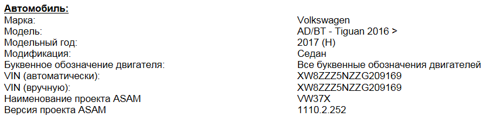
Нас интересует пункт: Наименование проекта ASAM
Экспорт адаптаций и кодировок¶
- Пункт "Функции автомобиля" (Vehicle services), подпункт 046-Специальные функции автомобиля (Fzg.Sonderfunktionen)
- Выбираем нужный блок.
- Ставим галки напротив пунктов "Адаптация", "Кодировки", нажимаем "Считывание данных" (Read data)
- Указываем путь и нажимаем сохранить.
Некоторые блоки могут спросить пароли (логины) После окончания сканирования наши протоколы сохранены в выбранную папку.
Активация режима разработки¶
Иногда для активации тех или иных адаптаций может выходить ошибка "Вне диапазона" или "Функция недоступна".
В большинстве случаев для решения данной проблемы достаточно включить Режим разработки в диагностическом сеансе у нужного блока:

Сохранение пресетов/предустановок¶
- Заходим в нужный блок (адаптация или кодировка)
- Выбираем нужный пункт (тот что [VO], [VN]), раскрываем его по нажатию стрелочки слева (>)
- В правом верхнем необходимо нажать "Предустановка"
- В выпавшем меню выбираем "Новое", задаем ей имя
- Там же в "Предустановка" выбираем "Экспорт" и указываем куда сохранить
Загрузка пресетов/предустановок осуществляется все там же в меню кнопки "Предустановка" — "Импорт".
Удалить пресет/предустановку из ODIS можно все там же, меню "Удалить событие".
Загрузка параметрии¶
- Выбираем нужный блок
- Пункт 010, подпункт 010.01 "Загрузка данных"
- Выбираем файл и начинаем загрузку
Обновление ПО блоков¶
Перед обновлением ПО необходимо выполнить следующие указания:
• Обеспечить подключение зарядного устройства к АКБ автомобиля
• При обновлении ПО все электрические потребители, в которых нет необходимости (вентиляция, подогрев сидений, освещение салона и т. д.), должны быть отключены.
• В обязательном порядке использовать кабельное соединение между адаптером и автомобилем. При соединении по Bluetooth© (трансмиттер) возможны нежелательные прерывания процесса обновления ПО!
• В обязательном порядке отключить все сторонние подключения к автомобилю (сотовые телефоны, внешние диски) и вынуть SIM-карту из ГУ!
• Дверь водителя во время обновления ПО должна быть открыта.
• Во время обновления ПО включить на автомобиле аварийную световую сигнализацию, чтобы обеспечить постоянную активность шины CAN на стороне автомобиля.
Ended: Инструменты и адаптеры
История изменений¶
32.03.2022¶
- Добавлены параметрии для камеры ассистентов с 60с предупреждением
1.02.2022¶
- Добавлен редактор параметрий
18.01.2022¶
- Добавлен XOR калькулятор
- Структура сайта переделана под использование Giscus системы комментариев
03.01.2022¶
- Обновление структуры сайта
- Добавлен новый раздел с eeprom кодированием
- Блоки кода с кодировками переключены на yaml формат
- Небольшая оптимизация ресурсов
20.10.2021¶
- Обновление версии сайта
- Мелкие исправления и доработки кодировок
- Правки FPA параметрий
14.07.2021¶
- Кодирование Lane Assist 2Q0* (MFK 3.0) камеры ассистентов
28.05.2021¶
- Кодировка задних динамических поворотников для Tiguan 2021 с фарами IQ Light
15.05.2021¶
- Инструкция по активации TMC
03.05.2021¶
- SWaP код для активации ACC или pACC
- Снятие блокировки и SWaP коды для MIB2 PRO
22.04.2021¶
- SWaP коды и параметрия для активации дополнительной функциональности ГУ (CM и DM)
04.04.2021¶
- Добавлен раздел с описанием инструментов для кодирования
- Обновление кодировок MLB-Evo
- Правки и исправления
30.03.2021¶
- Установка и кодирование RGB подсветки салона
- Обновление и исправление кодировок
- Обновление дизайна — темный режим
20.02.2021¶
- Параметрия для активации режима Видео в Движении
13.01.2021¶
- В online калькулятор длинного кодирования добавлена расшифровка блока А5
10.01.2021¶
- Online калькулятор длинного кодирования
- Активация подогрева зеркал вместе с включением обогрева заднего стекла
24.10.2020¶
- Добавлена кодировка подсветки перекрестков при приближении к ним
08.10.2020¶
- Обновление кодировок, мелкие исправления
19.09.2020¶
- Исправление некоторых кодировок
- Настройка режима Fusion для камеры ассистентов
- Отключение скачка громкости при старте магнитолы
04.09.2020¶
- Добавлена параметрия для камеры ассистентов с прошивкой L
12.08.2020¶
- Исправление некоторых кодировок
- Обновление разметки страниц
20.06.2020¶
- Добавлен новый раздел с MLB-Evo кодировками
16.06.2020¶
- Добавление возможности экспорта страниц в pdf формат
- Исправление ряда ошибок
- Добавлена инструкция по установке и кодированию автоматического переключателя света
08.05.2020¶
- Добавление новых кодировок активных систем MQB
- Добавлен pdf файл с MQB кодировками для Skoda Octavia A7
23.04.2020¶
- Обновлена информация по кодированию эстетической подсветки
12.04.2020¶
- Добавлены кодировки для платформы PQ35
- Исправлен ряд ошибок
08.04.2020¶
- Обновлен дизайн
- Улучшена производительность и скорость загрузки
- Обновлен генератор параметрии шин
06.04.2020¶
- Переход на домен www.wvcoding.ru
- MQB: Удалена кодировка настройки педали газа — смысла в ней нет, но может привести к проблемам с круиз контролем
31.03.2020¶
- Добавлены кодировки для платформы PQ26
- Произведена оптимизация интерфейса
- Добавлены настройки kessy при заведенном двигателе
- Добавлены кодировки для доп.оборудования
27.03.2020¶
- Добавлена кодировка системы Air Care
- Исправлена кодировка MirrorLink
- Добавлена кодировка корректировки показаний спидометра на приборной панели
20.03.2020¶
- Обновление и исправление кодировок, связанных с эстетической подсветкой
29.02.2020¶
- Исправление ошибок
- Добавление кодировок, связанных со сбросом интервала технического обслуживания
24.02.2020¶
- Добавлено кодирование эстетической подсветки
21.02.2020¶
- Добавлена страница с описанием кодирования батов и битов
- Обновлена кодировка подогрева руля
20.02.2020¶
- Добавлена страница с историей изменений
- Добавлена кодировка Косвенного контроля давления в шинах
- Активирован мультиязычный поиск
18.02.2020¶
- Добавлена страница с описанием кодирования светового оборудования
- Добавлены кодировки касательно Hill Start assistant и Hill Hold Control
- Подробно расписаны инструкции по активации ассистентов
- Обновлен раздел по работе с ODIS E
- Исправление ошибок в существующих кодировках
12.02.2020¶
- Разнесены кодировки магнитолы и приборной панели
- расширены кодировки приборной панели
20.01.2020¶
- Обновлена информация по маневровому свету
17.01.2020¶
- Выбор цвета у подсветки салона в зависимости от профиля движения
- Загрузка своей параметрии для шин
- Обновление некоторых кодировок по свету (нашел ошибки в выборе значений, которые многие копируют из журнала в журнал).
- У некоторых кодировок, где возможна путаница, добавил кодировки для VCDS и OBD11 со скриншотами
- У некоторых активаций добавил описание
- Нашел кодировку связанную с задним дворником (в ODIS она имеет перевод)
6.01.2020¶
Первый релиз данных кодировок
Обратная связь¶
Если у вас возникли какие-то вопросы, предложения, пожелания, можете оставить их на этой странице.
Ended: Общая информация
Платформа MQB ↵
Кодирование платформы MQB¶
Важная информация
При кодировании автомобилей 2021 года выпуска необходимо выполнить следующие условия для снятия защиты от записи в блоки:
- открыт капот
- включен ручной тормоз
Оффлайн версия для Skoda Octavia A7
Данный файл был создан пользователем SunLionn для сообщества «КОДИРОВКИ VAG» на DRIVE2.RU
Скачать PDF
Блоки автомобиля и коды доступа¶
> Блок 01 - Двигатель - код: 27971
> Блок 02 - электроника КП
> Блок 03 - ABS/ESP - коды в зависимости от изменияемых опций: 20103, 40168, 11966, 25004, 40304 (для BDW - просушка тормозных дисков), 15081, 32304, 33776, 33777, 33799, 37201, 37202, 37203, 37483, 24990, 25327, 25377, 25757, 31857, 10815, 11122, 14108, 14451, 24435, 12345
> Блок 4B - Многофункциональный модуль
> Блок 09 - Блок управления бортовой сети (BCM) - код: 31347
> Блок 13 - Авто-Дистанция / Адаптивный круиз контроль - код: 20103, 14117
> Блок B7 - Система санкционирования доступа и пуска двигателя
> Блок 17 - Панель приборов - код: 20103
> Блок 18 - Автономный отопитель - код: 80782
> Блок 19 - Гейтвей
> Блок 44 - Ассист.рулевого - код: 19249
> Блок A5 - камера ассистентов - код: 20103
> Блок 5F - MMI / RNS - код: 20103
> Блок 65 - Давление шин - код: 20103
> Блок 76 - Парковочный ассистент
> Блок 82 - Проекция на лобовое стекло
Ассистенты водителя ↵
Активация ACC и pACC (SWaP)¶
Все действия вы делаете на свой страх и риск! Мы не несем ответственность за испорченное оборудование.
Для прошивки необходим ODIS Engineering 12 версии. Более ранние версии могут выдавать ошибку при прошивке - "Не распознаны варианты".
SWaP - код на основе VIN-кода автомобиля, специального индивидуализирующего признака VCRN (Vehicle Component Registration Number) блока автомобиля, к которому применяется SWaP, и непосредственно перечня функций FEC (Function Enabling Codes) или FSC (FreiSchaltungsCode).
SWaP подписывается закрытым ключом (RSA1024).
pACC (Predictive ACC) — это адаптивный круиз-контроль, который может автоматически устанавливать скорость движения с помощью картографических данных (прогнозируемых данных, PSD) и распознаваемых дорожных знаков.
Архив с генератором SWaP, прошивками и параметриями: Скачать (версия от 02.02.2022)
10009001 MRR-Paket 1: ACClow (Basis-ACC) + FrontAssist inkl. CityANB
10009002 MRR-Paket 2: ACClow (ACC FTS) + FrontAssist inkl. CityANB
10009003 MRR-Paket 3: ACClow (ACC S&G) + FrontAssist inkl. CityANB
10009004 MRR-Paket 4: FrontAssist inkl. CityANB (без ACC)
10009005 MRR-Paket 5: CityANB (без ACC)
10009006 MRR-Paket 6: ACChigh (Basis-ACC) + FrontAssist inkl. CityANB
10009007 MRR-Paket 7: ACChigh (ACC FTS) + FrontAssist inkl. CityANB
10009008 MRR-Paket 8: ACChigh (ACC S&G) + FrontAssist inkl. CityANB
10009101 ACC-Funktionserweiterungs-Paket "predictiveACC"
10009102 ACC-Funktionserweiterungs-Paket "StauAssistent" (Ассистент пробок)
10009103 ACC-Funktionserweiterungs-Paket "predictiveACC & StauAssistent"
10009201 AWV-Auspraegung "AWV1,2 - Warnung nur visuell & auditiv" (предупреждение только визуальное и слуховое)
10009202 AWV-Auspraegung "AWV1,2"
10009203 AWV-Auspraegung "AWV1,2,3"
10009204 AWV-Auspraegung "AWV1,2,3, vFGS
10009205 AWV-Auspraegung "AWV1,2,3, vFGS, vRFS“
10009300 AWV-Funktionserweiterungs-Paket "Elektronische Parkbremse"
10009301 AWV-Funktionserweiterungs-Paket "EmergencyAssist"
10009302 AWV-Funktionserweiterungs-Paket "Abbiegeassistent"
10009303 AWV-Funktionserweiterungs-Paket "AWV-Gegenverkehr"
10009304 AWV-Funktionserweiterungs-Paket "Abbiegeassistent & AWV-Gegenverkehr"
10009305 AWV-Funktionserweiterungs-Paket "EmergencyAssist & AWV-Gegenverkehr"
10009306 AWV-Funktionserweiterungs-Paket "EmergencyAssist & Abbiegeassistent"
10009307 AWV-Funktionserweiterungs-Paket "EmergencyAssist & Abbiegeassistent & AWV-Gegenverkehr"
10009500 Verkehrszeichenerkennung (VZE)
10009600 Vorrausschauender Fussgaengerschutz (VFS) - FCWP
FGS = Fußgängerschutz (Pedestrian Protection)
RFS = Radfahrer-Schutz (Bicycle Protection)
10003100 MRR-Paket 1: ACClow (Basis-ACC) + FrontAssist inkl. CityANB
10003200 MRR-Paket 2: ACClow (ACC FTS) + FrontAssist inkl. CityANB
10003300 MRR-Paket 3: ACClow (ACC S&G) + FrontAssist inkl. CityANB
10003400 MRR-Paket 4: FrontAssist inkl. CityANB (ohne ACC)
10003500 MRR-Paket 5: CityANB (ohne ACC)
10003600 MRR-Paket 6: ACChigh (Basis-ACC) + FrontAssist inkl. CityANB
10003700 MRR-Paket 7: ACChigh (ACC FTS) + FrontAssist inkl. CityANB
10003800 MRR-Paket 8: ACChigh (ACC S&G) + FrontAssist inkl. CityANB
10003900 MRR-Paket 9: ACChigh konservativ (Basis-ACC) + FrontAssist inkl. CityANB
10003A00 MRR-Paket 10: ACChigh konservativ (ACC FTS) + FrontAssist inkl. CityANB
10003B00 MRR-Paket 11: ACChigh konservativ (ACC S&G) + FrontAssist inkl. CityANB
10004000 zFAS AreaView3
10004100 zFAS Bildverarbeitung AV3/IPA
10004200 zFAS Anhaenger-Rangier-Assistent
10004300 zFAS Aktionsgenerierung Warnen
10004600 zFAS AWC Ladeplattenerkennung
10005000 Personalisierung
10006100 ACC-Funktionserweiterungs-Paket "predictiveACC"
10006200 ACC-Funktionserweiterungs-Paket "StauAssistent"
10006300 ACC-Funktionserweiterungs-Paket "predictiveACC&StauAssistent"
10007100 AWV-Auspraegung "AWV1,2 – Warnung nur visuell&auditiv"
10007200 AWV-Auspraegung "AWV1,2"
10007300 AWV-Auspraegung "AWV1,2,3"
10007400 AWV-Auspraegung "AWV1,2,3, vFGS
10008100 AWV-Funktionserweiterungs-Paket "EmergencyAssist"
10008200 AWV-Funktionserweiterungs-Paket "Abbiegeassistent"
10008300 AWV-Funktionserweiterungs-Paket "AWV-Gegenverkehr"
10008400 AWV-Funktionserweiterungs-Paket "Abbiegeassistent&AWV-Gegenverkehr"
10008500 AWV-Funktionserweiterungs-Paket "EmergencyAssist&AWV-Gegenverkehr"
10008600 AWV-Funktionserweiterungs-Paket "EmergencyAssist&Abbiegeassistent"
10008700 AWV-Funktionserweiterungs-Paket "EmergencyAssist&Abbiegeassistent&AWV-Gegenverkehr"
Структура параметрии на примере 5Q0 радара¶
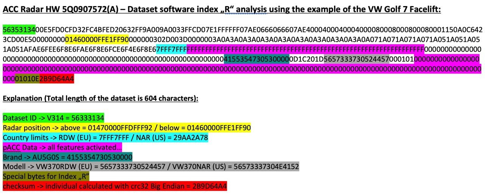
Соответствие радаров и прошивок¶
| ID оборудования | Прошивка X | Прошивка | Параметрия (ODIS XML) |
|---|---|---|---|
| 2Q0907572 | FL_2Q0907572T_X383 | FL_2Q0907572AA_0396 | ARBEITS_DATEI_DSDL2.xml (доступны варианты VW и Skoda) |
| 3QF_5QF907572 | FL_5Q0907572M_X720 | FL_5Q0907572S_0780 | 13_5Q0907572R_EU_RDW.xml |
| 3Q0907572 | FL_3Q0907572A_X180 | FL_3Q0907572C_0196 | DA_013_7200_3H0_V002_VW483A2RDW.xml |
| 5Q0907572 | FL_5Q0907572E_X312 | FL_5Q0907572K_0402 | 13_5Q0907572K.xml |
Для активации адаптивного круиз контроля необходимо сначала узнать текущую версию радара, который установлен:
Обозначение системы: ACCCONTIMQB
Версия ПО: 0372
Версия АО: H01
Номер детали VW/Audi: 2Q0907572R
Номер детали АО: 2Q0907572B
Смена прошивки на радаре без изменения SWaP кода¶
-
Сделать бэкап текущих кодировок и адаптаций
-
В случае 2Q0 радара сначала необходимо установить прошивку FL_2Q0907572T_0383_BOOTLOADER_V001_S
-
Установка обычной прошивки, не X в соответствии с таблицей
-
Заливка нужной параметрии в соответствии с таблицей
-
Восстановление кодировок и адаптаций
Прошивка и генерация SWaP кода¶
-
Для начала стоит проверить, что открытый ключ отличается от требуемого значения.
Посмотреть его можно в измеряемых величинах блока 13:Если открытый ключ совпадает с одним из списка, то можно смело переходить к шагу 5!для 2Q0.. - A6 2C 69 ... для 5Q0/3QF.. - 9C 47 73... для 3Q0.. - D2 C3 3E... для 5Q0.. - "8F 51 4A... -
Принудительно на радаре активировать защиту компонентов с помощью онлайн-аккаунта ODIS Service.
Нужно начать процедуру снятия защиты компонентов (с уже снятой защитой) и в процессе отключить VAS5054A. При удачном стечении обстоятельств имеющиеся коды сопряжения будут стерты, а новые еще успеют залиться в блок, и после перезагрузки блока он упадет в CP. Если не получилось, повторяем снова. -
Установка X прошивки, например, FL_2Q0907572AA_X390___S.odx
В случае 2Q0 радара — если версия ниже 0380, то сначала необходимо установить прошивку FL_2Q0907572T_0383_BOOTLOADER_V001_S, а затем FL_2Q0907572AA_X390___S.odx -
Снять защиту компонентов
После снятия защиты необходимо убедиться, что открытый ключ изменился на нужный.
Посмотреть его можно в измеряемых величинах блока 13.Если все в порядке, переходим к генерации SWaPдля 2Q0.. - A6 2C 69 ... для 5Q0/3QF.. - 9C 47 73... для 3Q0.. - D2 C3 3E... для 5Q0.. - "8F 51 4A... -
Для генерирования SWaP кодов понадобится VCRN (Vehicle Component Registration Number).
Данный код можно вытянуть из измеряемых величин 13 блока:Блок 003 — Измеряемые величины → индивидуализирующий признак (VCRN) -
Выбор нужных FEC кодов
Максимально - 4 штуки. Они зависят от того, зависит от того какие свапы поддерживает сам радар.
Блок 003 — Измеряемые величины → Список всех функций SWaP
Например, радар 3qf907561d поддерживает: 10009000 10009100 10009200 10009300
10009008 — ACC High 210 & stop and go & fts 10009204 — front assist 10009101 — pre acc 10009307 (doesn't work for 3QF Bosch sensors -
С помощью утилиты afcg.exe сгенерировать SWaP код. Для генерации кода понадобится ввести: VIN, VCRN (из 3 шага) и набор FEC кодов через пробел
-
Полученный SWaP код необходимо ввести в адаптации 13 блока (Передача кода разблокировки функции SWaP):
Проверить, все ли сделали правильно, можно в измеряемых величинах (003 Измеряемые величины → Статус всех функций SWaP).Блок 009 — Диагностический сеанс → Режим при сходе с конвейера (EOL) Блок 008 — Право доступа → код 20103 Блок 007 — Адаптации - Передача кода разблокировки функции SWaP → Ввод сгенерированного кода в поле "Ввод данных" Блок 005 — Базовая установка UDS → Разблокировка функции SWaP Блок 003 — Измеряемые величины → Статус всех функций SWaP
Если все хорошо, то вы увидите перечень ваших FEC-кодов, для каждого из которых будет указано available, valid, condition met (доступн., действ., условие выполнено). -
Установка обычной прошивки, не X в соответствии с таблицей
-
Заливка нужной параметрии в соответствии с таблицей
-
Восстановление кодировок и адаптаций или настройка с нуля (см. ниже)
Проведение кодировок и адаптаций для первичной активации ACC¶
Настройка электроники двигателя
Блок 01 → Кодирование:
> Байт 5 – Бит 6: Активировать
→ Применить (с перезагрузкой блока)
Блок 03 → Кодирование:
> Байт 24 – Бит 3: Активировать
→ Применить (с перезагрузкой блока)
Сохранение номеров выбранных FEC кодов
В FSID группы необходимо по порядку прописать последние цифры выбранных FEC кодов (1 — 90, 2 — 91, 3 — 92, 4 — 93)
Например, выбраны FEC коды: 10009008, 10009101, 10009204, 10009307
Блок 13 → Кодирование:
> SWaP_FSID_group_1: 8
> SWaP_FSID_group_2: 1
> SWaP_FSID_group_3: 4
> SWaP_FSID_group_4: 7
→ Применить (с перезагрузкой блока)
Блок 13 → Кодирование:
> Front_camera: installed - в случае наличия камеры ассистентов
> Control_module_for_lane_assistant: installed
> Initialization_concept_front_assist
>> Initialization_1 — большая иконка ожидания готовности Front Assist в верхнем левом углу AID, Front Assist активируется только после начала движения, это значение стоит с завода;
>> Initialization_2 — маленькая иконка ожидания готовности Front Assist там же, где потом появляется иконка ACC, Front Assist активируется через пару секунд после включения зажигания и сразу видит препятствия перед машиной.
> Automatic_driveaway_by_pretrigger: Активировать
> Automatic_driveaway_after_short_stop: Активировать
> Driveaway_by_triggerleaver: Активировать
> Pretriggertime_reduction → deactivated (увеличение времени ожидания при остановке до 10 секунд)
> FPK_functions → installed (если есть кнопка Drive Mode)
> Overtaking_right_prevention → deactivated (обгон справа)
> Drive_pmode_selection → MMI_menu_ACC (выбор режима работы в меню ассистентов на магнитоле)
→ Применить (с перезагрузкой блока)
Блок 13 → Адаптация:
> Distance_Setting
>> par_Distance_Setting → on
> Adjustment_mode_time_slot_adaptive_distance_control
>> Adjustment_mode_time_slot_adaptive_distance_control → on
→ Применить
логин-пароль 20103
Настройка приборной панели
Блок 17 → Кодирование:
> adaptive_cruise_control → yes
→ Применить (с перезагрузкой блока)
Блок 19 → Кодирование:
> FPA_Funktion_ACC: Активировать
→ Применить (с перезагрузкой блока)
Блок 19 → Адаптация:
> Multi_function_steering_wheel_control_module Coding Value
>> variant → ACC-High
→ Применить
Настройка рулевой рейки (для Skoda)
Блок 16 (Электроника рулевой колонки) → Кодирование:
> Switch_for_cruise_control_integrated_in_turn_signal_switch: not installed
> Switch_for_cruise_control: installed
> Adaptive_cruise_control: installed
→ Применить (с перезагрузкой блока)
Настройка ГУ
Блок 5F → Адаптация:
> Car_Function_Adaptations_Gen2 - menu_display_ACC: Активировать
> Car_Function_Adaptations_Gen2 - menu_display_ACC_over_threshold_high: Активировать
> Car_Function_List_BAP_Gen2 - ACC_0x05: Активировать
→ Применить
логин-пароль 20103
Настройка парковочного ассистента
Блок 76 → Кодирование:
> Adaptive_cruise_control: Активировать
→ Применить (с перезагрузкой блока)
Проведение кодировок и адаптаций для активации pACC¶
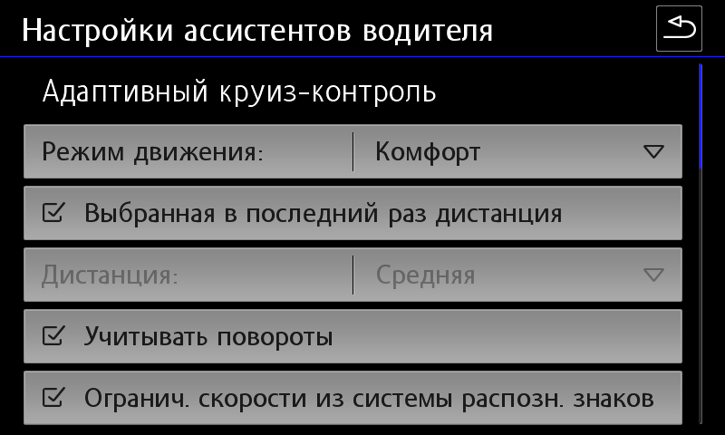
Блок 13 → Кодирование:
> Traffic_sign_detection: Активировать
> Speed_limit_assitent: Активировать
> Curve_assistent: Активировать
> Kurvenassistent_CarMenu: Активировать
→ Применить (с перезагрузкой блока)
Блок 13 → Адаптация:
> Predictive speed limit control
>> par Predictive speed limit control: Активировать
→ Применить
логин-пароль 20103
Дополнительные кодировки для радаров версии 5Q¶
Блок 13 → Кодирование:
> zul_Regelabweichung_CarMenu — large
> pACC_Regulation_on_priority: Активировать
> pACC_Reaction_to_end_of_traffic_jam: with speed adaptation
> pACC_Learning_drivers_offset: Активировать
> pACC_Reaction_to_narrow_places: dynamic and static
→ Применить (с перезагрузкой блока)
логин-пароль 20103
Адаптивный круиз контроль. Кодирование¶
Разрешить обгон/опережение справа для Адаптивного Круиз Контроля (АСС)¶
По умолчанию система ACC тормозит автомобиль, если на полосе слева едет медленный автомобиль (даже при пустой дороге).
Блок 13 → Кодирование:
- Overtaking_right_prevention (Vermeidung für unzulässigen Überholvorgang): Деактивировать
→ Применить
Блок 13 (Адаптивный круиз контроль) → Безопасный доступ → Логин-пароль 20103 > Длинное кодирование:
- Overtaking_right_prevention: Деактивировать
→ Применить
13 Блок Adaptive Cruise Control → Длинное кодирование:
- Байт 2 – Бит 5 (Overtaking_right_prevention): Деактивировать
Выход → Сохранить
логин-пароль 20103
Активация выбора режима работы Адаптивного Круиз Контроля (АСС), независимо от выбранного Профиля езды¶
Блок 13 → Кодирование:
- Drive_pmode_selection: Меню MMI Адаптивный круиз контроль (ACC)
→ Применить
Блок 13 Adaptive Cruise Control → Кодирование → Длинное кодирование:
- Байт 3 – Бит 7 (Drive_pmode_selection, 0=MMI menu ACC / 1=Driving profile selection): Деактивировать
Выход → Сохранить

логин-пароль 20103
Увеличение времени ожидания трогания Адаптивного Круиз Контроля (АСС)¶
По умолчанию система Stop & Go после полной остановки активна только 3 секунды. По истечении этого времени продолжить движение можно только кнопкой на руке, либо педалью акселератора.
Снять это ограничение невозможно, однако на последних версиях прошивки можно увеличить временной интервал до 10 секунд.
Требования к прошивкам:
3QF907561, 5Q0907561: SW 0780, H10-H11
2Q0907561, 2Q0907572: SW 0383, H01-H04
Блок 13 → Кодирование:
- Байт 11 – Бит 0 (Pretriggertime_reduction): Деактивировать
→ Применить
Регулировка толерантности (только для 5Q0 радаров)¶
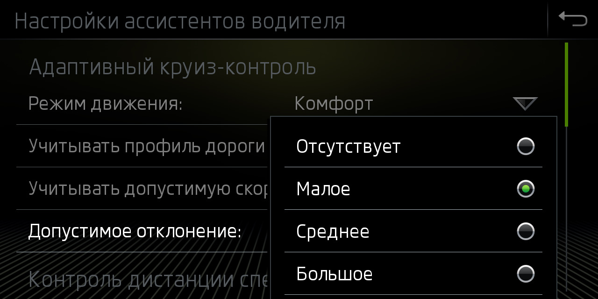
Пункт меню «Учитывать допустимую скорость» и непосредственно включает или выключает режим регулирования скорости АСС в зависимости от знаков в навигации или распознанных камерой.
Блок 13 → Кодирование:
- Tempolimitassistent_CarMenu: Активировать
Пункт настроек допустимых отклонений в меню «Адаптивного Круиз Контроля»
Блок 13 → Кодирование:
- zul_Regelabweichung_CarMenu: large
Выставленные Вами для того или иного знака ограничения будут сохраняться и автоматически подставляться каждый раз при распознавании этих знаков.
Блок 13 → Кодирование:
- pACC_Learning_drivers_offset: Активировать
Настройка предупреждения Front Assist¶
Блок 13 → Кодирование:
- adjustability_awv_pre_warning: Деактивировать
- default_value_awv_pre_warning: Активировать
Кодирование 3Q0/3QD* (MFK 2.0) камеры ассистентов¶
Данная инструкция подходит только для камер 3Q0980654
Lane Assist с адаптивным ведением по полосе — адаптивное ведение исключает "пин-понг" от полосы к полосе.
Опция отличная, позволяет расслабиться за рулем и не вылавливать центр полосы, по трассе просто незаменима.
Traffic Jam Assist — Ассистент движения в пробке.
Это расширение работы Lane Assist для работы с 0 км/ч. В пробке машина подруливает, разгоняется и тормозит сама, без участия водителя. При остановке более 3 секунд для старта нужно нажать RES или тапнуть педаль газа.
Emergency Assist — Ассистент медицинской остановки.
Если водитель не желает или не может принимать участие в управлении автомобилем, то машина начинает его будить, сначала звуком, потом резким схватыванием тормозов,
если и далее человек не принимает управление, то машина сама включает аварийку и останавливается.
Sign Assist — Ассистент распознавания дорожных знаков. Показывает знаки, которые считывает камера.
Прошивка камеры ассистентов¶
Расположены тут: Прошивки и параметрия
Активации ассистентов¶
Матричные фары IQ Light¶
Блок A5 (камера ассистентов) → Кодирование:
>> AFS_coding_Light_Assist: Matrixbeam
→ Применить
Активация кнопки вызова ассистентов (для 5Q0 953 502 AJ / Valeo 408 876)¶
Блок 16 → Адаптация:
> Электроника рулевой колонки
> Клавиша вспомогательных систем водителя
> Установл.
→ Применить
логин-пароль 20103
Активация Line Assist без адаптивного ведения по полосе¶
Warning
Для активации Line Assist обновление параметрии для установленной камеры ассистентов не требуется
Включаем отображение Line Assist на приборной панели
Блок 17 (комбинация приборов/ActiveInfoDisplay) → Кодирование:
> Lane_assist: yes
(Байт 04 – Бит 6 (Lane_assist: no → yes)): Активировать)
> Lane_assist_BAP: yes.
(Байт 11 – Бит 1 (Lane_assist_BAP: no → yes)): Активировать)
Конфигурация камеры ассистентов
Можно использовать готовое кодирование:
000307060007040100220044C150890080000E20004000
Блок A5 (камера ассистентов) → Кодирование:
Байт 14 – меняем значение на A0/A1
Байт 16 – Бит 7: Активировать (либо меняем значение байта на 90/98)
Блок A5 (камера ассистентов) → Адаптация:
> Lan_assist_system_mode (Состояние включение ассистента движение по полосе) - Selection_over_menu
> Lane_assist_warning_intensity (Интенсивность предупреждений ассистента движения по полосе) - Selection_over_menu
> Personalization of lane dept. warning Cl. 15 on (Персонализация момента вмешательство при вкл клеммы 15) - Last Setting (последняя настройка)
→ Применить
логин-пароль 20103
HCA - Указание блоку рулевого управления о наличии Line Assist
Блок 44 (усилитель рулевого) → Кодирование:
> Heading_control_assist: Активировать
(Байт 03 – Бит 1: Активировать)
→ Применить
логин-пароль 19249
Включаем в меню новые функции
Блок 5F (мультимедия) → Адаптация:
> Car_Function_List_BAP_Gen2
>> LDW_HCA_0x19: activated
> Car_Function_Adaptations_Gen2
>> menu_display_Lane_Departure_Warning: Активировать
>> menu_display_Lane_Departure_Warning_over_threshold_high: Активировать
→ Применить
Указание блоку парковочного ассистента о наличии Line Assist (У кого PLA3.0 12 Датчиков)
В Tiguan 2G 2020 года выпуска PLA3.0 может стоять в системе как 10 блок, а не 76
Блок 76 → Кодирование:
Ассистент движения по полосе, связ. с усилителем рул. управления
> HeadingControl Unterstutzung Auswahl: Spurhalteassistent aktiviert (Heading-Control)
(Байт 3 – Бит 5)
→ Применить
Активация полного комплекта: адаптивный Line Assist, Traffic Jam Assist, Sign Assist¶
Lane Assist с адаптивным ведением по полосе — исключает "пин-понг" от полосы к полосе.
Опция отличная, позволяет расслабиться за рулем и не вылавливать центр полосы, по трассе просто незаменима.
Warning
Для работы Traffic Jam Assist необходима параметрия для установленной камеры ассистентов.
Расположены тут: Прошивки и параметрия
Указание блоку климата (08), что установлен обогрев камеры.
Блок 08 → Кодирование:
> Camera heating: installed
(Байт 08 – Бит 0 (Camera heating: not installed → installed)): Активировать)
→ Применить
Блок 08 - Длинное кодирование:
> Нагревательный элемент камеры: не установл.→ установл.
Указание радару ACC, что, установлена камера
Блок 13 (адаптивный круиз) → Кодирование:
> Front_camera: installed
(Байт 03 – Бит 6 (>> Front_camera: not_installed → installed)): Активировать)
→ Применить
Блок 13 → Длинное кодирование:
> Front_camera: не установл.→ установл.
Изменение типа ассистента дальнего света с простого на MDF - маскируемый или неослепляющий дальний. Добавляем ассистент в меню
Блок 09 (бортовая сеть) → Адаптация:
>> Aussenlicht_Blinker
> Warnblinken_durch_Fahrerassistenz → available
>> Fernlicht_assistent
> Erweiterte_Fernlichtsteuerung: AFS, FLA, Fernlicht ueber AFS → AFS, FLA, Fernlicht (GLW,MDF)
> Menuesteuerung Fernlichtassistent: not available → available
> Fernlichtassistent Reset: Деактивировать
→ Применить
логин-пароль 31347
Включаем отображение Line Assist и дорожных знаков на приборной панели
Блок 17 (комбинация приборов/ActiveInfoDisplay) → Кодирование:
> Lane_assist: yes
(Байт 04 – Бит 6 (Lane_assist: no → yes)): Активировать)
> Lane_assist_BAP: yes (Добавить лайн ассист в меню ассистентов приборной панели)
(Байт 11 – Бит 1 (Lane_assist_BAP: no → yes)): Активировать)
> traffic_sign_display: yes.
(Байт 05 – Бит 2 (traffic_sign_display: no → yes)): Активировать)
→ Применить
Блок 17 → Длинное кодирование:
> Ассистент движения по полосе: Нет → Да
> Распознавание дорожных знаков: Нет → Да
> Ассистент движения по полосе, BAP, путь: Нет → Да
Активация установленных блоков. Нужно добавить A5 (передние датчики вспомогательных систем) и убрать блок 20 (зеркало с камерой FLA)
Блок 19 (гейтвэй) → Адаптация:
> Gateway_Component_List: Node_0x30:coded → not_coded;
> Gateway_Component_List: Node_0x4F: not_coded → coded.
→ Применить
Блок 19 → Адаптация:
>> Перечень элементов, которые должны быть установлены
> Ассистент дальнего света: Закодирован→ Не закодир.
> Передние датчики вспомогательных систем для водителя: Не закодир.→ Закодирован
HCA - Указание блоку рулевого управления о наличии Line Assist
Блок 44 (усилитель рулевого) → Кодирование:
> Heading_control_assist: Активировать
(Байт 03 – Бит 0: Активировать)
→ Применить
Блок 44 → Длинное кодирование:
> Ассистент движения по полосе: Не акт. → акт.
логин-пароль 19249
Настройка блока фар
Внимание!
Изменение кодировок в данном блоке приводит к сбросу базовых настроек фар. Как вернуть базовые настройки?
Блок 4B (многофункциональный модуль) → Кодирование:
> mdf_activation: Активировать
(Байт 10 – Бит 6 (>> mdf_activation: not_enabled → enabled)): Активировать)
> headlamp_coding_word: 1
→ Применить
Блок 4B → кодирование:
> headlamp_coding_word: 0 → 1
> mdf_activation: не разблокирован → разблокирован
Указание блоку ABS об возможности экстренной остановки
Блок 03 (ABS) → Кодирование:
> Electromechanical parking brake: emergenay braking
(Байт 29 – Бит 5: Активировать)
→ Применить
Настройка блока 3С (Ассистент смены полосы движения)
Блок 3С → Кодирование:
> Lane_Departure_Warning_System:_with_Lane_Departure_Warning_System
Ю Front_Sensors_Driver_Assistance_System:_with_Front_Sensors_Driver_Assistance_System
→ Применить
Указание блоку парковочного ассистента о наличии Line Assist (У кого PLA 12 Датчиков)
Полезная информация
В Tiguan 2G 2020 года выпуска PLA3.0 может стоять в системе как 10 блок, а не 76
Блок 76 → Кодирование:
Ассистент движения по полосе, связ. с усилителем рул. управления
> HeadingControl Unterstutzung Auswahl: Spurhalteassistent aktiviert (Heading-Control)
(Байт 3 – Бит 5)
→ Применить
Включаем в меню новые функции
Блок 5F (мультимедия) → Адаптация:
> Car_Function_List_BAP_Gen2
>> LDW_HCA_0x19: Активировать
>> traffic_sign_recognition_0x21: Активировать
>> traffic_sign_recognition_0x21_msg_bus: CAN_Extended (Дополнительная шина данных)
> Car_Function_Adaptations_Gen2
>> menu_display_Lane_Departure_Warning: Активировать
>> menu_display_Lane_Departure_Warning_over_threshol d_high: Активировать
>> menu_display_road_sign_identification: Активировать
>> menu_display_road_sign_identification_over_threshold_high: Активировать
→ Применить
Даем указание блоку проекции (если есть)
Блок 82 → Кодирование:
> Road_sign_detection: available
> Lane_departure_warning: available
→ Применить
Конфигурация камеры ассистентов.
Готовое кодирование
000307060007040100222346C154890098000E20004000
Для удобства можно воспользоваться калькулятором битов с расшифровкой А5 блока.
Например, готовую кодировку можно Открыть в калькуляторе
Блок A5 (камера ассистентов) → Кодирование:
>> Brand: VW
>> Class: A
>> Generation: Generation_7
>> Bodystyle: Suv
>> Expansion: Not_coded
>> Production_region: EU
>> Country_variant: Europe
>> Chassis: Steel_springs
>> Steering_bar: Not_coded
>> Windshield: Heat_protecting_glass
>> Traffic_side: Right_traffic
>> PSD_Version: PSD_15 # (1)
>> Navigation: MIB_High # (2)
>> AAG: Coded # (3)
>> SWA (Side assist): Coded # (4)
>> ACC: Coded
>> Pedestrian_break: Not_coded
>> Blind_spot_detection: Not_coded
>> Rain_light_sensor: Coded
>> Main_unit: enabled
>> PLA: Coded # (5)
>> ESP: Coded
>> Personalize_VZE: Not_Coded
>> Lan_assist_system_mode: Selection_over_menu
>> Personalized_key: Version_1.x
>> Networking_variant: MQB
>> Radar_interface: Coded
>> Perso_HC: Last_setting # (6)
>> Point_of_intervention: early_setting_over_menu
>> LaneAssist_AGW_output: disabled
>> Lane_assist_off_text: disabled
>> Emergency_Assist: EA_Variant_2
>> Traffic Sign Recognition (TSR/VZE): coded
>> HC_mob_line: Not_coded
>> HC: Coded
>> FCWP_default_on_prewarning: last_mode
>> FCWP_delivery_status_prewarning: off
>> FCWP_extended_prewarning_settings: Not_coded
>> FCWP_warning_indicator: Not_coded
>> FCWP: Not_coded
>> FLA_Additional_High_Beam: no_Additional_High_Beam
>> FLA_Headinglight_type: LED
>> Mains_frequency: 50_Hz
>> AFS_coding_Light_Assist: Dynamic_Light_Assist (or Matrixbeam for Tiguan 2021)
>> HC_LONGPRESS: Not_Coded (only for Audi)
→ Применить
- Прогнозируемые данные по маршруту. Зависит от установленного ГУ (если нет навигации, то
Not coded) - Тип навигации. Зависит от установленного ГУ
- Если установлен фаркоп
- Если установлен контроль слепых зон
- Если установлен Park Assist
- Запоминание выбранного режима при выключении зажигания
Блок A5 (камера ассистентов) → Адаптация:
> Road_sign_recognition_fusion_mode (Распознавание дорожных знаков: режим Fusion) → Road_Sign_Recognition
> Lane_assist_warning_intensity (Интенсивность предупреждений ассистента движения по полосе) → Selection_over_menu
> Personalisation_point_of_intervention (Персонализация момента вмешательства) → Last Setting (последняя настройка)
→ Применить
логин-пароль 20103
BAP Personalization
BAP Personalization - персонализация программирования настроек под каждый ключ в машине. Для автомобилей Tiguan данная опция не задействована — значение ни на что не влияет.
Чтение дорожных знаков (Fusion Mode)¶
Существует возможность добавить на головное устройство отображение дорожных знаков из базы навигации (Sat Nav Speed Limits),
а на AID (Virtual Cockpit) — отображение знаков с камеры ассистентов.
Если вдруг камера в засаде, то можно на всякий случай скинуть скорость до того значения, которое имеет наименьшее значение.
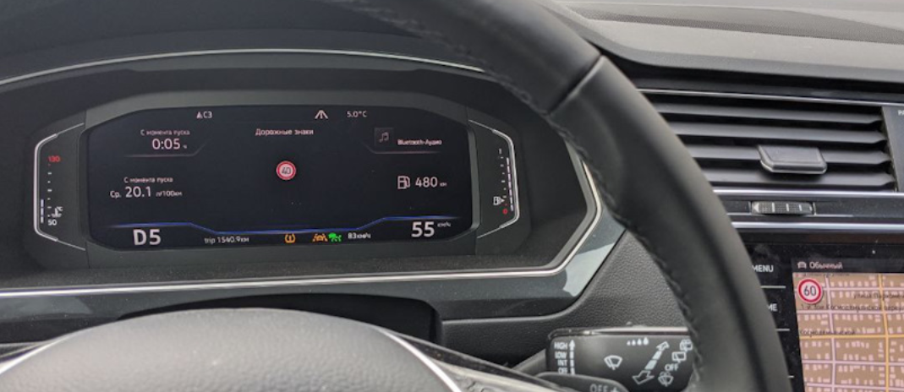
Блок 5F (мультимедия) → Адаптация:
> Car_Function_List_BAP_Gen2
>> traffic_sign_recognition_0x21: Деактивировать
→ Применить
> Car_Function_Adaptations_Gen2
>> menu_display_road_sign_identification: Деактивировать
>> menu_display_road_sign_identification_over_threshold_high: Деактивировать
→ Применить
Блок 5F (мультимедия) → Кодирование:
>> byte_24_vza: Активировать
Подсветка перекрестков при приближении к ним¶
Топовые MID LED фары умеют активировать боковой свет на перекрестках и сами поворачивать свет еще при приближении к повороту по навигационным данным.
Блок 4B → Кодирование:
psd_data: Активировать
Crossing_light_with_route_data: Активировать — включает боковой свет при приближении к перекрестку
Predictive_afs: Активировать — управляет светом на поворотах по навигационным картам
После этого необходима базовая установка фар!
Кодирование 2Q0* (MFK 3.0) камеры ассистентов¶
Данная инструкция подходит только для камер 2Q0980653
Lane Assist с адаптивным ведением по полосе — адаптивное ведение исключает "пин-понг" от полосы к полосе.
Опция отличная, позволяет расслабиться за рулем и не вылавливать центр полосы, по трассе просто незаменима.
Traffic Jam Assist — Ассистент движения в пробке.
Это расширение работы Lane Assist для работы с 0 км/ч. В пробке машина подруливает, разгоняется и тормозит сама, без участия водителя. При остановке более 3 секунд для старта нужно нажать RES или тапнуть педаль газа.
Для активации требуется параметрия.
Emergency Assist — Ассистент медицинской остановки.
Если водитель не желает или не может принимать участие в управлении автомобилем, то машина начинает его будить, сначала звуком, потом резким схватыванием тормозов,
если и далее человек не принимает управление, то машина сама включает аварийку и останавливается.
Sign Assist — Ассистент распознавания дорожных знаков. Показывает знаки, которые считывает камера.
Для активации необходим SWaP код.
SWaP коды расширения функционала¶
100E1000
100E1100
100E1200
100E1300
100E1400
100E1500
100E1600 — Распознавание предметов на пути
100E1700 — Распознавание пешеходов (FCPW)
100E0F00 — Распознавание знаков (TSR/VZE)
Прошивка камеры ассистентов¶
Расположены тут: Прошивки и параметрия
Активации ассистентов¶
Активация помощника удержания в полосе (Lane Assist)¶
Включаем отображение Line Assist на приборной панели
Блок 17 (комбинация приборов/ActiveInfoDisplay) → Кодирование:
> Lane_assist: yes
(Байт 04 – Бит 6 (Lane_assist: no → yes)): Активировать)
> Lane_assist_BAP: yes.
(Байт 11 – Бит 1 (Lane_assist_BAP: no → yes)): Активировать)
HCA - Указание блоку рулевого управления о наличии Line Assist
Блок 44 (усилитель рулевого) → Кодирование:
> Heading_control_assist: Spurhalteassistent auf "aktiv"
(Байт 03 – Бит 1: Активировать)
→ Применить
логин-пароль 19249
Включаем в меню новые функции
Блок 5F (мультимедия) → Адаптация:
> Car_Function_List_BAP_Gen2
>> LDW_HCA_0x19: Активировать
>> LDW_HCA_0x19_msg_bus: CAN_Extended
> Car_Function_Adaptations_Gen2
>> menu_display_Lane_Departure_Warning: Активировать
>> menu_display_Lane_Departure_Warning_over_threshold_high: Активировать
→ Применить
Указание блоку парковочного ассистента о наличии Line Assist (У кого PLA3.0 12 Датчиков)
PLA3.0 может стоять в системе как 10 блок, а не 76
Блок 76 → Кодирование:
Ассистент движения по полосе, связ. с усилителем рул. управления
> HeadingControl Unterstutzung Auswahl: Spurhalteassistent aktiviert (Heading-Control)
(Байт 3 – Бит 5)
→ Применить
Конфигурация камеры ассистентов
Блок A5 (камера ассистентов) → Кодирование:
> Byte 08 > Bit 5-7 - Point_of_intervention: A0 late, setting over menu
> Byte 09 > Bit 0-1 - Configuration_for_lane_departure_warning_Kl15: 03 Last_setting
> Byte 09 > Bit 7 - HC: (1) coded
> Byte 09 > Bit 2-3 - Lane_assist_system_mode: 0C Selection_over_menu
> Byte 09 > Bit 4-5 - HC advanced takeover request: (1) coded
> Byte 17 > Bit 0 - HC messages: (1) coded
→ Применить
Прошивки для камеры ассистентов¶
Для полноценной работы камеры ассистентов нужна правильная прошивка и параметрия к ней.
Камеры могут быть 3 вариантов:
- 5Q0... - MFK 1.0 (Lane Assist, Sign Assist, DLA)
- 3Q0/3QD... - MFK 2.0 (Lane Assist, Sign Assist, Traffic Jam Assist, DLA)
- 2Q0... - MFK 3.0 (Lane Assist, Sign Assist, Traffic Jam Assist, Pedestrian Assist, DLA)
Параметрии для прошивок L и H с увеличенным временем предупреждения (60с) для разных машин можно найти на https://mibsolution.one
Прошивки для камер вида MFK3¶
| ID оборудования | Прошивка | Параметрия (ODIS XML) |
Примечания |
|---|---|---|---|
| FL_2Q0980653_1029_2Q0980653 | (Скачать) | (Скачать для Skoda) | Параметрию нужно проверять! |
| FL_2Q0980653_1142_2Q0980653 | |||
| FL_2Q0980653_1202_2Q0980653B | (Скачать) |
Прошивки для камер вида MFK2¶
Важно!
Порядок обновления должен быть следующим: G → H → L → T → Q → R → S → T
Изменение этого порядка в обратном порядке повредит вашу камеру
Поколение 4:
| ID оборудования | Прошивка | Параметрия (ODIS XML) |
Примечания |
|---|---|---|---|
| FL_3Q0980654_0920_3Q0980654S | (Скачать) | (Скачать) | Не рекомендуется для Tiguan 2G. Существуют проблемы с удержанием в полосе |
| FL_3Q0980654_0460_3Q0980654R | |||
| FL_3Q0980654_0881_3Q0980654Q | |||
| FL_3Q0980654_0451_3Q0980654M |
Поколение 3:
| ID оборудования | Прошивка | Параметрия (ODIS XML) |
Примечания |
|---|---|---|---|
| FL_3Q0980654_0611_3QD980654T | Прошивка для Tiguan 2G от модельного ряда 2020 года | ||
| FL_3Q0980654_0610_3QD980654L | (Скачать) | (Скачать для VW Tiguan (60s) | |
| FL_3QD980654_1611_3QD980654A | (Скачать) | (Скачать для Skoda и Seat) |
Поколение 2:
| ID оборудования | Прошивка | Параметрия (ODIS XML) |
Примечания |
|---|---|---|---|
| FL_3Q0980654_0272_3QD980654H | (Скачать) | (Скачать для VW Tiguan (60s) | |
| FL_3QD980654_1272_3QD980654 | (Скачать) | ||
| FL_3Q0980654_0231_3QD980654G | (Скачать) | ||
| FL_3Q0980654_0220_3QD980654F |
Поколение 1:
| ID оборудования | Прошивка | Параметрия (ODIS XML) |
Примечания |
|---|---|---|---|
| FL_3Q0980654_0024_3Q0980654D | |||
| FL_3Q0980654_0010_3Q0980654C |
Ended: Ассистенты водителя
Активные системы помощи при вождении¶
Настройка BDW (Brake Disc Wiper / Просушка дисков)¶
Блок 3-ABS/ESP → Адаптация:
> Disk drying
> По умолчанию: по умолч. стоит слабо (weak)
> Новое значение: сильно (strong)
→ Применить
логин-пароль: 40304
Настройка ASR (Starting vibration reduction / Уменьшение колебания при трогании)¶
Normal (меньше режет тягу)
Strong (по умолчанию)
Maximum (для тех кто не хочет стирать резину, но система душит движок)
Блок 3-ABS/ESP → Адаптация:
> Уменьшение колебания при трогании / Starting vibration reduction → вводим нужное значение уровня
→ Применить
логин-пароль: 20103
TSC (Traction Control System / Компенсация увода вбок)¶
В случае резкого разгона автоматически будет произведена компенсация увода автомобиля вправо.
Tip
Возможны следующие значения:
- inactive
- with learned Value active / с адапционной величиной (2 бит)
- without learned Value active (3 бит)
Блок 44 (Усилитель рулевого управления) → Кодирование:
> torque_steer_function / Компенсация увода в бок
→ Применить
Блок 44 Усилитель рулевого управления → Кодирование → Длинное кодирование:
> Байт 0: Активировать
Выход → Сохранить
логин-пароль: 19249
Ассистент удержания на спуске или подъеме Hill Hold Control (HHC)¶
HHC удерживает автомобиль на спуске или подъеме и предотвращает его самопроизвольное скатывание, пока водитель не нажмет педаль газа.
Блок 3-ABS/ESP → Кодирование → Длинное кодирование:
> Байт 25 – Бит 0: Активировать
Значения адаптации
Есть 3 уровня HHC: early, normal, late
Блок 3-ABS/ESP → Адаптация:
> HHC (Berganfahrassistent, Hill_hold_assist_control) → ранее (early)
→ Применить
логин-пароль: 20103
Если после активации у Вас не пропадает ошибка по ABS, значит Ваш блок не поддерживает HHC.
Отключение ESC через меню¶
Warning
На машинах 2016-17г возможна установка 31-байтных блоков ABS.
В нем есть еще 1 последний байт, обычно там стоит значение 03 - его трогать не надо!
Tip
Возможны следующие значения:
01 = ESC & ASR On
02 = ESC & ASR On/Off
03 = ESC & ASR On + ESC SPORT
04 = ESC & ASR On + ESC Off
05 = ESC On/Off + ASR Off
06 = ESC On/Off + ESC Sport
07 = ESC On/Off + ASR Off
08 = ESC On/Off + ESC Sport
09 = ESC On + ASR Off + ESC Sport
Блок 3-ABS/ESP → Кодирование:
> Байт 29: заменить на «05» (даёт меню ESC ВКЛ, ASR выкл, ESC выкл.)
→ Применить
Чтобы, ESP не включалась обратно при скорости выше 100км/ч:
Блок 3-ABS/ESP → Адаптация:
> ESP activation depending on speed (Electronic stabilitin program): Деактивировать
→ Применить
01 — ABS/ESP → Кодирование → Длинное кодирование:
Байт 29: заменить на «05» (даёт меню ESC ВКЛ, ASR выкл, ESC выкл.)
Выход → Сохранить

логин-пароль: 20103
Настройка XDS (притормаживание внутреннего колеса для ввинчивания в поворот)¶
Tip
Поставил на max и попробовал в сравнении с strong, по ощущениям притормаживание внутреннего (в повороте) колеса в strong происходит на большей скорости и с большим выворотом руля чем в режиме maximum.
Радиус поворота однозначно меньше при maximum.
Блок 03 → Кодирование:
> Байт 17 – Бит 3: Активировать
03 Блок ABS → Кодирование → Длинное кодирование:
Байт 17 – Бит 3 (Электронная блокировка дифференциала (расширенная)): Активировать
Выход → Сохранить
логин-пароль: 20103
Адаптация BAS (Brake Assist System / Система экстренного торможения)¶
Система экстренного торможения — электронная система управления давлением в гидравлической системе тормозов, которая в случае необходимости экстренного торможения и недостаточного при этом усилия на педали тормоза самостоятельно повышает давление в тормозной магистрали.
Блок 03 (АБС) → Адаптация:
> brake assist → (0-среднее, 1-низкое, 2-высокое)
→ Применить
логин-пароль: 20103
Активация CBC (Corner Brake Control / Система стабилизации торможения при повороте)¶
Система чаще всего уже активна. Является частью ABS, ESP или другой системы безопасности
Система стабилизации торможения при повороте — CBC (Corner Brake Control), срабатывает при торможении в повороте таким образом, чтобы тормозным усилием создать корректирующий разворачивающий «противомомент», тем самым корректирует проявление «рыскания» при торможении в повороте.
Блок 03 (АБС) → Кодирование:
> Байт 15 – 4 бит: Активировать
→ Применить
Настройка выбора режимов движения (FPA параметрия)¶
Для правок FPA параметрии необходимо установить:
- редактор 010 Editor (https://www.sweetscape.com/010editor/)
- fpa_dataset.bt темплейт (https://github.com/jilleb/MQB-FPA/)
- fpa_dataset_save.1sc скрипт (https://github.com/jilleb/MQB-FPA/)
Параметрия¶
Нас интересует параметрия 19 блока, расположенная по адресу 0x0000B80.
Первые 4 байта параметрии это версия. Например, 0x4E, 0x43,0x30,0x30 = NC00.
Достать параметрию можно только с помощью ODIS online.
Редактирование параметрии в 010 Editor¶
- Открываем файл со скаченной FPA параметрией и копируем все биты, что находятся в секции
. - Заходим в 010 editor, создаем новый документ и переключаем его в hex-mode (View → Edit as → HEX).
- Вставляем скопированные байты в редактор (Edit → Paste from → Paste from HEX text).
- После этого необходимо запустить fpa_dataset шаблон (Run template). Значения в редакторе будут помечены разными цветами:
- Зеленый = известные и проверенные значения,
- Желтый = возможные значения,
- Красный = неизвестно,
- Голубой = для hybrid cars.

Что возможно сделать¶
- Отключить горящий светодиод Mode на шайбе в стандартном режиме (mode_light_on = 00).
- Возможность DSG сохранять выбранный режим после выключения зажигания (значение FFFE).
- Настройка полного привода: Eco, Normal, Offroad.
- Возможность включить/отключить режим наката DSG.
- Настройки двигателя.
- Тонкие настройки режимов.
- Включение DCC (если установлена).
Сохранение параметрии¶
Скрипт "fpa_dataset_save.1sc" служит для генерации параметрии под ODIS или VCP.
В файле скрипта можно задать:
saveFormat = 0; // VCP format
saveFormat = 1; // ODIS format
saveAddress = 0; // This will use 0x0B80 as flashing address (newer gateway firmware versions)
saveAddress = 1; // This will use 0x2388 as flashing address (older gateway firmware versions)
После этого с помощью скрипта необходимо скачать исправленную параметрию и залить её в 19 блок.
Движение и управление¶
Перенастройка рулевой рейки¶
Руль становится более информативным.
Если поставить профиль "Direct" — руль будет тяжелым с самых малых скоростей.
Если поставить профиль "Incremental" — руль будет наливаться тяжестью с ростом скорости.
Блок 44 (Усилитель рулевого управления) → Кодирование:
- Выбор активного профиля вождения: Активировать
→ Применить
Блок 44 (Усилитель рулевого управления) → Адаптация:
- Характеристики усилителя рулевого управления: "Dynamik"
- Переключение профиля режима езды: "Incremental"
→ Применить
логин-пароль: 19249
Отключение стабилизации прицепа¶
Блок 03 → Кодирование:
- Trailer Stabilization: Деактивировать
→ Применить (с перезагрузкой блока)
Блок 03 — ABS → Адаптация:
- Канал адаптации № 56: 1 - включено, 0 - выключено
Выход → Сохранить
Мягкое трогание с Autohold¶
Иногда ощущается небольшой рывок при начале движения со включенным AutoHold. Эффект есть и весьма ощутимый, теперь авто трогается очень плавно.
Блок 3-ABS/ESP → Адаптация:
- Drive_away_assist_control (Anpassung des Dynamischen Anfahrassistenten): рано (Früh)
- Hill_hold_assist_control (Dynamischer Anfahrassistent): рано (Früh)
→ Применить
Блок 03 управления электроника тормозной системы → Адаптация:
- Динамический ассистент трогания: рано
- Ассистент движения на подъёме: рано
логин-пароль: 20103
Время отклика педали газа¶
Блок 44 → Адаптация:
- Переключение профиля режима езды (Switching Driving Profile): Непосредственно, управление по пороговой величине
→ Применить
логин-пароль 27971 или 19249
Адаптация DSG-7¶
- Разогреть мотор и коробку — около часа езды
- Двигатель заглушен, зажигание включено
Блок 02 → электроника КП → базовые установки:
- запуск быстрой адаптации двойной фрикционной муфты
- ждем надпись о завершении
- Выключаем зажигание
- Запускаем мотор — вкл. ручник (тормоз не нажимаем)
- Передача P
Блок 02 → электроника КП → базовые установки:
- базовая установка КП
- ждем надпись о завершении и слушаем пугающий скрежет и толчки КП
Парковка и маневрирование¶
Устанавливаем скорость при которой датчики парковки будут отключаться¶
Блок 03 (Блок Электроника тормозной системы) → Адаптация:
> Shutdown parking aid: 20km/h
→ Применить
3D Area View для камеры заднего вида¶
Блок 6C - Система камеры заднего вида → Кодирование:
> 3D_Presentation: Активировать
Эстетическая подсветка ↵
Кодирование освещения салона¶
Плавное включение и выключение освещения в салоне¶
Подсветка всех кнопок в салоне загорается и гаснет плавно, смотрится очень естественно и красиво.
Блок 09 → Адаптация:
> Suchbeleuchtung_allgemein
>> KL58 Einschalten mit Rampe → Active
→ Применить
логин-пароль 31347
Пульсация кнопки Старт-Стоп Engine¶
Блок В7 Kessy Безопасный доступ → Адаптация:
> DeveloperCoding Search lights
>> ZAT_illumination_concept_mybeat_clamp58xt: Активировать
>> ZAT_illumination_modus_mybeat_clamp58xt: Активировать
→ Применить
логин-пароль 20103
Цветовые профили¶
- ODIS_E шкала на 30 цветов для машин без RGB для 09 блока (адаптации)
- ODIS_E шкала на 10 цветов для машин без RGB для 09 блока (адаптации)
Блок 09 → Адаптация:
> Interior_light_2nd_generation / Освещение салона 2-го поколения
>> Mittelkonsolenbeleuchtung mehrfarbig:
Старое значение: не акт.
Новое значение: акт.
→ Применить
---
> Interior_light_lamp_configuration / Освещение салона, конфигурация фонарей
>> Ambientemenue mit globalem aus → акт.
>> Ambientemenue mit alle Zonen → акт.
>> Ambient_Farbliste_HMI → акт.
→ Применить
---
> Ambience_lightning_color_list / Ambientelicht Farbliste / Эстетическая подсветка
Старое значение у всех: 0
— Rotwert Farbe 1- 217
— Gruenwert Farbe 1- 221
— Blauwert Farbe 1 — 235
— Rotwert Farbe 2 — 255
— Gruenwert Farbe 2 — 172
— Blauwert Farbe 2 — 5
— Rotwert Farbe 3 — 253
— Gruenwert Farbe 3 — 108
— Blauwert Farbe 3 — 55
— Rotwert Farbe 4 — 222
— Gruenwert Farbe 4 — 70
— Blauwert Farbe 4 — 20
— Rotwert Farbe 5 — 252
— Gruenwert Farbe 5 — 116
— Blauwert Farbe 5 — 240
— Rotwert Farbe 6 — 132
— Gruenwert Farbe 6 — 76
— Blauwert Farbe 6 — 222
— Rotwert Farbe 7 — 0
— Gruenwert Farbe 7 — 102
— Blauwert Farbe 7 — 225
— Rotwert Farbe 8 — 1
— Gruenwert Farbe 8 — 192
— Blauwert Farbe 8 — 255
— Rotwert Farbe 9 — 0
— Gruenwert Farbe 9 — 204
— Blauwert Farbe 9 — 0
— Rotwert Farbe 10 — 182
— Gruenwert Farbe 10 — 255
— Blauwert Farbe 10 — 57
→ Применить
Что это за цифры?
Rotwert Farbe 1: 217 Gruenwert Farbe 1: 221 Blauwert Farbe 1: 235
Это цвета в формате RGB для шкалы выбора цвета. Можно перед адаптацией составить свой список желаемых цветов, используя калькулятор цвета (например, https://www.colorspire.com/rgb-color-wheel)
Расширенные цвета
Расширенные цвета задаются в адаптации 9 блока:
Ambience_lightning_color_list_2
логин-пароль 31347
Выбор цвета в зависимости от профиля движения¶
Установленный гейт должен иметь версию софта не ниже 4344 или 5344 и иметь индекс Q и выше
Меню эстетической подсветки
Блок 19 → Кодирование:
> FPA_Funktion_AMB: Активировать
→ Применить (с перезагрузкой блока)
Блок 5F → Адаптация:
> Car_Function_Adaptations_Gen2
>> Menu_display_ambient_illumination — Включ
>> Menu_display_ambient_illumination_clamp_15_off — не активир.
>> Menu_display_ambient_illumination_over_threshold_high — Включ.
>> Menu_display_ambient_illumination_standstill — не активир.
>> Menu_display_ambient_illumination_after_disclaimer — не активир.
→ Применить
Блок 09 → Адаптация:
> Interior_light_lamp_configuration / Освещение салона, конфигурация фонарей
>> Ambientemenue mit globalem aus — акт.
>> Ambientemenue mit alle Zonen — акт.
>> Ambient_Farbliste_HMI — акт.
>> Ambience_light_colorlist_default — 1 (или 0)
>> Farbwahl ueber HMI — не акт.
>> Farbwahl ueber Fahrprofil — не акт.
→ Применить
> Interior_light_2nd_generation / Освещение салона 2-го поколения
>> Ambiente_Fahrprofil_Individual — 7
>> Ambiente_Farbwahl_FPA_waehlbare_Kopplung — active
>> Ambiente_Farbwahl_FPA_waehlbare_Kopplung_Status_hmi_default — сопряжены (coupled)
>> Mittelkonsolenbeleuchtung mehrfarbig — акт.
→ Применить
Профили движения
Расшифровка профилей
Fahrprofil_0 — при открытии дверей на заглушенном авто
Fahrprofil_2 — обычный — синий
Fahrprofil_3 — спорт — красный
Fahrprofil_4 — бездорожье — сиреневый
Fahrprofil_5 — эко — зеленый
Fahrprofil_7 — индивидуальный — фиолетовый
Fahrprofil_10 — снег — голубой
Fahrprofil_11 — индивидуальный режим бездорожье
Блок 09 → Адаптация:
> Ambientelicht Zuordnung der Farbe zum Fahrprofi
>> Fahrprofil_0 — 1
>> Fahrprofil_1 — 1
>> Fahrprofil_2 — 7
>> Fahrprofil_3 — 4
>> Fahrprofil_4 — 6
>> Fahrprofil_5 — 9
>> Fahrprofil_6 — 8
>> Fahrprofil_7 — 5
>> Fahrprofil_8 — 1
>> Fahrprofil_9 — 1
>> Fahrprofil_10 — 8
>> Fahrprofil_11 — 1
>> Fahrprofil_12 — 1
>> Fahrprofil_13 — 1
>> Fahrprofil_14 — 1
>> Fahrprofil_15 — 1
→ Применить
Скорость переключения профилей
Блок 19 → Адаптация:
> Driving Profile Selection Parameter
>> Driving Profile Selection Toogle Time Adaptation — вместо 2000 мс ставим 0
→ Применить
логин-пароль 31347
Отключение освещения салона при открытии багажника¶
Изначально при открытии крышки багажника загорался свет не только в нем, но и в салоне
Блок 09 → Адаптация:
> Освещение салона 2го поколения
>> Innenlicht bei offenem Hechdeckei einschalten: Деактивировать
→ Применить
логин-пароль 31347
Кодирование зон освещения салона¶
За помощь в создании данной инструкции выражаю благодарность Вячеславу
Общая информация¶
Список обозначения зон регулировки яркости
innenlicht - внутренне освещение салона
fussraum - ноги
tueren - дверь
cockpit - передняя панель (ниша беспроводной зарядки)
miko - центральная консоль
dach - крышка
Список существующих фонарей
Ambiente_Applikationsleisten_in_Tuertafel - подсветка дверной панели Ambiente_Lautsprecher - подсветка динамиков
Ambiente_Applikationsleisten_in_Instrumententafel - подсветка ниши беспроводной зарядки
Cockpitbeleuchtung - подсветка передней консоли
Mittelkonsolenbeleuchtung - подсветка ниши беспроводной зарядки
Dachbeleuchtung - подсветка крыши
Panoramaschiebedachbeleuchtung - подсветка панорамы
Fussraumbeleuchtung - подсветка ног
Данные кодировки возможны только через OBD11 или ODIS
Для установки дополнительных ламп освещения салона необходимо выполнить несколько действий:
- установить фонарь, подвесить его на свободный фонарь
- активировать фонарь
- выставить яркость
Прорисовка "солнышек" в меню Эстетической подсветки¶
Не работает на composition color (у него нет визуализации зон, у него зоны идут списком).
Данная кодировка возможна только через OBD11 или ODIS
Данное кодирование актуально тем, у кого с завода стоит только подсветка ног, и нет эстетической подсветки.
Часто в этом случае при активации эстетической подсветки пропадает возможность регулировки зоны подсветки ног, а именно
того самого солнышка и визуализации этой подсветки.
Кроме того, данная информация пригодится для тех кто все таки установил дополнительные лампы подсветки, или только собирается это сделать.
За активацию дополнительных зон в меню Эстетической подсветки в 9 блоке отвечают 3 параметра адаптации Освещение салона, параметры / Interior_light_parameter
>> p_ambientelicht_verbauinformation_HMI
| Бит | Описание |
|---|---|
| 0 | Освещение ног (визуализация фонарей освещения ног)* |
| 1 | Освещение ног (без визуализации) |
| 2 | Освещение пер.панели (визуализация полоски)* |
| 3 | Пусто |
| 4 | Центральная консоль (без визуализации) |
| 5 | Освещение пер.панели (без визуализации) |
| 6 | Освещение пер.панели (без визуализации) |
| 7 | Освещение пер.панели (без визуализации) |
>> p_ambientelicht_verbauinformation_HMI2
| Бит | Описание |
|---|---|
| 0 | Центральная консоль (без визуализации) |
| 1 | Центральная консоль (без визуализации) |
| 2 | Освещение двери (визуализация фонарей подсветки ручек)* |
| 3 | Освещение двери (без визуализации) |
| 4 | Освещение двери (визуализация полосок)* |
| 5 | Освещение двери (без визуализации) |
| 6 | Освещение двери (без визуализации) |
| 7 | Освещение двери (без визуализации) |
>> p_ambientelicht_verbauinformation_HMI3
| Бит | Описание |
|---|---|
| 0 | Освещение двери (без визуализации) |
| 1 | Освещение потолка (без визуализации) |
| 2 | Освещение потолка (визуализация освещения фонаря)* |
| 3 | Освещение потолка (без визуализации) |
| 4 | Пусто |
| 5 | Пусто |
| 6 | Пусто |
| 7 | Пусто |
Пример кодирования - активация "солнышка" и визуализации подсветки потолка
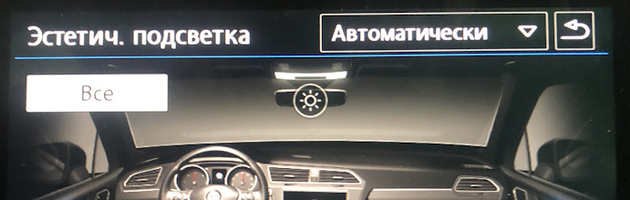
Блок 09 → Адаптация:
> Освещение салона, параметры / Interior_light_parameter
>> p_ambientelicht_verbauinformation_HMI3 → 110
→ Применить
Пример кодирования - активация визуализации подсветки ручек

Блок 09 → Адаптация:
> Освещение салона, параметры / Interior_light_parameter
>> p_ambientelicht_verbauinformation_HMI2 → 100
→ Применить
Установка фонаря на свободный канал¶
Для подключения диодов необходимо найти свободные пины на ВСМ. Это зависит от комплектации.
Затем ищется соответствующий свободный канал, например, владельцы MID LED могут подключить лампу на пин 36,
а затем задать настроить свободный канал в кодировках Leuchte0BLK VLB36 и прописать в нем диод и функцию.
Возможные функции:
| Функция | Описание |
|---|---|
| Ambientelicht 1 | Солнышко над бардочком |
| Ambientelicht 2 | Солнышко над бардочком |
| Ambientelicht 3 | Солнышко двери |
| Ambientelicht 4 | Пусто |
| Ambientelicht 5 | Пусто |
Lasttyp 0 — LED Kleinleistung
Lichtfunktion A 0 - Ambientelicht 1
Dimmwert AB 0 — 99
Активация фонаря¶
Если какое-то "солнышко" после включения не появилось, то необходимо активировать сам фонарь.
Например, активация фонаря подсветки ног:
Блок 09 → Адаптация:
> Освещение салона, конфигурация фонарей / Interior_light_lamp_configuration
>> Fussraumbeleuchtung → installed
Установка яркости подсветки¶
За значения яркости конкретного фонаря в 9 блоке отвечают следующие параметры:
Блок 09 → Адаптация:
> Освещение салона, параметры / Interior_light_parameter
p_adaption_kundenwunsch_
p_helligkeit_entriegelt_
p_helligkeit_max_
p_helligkeit_HD_auf_zuendung_ein_
p_helligkeit_HD_auf_zuendung_aus_
p_helligkeit_dieseTuer_auf_zuendung_ein_
p_helligkeit_andereTuer_auf_zuendung_ein_
p_helligkeit_Fzg_geschlossen_zuendung_ein_
p_helligkeit_dieseTuer_auf_zuendung_aus_
p_helligkeit_andereTuer_auf_zuendung_aus_
p_helligkeit_einausstieg_
p_helligkeit_Fzg_geschlossen_zuendung_aus_
p_helligkeit_Tueren_geschlossen_HD_auf_zuendung_aus_
p_helligkeit_Tueren_geschlossen_HD_zu_zuendung_aus_
p_helligkeit_Tueren_geschlossen_schluessel_ab_
p_helligkeit_Fzg_geschlossen_schluessel_ab_
Все значения можно к примеру взять из уже имеющегося канала, например, подсветка ног: fussraum
Яркость плафонов по умолчанию
Блок 09 → Адаптация:
> Освещение салона 2-го поколения / Interior_light_2nd_generation
>> Defaultwert Ambienteprofil Mittelkonsole → 80
>> Defaultwert Ambienteprofil Dach → 80
>> Defaultwert Ambienteprofil Farbe → 80
>> Defaultwert Ambienteprofil Fussraum → 80
>> Defaultwert Ambienteprofil Tuer → 80
Регулировка яркости
Блок 09 → Адаптация:
> Освещение салона 2-го поколения / Interior_light_2nd_generation
>> Helligkeit Mittelkonsolenbeleuchtung nicht berechnen — не акт. (запрет на регулировку)
>> Farbausgabe Mittelkonsolenbeleuchtung nicht berechnen — акт. (регулировка яркости)
Задержка включения внутреннего освещения¶
Кодировки в 9 блоке позволяют реализовать возможность последовательного включения света в салоне.
За это отвечают следующие параметры:
Блок 09 → Адаптация:
> Освещение салона, параметры / Interior_light_parameter
>> p_t verzoegerung einstieg innenlicht — задержка включения внутреннего освещения при входе, зажигание выключено
>> p_t verzoegerung ausstieg innenlicht — задержка включения внутреннего освещения при выходе, зажигание выключено
>> p_t verzoegerung oeffnen innenlicht — задержка включения внутреннего освещения при открытии двери, зажигание включено
>> p_t verzoegerung entriegelt innenlicht — задержка включения внутреннего освещение при разблокировки центрального замка
>> p_t verzoegerung schliessen innenlicht — задержка выключения внутреннего освещения при закрытии двери, зажигание включено
>> p_t verzoegerung schluessel ab innenlicht — задержка выключения внутреннего освещения при включении зажигания
>> p_t verzoegerung verriegelt innenlicht — задержка выключения внутреннего освещения при блокировки центрального замка
Всего по 7 функций на каждый фонарь. Все остальные фонари аналогичны внутреннему освещению (плафону потолка).
Например,
Включение для ламп двери ставим 0.8с, внутреннего освещения ставим 1.6с.
Подсветка ног остается так же и загорается первой, потом двери потом потолок.
Блок 09 → Адаптация:
> Освещение салона, параметры / Interior_light_parameter
>> p_t_verzoegerung_einstieg_fussraum: 0,0 s
>> p_t_verzoegerung_einstieg_tueren: 0.8 s
>> p_t_verzoegerung_einstieg_innenlicht: 1,6 s
→ Применить
Выключения для дверей ставим так же 0.8с, для ног ставим 1.6с.
Свет с внутреннего освещения тухнет первым. Потом двери и потом только ноги.
Блок 09 → Адаптация:
> Освещение салона, параметры / Interior_light_parameter
>> p_t_verzoegerung_ausstieg_fussraum: 1,6 s
>> p_t_verzoegerung_ausstieg_tueren: 0.8 s
>> p_t_verzoegerung_ausstieg_innenlicht: 0,0 s
→ Применить
Установка и настройка RGB подсветки¶
Данный материал является копией ресурса: https://www.drive2.ru/l/553166225153198981/
Что включает в себя RGB подсветка
- Меняющая цвет подсветка декора в дверях
- Меняющая цвет подсветка ног
- Меняющая цвет подсветка ниши центральной консоли
- Монохромная фоновая подсветка плафона освещения салона
- Регулировка цвета и яркости через штатное меню в ГУ
- Привязка цветовых профилей к профилям движения
- Привязка цветов к водителю (или ключу)
- Подсветка карманов дверей (номера плафонов 8W0919390A, B, C, D)
Файлы и ссылки на инструкции¶
Требования предъявляются к комплектации автомобиля:¶
-
Блок бортовой сети BCM версии High 5Q0937084CG/CQ/DD/DH.
Версия High устанавливалась в России только на автомобили с подсветкой панорамной крыши или на Scoda Octavia со штатной цветной подсветкой.
На любых других комплектациях авто НЕОБХОДИМА замена ВСМ. Версии 5Q0937084CF/CP/DC многоцветную подсветку не поддерживают.
Также полностью весь пакет нельзя внедрить на любом ВСМ 5Q0937086 Passat B8, Kodiaq, на этом BCM не будет работать многоцветная подсветка ног. -
Монохромная подсветка дверных карт, если ее нет, необходима замена декора дверей (устанавливать дверные блоки в задние двери необязательно)

-
Для реализации функций привязки цветов к профилю движения важно убедиться, что гейтвей (J533 или 19 блок), имеет версию софта не ниже 4344 или 5344 и имеет индекс Q и выше, в противном случае, ищем тех кто умеет прошивать и заливать параметрию
Теория¶
- Все цветные диоды в машине управляются шиной LIN, поэтому проводов на диод идет 3 +, -, Lin-шина
- LIN RGB в ВСМ – пин 29 в разъеме С
- Потолочные плафоны атмосферной подсветки аналогично управляются по LIN
- LIN потолочных плафонов в ВСМ – пин 15 в разъеме А
- Существует несколько каналов атмосферной подсветки, которые мы можем регулировать с ГУ: двери, ноги, передняя панель, центральная консоль, потолочный плафон, подсветка панорамы.
На каждой из машин на платформе MQB есть свои особенности и регулировка некоторых каналов может отсутствовать:
- Tiguan умеет все
- Гольф не умеет отображать и регулировать потолочный плафон
- Октавия не умеет отображать и регулировать центральную консоль

Схема¶

J519 – BCM
L2** — диоды
SC8 – предохранитель
Инструмент¶
- Набор лопаток для разбора салона
- Дрель со сверлом по металлу на 4,5-5 мм
- Dremel или что-то для выпиливания отверстия в нише центральной консоли
- Обжимку для пинов
- Острый нож для подготовки диодов к установке
Запчасти¶
Запчасти для проводки, необходимой для установки RGB диодов в двери, ноги центральную консоль:
 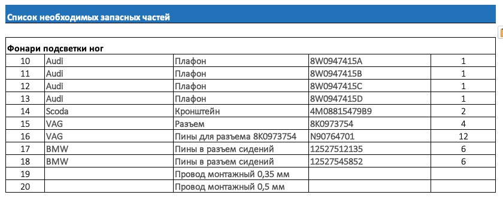
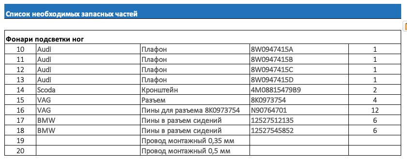


Дальше по-желанию, можно обойтись и без этого. Элементы нужны для того, чтобы сделать «разрыв» проводки между дверью и обшивкой (на передних дверях) и обусловлено логикой укладки проводки в них — часть проводки идет по обшивке, часть по двери и имея разъем проще все разбирать при необходимости.

Потолочный плафон
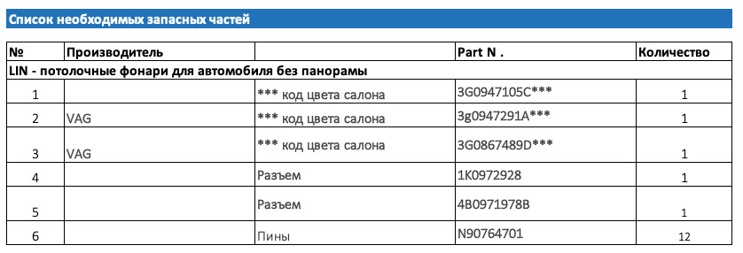
По верхним плафонам для машин с панорамой:
Передний плафон — 3G0947105E
Задний 1 — 3G9947292A
Задний 2 — 3G9947291A
Прокладка всей необходимой проводки¶
- Если комплектацией вашего авто не предусмотрено наличие в блоке предохранителей 8 предохранителя (SC8), то его необходимо установить, все питание RGB подсветки запитано на этот предохранитель.
- Cнимаем клемму с аккумулятора.
- Снимаем обшивки с дверей, внутренние пороги в салоне, нижние части стоек дверей в салоне, снимаем передние сидения для удобства.
Двери¶
- Отсверливаем динамики (высверливаем клепки), размыкаем дверные разъемы и демонтируем дверные жгуты проводки. ВНИМАНИЕ – когда разматываем штатную изоленту замечаем все заводские размеры установки уплотнителей, длину намотки изоленты и тд. Если потом при сборке ошибетесь, есть шанс ближайшей зимой начать ремонтировать проводку в гибкой части соединения.
- В дверные жгуты проводки вплетаем 3 провода: 2 сечением 0,35 мм, 1 сечением 0,5 мм.
- Со стороны дверного разъема пинуем провода соответствующими пинами (12527545852 для разъемов в дверях).
- Дотягиваем провода до места установки диодов на обшивках, предусмотрев на передних дверях разрыв проводки между дверью и обшивкой (необходимый набор деталей написал выше).
- Пинуем новый разъем диода пинами N90764701: Распиновка разъемов диодов и сечение проводов: 1 — плюс 0,5 мм, 2 – LIN 0,35 мм, 4 — масса 0,35 мм.
- Предварительно все прозвонив и проверив на качество обжатия устанавливаем все на места, заклепываем динамики.
- Запиновываем 3 провода в разъемы расположенные на стойках дверей, провод LIN-шины тянем к ВСМ, питание «плюс» к установленному ранее предохранителю, массу обжимаем кольцом и крепим на ближайший болт массы, пины 12527512135.
- Пока салон не собираем, переходим к проводке RGB подсветки ног.

Сидения¶
- Размыкаем красный разъем сидения, разъем подушек безопасности и разбираем разъем со стороны сидения.
- Прокладываем по штатной проводке три провода 2 сечением 0,35 мм, 1 сечением 0,5 мм от разъема сидения к месту установки диода.
- Запиновываем разъем диода пинами N90764701: Распиновка разъемов диодов и сечение проводов: 1 — плюс 0,5 мм, 2 – LIN 0,35 мм, 4 — масса 0,35 мм.
- Запиновываем второй конец проводов пинами приобретенными для разъема сидения.
- Снимаем с фиксатора ответную часть разъема сидения и запиновываем в нее 3 провода соответствующими пинами — 2 сечением 0,35 мм, 1 сечением 0,5 мм, провод “плюс” тянем к ранее установленному предохранителю, LIN – к ВСМ, массу обжимаем колечком и накручиваем на ближайший болт массы.
- Устанавливаем кронштейны 4M08815479B9 к пружинам под сидениями и в них фонари подсветки ног.
- Собираем все в обратном порядке.

Консоль¶
- Снимаем накладку климата.
- Снимаем климат.
- Снимаем боковину тоннеля.
- Жгутуем провода 2 шт сечением 0,35 мм, 1 сечением 0,5 мм.
- Запиновываем разъем диода.
- Протягиваем провода “плюс” к установленному предохранителю, LIN – к ВСМ, массу обжимаем кольцом и крепим к ближайшему болту массы или берем болт с гайкой и прикручиваем к железному усилителю консоли, масса на нем хорошая.
- Переходим к подключению всего этого дела в ВСМ.

Передние фонари подсветки ног¶
- Жгутуем провода 2 шт сечением 0,35 мм, 1 сечением 0,5 мм.
- Запиновываем разъем диода.
- Протягиваем провода “плюс” к установленному предохранителю, LIN – к ВСМ, массу обжимаем кольцом и крепим к ближайшему болту массы.
- Если с завода отсутствуют штатные крепления фонарей, то покупаем их и устанавливаем на место.
- Устанавливаем плафон ног водителя в штатное место над педалью газа, подключаем разъем.
- Устанавливаем плафон ног пассажира в штатное место над правой ногой пассажира.
Подключение LIN шины в ВСМ¶
- Снимаем разъем С с ВСМ (ближний к нам разъем), отгибая белую скобу, одновременно нажимая блокиратор, возможно придется попотеть, место неудобное.
- Разрезаем стяжку которая держит наружный корпус.
- Отжимаем усики и вынимаем 2 внутренние части разъема.
- Находим гнездо по 29 пин.
- Обжимаем провод необходимой длины пином N90764701.
- Вставляем обжатый провод в гнездо 29 пина.
- Удобно жгутуем провод и соединяем его со всеми ранее протянутыми LIN-проводами (4 от дверей, 4 от сидения, 1 от консоли) по принципу «звезды», у VAG существуют специальные коннекторы для этого, но я так сильно не морочился и скрутил все и обжал гильзой.
- Изолируем все и укладываем.
- Собираем все в обратном порядке, тут и понадобится кабельная стяжка.
- LIN протянут.

Подключение к предохранителю¶
Аналогично предыдущему подключению LIN собираем все провода “плюс” в кучу и подключаем к проводу, запитанному от предохранителя, который ранее установили.
Установка диодов в двери¶
- Механически дорабатываем диоды по образцу штатного монохромного, форма и размер посадочных мест диода пассата и тигуана не совпадают, передние и задние диоды имеют разные замки, при установке диодов на место нужно это учесть.
- Устанавливаем их на штатные места в полоску подсветки.
- Фиксируем шлейфы так, чтобы при установке обшивки они не повредились.
- Собираем обшивки дверей на место.
Установка диода в консоль¶
- Лучше всего снимаем консоль полностью по инструкции из ELSA
- Пилим дремелем окошко под световод
- Изготавливаем световод
- Вставляем световод в консоль, фиксируем
- Надеваем на световод диод и подключаем разъем
- Проводка для потолочного плафона с атмосферной подсветкой
Установка атмосферных плафонов в потолок¶
- Поддеваем лопаткой стеклянную часть и отсоединяем ее от разъемов.
- Вставляем лопатку в пазы на самом плафоне и вынимаем часть с лампочкой.
- Поддеваем лопаткой и снимаем накладку кнопок Глонасс.
- Откручиваем 4 самореза Torx по периметру.
- Снимаем переднюю накладку плафона вместе с накладкой-колокольчиком к зеркалу.
- Отсоединяем разъемы и снимаем раму.
- Перепиновываем разъемы (используя пины N90764701):

Кодирование¶
Блок 09 → Адаптация:
> Interior_light_lamp_configuration
>> Ambiente_Applikationsleisten_in_Tuertafel → установл. (полоски в двери)
>> Ambiente_Lautsprecher → не установл.
>> Ambiente_Applikationsleisten_in_Instrumententafel → не установл.
>> Cockpitbeleuchtung → не установл.
>> Mittelkonsolenbeleuchtung → установл. (фонарик в центральной консоли)
>> Dachbeleuchtung → установл. (потолочный плафон Ambient+)
>> Panoramaschiebedachbeleuchtung → не установл.
>> Fussraumbeleuchtung → установл. (подсветка ног)
>> LIN-Dachkonsole lokal aktivierbar → акт. (авктивирует управление потолочным плафоном по LIN)
>> Ambientemenue mit globalem aus → акт. (Общая регулировка атмосферной подсветки)
>> Ambientemenue mit alle Zonen → акт. (Регулировка зон по отдельности)
>> Ambient_Farbliste_HMI → акт. (активация показа шкалы выбора цвета)
>> Ambience_light_colorlist_default → 1
→ Применить
Блок 09 → Адаптация:
> Interior_light_2nd_generation
>> Aufloesung Dimmzeit → 0.8
>> weicher Farbwechsel → акт.
>> Tuertafelbeleuchtung mehrfarbig → акт. (полоска в дверях цветная)
>> Instrumententafelbeleuchtung mehrfarbig → не акт.
>> Cockpitbeleuchtung mehrfarbig → не акт.
>> Lautsprecherbeleuchtung mehrfarbig → не акт.
>> Mittelkonsolenbeleuchtung mehrfarbig → акт. (диод в центральной консоли цветной)
>> Dachbeleuchtung mehrfarbig → не акт. (фонарь в потолке одноцветный)
>> Panoramaschiebedachbeleuchtung mehrfarbig → не акт.
>> Panoramaschiebedachbeleuchtung bei geoeffnetem Rollo deaktivieren → не акт.
>> BAP Farbwert Farbe 1 → 1
>> BAP Farbwert Farbe 2 → 4
>> BAP Farbwert Farbe 3 → 5
>> Defaultwert Ambienteprofil Mittelkonsole → 80 (яркость плафонов по умолчанию)
>> Defaultwert Ambienteprofil Dach → 80 (яркость плафонов по умолчанию)
>> Defaultwert Ambienteprofil Farbe → 8
>> Defaultwert Ambienteprofil Fussraum → 80 (яркость плафонов по умолчанию)
>> Defaultwert Ambienteprofil Tuer → 80 (яркость плафонов по умолчанию)
>> Ambiente_Farbliste_HMI_mit_Farbtransformation → акт. (включает раздельное назначение цветов на экране и на диодах для подбора соответствия экранного цвета цвету, который в состоянии отобразить диод)
>> Helligkeit_Tuertafelbeleuchtung_nicht_berechnen → не акт. (выключаем запрет на регулировку)
>> Helligkeit Instrumententafelbeleuchtung nicht berechnen → акт.
>> Helligkeit Cockpitbeleuchtung nicht berechnen → акт.
>> Helligkeit Lautsprecherbeleuchtung nicht berechnen → акт.
>> Helligkeit Mittelkonsolenbeleuchtung nicht berechnen → не акт. (выключаем запрет на регулировку)
>> Helligkeit Dachbeleuchtung nicht berechnen → не акт. (выключаем запрет на регулировку)
>> Helligkeit Panoramaschiebedachbeleuchtung nicht berechnen → акт.
>> Farbausgabe Tuertafelbeleuchtung nicht berechnen → не акт. (выключаем запрет на регулировку)
>> Farbausgabe Instrumententafelbeleuchtung nicht berechnen → акт.
>> Farbausgabe Cockpitbeleuchtung nicht berechnen → акт.
>> Farbausgabe Lautsprecherbeleuchtung nicht berechnen → акт.
>> Farbausgabe Mittelkonsolenbeleuchtung nicht berechnen → не акт.(выключаем запрет на регулировку)
>> Farbausgabe Dachbeleuchtung nicht berechnen → не акт.(выключаем запрет на регулировку)
>> Farbausgabe Panoramaschiebedachbeleuchtung nicht berechnen → акт.
>> LIN-Dachkonsole mit Flaechenlicht → установл. (фоновая подсветка потолочного фонаря)
>> Ambiente_Farbwahl_FPA_waehlbare_Kopplung → акт. (привязка профиля движения)
>> Ambiente_Fahrprofil_Individual → 1
>> Ambiente_Farbwahl_FPA_waehlbare_Kopplung_Status_hmi_default → сопряжены (привязка профиля движения)
→ Применить
Яркость и плавность регулировки каналов
Блок 09 → Адаптация:
> Interior_light_parameter
>> p_adaption_kundenwunsch_tuer → 0.67 (линейность регулировки)
>> p_helligkeit_entriegelt_tueren → 100
>> p_helligkeit_max_tueren → 100
>> p_helligkeit_HD_auf_zuendung_ein_tueren → 126
>> p_helligkeit_HD_auf_zuendung_aus_tueren → 127
>> p_helligkeit_dieseTuer_auf_zuendung_ein_tueren → 100
>> p_helligkeit_andereTuer_auf_zuendung_ein_tueren → 100
>> p_helligkeit_Fzg_geschlossen_zuendung_ein_tueren → 126
>> p_helligkeit_dieseTuer_auf_zuendung_aus_tueren → 100
>> p_helligkeit_andereTuer_auf_zuendung_aus_tueren → 100
>> p_helligkeit_einausstieg_tueren → 100
>> p_helligkeit_Fzg_geschlossen_zuendung_aus_tueren → 127
>> p_helligkeit_Tueren_geschlossen_HD_auf_zuendung_aus_tueren → 100
>> p_helligkeit_Tueren_geschlossen_HD_zu_zuendung_aus_tueren → 100
>> p_helligkeit_Tueren_geschlossen_schluessel_ab_tueren → 100
>> p_helligkeit_Fzg_geschlossen_schluessel_ab_tueren → 100
>> p_adaption_kundenwunsch_fussraum → 0.67
>> p_helligkeit_entriegelt_fussraum → 100
>> p_helligkeit_max_fussraum → 100
>> p_helligkeit_HD_auf_zuendung_ein_fussraum → 126
>> p_helligkeit_HD_auf_zuendung_aus_fussraum → 127
>> p_helligkeit_dieseTuer_auf_zuendung_ein_fussraum → 100
>> p_helligkeit_andereTuer_auf_zuendung_ein_fussraum → 100
>> p_helligkeit_Fzg_geschlossen_zuendung_ein_fussraum → 126
>> p_helligkeit_dieseTuer_auf_zuendung_aus_fussraum → 100
>> p_helligkeit_andereTuer_auf_zuendung_aus_fussraum → 100
>> p_helligkeit_einausstieg_fussraum → 100
>> p_helligkeit_Fzg_geschlossen_zuendung_aus_fussraum → 127
>> p_helligkeit_Tueren_geschlossen_HD_auf_zuendung_aus_fussraum → 100
>> p_helligkeit_Tueren_geschlossen_HD_zu_zuendung_aus_fussraum → 100
>> p_helligkeit_Tueren_geschlossen_schluessel_ab_fussraum → 100
>> p_helligkeit_Fzg_geschlossen_schluessel_ab_fussraum → 100
>> p_adaption_kundenwunsch_miko → 0.67
>> p_helligkeit_entriegelt_miko → 100
>> p_helligkeit_max_miko → 100
>> p_helligkeit_HD_auf_zuendung_ein_miko → 126
>> p_helligkeit_HD_auf_zuendung_aus_miko → 127
>> p_helligkeit_dieseTuer_auf_zuendung_ein_miko → 100
>> p_helligkeit_andereTuer_auf_zuendung_ein_miko → 100
>> p_helligkeit_Fzg_geschlossen_zuendung_ein_miko → 126
>> p_helligkeit_dieseTuer_auf_zuendung_aus_miko → 100
>> p_helligkeit_andereTuer_auf_zuendung_aus_miko → 100
>> p_helligkeit_einausstieg_miko → 100
>> p_helligkeit_Fzg_geschlossen_zuendung_aus_miko → 100
>> p_helligkeit_Tueren_geschlossen_HD_auf_zuendung_aus_miko → 100
>> p_helligkeit_Tueren_geschlossen_HD_zu_zuendung_aus_miko → 100
>> p_helligkeit_Tueren_geschlossen_schluessel_ab_miko → 100
>> p_helligkeit_Fzg_geschlossen_schluessel_ab_miko → 100
>> p_adaption_kundenwunsch_dach → 1
>> p_helligkeit_entriegelt_dach → 100
>> p_helligkeit_max_dach → 100
>> p_helligkeit_HD_auf_zuendung_ein_dach → 100
>> p_helligkeit_HD_auf_zuendung_aus_dach → 100
>> p_helligkeit_dieseTuer_auf_zuendung_ein_dach → 100
>> p_helligkeit_andereTuer_auf_zuendung_ein_dach → 100
>> p_helligkeit_Fzg_geschlossen_zuendung_ein_dach → 126
>> p_helligkeit_dieseTuer_auf_zuendung_aus_dach → 100
>> p_helligkeit_andereTuer_auf_zuendung_aus_dach → 100
>> p_helligkeit_einausstieg_dach → 100
>> p_helligkeit_Fzg_geschlossen_zuendung_aus_dach → 100
>> p_helligkeit_Tueren_geschlossen_HD_auf_zuendung_aus_dach → 100
>> p_helligkeit_Tueren_geschlossen_HD_zu_zuendung_aus_dach → 100
>> p_helligkeit_Tueren_geschlossen_schluessel_ab_dach → 100
>> p_helligkeit_Fzg_geschlossen_schluessel_ab_dach → 100
→ Применить
Отображение солнышек и графики на экране ГУ
Блок 09 → Адаптация:
> Освещение салона, параметры / Interior_light_parameter
>> p_ambienteumfang_mehrfarbig_HMI → 100
>> p_ambienteumfang_mehrfarbig_HMI_2 → 100
>> p_ambienteumfang_mehrfarbig_HMI_3 → 0
>> p_ambienteumfang_mehrfarbig_HMI_4 → 0
→ Применить
Отображение солнышек и монохромной графики на экране ГУ
Блок 09 → Адаптация:
> Освещение салона, параметры / Interior_light_parameter
>> p_ambientelicht_verbauinformation_HMI → 1
>> p_ambientelicht_verbauinformation_HMI_2 → 10001
>> p_ambientelicht_verbauinformation_HMI_3 → 10
>> p_ambientelicht_verbauinformation_HMI_4 → 0
→ Применить
Скорость смены цвета мс
Блок 09 → Адаптация:
> Освещение салона, параметры / Interior_light_parameter
>> p_t_HMI_verzoegerung_helligkeitswerte → 200
→ Применить
Прописывание физических диодов
Блок 09 → Адаптация:
> ambient_lighting_lin_slaves_modules
>> pa_einzeladresse_slave_1 → 1
>> pa_verbauinfo_slave_1 → установл.
>> pa_fehlerort_slave_1 → 0
>> pa_einzeladresse_slave_2 → 2
>> pa_verbauinfo_slave_2 → установл.
>> pa_fehlerort_slave_2 → 0
>> pa_einzeladresse_slave_3 → 3
>> pa_verbauinfo_slave_3 → установл.
>> pa_fehlerort_slave_3 → 0
>> pa_einzeladresse_slave_4 → 4
>> pa_verbauinfo_slave_4 → установл.
>> pa_fehlerort_slave_4 → 0
>> pa_einzeladresse_slave_5 → 0
>> pa_verbauinfo_slave_5 → не установл.
>> pa_fehlerort_slave_5 → 0
>> pa_einzeladresse_slave_6 → 0
>> pa_verbauinfo_slave_6 → установл.
>> pa_fehlerort_slave_6 → 0
>> pa_einzeladresse_slave_7 → 0
>> pa_verbauinfo_slave_7 → не установл.
>> pa_fehlerort_slave_7 → 0
>> pa_einzeladresse_slave_8 → 0
>> pa_verbauinfo_slave8 → не установл.
>> pa_fehlerort_slave8 → 0
>> pa_einzeladresse_slave_9 → 0
>> pa_verbauinfo_slave_9 → не установл.
>> pa_fehlerort_slave_9 → 0
>> pa_einzeladresse_slave_10 → 0
>> pa_verbauinfo_slave_10 → не установл.
>> pa_fehlerort_slave_10 → 0
>> pa_einzeladresse_slave_11 → 0
>> pa_verbauinfo_slave_11 → не установл.
>> pa_fehlerort_slave_11 → 0
>> pa_einzeladresse_slave_:12 → 0
>> pa_verbauinfo_slave_12 → не установл.
>> pa_fehlerort_slave_12 → 0
>> pa_einzeladresse_slave_13 → 0
>> pa_verbauinfo_slave_13 → не установл.
>> pa_fehlerort_slave_13 → 0
>> pa_einzeladresse_slave_14 → 0
>> pa_verbauinfo_slave_14 → не установл.
>> pa_fehlerort_slave_14 → 0
>> pa_einzeladresse_slave_15 → 0
>> pa_verbauinfo_slave_15 → не установл.
>> pa_fehlerort_slave_15 → 0
>> pa_einzeladresse_slave_16 → 0
>> pa_verbauinfo_slave_16 → не установл.
>> pa_fehlerort_slave_16 → 0
>> pa_einzeladresse_slave_17 → 0
>> pa_verbauinfo_slave_17 → не установл.
>> pa_fehlerort_slave_17 → 0
>> pa_einzeladresse_slave_18 → 0
>> pa_verbauinfo_slave_18 → не установл.
>> pa_fehlerort_slave_18 → 0
>> pa_einzeladresse_slave_19 → 0
>> pa_verbauinfo_slave_19 → не установл.
>> pa_fehlerort_slave_19 → 0
>> pa_einzeladresse_slave_20 → 0
>> pa_verbauinfo_slave_20 → не установл.
>> pa_fehlerort_slave_20 → 0
→ Применить
Прописывание групп регулировки диодов и их назначение
Блок 09 → Адаптация:
> ambient_lighting_lin_slaves_groups
>> pa_verbauinfo_gruppe_1 → многоцветный
>> pa_lichtfunktion_gruppe_1 → Дверь
>> pa_korrekturfaktor_gruppe_1 → 1
>> pa_verbauinfo_gruppe_2 → многоцветный
>> pa_lichtfunktion_gruppe_2 → Центральная консоль
>> pa_korrekturfaktor_gruppe_2 → 1.2
>> pa_verbauinfo_gruppe_3 → не установл.
>> pa_lichtfunktion_gruppe_3 → Дверь
>> pa_korrekturfaktor_gruppe_3 → 1
>> pa_verbauinfo_gruppe_4 → не установл.
>> pa_lichtfunktion_gruppe_4 → Дверь
>> pa_korrekturfaktor_gruppe_4 → 1
>> pa_verbauinfo_gruppe_5 → не установл.
>> pa_lichtfunktion_gruppe_5 → Дверь
>> pa_korrekturfaktor_gruppe_5 → 1
>> pa_verbauinfo_gruppe_6 → не установл.
>> pa_lichtfunktion_gruppe_6 → Дверь
>> pa_korrekturfaktor_gruppe_6 → 1
>> pa_verbauinfo_gruppe_7 → не установл.
>> pa_lichtfunktion_gruppe_7 → Дверь
>> pa_korrekturfaktor_gruppe_7 → 1
>> pa_verbauinfo_gruppe_8 → не установл.
>> pa_lichtfunktion_gruppe_8 → Дверь
>> pa_korrekturfaktor_gruppe_8 → 1
>> pa_verbauinfo_gruppe_9 → не установл.
>> pa_lichtfunktion_gruppe_9 → Дверь
>> pa_korrekturfaktor_gruppe_9 → 1
>> pa_verbauinfo_gruppe_10 → не установл.
>> pa_lichtfunktion_gruppe_10 → Дверь
>> pa_korrekturfaktor_gruppe_10 → 1
>> pa_verbauinfo_gruppe_11 → одноцветный
>> pa_lichtfunktion_gruppe_11 → Пространство для ног
>> pa_korrekturfaktor_gruppe_11 → 1.2
>> pa_verbauinfo_gruppe_12 → не установл.
>> pa_lichtfunktion_gruppe_12 → Дверь
>> pa_korrekturfaktor_gruppe_12 → 1
>> pa_verbauinfo_gruppe_13 → не установл.
>> pa_lichtfunktion_gruppe_13 → Дверь
>> pa_korrekturfaktor_gruppe_13 → 1
>> pa_verbauinfo_gruppe_14 → 3_not_defined
>> pa_lichtfunktion_gruppe_14 → Пространство для ног
>> pa_korrekturfaktor_gruppe_14 → 1.2
>> pa_verbauinfo_gruppe_15 → не установл.
>> pa_lichtfunktion_gruppe_15 → Дверь
>> pa_korrekturfaktor_gruppe_15 → 1
→ Применить
Список базовых цветов
Блок 09 → Адаптация:
> Ambience_lightning_color_list
>> Rotwert Farbe 1 → 217
>> Gruenwert Farbe 1 → 221
>> Blauwert Farbe 1 → 235
>> Rotwert Farbe 2 → 255
>> Gruenwert Farbe 2 → 172
>> Blauwert Farbe 2 → 5
>> Rotwert Farbe 3 → 253
>> Gruenwert Farbe 3 → 108
>> Blauwert Farbe 3 → 55
>> Rotwert Farbe 4 → 222
>> Gruenwert Farbe 4 → 70
>> Blauwert Farbe 4 → 20
>> Rotwert Farbe 5 → 252
>> Gruenwert Farbe 5 → 116
>> Blauwert Farbe 5 → 240
>> Rotwert Farbe 6 → 132
>> Gruenwert Farbe 6 → 76
>> Blauwert Farbe 6 → 222
>> Rotwert Farbe 7 → 0
>> Gruenwert Farbe 7 → 102
>> Blauwert Farbe 7 → 225
>> Rotwert Farbe 8 → 1
>> Gruenwert Farbe 8 → 192
>> Blauwert Farbe 8 → 255
>> Rotwert Farbe 9 → 0
>> Gruenwert Farbe 9 → 204
>> Blauwert Farbe 9 → 0
>> Rotwert Farbe 10 → 182
>> Gruenwert Farbe 10 → 255
>> Blauwert Farbe 10 → 57
→ Применить
Вторая группа настраиваемых цветов
Блок 09 → Адаптация:
> Ambience_lightning_color_list_2
>> Rotwert Farbe 11 → 255
>> Gruenwert Farbe 11 → 255
>> Blauwert Farbe 11 → 0
>> Rotwert Farbe 12 → 5
>> Gruenwert Farbe 12 → 102
>> Blauwert Farbe 12 → 192
>> Rotwert Farbe 13 → 222
>> Gruenwert Farbe 13 → 70
>> Blauwert Farbe 13 → 21
>> Rotwert Farbe 14 → 1
>> Gruenwert Farbe 14 → 204
>> Blauwert Farbe 14 → 0
>> Rotwert Farbe 15 → 80
>> Gruenwert Farbe 15 → 80
>> Blauwert Farbe 15 → 80
→ Применить
Цвета для диодов
Блок 09 → Адаптация:
> Ambience_lightning_color_list_lin
>> Rotwert_Farbe_1_lin → 120
>> Gruenwert_Farbe_1_lin → 231
>> Blauwert_Farbe_1_lin → 71
>> Rotwert_Farbe_2_lin → 255
>> Gruenwert_Farbe_2_lin → 200
>> Blauwert_Farbe_2_lin → 0
>> Rotwert_Farbe_3_lin → 245
>> Gruenwert_Farbe_3_lin → 73
>> Blauwert_Farbe_3_lin → 6
>> Rotwert_Farbe_4_lin → 255
>> Gruenwert_Farbe_4_lin → 9
>> Blauwert_Farbe_4_lin → 2
>> Rotwert_Farbe_5_lin → 255
>> Gruenwert_Farbe_5_lin → 134
>> Blauwert_Farbe_5_lin → 106
>> Rotwert_Farbe_6_lin → 106
>> Gruenwert_Farbe_6_lin → 140
>> Blauwert_Farbe_6_lin → 162
>> Rotwert_Farbe_7_lin → 0
>> Gruenwert_Farbe_7_lin → 110
>> Blauwert_Farbe_7_lin → 254
>> Rotwert_Farbe_8_lin → 29
>> Gruenwert_Farbe_8_lin → 255
>> Blauwert_Farbe_8_lin → 153
>> Rotwert_Farbe_9_lin → 0
>> Gruenwert_Farbe_9_lin → 255
>> Blauwert_Farbe_9_lin → 4
>> Rotwert_Farbe_10_lin → 57
>> Gruenwert_Farbe_10_lin → 132
>> Blauwert_Farbe_10_lin → 0
→ Применить
Вторая часть цветов для диодов
Блок 09 → Адаптация:
> Ambience_lightning_color_list_lin_2
>> Rotwert_Farbe_11_lin → 255
>> Gruenwert_Farbe_11_lin → 255
>> Blauwert_Farbe_11_lin → 0
>> Rotwert_Farbe_12_lin → 120
>> Gruenwert_Farbe_12_lin → 231
>> Blauwert_Farbe_12_lin → 71
>> Rotwert_Farbe_13_lin → 120
>> Gruenwert_Farbe_13_lin → 230
>> Blauwert_Farbe_13_lin → 80
>> Rotwert_Farbe_14_lin → 121
>> Gruenwert_Farbe_14_lin → 231
>> Blauwert_Farbe_14_lin → 71
>> Rotwert_Farbe_15_lin → 130
>> Gruenwert_Farbe_15_lin → 241
>> Blauwert_Farbe_15_lin → 80
→ Применить
Профили движения и номера цветов
Блок 09 → Адаптация:
> Ambientelicht Zuordnung der Farbe zum Fahrprofil
>> pFahrprofil_0 → 1 профиль при заглушенной машине
>> pFahrprofil_1 → 1
>> pFahrprofil_2 → 7 обычный
>> pFahrprofil_3 → 4 спорт
>> pFahrprofil_4 → 6 бездорожье
>> pFahrprofil_5 → 9 эко
>> pFahrprofil_6 → 8
>> pFahrprofil_7 → 5 индивидуальный
>> pFahrprofil_8 → 1
>> pFahrprofil_9 → 1
>> pFahrprofil_10 → 8 снег
>> pFahrprofil_11 → 1
>> pFahrprofil_12 → 1
>> pFahrprofil_13 → 1
>> pFahrprofil_14 → 1
>> pFahrprofil_15 → 1
→ Применить
Блок 19 → Кодирование:
> FPA_Funktion_AMB: Активировать
→ Применить (с перезагрузкой блока)
Увеличиваем скорость переключения профилей
Блок 19 → Адаптация:
> Driving Profile Selection Parameter
>> Driving Profile Selection Toogle Time Adaptation → вместо 2000 мс ставим 0
→ Применить
Кодировки для подсветки карманов дверей
Блок 09 → Адаптация:
> ambient_lighting_lin_slaves_groups
>> pa_verbauinfo_gruppe_7 → Multi_color
>> pa_lichtfunktion_gruppe_7 → door
>> pa_korrekturfaktor_gruppe_7 → 1.00
>> pa_verbauinfo_gruppe_8 → Multi_color
>> pa_lichtfunktion_gruppe_8 → door
>> pa_korrekturfaktor_gruppe_8 → 1.00
>> pa_verbauinfo_gruppe_9 → Multi_color
>> pa_lichtfunktion_gruppe_9 → door
>> pa_korrekturfaktor_gruppe_9 → 1.00
>> pa_verbauinfo_gruppe_10 → Multi_color
>> pa_lichtfunktion_gruppe_10 → door
→ Применить
Ended: Эстетическая подсветка
Параметры зеркал и стеклоочистителей¶
Работа наружной подсветки в зеркалах при сложенных зеркалах заднего вида¶
Блок 52 → Кодирование:
> Байт 1 – Бит 5 (turn_off_front_light_with_folded_mirror): not_active (было active)
Блок 42 → Кодирование:
> Байт 1 – Бит 5 (turn_off_front_light_with_folded_mirror): not_active (было active)
Опускание правого зеркала при движении задним ходом (если не активировано с завода)¶
Работает только при повороте джойстика настройки зеркал в положение R
Уровень, до которого зеркало опускается, можно настроить под себя:
1) Открываем автомобиль
2) Включаем электромеханический стояночный тормоз
3) Включаем зажигание
4) В коробке передач включаем нейтраль
5) Теперь включаем передачу заднего хода
6) Регулируем зеркало со стороны пассажира как нам удобно
7) Положение зеркала запоминается для ключа, которым мы открыли
Блок 52 → Кодирование:
> Байт 4 – Бит 2 и 3 (mirror_lowering_with_rear_gear): Активировать
Блок 9 → Адаптация:
> Spiegelverstellung (Access control для OBD11)
>> Spiegelabsenkung bei Rueckwaertsfahrt: Активировать
>> Menuesteuerung Spigelabsenkung: Активировать
→ Применить
логин-пароль 31347
Раскладывание зеркал при включении двигателя¶
Зеркала будут раскладываться только при включении зажигания, а не при каждом открытии автомобиля. Меньший износ механизмов
Данная адаптация работает только на VW Tiguan
Блок 9 → Адаптация:
> Spiegelverstellung (Access control для OBD11)
>> Signalisierung_Spiegelanklappung: Не активировано
→ Применить
Блок 09 управления бортовой сети → Безопасный доступ (Логин: 31347) → Кодирование:
> Access control
>> Signalisierung_Spiegelanklappung: Активировать
логин-пароль 31347
Cкладывание боковых зеркал удержанием кнопки закрытия дверей или кнопкой закрытия оригинального брелка¶
Блок 9 → Адаптация:
> Spiegelverstellung - Funk Spiegelanklappung Modus
Старое значение: by look command via remote control key
Новое значение: by convenience operation via remote control key
→ Применить
логин-пароль 31347
Настройка омывателя фар¶
Отключение срабатывания омывателей фар при каждом 10 включении омывателей ветрового стекла
Блок 09 → Адаптация:
> Scheinwerferreinigung - Anzahl Betaetigungen Frontwaschanlage pro SRA Aktivierung
Старое значение: 10
Новое значение: 0
→ Применить
Аналог:
Scheinwerferreinigunglage → неактив
Cрабатывание после долгого удержания рычага омывания стекла
Блок 09 → Адаптация:
> Scheinwerferreinigung - SRA Verzoegerungszeit
Старое значение: 0 мс
Новое значение: 2500 мс
→ Применить
Отключение второго "пшика" на фары (не рекомендуется)
Блок 09 → Адаптация:
> Scheinwerferreinigung - SRA Nachwaschzeit
Старое значение: 10
Новое значение: 0 ms
→ Применить
логин-пароль 31347
Сервисное положение дворников¶
Info
Service position: по умолчанию 166.505329 градусов, меняем в меньшую сторону.
Блок 09 → Адаптация:
> Service position → вводим нужное значение
→ Применить
> Alternative position 2 (позиция дворников при выключенном зажигании)
→ Применить
Сервисное положение дворников — меню в магнитоле¶
Skoda · Автомобили с MIB3
Блок 09 → Адаптация:
> Front wiper
> Menuesteuerung Frontwischer — active
→ Применить
логин-пароль 31347
Отключение задержки включения насоса омывателя (щетки не будут елозить по сухому стеклу)¶
Блок 09 → Адаптация:
> Front wiper
>> Mindestwaschzeit_Frontwischer: 0 ms → 300 ms
>> Timer_DWP_SRA_delay: 300 ms → 0 ms
логин-пароль 31347
Дотирка капель – Лобовое стекло¶
В холодное время года функция не работает (от 5,5 С)
Блок 09 → Адаптация:
> Front_wiper
> Traenenwischen Front Status: Активировать
→ Применить
логин-пароль 31347
Работа заднего дворника во время дождя¶
Блок 09 → Адаптация:
> Задний стеклоочиститель (Rear Wiper / Heckwischersteuerung)
> Automatisches Heckwischen: Активировать
→ Применить
логин-пароль 31347
Безопасность¶
Центральный замок¶
Параметрии для крышки багажника с электроприводом¶
| Автомобиль | Параметрия (ODIS XML) |
Примечания |
|---|---|---|
| VW Tiguan | (Скачать) | Для прошивки 5Q0959107M |
| Skoda SuperB | (Скачать) |
Активация функций охранной системы для а/м без сигнализации¶
Skoda Karoq
Автомобиль будет сигналить, если закрытую дверь открыть без ключа, например разбив стекло
Блок 09 → Адаптация:
> Anti-theft device
>> Akusticher Alarm Signalhorn: Активировать
>> Diebstahlwarnangle: Активировать
→ Применить
логин-пароль 31347
Активация Easy Open¶
Блок 09 → Адаптация:
> Verdecksteuergeraet
>> Virtuelles_Pedal_HMI_einstellba: Активировать
>> Virtuelles_Pedal_Verbau: Активировать
>> Virtuelles_Pedal: Активировать
→ Применить
логин-пароль 31347
Блок B7 → Адаптация:
> Byte9_VIP →
>> active_vip: Активировать
>> БУ откр. двери багажного отсека, датчик 1, пороговое значение 1
Старое значение: 5
Новое значение: 69
>> БУ откр. двери багажного отсека, датчик 1, значение таймера 3
Старое значение: 0
Новое значение: 9
>> БУ откр. двери багажного отсека, датчик 1, значение таймера 4
Старое значение: 226
Новое значение: 34
> БУ откр. двери багажного отсека, датчик 1, значение таймера 5
Старое значение: 255
Новое значение: 34
> БУ откр. двери багажного отсека, датчик 2, значение таймера 5
Старое значение: 108
Новое значение: 24
> БУ открывания двери багажного отсека, модель автомобиля
Старое значение: fe
Новое значение: 22
логин-пароль 20103
После кодирования необходимо провести Тест исполнителей
Control_supply_voltage_vip
Постановка на охрану при закрытии двери багажника кнопкой Easy Close¶
С этой функцией автомобиль полностью закроется сам при нажатии на кнопку отложенного закрытия багажника.
Автомобиль подаст звуковой сигнал закрытия
Блок B7 → Кодирование:
> byte9_Vip
>> Coding_easy close_locking: Активировать
→ Применить
Блок B7 санкционированного доступа: Активировать
> byte9_Vip - coding easy close locking
Старое значение: не активир.
Новое значение: активир.
логин-пароль 20103
Регулировка чувствительности датчика объема штатной сигнализации¶
Блок 09 → Адаптация:
> Охранная сигнализация, охрана салона/ Interior_Monitoring_Sensitivity
>> Чувствительность / sensitivity → 70% (по умолчанию 100%)
→ Применить
логин-пароль 31347
Открытие и закрытие багажника с кнопки пульта¶
Блок B7 → Адаптация:
> byte9_Vip
>> Сoding_kick and_close_function: Активировать
→ Применить
логин-пароль 20103
Избирательное открытие дверей¶
При первом нажатии на кнопку открытия дверей открывается только водительская дверь.
При повторном (необходимо нажать в течении 5 сек с момента первого нажатия) нажатии откроются все остальные двери.
Блок 09 → Адаптация:
> Central Locking - Selective (Single) Door Locking: Активировать
→ Применить
09-Центральная электроника
Кодирование - 07 → Длинное кодирование:
Байт 0 – Бит 0 (Selective Central Locking (Single Door Locking) active): Активировать
Выход → Сохранить
Брелок работает при включенном зажигании¶
С этой функцией можно завести автомобиль, закрыть его и отойти, сохраняя возможность удаленно открыть его или багажник с ключа.
Блок 09 → Адаптация:
> ZV allgemein (Access control) - Funk bei Klemme 15 ein: Активировать
→ Применить
09 Блок управления бортовой сети → Безопасный доступ (Логин: 31347) → Aдаптация
> ZV allgemein - Funk bei Klemme 15 ein: Активировать
логин-пароль 31347
Ручки Kessy работают при включенном зажигании¶
Блок В7 → Кодирование:
> Terminal 15 characteristics of passive entry exit function
>> Оригинальное значение - Function only allowed for terminal 15 off
>> Новое значение - Function only allowed for terminal 15 on or off
→ Применить
Блок В7
Кодирование - 07 → Длинное кодирование → разрешить ASAM данные:
Байт 0 – Бит 4 (Terminal 15 characteristics of passive entry exit function): Активировать
Выход → Сохранить
Автоматическая постановка на охрану при захлопывании водительской двери¶
Блок В7 → Кодирование:
> Locking for door slamming active: Активировать
→ Применить
Блок В7
Кодирование - 07 → Длинное кодирование → разрешить ASAM данные:
Байт 1 – Бит 4 (Блокировка двери хлопком включена): Активировать
Выход → Сохранить
Звуковое сопровождение при открытии/закрытии центрального замка¶
Блок 9 → Адаптация:
> Ответные сигналы
>> Akustische Rueckmeldung entriegeln (открытие авто): Активировать
>> Akustische Rueckmeldung verriegeln (закрытие авто): Активировать
>> Menuesteuerung akustische Rueckmeldung: Активировать
>> Akustische Rueckmeldung global: Активировать
>> Akustische Rueckmeldung Signalhorn: Активировать
→ Применить
После кодирования необходимо поставить галочку в меню магнитолы
логин-пароль 31347
Открытие и закрытие люка при удерживании кнопок на брелке (закрытие вместе с центральным замком)¶
Блок 9 → Адаптация:
> Schiebedach
>> SAD Komfort schliessen: Активировать
>> SAD Komfort oeffnen: Активировать
→ Применить
Открывание люка целиком
Блок 00CA - Блок управления сдвижного люка → Адаптация:
> Control_unit_for_sun_roof_convenience_functions / Power sunroof control module - convenience function
>> Convenience_opening_target_attitude / Заданное положение при комфортном открывании
Старое значение: Tilting_position
Новое значение: Sliding_position
→ Применить
Блок 00CA - Блок управления сдвижного люка → Адаптация:
> Komfortfunktionen
>> Заданное положение при комфортном открывании
Старое значение: Положение — подъём
Новое значение: Положение сдвиг
→ Применить
Комфортная посадка для водительского места¶
Функция Easy Entry — легкая посадка, сиденье отъезжает после выключения зажигания и открытия двери и подъезжает при включении
Блок 36 - Блок Регулировка сиденья водителя → Кодирование:
> Байт 3 – Бит 1 (Easy_Entry_front): Активировать
> Байт 9 – Бит 6 (Easy_Entry_front_over_MMI): Активировать
→ Применить (с перезагрузкой блока)
Блок 5F → Адаптация:
> Car_Function_Adaptations_Gen2
>> menu_display_seat_configuration: Активировать
>> menu_display_seat_configuration_over_threshold_high: Активировать
→ Применить
> Car_Function_List_BAP_Gen2
>> driver_seat_0x10: Активировать
>> driver_seat_0x10_msg_bus — Шина Комфорт
→ Применить
Комфортная посадка для пассажира¶
Функция Easy Entry — легкая посадка, сиденье отъезжает после выключения зажигания и открытия двери и подъезжает при включении
Блок 36 - Блок Регулировка сиденья водителя → Кодирование:
> Байт 9 – Бит 4 (EasyEntry_Enable_Passenger_over_DriverMMI): Активировать
→ Применить (с перезагрузкой блока)
Блок 6 - Блок Регулировка сиденья пассажира → Кодирование:
> Байт 3 – Бит 1 (Easy_Entry_front): Активировать
> Байт 9 – Бит 6 (Easy_entry_front_over_MMI): Активировать
> Байт 9 – Бит 4 (EasyEntry_Enable_Passenger_over_DriverMMI): Активировать
→ Применить (с перезагрузкой блока)
Блок 5F → Адаптация:
> Car_Function_Adaptations_Gen2
>> menu_display_seat_configuration: Активировать
>> menu_display_seat_configuration_over_threshold_high: Активировать
→ Применить
> Car_Function_List_BAP_Gen2
>> Passenger_Seat_0x20: Активировать
>> Passenger_Seat_0x20_msg_bus — Шина Комфорт
→ Применить
Управление стеклоподъемниками¶
Работа стеклоподъёмников при выключенном зажигании и продолжительности их работы¶
При выключенном зажигании стеклоподъемники продолжают работать, но если открыли / закрыли дверь - стеклоподъемники выключаются
Блок 09 → Адаптация:
> Acces control (ZV Komfort)
> Freigabenachlauf FH bei Tueroeffnen abbrechen
→ меняем Activ на NotActiv
> FH SAD Kl15Aus Freigabezeit
Старое значение: 600 s (10 минут после выключения зажигания)
Новое значение: задать нужное значение в секундах
→ Применить
Блок 09 управления бортовой сети → Безопасный доступ (Логин: 31347) → Кодирование:
> ZV Komfort
>> Freigabenachlauf FH bei Tueroeffnen abbrechen: Активировать
логин-пароль 31347
Освещение ↵
Кодирование светового оборудования¶
За помощь в создании данной инструкции выражаю благодарность Вячеславу
Схема работы каналов освещения¶
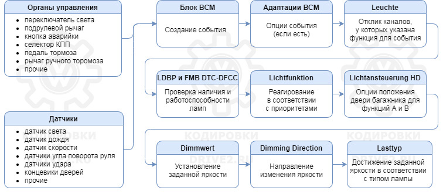
У разных машин (Tiguan, Skoda, Golf, Passat) могут быть разные привязки ламп к каналам.
Список каналов передних фонарей VW Tiguan 2¶
| Названия ламп | BASIS LED | MID LED |
|---|---|---|
| Leuchte0BLK VLB36 / Leuchte1BLK VRB20 | Левый / Правый указатель поворота | |
| Leuchte2SL VLB10 / Leuchte3SL VRB21 | Левый / Правый управление ДХО | |
| Leuchte4TFL LB44 / Leuchte5TFL RB32 | Левый / Правый ДХО | |
| Leuchte6ABL LC5 / Leuchte7ABL RB1 | Левый / Правый ближний свет | Левый / Правый ближний свет |
| Leuchte8FL LB39 / Leuchte9FL RB2 | Левый / Правый дальний свет | Левый / Правый ДХО |
| Leuchte10SHUTTER LB23 / Leuchte11SHUTTER RB22 | Левый / Правый диагностика ближнего света | Питание модуля / Пусто |
| Leuchte12NL LB45 / Leuchte13NL RB5 | Левый / Правый ПТФ | Левый / Правый ПТФ |
Список каналов задних фонарей VW Tiguan 2¶
| Названия ламп | BASIS | HIGH |
|---|---|---|
| Leuchte16BLK SLB35BLK SL KC9 / Leuchte17TFL R BLK SRB3TFL R BLK SR KC3 |
Левый/Правый габаритный огонь | |
| Leuchte18BLK HLA60 / Leuchte19BLK HRC31 | Левый / Правый указатель поворота | Левый/Правый указатель поворота |
| Leuchte20BR LA71 / Leuchte21BR RC8 | Левый / Правый тормозной сигнал на крыльях + габаритный огонь | Левый/Правый тормозной сигнал |
| Leuchte22BR MA57 | Центральный стоп-сигнал | Центральный стоп-сигнал |
| Leuchte23SL HLC10 / Leuchte24SL HRA65 | Левый / Правый габаритный огонь на задней двери | Левый/Правый габаритный огонь на задней двери |
| Leuchte25KZL HA59 | Подсветка номера | Подсветка номера |
| Leuchte26NSL LA72 / Leuchte27NSL RC6 | Левый ПТФ / Пусто | Левый ПТФ/ Cтоп-сигнал на крышке |
| Leuchte28RFL LC11 / Leuchte29RFL RA64 | пусто / Правый задний ход | Левый / Правый задний ход |
Список других ламп¶
Leuchte 35 LED Warnblinktaster C48 - кнопка аварийной сигнализации
Leuchte30FR LC72 - освещение ног в салоне
Расшифровка каналов¶
На примере Leuchte9FL RB2.
Leuchte9FL RB2 - [Leuchte][9][FL] [R][B2]
[Leuchte] - лампа
[9] - номер лампы
[FL] - обозначение функции лампы (часто может не совпадать с реальностью)
[R] - расположение - rechts (справа)/links (слева)
[B2] - Контакт на BCM (разъём В, пин 2)
| Аббревиатура функции лампы | Немецкое название | Русское название |
|---|---|---|
| ABL | Abblendlicht | Ближний свет |
| AMBL | Ambientelicht | Атмосферная подсветка |
| BLK | Blinken | Поворотник |
| BR | Bremslicht | Стоп-сигнал |
| FL | Fernlicht | Дальний свет |
| FR | Fussraumlicht | Подсветка ног |
| HD | Heckdeckel | Крышка багажника |
| KZL | Kennzeichenleuchte | Подсветка номера |
| NL | Nebellicht | ПТФ спереди |
| NSL | Nebelschlusslicht | ПТФ сзади |
| RFL | Rueckfahrlicht | Задний ход |
| SL | Standlicht | Габариты |
| TFL | Tagfahrlicht | ДХО |
Тип ламп¶
У каждой лампы можно указать её тип - Lasttypen
Возможные варианты ламп и их номер
| Номер типа лампы | Описание типа лампы |
|---|---|
| 1 | LED Tagfahrlichtmodul Versorgung |
| 2 | Shutter; Diagnosesensierung für "LED low" |
| 3 | Xenon Abblendlicht |
| 4 | LED Tagfahrlichtmodul Signal |
| 5 | LED Abblendlicht |
| 6 | LED Lichtmodul |
| 7 | Reserved_07 |
| 8 | allgemeine Glühlampe 12W |
| 9 | allgemeine Glühlampe 27W; auch H15 |
| 10 | allgemeine Scheinwerfer |
| 11 | Abblendlicht |
| 12 | Blinkleuchten |
| 13 | Bremsleuchten |
| 14 | kombinierte Blink- Bremsleuchten |
| 15 | allgemeine Glühlampe 6W; auch H6W |
| 16 | 2* 3W |
| 17 | 4* 3W |
| 18 | 2* 5W |
| 19 | 3* 5W |
| 20 | 4* 5W |
| 21 | 2* 13W Blinker |
| 22 | 2* 16W Blinker |
| 23 | allgemeine Scheinwerfer |
| 24 | 2* 5W KZL + LED Sidemarker |
| 25 | allgemeine Glühlampe innen- oder Außenlicht |
| 32 | allgemeine LED bis 12W |
| 33 | LED-Modul Blinkleuchten |
| 34 | LED Bremsleuchten |
| 35 | kombinierte LED Blink-Bremsleuchten |
| 36 | LED Kleinleistung |
| 37 | allgemeine LED bis 12W |
| 38 | LED Blinkleuchten |
| 39 | LED Bremsleuchten |
| 40 | allgemeine LED |
| 41 | LED Kleinleistung |
| 42 | LED dritte Bremsleuchte |
| 43 | allgemeine LED |
| 44 | LED Fußraum- oder -Innenleuchte |
| 45 | allgemeine LED bis 6W |
| 46 | LED Kleinleistung |
¶
Lampendefektbitposition и Fehlerort mittleres Byte DTC-DFCC — два поля с указанием битов, используемых для проверки наличия и работоспособности ламп.
Это диагностическая информация, которая передается по BAP шине
Функции освещения¶
Предупреждение о VCDS
В VCDS или как его любят называть, Васе, зачем-то решили перевести эти функции. В результате в списке выбора куча значений имеют одинаковое имя.
Будьте осторожны
73 функции
| Название функции | Описание функции |
|---|---|
| nicht aktiv | не включено |
| nicht_definiert_4c | всегда работает с 30% яркостью, а при включении аварийной сигнализации чередуется между 50% и 100% яркости |
| nicht_definiert_с4 | при включении аварийной сигнализации чередуется между 50% и 100% яркости |
| aktiv 100% | всегда включено |
| Blinken links Hellphase | работает при загорании левого поворотника |
| Blinken links Dunkelphase | работает при притухании левого поворотника |
| Blinken rechts Hellphase | работает при загорании правого поворотника |
| Blinken rechts Dunkelphase | работает при притухании правого поворотника |
| Blinken links aktiv (beide Phase) | работает постоянно при работе левого поворотника |
| Blinken rechts aktiv (beide Phase) | работает постоянно при работе правого поворотника |
| Standlicht allgemein (Schlusslicht, Positionslicht, Begrenzungslicht) | горит в режиме габаритов |
| Parklicht links (beidseitiges Parklicht aktiviert li & re) | горит в режиме парковочного огня левый (зажигание выкл.) |
| Parklicht rechts | горит в режиме парковочного огня правый (зажигание выкл.) |
| Abblendlichts links | горит при ближнем левом огне |
| Abblendlicht rechts | горит при ближнем правом огне |
| Fernlicht links | горит при дальнем левом огне |
| Fernlicht rechts | горит при дальнем правом огне |
| Lichthupe generell | включается при моргании дальним |
| Lichthupe bei bereits aktivem Abblendlicht oder bereits aktivem Dauerfahrlicht | Flasher with already active dimmed headlights or already active long-term driving light |
| Lichthupe bei nicht aktivem Abblendlicht oder bereits aktivem Dauerfahrlicht | Flasher with not active dimmed headlights or already active long-term driving light |
| Nebellicht links | горит при включении левого птф |
| Nebellicht rechts | горит при включении правого птф |
| Tagfahrlicht | горит при ДХО |
| Dauerfahrlicht | горит при ДХО |
| Abbiegelichts rlinks | горит при включении левого Corner |
| Abbiegelichts rechts | горит при включении правого Corner |
| Bremslicht | горит при нажатии на тормоз |
| Rueckfahrlicht | горит при включенной задней передаче |
| Nebelschlusslicht | горит при включении заднего птф |
| Nebelschlusslicht wenn kein Anhaenger gesteckt und Rechtsverkehr | Rear fog light when no trailer attached and right-hand traffic |
| Nebelschlusslicht wenn kein Anhaenger gesteckt und Linksverkehr | Rear fog light when no trailer attached and left-hand traffic |
| Fernlicht über Assistent aktiviert | High beam assistant activated |
| Coming Home oder Leaving Home aktiv | Coming Home Leaving Home or active |
| Standlicht vorn (Positionslicht; Begrenzungslicht) | Auxiliary light (position light, parking light) |
| Nebelschlusslicht auch wenn ein Anhaenger gesteckt | Rear fog light even when trailer fitted |
| Heckdeckel offen | загорается при открытии багажника |
| Heckdeckel geschlossen | загорается при закрытии багажника |
| CCP-Lichtfunktion: Nach Kl.30-Reset auf 0 initialisiert und ueber CCP aenderbar | CCP-light function: After Terminal 30 reset is initialized to 0 and can be changed via CCP |
| Quittierungsfunktion 1 | Acknowledge 1 |
| Klemme 30G | Terminal 30G |
| Dimmung klemme 58xs | регулируется яркость регулятором из салона |
| Dimmung Klemme 58xt | Dimming terminal 58xt |
| Dimmung Klemme 58xd | (Terminal 58xd dimmer)Terminal 58xd dimmer |
| Klemme 15 mit Nachlauf bis Fahrzeugstillstand | Terminal 15 with a lag after vehicle standstill |
| Klemme 15 ohne Nachlauf | Terminal 15 without running |
| Innenlicht | внутреннее освещение, плавно включается при открытии двери |
| Kofferraumlicht | горит при включении света в багажнике (при открытом багажнике) |
| Fussraumlicht | освещение для ног |
| Ambientelicht 1 | освещение центральной консоли 1 |
| Ambientelicht 2 | освещение центральной консоли 2 |
| Ambientelicht 3 | освещение дверей 3 |
| Ambientelicht 4 | Ambient lighting 4 |
| Ambientelicht 5 | Ambient lighting 5 |
| Umfeldbeleuchtung | Ambient lighting |
| Tuerausstiegslicht vorn links | загорается при открытии передней левой двери |
| Tuerausstiegslicht vorn rechts | загорается при открытии передней правой двери |
| Tuerausstiegslicht hinten links | загорается при открытии задней левой двери |
| Tuerausstiegslicht hinten rechts | загорается при открытии задней правой двери |
| Tuerausstiegslichtv links | загорается при открытии двери с левой стороны |
| Tuerausstiegslichtv rechts | загорается при открытии двери с правой стороны |
| Fahrzeug mit Automatik Start-Stopp ist im Stopp-Modu(s) | Vehicle with automatic start-stop is in stop Modu (s) |
| Klemme 75 Variante a_vfzg | Terminal 75 variant a_vfzg |
| Klemme 75 Variante vfzg | Terminal 75 variant vfzg |
| beidseitiges Dauerparklicht | Both sides permanent parking light |
| Blinken links aktiv (beide Phasen); Auf- und Abdimmend mit p_t_blinken_rampe | Flashing left active (both phases);Dimming up and down with p_t_ flash ramp |
| Blinken rechts aktiv (beide Phasen); Auf- und Abdimmend mit p_t_blinken_rampe | Flashing right active (both phases);Dimming up and down with p_t_ flash ramp |
| Schlusslicht aktiv ohne Bremslicht aktiv;ist deaktiviert;wenn Bremslicht aktiv ist !!! | Taillight active without stop light; disabled if the brake light is active !!! |
| Aktive Blinkfunktion hat ein auf 1 gesetztes zugeordnetes Bit in pa_dynamisch_blinken | Active flashing function Bit1 is set t associated in pa_ dynamic_flash |
| Motorraumlicht | Загорается при открытие моторного отсека (капота) |
| Fahrzeug ist nicht fahrbereit (Motor läuft nicht; Elektroantrieb nicht aktiv o.ä.) | Vehicle is not roadworthy (electric drive not active or similar, engine is not running) |
| Handbremse ist angezogen | Hand brake is applied |
| Debug-Lichtfunktion (in Anlehnung an CCP) | Debug light function (based on CCP) |
| Debug-Lichtfunktion Fehlerspeicher | Debug light function error memory |
| Versorgungsbedarf der LCM Module | Supply requirements of the LCM modules |
| Zuschaltung Trennrelais für 2. Batterie | Switching cut-off relay for 2nd battery |
Цепочки групп¶
Каждая лампа делится на максимум 8 функций, 4 значения яркости и 4 направления яркости.
Lichtfunktion A, B, C, D, E, F, G, H — функции лампы в бортовой сети. Включаются при наступлении некоего события извне.
В каждом канале есть четыре пары - АВ СD EF GH, то есть всего в одном канале можно прописать восемь функций.
А так же каждой паре можно выставить свою цепочку работы.
Чем выше группа освещения, тем важнее функция: GH > EF > CD > AB. Возникновение нового события перекрывает текущее, функция H имеет наивысший приоритет.
Если мигающая функция закодирована в группах AB и CD, а противотуманная фара закодирована как функция E, сигнал поворота на соответствующей стороне будет гореть постоянно, даже если вы мигаете, когда включена противотуманная фара!
В каждой группе функций есть опция яркости и направление изменения яркости.
Например,
> Lichtfunktion C 6: nicht aktiv
> Lichtfunktion D 6: nicht aktiv
> Dimmwert CD 6: 0
> Dimming Direction CD 6: maximize
Это означает, что для функций освещения C и D можно установить только одно направление изменения яркости и только одно значение изменения яркости.
Группа функций освещения AB не имеет направления регулировки яркости, так как свет в обычном положении выключен.
Вместо этого есть «Lichtansteuerung HD AB» - HD обозначает крышку багажника и может кодироваться как «Always» и «only_if_closed».
Поэтому, если вы хотите обратиться к источнику света только тогда, когда крышка багажника закрыта, то там должен быть закодирован «only_if_closed».
Яркость¶
В каждой паре у канала есть опция диммирования лампы - Dimmwert.
Для галогенных ламп регулировка осуществляется в диапазоне от 0 до 100.
Для диодов регулировка осуществляется в диапазоне от 0 до 127.
При установке значения 127 — они перестают реагировать на диммирование в интерфейсе, работает только вкл/выкл.
При установке значения 126 — верхний предел яркости выше, и диммирование сохраняется.
Значения выше 127 для этого поля не принимаются. В отличие от всех остальных, оно — 7 битное, блок обнуляет восьмой бит.
Не все диоды поддаются регулировки яркости.
Увеличение или уменьшение яркости свечения реализуется за счет увеличения или уменьшения скважности ШИМ-сигнала.
При установке слишком маленькой яркости (< 25) канал может выдавать ошибку.
Регулировка яркости¶
Для регулировки яркости есть опция - Dimming direction.
Существует только два значения для направления затемнения:
- minimize (уменьшение яркости до установленного значения)
- maximize (увеличение яркости до установленного значения)
Пример кодирования¶
Мы хотим, чтобы противотуманные фары мигали вместе с дальним светом.
- Находим нужные фары: Leuchte12NL LB45 для левой стороны и Leuchte13NL RB5 для правой.
- Находим свободную группу функций освещения. В нашем случае это CD
- Задаем функции для левой фары:
Lichtfunktion C 12 → Lichthupe generell (включается при моргании дальним) Dimming direction CD 12 → maximum (увеличение яркости) Dimmwert CD 12 – 0 → 100 - Задаем функции для правой фары:
Lichtfunktion C 13 → Lichthupe generell (включается при моргании дальним) Dimming direction CD 13 → maximum (увеличение яркости) Dimmwert CD 13 – 0 → 100
Базовая калибровка фар¶
Проводится при наличии висящей AFS ошибки. Двигатель должен быть заведен, фары включены
Блок 4B → Базовые установки (04)
> Базовая установка фар (002) → Прочитать
> Берем руками руль (а/м заведенный, фары горят), крутим руль в левую сторону до упора и держим в таком положении руль 3с.
> Крутим руль в правую сторону то же до упора и держим те же 3с. далее ставим руль прямо, ждем 3с → Сохранить
> Подтверждение базовой установки (003) → Применить
логин-пароль 20103
Передние фары¶
Сохранение автодальнего режима после выключения двигателя¶
Блок 09 (бортовая сеть) → Адаптация:
Fernlicht_assistent:
- Fernlichtassistent Reset: not active
→ Применить
логин-пароль 31347
Регулировка Датчика Освещённости¶
Блок 09 → Кодирование → Подблок RLНS:
- 3СА8DD: фары включаются не так поздно, где то при 1200lx
- 3CA8D7: фары включаются совсем поздно, при 800lx
Блок 09 - Электроника бортовой сети → Кодирование → Подблок RLНS:
- Байты 0 и 2: 3С А8 D7 # (1)
- Байт 0 – 2,3,4,5 биты, а байт 2 — 0,1,2,4,6,7
логин-пароль 31347
Маневровый свет от зеркал при парковке¶
Адаптация подходит только для автомобилей с установленным круговым обзором Area View
Блок 09 → Адаптация:
Aussenlicht_uebergreifend:
– Umfeldleuchte_als_Manoevrierleuchte: Активировать
→ Применить
Блок 6C → Кодирование:
– Manoeuvre_Light: Активировать
→ Применить (с перезагрузкой блока)
Блок 6С — Система камеры заднего вида → Кодирование → Длинное кодирование:
- Байт 8 – Бит 2 (Manoeuvre_Light): Активировать
Выход → Сохранить
логин-пароль 31347
Включение ПТФ при включении дальнего света¶
Левая передняя ПТФ
Блок 09 → Адаптация:
Leuchte12NL LB45:
- Lichtfunktion B 12: Fernlicht links (Горит при дальнем левом свете), было nicht aktiv
→ Применить
Блок 09 → Адаптация:
Leuchte13NL RB5:
- Lichtfunktion B 13: Fernlicht rechts (Горит при дальнем правом свете), было nicht aktiv
→ Применить
логин-пароль 31347
Перемигивание дальнего света и ПТФ при включенных ПТФ (стробоскоп)¶
Блок 09 → Адаптация:
Aussenlicht_Front (Driving light and parking light):
- Zahl der aktivern Sheinwerfer Auf 2 limitieren: limitieren (было in Betrieb lassen)
→ Применить
9 Блок управления бортовой сети → Безопасный доступ (Логин: 31347) → Кодирование:
Aussenlicht_Front:
- Zahl der aktiven Scheinwerfer auf 2 limitieren: limitieren (было in Betrieb lassen)
логин-пароль 31347
Перемигивание дальнего света и ближнего (вариант стробоскопа для галогеновых фар)¶
Левый ближний свет
Блок 09 → Адаптация:
Leuchte6ABL LC5:
- Lichtfunktion B 6: Lichthupe generell меняем на not active
- Lichtfunktion C 6: not active меняем на Lichthupe generell
- Dimming Direction CD 6: maximize меняем на minimize
→ Применить
Правый ближний свет
Блок 09 → Адаптация:
Leuchte7ABL RB1:
- Lichtfunktion B 7: Lichthupe generell меняем на not active
- Lichtfunktion C 7: not active меняем на Lichthupe generell
- Dimming Direction CD 7: maximize меняем на minimize
→ Применить
логин-пароль 31347
Перемигивание дальнего света и ПТФ при выключенных ПТФ (стробоскоп)¶
Левая передняя ПТФ
Блок 09 → Адаптация:
Leuchte12NL LB45:
- Dimming direction CD 12: maximum
- Dimmwert CD 12: 0 меняем на 110
- Lichtfunktion C 12: Lichthupe generell (было Nebellicht rechts)
→ Применить
Правая передняя ПТФ
Блок 09 → Адаптация:
Leuchte13NL RB5:
- Dimming direction CD 13: maximum
- Dimmwert CD 13: 0 меняем на 110
- Lichtfunktion C 13: Lichthupe generell (было Nebellicht rechts)
→ Применить
логин-пароль 31347
Изменение количества мигания поворотника в режиме обгона или перестроения¶
Блок 09 → Адаптация:
Aussenlicht_Blinker:
- Komfortblinken Blinkzyklen (Turn signal control): меняем на нужное количество 2-5
→ Применить
логин-пароль 31347
Американский стиль поворотников для галогеновых фар (горят постоянно с ДХО в в пол-накала)¶
Актуально для автомобилей с поворотниками, в которых стоят лампы накаливания
Блок 09 → Адаптация:
Leuchte0BLK VLB36:
- Lichtfunktion D0: Standlicht allgemein (Schlusslicht, Positionslicht, Begrenzungslicht)
- Dimmwert CD0: 0 меняем на 30
- Lichtfunktion E0: Blinken Links Dunkelphase
- Dimming Direction EF0: maximize меняем на minimize
→ Применить
---
Leuchte1BLK VRB20:
- Lichtfunktion D1: Standlicht allgemein (Schlusslicht, Positionslicht, Begrenzungslicht)
- Dimmwert CD1: 0 меняем на 30
- Lichtfunktion E1: Blinken Rechts Dunkelphase
- Dimming Direction EF1: maximize меняем на minimize
→ Применить
логин-пароль 31347
Перемигивание поворотников с ДХО (для галогеновых фар)¶
Блок 09 → Адаптация:
Leuchte2SL VLB10:
- Lichtfunktion G 2: Blinken links Hellphase
- Dimmwert GH 2: 0
- Dimming Direction GH 2: minimize
→ Применить
---
Leuchte3SL VRB21:
- Lichtfunktion G 3: Blinken rechts Hellphase
- Dimmwert GH 3: 0
- Dimming Direction GH 3: minimize
→ Применить
логин-пароль 31347
Audi Style
- Lichtfunktion G 2: Blinken links aktiv (beide Phase)
- Dimmwert GH 2: значение от 20 до 35
- Lichtfunktion G 2: Blinken links aktiv (beide Phase)
- Dimmwert GH 3: значение от 20 до 35
Отключение оповещения о ближнем свете фар / ДХО¶
Блок 09 → Адаптация:
Aussenlicht_uebergreifend:
- Fahrlichtwarnung_Hinweis_Konfig: kein_Hinweis (было Hinweis_in_LDS-Stellung_Null_und_SL)
→ Применить
логин-пароль 31347
Отключение ДХО при поднятом ручном тормозе¶
Блок 09 → Адаптация:
Aussenlicht_Front:
- Tagfahrlicht Dauerfahrlicht bei Handbremse abschalten: Активировать
→ Применить
логин-пароль 31347
Отключение ДХО в положении 0 на переключателе света¶
Блок 09 → Адаптация:
Aussenlicht_Front:
- Tagfahrlicht nur in Schalterstellung AUTO: Активировать
→ Применить
логин-пароль 31347
Пункт меню настроек "Дневной свет", чтоб отключать ДХО только по необходимости¶
В меню настройки освещения, появляется пункт "дневные ходовые огни":
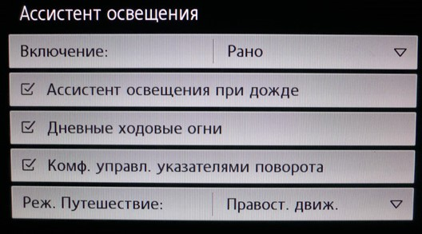
Блок 09 → Адаптация:
Aussenlicht_Front:
Tagfahrlicht aktivierung durch BAP oder Bedienfolge moeglich: Активировать:
→ Применить
логин-пароль 31347
Светодиоды в ПТФ¶
Блок 09 → Адаптация:
Leuchte12NL LB45:
- Lasttyp 12: 6-LED Lichtmodul
→ Применить
---
Leuchte13NL RB5:
- Lasttyp 13: 6-LED Lichtmodul
→ Применить
Уменьшение яркости светодиодов:
Leuchte12NL LB45:
- DimmwertAB 12: 60
→ Применить
---
Leuchte13NL RB5:
- DimmwertAB 13: 60
→ Применить
логин-пароль 31347
Автоматическое провожание, а не морганием дальним перед выходом из машины¶
Блок 09 → Адаптация:
Aussenlicht_uebergreifend:
- Coming Home Verbaustatus: Авто
- Menueeinstellung Cominghome: # Время свечения
→ Применить
логин-пароль 31347
Активация передних ПТФ при включении заднего хода¶
Блок 09 → Адаптация:
Static AFS light (Система статического адаптивного освещения):
- Bei Rueckwaertsfahrt: double sided (С обеих сторон)
→ Применить
логин-пароль 31347
Система освещения поворотов (CORNER)¶
Блок 09 → Адаптация:
Leuchte12NL LB45:
- Lichtfunktion D 12: Abbieglicht links (было nicht aktiv)
→ Применить
---
Leuchte13NL RB5:
- Lichtfunktion D 13: Abbieglicht rechts (было nicht aktiv)
→ Применить
Изменение скорости включения освещения поворотов
Блок 09 → Адаптация:
Static AFS light (Система статического адаптивного освещения):
- Untere Geschwindigkeitsschwelle (Lower speed limit): 0 км\ч
- Obere Geschwindigkeitsschwelle (Upper speed threshold): 50 км\ч # (1)
→ Применить
- Допускается установка значения не больше 60. Для отключения функции необходимо выставить значение 0
логин-пароль 31347
Задние фары¶
Динамические поворотники для Tiguan 2021 (для фар IQ Light)¶
Работа проверена на блоке BCM версии 5Q0937084DP H42
Блок 09 → Адаптация:
> Aussenlicht_Blinker:
>> PreCrash_RECAS: PreCrash_passiv меняем на PreCrash_activ
>> Richtungs_blinken_links: Активировать - Бегущий поворотник слева.
>> Richtungs_blinken_rechts: Активировать - Бегущий поворотник справа.
>> Warnblinken_Zuendung_EIN: Активировать - аварийная сигнализация на включённом зажигании.
>> Warnblinken_Zuendung_AUS: Активировать - аварийная сигнализация на выключённом зажигании.
>> ZV_Blinken_zu: Активировать - бегущий поворотник при постановке на охрану.
>> ZV_Blinken_auf: Активировать - бегущий поворотник при снятии с охраны.
→ Применить
логин-пароль 31347
Перемигивание задних габаритов и поворотников¶
Задние габариты, при включении поворотника отключаются, при отключении загораются обратно (каждый цикл мигания поворотника)
Блок 09 → Адаптация:
> Leuchte16BLK SLB35BLK SL KC9:
>> Lichtfunktion G 16: от not active до Blinken rechts Hellphase
> Leuchte16SL HLC10:
>> Dimming Direction GH 1: от maximize до minimize
---
> Leuchte17TFL R BLK SRB3TFL R BLK SR KC3:
>> Lichtfunktion G 17: от not active до Blinken links Hellphase
> Leuchte17SL HLC10:
>> Dimming Direction GH 17: от maximize до minimize
---
> Leuchte23SL HLC10:
>> Lichtfunktion G 23: от not active до Blinken links Hellphase
>> Dimming Direction GH 23: от maximize до minimize
---
> Leuchte24SL HRA65:
>> Lichtfunktion G 24: от not active до Blinken rechts Hellphase
>> Dimming Direction GH 24: от maximize до minimize
логин-пароль 31347
Перемигивание ламп заднего хода с поворотниками при включении задней скорости и аварийки¶
Блок 09 → Кодирование:
> Leuchte 28RFL LC11:
>> Lichtfunktion C: Active → меняем на → Blinken Links Hellphase
>> Lichtfunktion D: остается → Not Active
>> Dimmwert СD: остается «0»
>> Dimming Direction CD: maximize → меняем на → minimize
→ Применить
---
> Leuchte 29RFL RA64:
>> Lichtfunktion C: Active → меняем на → Blinken Rechts Hellphase
>> Lichtfunktion D: остается → Not Active
>> Dimmwert СD: остается «0»
>> Dimming Direction CD: maximize → меняем на → minimize
→ Применить
логин-пароль 31347
Включение задних габаритов в режиме только ДХО - Буквы «F» горят всегда для HIGH фонарей¶
В интернете полно советов по заданию функции Tagfahrlicht.
Она некорректна!
Блок 09 → Адаптация:
> Leuchte23SL HLC10 (левый фонарь):
>> Lichtfunktion D: 23 → (Dauerfahrlicht) Daytime running lights (было nicht aktiv)
>> Dimmwert CD 23: 0 → 127
---
> Leuchte24SL HRA65 (правый фонарь):
>> Lichtfunktion D: 24 → (Dauerfahrlicht) Daytime running lights (было nicht aktiv)
>> Dimmwert CD 23: 0 → 127
---
> Leuchte16BLK SLB35BLK SL KC9 (левый фонарь на крыле):
>> Lichtfunktion D: 16 → (Dauerfahrlicht) Daytime running lights (было nicht aktiv)
>> Dimmwert CD 16: 0 → 127
---
> Leuchte17TFL R BLK SRB3TFL R BLK SR KC3 (левый фонарь на крыле):
>> Lichtfunktion C: 17 → (Dauerfahrlicht) Daytime running lights (было nicht aktiv)
>> Dimmwert CD 17: 0 → 127
→ Применить
логин-пароль 31347
Включение секций задних габаритов для BASIS фонарей¶
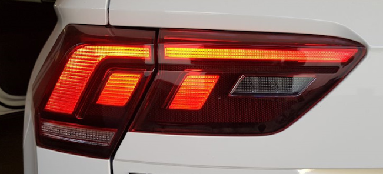
Фонарь на крышке левый
Блок 09 → Адаптация:
> Leuchte23SL HLC10:
>> Lichtfunktion C 23: Daytime running lights
>> Lichtfunktion E 23: Освещение багажного отсека или Luggage compartment light
>> Lichtfunktion F 23: Стоп-сигнал или Brake light
>> Dimming Direction EF 23: minimize
>> Dimmwert CD 23: 60
→ Применить
Фонарь на крышке правый
Блок 09 → Адаптация:
> Leuchte24SL HRA65:
>> Lichtfunktion C 24: Daytime running lights -16
>> Lichtfunktion E 24: Освещение багажного отсека или Luggage compartment light
>> Lichtfunktion F 24: Стоп-сигнал или Brake light
>> Dimming Direction EF 24: minimize
>> Dimmwert CD 24: 60
→ Применить
Фонарь на крыле левый
Блок 09 → Адаптация:
> Leuchte20BR LA71:
>> Lichtfunktion C 20: Daytime running lights
>> Lichtfunktion E 20: Стоп-сигнал или Brake light
>> Dimmwert CD 20: 13
>> Dimmwert EF 20: 60
→ Применить
Фонарь на крыле правый
Блок 09 → Адаптация:
> Leuchte21BR RC8:
>> Lichtfunktion C 21: Daytime running lights
>> Lichtfunktion E 21: Стоп-сигнал или Brake light
>> Dimmwert CD 21: 13
>> Dimmwert EF 21: 60
→ Применить
Отключение фонарей на крышке багажника при её открытии:
Блок 09 → Адаптация:
>> Leuchte23SL HLC10:
>> Lichtfunktion G 23: Rear lid open (было nicht aktiv)
>> Dimming Direction GH 23: minimize
→ Применить
Блок 09 → Адаптация
>> Leuchte24SL HLC10:
>> Lichtfunktion G 24: Rear lid open (было nicht aktiv)
>> Dimming Direction GH 24: minimize
→ Применить
логин-пароль 31347
Задние ПТФ на основе стоп-сигналов¶
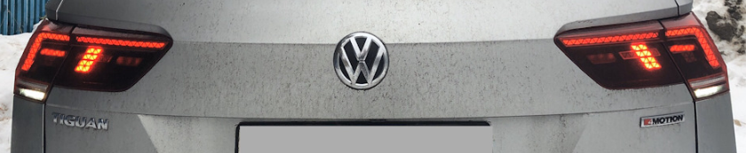
Отключаем основную ПТФ
Блок 09 → Адаптация:
> Leuchte26NSL LA72:
>> Lichtfunktion A: nicht aktiv (было Nebelschlusslicht wenn kein Anhaenger gesteckt und Rechtsverkehr)
→ Применить
Включаем секции стоп-сигналов
Блок 09 → Адаптация:
> Leuchte27NSL RC6:
>> Lichtfunktion B: Nebelschlusslicht wenn kein Anhaenger gesteckt und Rechtsverkehr (было Nicht aktiv)
>> Lichtfunktion C: Kofferraumlicht (было Nebelschlusslicht wenn kein Anhaenger gesteckt und Rechtsverkehr)
→ Применить
Если надо включить еще и огни заднего хода
Блок 09 → Адаптация:
> Leuchte28RFL LC11 и Leuchte29RFL RA64:
>> Lichtfunktion В: Nebelschlusslicht wenn kein Anhaenger gesteckt und Rechtsverkehr (было Nicht aktiv)
→ Применить
Ended: Освещение
Звук¶
Улучшение звучания¶
Данная настройка меняет звучание магнитолы очень посредственно.
Для более качественного звучания необходимо загружать параметрию в блок.
Блок 5F → Кодирование:
> byte_11_Sound_System
Выбираем Sound_System_no_Allocation или Sound_System_Internal
→ Применить (с перезагрузкой блока)
5F - MMI / RNS → Кодирование - 07 → Длинное кодирование:
> Байт 11: Выбираем 01 - Sound_System_no_Allocation или 04 - Sound_System_Internal
Выход → Сохранить
логин-пароль 20103
Повышение чувствительности микрофона¶
Речь водителя при звонке из автомобиля стало слышно четче. Диапазон регулировки от -10 до 10. Самые оптимальные значения идут от 2-х
Блок 5F → Адаптация:
> Microfone sensivity (Mikrofonempfindlichtkeit)
> От 2-х до 10Db
→ Применить
Блок 5F Электронная информационная система → Адаптация:
> Чувствительность микрофона
Старое значение: 0 Дб
Новое значение: 2-10 Дб
логин-пароль 20103
Управление климатической системой¶
Отображение скорости вращения вентилятора Климатроника в автоматическом режиме¶
Блок 08 → Кодирование:
> Blower display during auto mode: Активировать
Байт 11 – Бит 6: Активировать (вместо значения 00001110 поставить значение 01001110)
→ Применить (с перезагрузкой блока)
Блок 08 – Электроника отопителя и климатической установки → Длинное кодирование:
> Индикация режима вентилятора в автоматическом режиме:
Старое значение: не активир.
Новое значение: активир.
08 - Климат-контроль
Кодирование - 07 → Длинное кодирование:
Байт 11 – Бит 6: Активировать
Если нет 6 бита, можно изменить только сам код - вместо значения 00001110 поставить значение 01001110
Выход → Сохранить
Сохранение последней стадии нагрева передних сидений¶
Описание/Цель активации: Навсегда запоминает последнюю выбранную интенсивность обогрева сидения водителя. Просто удобная штука для более тонкой настройки автомобиля под себя.
Блок 08 → Адаптация:
> Speicherung der Sitzheizungsstufe Fahrer (Retention of driver’s seat heater level): Активировать
→ Применить
> Speicherung der Sitzheizungsstufe Beifahrer активировать (Retention of passenger’s seat heater level): Активировать
→ Применить
08 Электроника отопителя и климатической установки → Адаптация
> Сохранение уровня нагрева сиденья водителя
Старое значение: акт. на 10 мин.
Новое значение: акт.
> Сохранение уровня нагрева сиденья переднего пассажира
Старое значение: не акт.
Новое значение: акт.
Автоматический Подогрев рулевого колеса в зависимости от наружной температуры воздуха¶
Важная информация
Для машин 2020 года данную кодировку можно выполнить в: - ODIS E 12 или ODIS S 6 версий - OBD11 При кодировании в старых версиях ODIS или VCDS подогрев руля перестает полностью работать
Существует 2 режима:
Lenkradtemperatur - по датчику в руле
Aussentemperatur - по датчику наружней температуры
Lenkradtemperatur - включается при зажигании, если рулевое колесо имеет низкую температуру. Актуально при движении на трассе
Aussentemperatur - работает всегда
Блок 8 → Кодирование:
> Электроника отопителя и климатической установки / Heated_steering_wheel_automatic_mode
> Подогрев рулевого колеса, автоматический режим: «не установл» на нужное значение
→ Применить
08 Электроника отопителя и климатической установки → Длинное кодирование:
> Подогрев рулевого колеса, автоматический режим
08 Климат-контроль → Кодирование - 07 → Длинное кодирование:
> Байт 13 – Бит 2: по датчику в руле
> Байт 13 – Бит 3: по наружней температуре
Одновременно оба бита включать нельзя!
Если выбора битов нет, то можно поменять значение самого байта: 14 (по датчику в руле) или 18 (по наружней температуре)
Выход → Сохранить

Подогрев зеркал вместе с задним стеклом (не для Tiguan)¶
Данная кодировка не работает для автомобилей Tiguan
Блок 09 → Кодирование:
> Подогрев зеркал включен, пока включен обогрев заднего стекла
выбираем «Вкл»
→ Применить (с перезагрузкой блока)
09 - Электроника бортовой сети
Кодирование - 07 → Длинное кодирование:
Байт 15 – Бит 3 (Mirror Heating ON while Rear Window Heater ON): Активировать
Выход → Сохранить
Подогрев зеркал вместе с задним стеклом (для Tiguan)¶
Включение подогрева зеркал вместе с подогревом заднего стекла независимо от положения джойстика управления зеркалами на водительской двери
Блок 52 → Кодирование:
> Байт 9 – Бит 2 (rear_window_heater_trigger): Активировать
Блок 42 → Кодирование:
> Байт 9 – Бит 2 (rear_window_heater_trigger): Активировать
Отображение подогрева зеркал отдельным пунктом в меню потребителей систем комфорта:
Блок 19 → Адаптация:
> Efficiency_display
>> Convenience_consumption_mirror_heating_dependency → Independent_of_outside_temperature_without_switch
→ Применить
> Range_gain
>> Consumption_mirror_heating_in_heated_rear_window: Активировать
Блок 19 → Адаптация:
> Показ программы эффективности
>> Потребление систем комфорта, обогрев наружных зеркал заднего вида, зависимость → Независимо от наружней температуры без выключателя
> Увеличение запаса хода
>> Потребление обогрева наружных зеркал в обогреве заднего стекла: Активировать
Увеличение температуры и времени обогрева переднего и заднего стекла¶
Вводимое значение измеряется в секундах, например 1200 / 60 = 20 (минут)
Изменение температуры и времени обогрева заднего стекла
Блок 09 → Адаптация:
> Обогрев стекла
>> Heckscheibenheizung Zeitwert: с «320 с» на «640 с»
>> Abschalttemperatur fuer Heckscheibenheizung: с «35.0 °C» на «38.0 °C»
→ Применить
Изменение температуры и времени обогрева лобового стекла
Блок 09 → Адаптация:
> Обогрев стекла
>> Frontscheibenheizung Zeitwert: «320 с» на «640 с»
>> Abschalttemperatur fuer Frontscheibenheizung: «35.0 °C» на «38.0 °C»
→ Применить
логин-пароль 31347
Активация Air Care Climatronic¶
Когда AirCare активен, система Climatronic начинает пропускать воздух через салонный фильтр в режиме рециркуляции совместно с подачей свежего воздуха снаружи. В результате этого воздух в салоне Вашего автомобиля очищается наиболее эффективно и его качество улучшается благодаря интенсивному отсеиванию мелких частиц.
Для функционирования этой опции рекомендуется использовать гипоаллергенный салонный фильтр. Он служит для эффективного отделения твердых частиц пыли и пыльцы, которые являются серьезной проблемой в городских условиях, особенно в весенне-осенний сезоны.
Для активации данного функционала потребуется:
- Блок Climatronic с ПО не ниже 1403;
- Блок Gateway с ПО не ниже 1244/2244;
- Блок Infotainment MIB (STD2/HIGH2) от 2016 г.в. (от 2017 м.г.);
Блок 08 → Кодирование:
> filtering_interior_air: installed
→ Применить (с перезагрузкой блока)
08 - Климат-контроль
Кодирование - 07 → Длинное кодирование:
Байт 15 – Бит 5-6 (20 - Фильтрация воздуха салона): Активировать
Выход → Сохранить
Автоматическое закрытие люка при дожде¶
VW Atlas
Блок 09 → Адаптация:
> Access control 2
>> RegenschlieRen: permanently
>> RegenschlieRen: Активировать
→ Применить
Блок 09 → Кодирование:
>> подблок RLНS:
> Байт 00 – Бит 1-2: Активировать
→ Применить
логин-пароль 31347
Настройка приборной панели¶
Тест стрелок¶
Работает только для Active Info Display первого типа (5NA920790A/B/C, 5NA920791A/B/C)
Приборные панели второго типа (5NA920790D) не поддерживаются
Кодирование выполняется только при включенном зажигании и не запущенном двигателе
Блок 17 → Кодирование:
> Демонстрация: Активировать
→ Применить (с перезагрузкой блока)
Блок 17 - Комбинация приборов → Длинное кодирование:
> Демонстрация: да
Блок 17 Панель приборов → Кодирование → Длинное кодирование:
> Байт 1 – Бит 0 (Gauge test/ Needle Sweep / Staging): Активировать
Выход → Сохранить
логин-пароль 20103
Отключение звукового и визуального предупреждения, если при заведенном автомобиле ключ оказался вне салона¶
Блок 17 → Кодирование:
> Leaving_warning: no
→ Применить (с перезагрузкой блока)
Отображение на приборке фото звонящего, обложки альбома, логотипа радиостанции¶
Блок 17 → Адаптация:
> Picture_Upload_Download: Активировать
→ Применить
логин-пароль 20103
Остаток в баках¶
Кодирование выполняется только при включенном зажигании и не запущенном двигателе
Блок 17 → Кодирование:
> Объем, который необходимо заправить: Активировать
→ Применить (с перезагрузкой блока)
Блок 17 Комбинация приборов → Длинное кодирование:
> Объём, который необходимо заправить: да
17 Панель приборов → Кодирование → Длинное кодирование:
> Байт 10 – Бит 4 (Display "Volume to be Replenished"): Активировать
Выход → Сохранить
Шаг показаний сколько заливать топлива кратен 5 литрам т.е. 5-10-15-20 и т.д
(проверено, влезает даже чуть больше чем показывает - показывал 30 свободно, влезло 32 литра)
логин-пароль 20103
Таймер круга¶
Кодирование выполняется только при включенном зажигании и не запущенном двигателе
Блок 17 → Кодирование:
> Таймер круга: Активировать
→ Применить (с перезагрузкой блока)
Блок 17 Панель приборов → Кодирование → Длинное кодирование:
Байт 1 – Бит 3 (Lap Timer active): Активировать
Выход → Сохранить
логин-пароль 20103
Отображение мгновенного расхода¶
Блок 17 → Адаптация:
> Instantaneous Consumption Display: Display
→ Применить
логин-пароль 20103
Деактивация звукового оповещения о включенном зажигании при открытии двери¶
Блок 17 → Адаптация:
> Ignition active message; trigger (Сообщение Поджиг активен, пиропатрон): «No display (tbd)»
→ Применить
логин-пароль 20103
Tip
Есть 3 значения: No display (tbd), Driver door, All doors.
Отключение предупреждения о не пристегнутом ремне безопасности¶
Отключается, чтобы не отвлекало в редких случаях, когда необходимо перемещение на короткие дистанции
Блок 17 → Адаптация:
> Отключение предупреждения о непристегнутом ремне безопасности: да
→ Применить
логин-пароль 20103
Активация промежуточных значений спидометра¶
Работает только на приборных панелях AID нового образца с 2019 года. В любом варианте 100 км/ч всегда стрелка вертикально вверх.
Исполнение_4 - максимальная скорость 260 и промежуточные значения.
Блок 17 → Адаптация:
> Конечное значение спидометра / Speedometer_final_value / Tachometer end value: исполнение_4 (было исполнение_1)
→ Применить
логин-пароль 20103
Смена анимации/отображения центральной части приборной панели¶
Варианты установки
исполнение_1 - классическое исполнение_3 - тема точек/карбона
Блок 17 → Адаптация:
> Отображение на дисплее: исполнение_3 (было исполнение_1)
→ Применить
логин-пароль 20103
Логотип R-line (для приборных панелей нового типа 5NA920790D)¶
Возможные варианты
Без логотипа R
С логотипом R
С логотипом R-Line
Логотип R с обновления модели 25/19
Логотип R-Line с обновления модели 25/19
Блок 17 → Адаптация:
> R_Logo: выбрать нужное
→ Применить
логин-пароль 20103
Корректировка показаний спидометра¶
Для каждого размера шин нужно подбирать своё значение
Блок 17 → Кодирование:
> Длинна окружности колеса / Tire Circumference: Исполнение 3
→ Применить
Блок 17 Панель приборов → Кодирование → Длинное кодирование:
> Байт 3 – Бит 0-2: Исполнение 3
Выход → Сохранить
логин-пароль 20103
Смена вида отображаемого автомобиля¶
Warning
не работает, если включена Эстетическая подсветка
Блок 17 → Кодирование:
> Vehicle variant: варианты 2, 4, 6, 8
→ Применить
логин-пароль 20103
Смена скина приборной панели¶
Вариант 1 - Стандартная схема
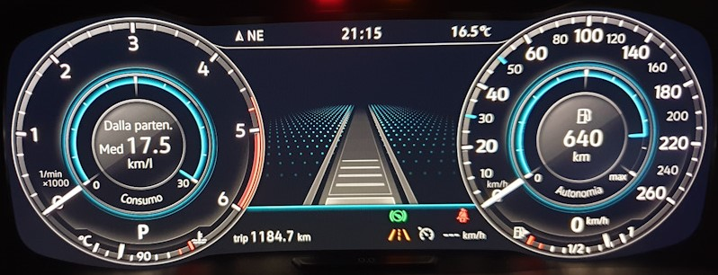
Блок 17 → Адаптация:
> Tube_version: варианты 0, 5, 6, 7, 8, 9
→ Применить
Вариант 2 - Стандартная схема c большим количеством точек
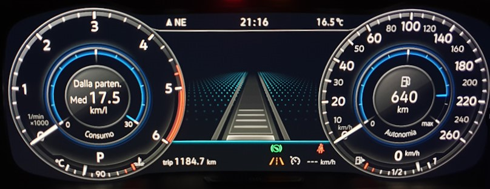
Блок 17 → Адаптация:
> Tube_version: вариант 1
→ Применить
Вариант 3 - Alltrack тема
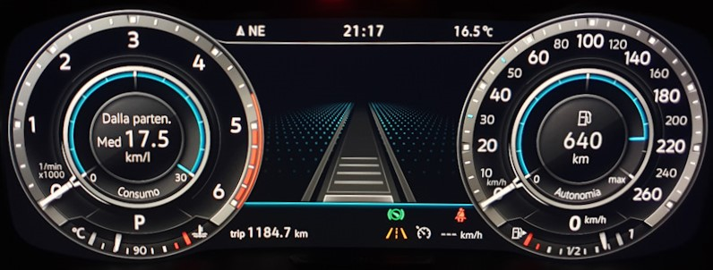
Блок 17 → Адаптация:
> Tube_version: вариант 2
→ Применить
Вариант 4 - GTI / GTD тема
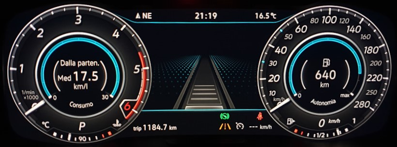
Блок 17 → Адаптация:
> Tube_version: вариант 3
→ Применить
Вариант 5 - R-line тема
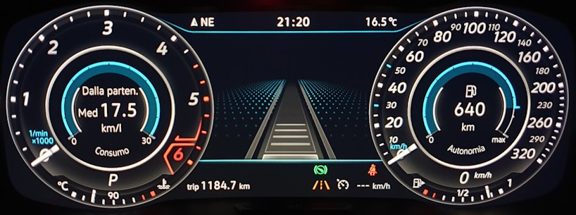
Блок 17 → Адаптация:
> Tube_version: вариант 4
→ Применить
---
> Vehicle variant: варианты 2, 4
→ Применить
Вариант 6 - R-line тема со логотипом R-line внизу приборной панели
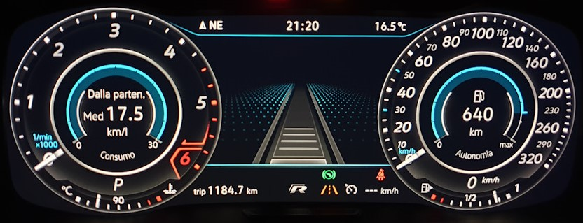
Блок 17 → Адаптация:
> Tube_version: вариант 4
→ Применить
---
> Vehicle variant: варианты 6, 8
→ Применить
логин-пароль 20103
Сброс Сервисного Интервала¶
Блок 17 → Адаптация:
> Сброс счетчиков расширенных интервалов ТО: Сбросить
→ Применить
логин-пароль 20103
Головное устройство ↵
Головное устройство¶
Расшифровка кодировок¶
menu_display_xxx_clamp_15_off - работа при выкл зажигании
menu_display_xxx_over_threshold_high - работа в движении
menu_display_xxx_standstill - работа в режиме ожидания
menu_display_xxx_after_disclaimer - работа после какой-то фигни
Разблокировка инженерного меню¶
Перед этим возможно придется ODIS E перевести в режим программирования
Блок 5F → Адаптация:
> Режим разрабочика (Developer mode): Активировать
логин-пароль 12345
Смена скина автомобиля¶
Иногда при замене ГУ на другой, бывает что на нем установлен профиль другого автомобиля VW.
Пример для VW Tiguan:
Блок 5F → Кодирование:
> byte_0_brand → _VW
> byte_1_Car_Class → 3
> byte_1_Car_Generation → 7
> byte_2_Car_Derivate → 6
> byte_2_Car_Derivate_Supplement → 0
→ Применить
Возможность одновременного подключения двух телефонов по bluetooth¶
Блок 5F → Адаптация:
> function_configuration_phone:
>> Support_second_phone: none → меняем
>> Support_for_response_and_hold: off → on
>> Dtmf_without_active_call: off → on
>> _user_menu_three_way_calling: not_installed → installed
→ Применить
Блок 17 → Кодирование:
> telephone2_BAP - no → yes
→ Применить
Электронный усилитель голоса ICC¶
Для активации данного усилителя необходимо загрузить параметрию:
(Параметрия под ODIS)
После загрузки параметрии нужно ОБЯЗАТЕЛЬНО перезагрузить магнитолу долгим нажатием на кнопку включения!
Отключение скачка громкости при старте магнитолы¶
Иногда при включении ГУ громкость включается намного сильнее, чем она была задана при выключении машины.
Блок 5F → Адаптация:
> Adjustment_fm_tuner_mono_stereo
>> l_hf_stereo_lower_threshold → 20 dBµV (было 37 dBµV)
→ Применить
Деактивация AM диапазона в магнитоле¶
Слева внизу вместо ненужного "переключателя" AM/FM появляется иконка настройки радиостанций вручную
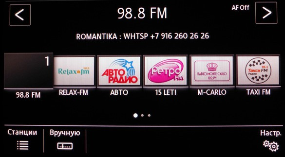
Блок 5F → Кодирование:
> byte_14_AM_disable: Активировать
→ Применить (с перезагрузкой блока)
5F - MMI / RNS
Кодирование - 07 → Длинное кодирование:
Байт 1 – Бит 1 (byte_14_AM_disable): Активировать
Выход → Сохранить
логин-пароль 20103
Заставка ГУ¶
Блок 5F → Кодирование:
> Байт 18 – меняем 00 на
01 — Hybrid
02 — GTD
03 — GTI
04 — BlueMotion
05 — E-Golf
06 — R-Line
07 — Golf R
→ Применить (с перезагрузкой блока)
Логотип музыкальной системы
Блок 5F → Адаптация:
> Startup_screen_sticker_hmi (по умолчанию стоит 0000) - меняем на
1 — fender premium audio system
2 — dynaudio
→ Применить
Изменение картинки меню ГУ с перелистывания на плитку¶
Блок 5F → Кодирование:
> byte_17_Skinning
Старое значение: Skin_1
Новое значение: Skin_5
→ Применить (с перезагрузкой блока)
5F - MMI / RNS
Кодирование - 07 → Длинное кодирование:
Байт 17: меняем Skin_1 на Skin_5
Выход → Сохранить
Видео в движении, Работа MirrorLink в движении¶
Discover PRO
Блок 5F → Адаптация:
> nhtsa_properties:
>> nhtsa_limitation_switches_for_carplay_no_softKeyboard: Деактивировать (CarPlay, возможность вызова клавиатуры в движении)
>> nhtsa_limitation_switches_for_androidauto_limit_displayed_message_length: Деактивировать (AA,отключение ограничения длины выводимого сообщения в движении)
>> nhtsa_limitation_switches_for_androidauto_no_setup_configuration: Деактивировать (AA, возможность заходить в настройки в движении)
>> nhtsa_limitation_switches_for_androidauto_no_text_input: Деактивировать (AA, отключение запрета ввода текста в движении)
>> nhtsa_limitation_switches_for_androidauto_no_video_playback: Деактивировать (АА, возможность проигрывать видео в движении)
→ Применить
Для всех остальных устройств необходимо загружать дополнительно специальный ZDC контейнер или XML параметрию для ODIS (Параметрия под ODIS)
Меню в магнитоле для настройки приборной панели¶
Skoda Octavia
Блок 5F → Адаптация:
>> Car_function_list_bap_gen2_extended
> display_configuration_0x45: Активировать
> display_configuration_0x45_msg_bus → CAN_Comfort
→ Применить
Off Road Display¶
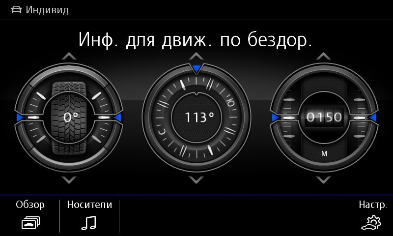
На Тигуанах второго поколения работает в информационно командных системах Composition Media 6", Discover Media, Discover Pro без кодирования в 5F блоке.
Блок 5F → Адаптация:
> Car_Function_Adaptations_Gen2
> menu_display_compass → "active" (default not active)
> menu_display_compass_over_threshold_high → "active" (default not active)
> menu_display_compass_clamp_15_off → "active" (default not active)
→ Применить
> Car_Function_List_BAP_Gen2
> compass_0x15 "active" (default not active)
→ Применить
Для Composition Media 8" необходимо выполнить кодировку 5F блока.
После кодирования в блоке будет висеть нестираемая ошибка, никак не влияющая на функциональность
Блок 5F → Кодирование:
> Байт 24 – Бит 02 (Navigation System): Активировать (было "02" 00000010, стало "06" 00000110)
→ Применить (с перезагрузкой блока)
5F - MMI / RNS
Кодирование - 07 → Длинное кодирование:
Байт 24 – Бит 2 (Navigation System): Активировать
либо правим двоичное значение - было "02" 00000010, стало "06" 00000110
Выход → Сохранить
логин-пароль 20103
Режим автошкола¶
После адаптации необходимо перезагрузить магнитолу
Блок 5F → Адаптация:
>> Car_Function_Adaptations_Gen2
> menu_display_driving_school - не активир.меняем на активир.
> menu_display_driving_school_over_threshold_high - не активир меняем на активир.
>> Car_Function_List_CAN_Gen2
>> Driving_school - недоступ. меняем на доступен
→ Применить
Включение персонализации¶
Блок 17 → Кодирование:
> Байт 10 – Персонализация
выбираем «Вкл»
→ Применить
логин-пароль 20103
Блок 09 → Адаптация:
> Персонализация / Personalisierung
>> Personalisierung_Profilfunkion → profiles_active
>> Personalisierung_aktiv → Active
>> Aktivierungsoption_im_HMI-Menue_sichtbar → Active
>> Benutzerkontenverwaltung_in_HMI-Menue_sichtbar → Active
>> Personalisierungsfunktionen_in_HMI-Menue_sichtbar → Active
>> PSO_FSG_Setup2_Bit_1 → Active
>> PSO_FSG_Setup2_Bit_2 → Active
→ Применить
логин-пароль 31347
Активация персонализации
Блок 09 → Адаптация:
> Персонализация / Personalisierung
>> Profil_Variante → Konto (v. 1.x)
Создаем профили и далее меняем:
Блок 09 → Адаптация:
> Персонализация / Personalisierung
>> Profil_Variante → Konto (v. 2.x)
Меняем:
Блок 09 → Адаптация:
> Персонализация / Personalisierung
>> Profil_Variante → Konto (v. 1.x)
логин-пароль 31347
Использование глонасс антенны для навигации и компаса¶
Discover Pro · Discover Media
Блок 5F → Адаптация:
> Navigation_GNSS_Receiver_Setting:
>> default_hw_reception: Дективировать
>> gps: Дективировать
>> galileo: Дективировать
>> glonass: Дективировать
>> compass: Дективировать
>> external_gps_1: Активировать
>> external_gps_2: Дективировать
→ Применить
Блок 75 → Адаптация:
> GPS: internal_GPS_output_on_CAN
> Navigation_Type: Type_2
>> Gnss_data_rate:
> Data Rate: 5 Hz (было 1)
→ Применить
Активация TMC для систем навигации MIB2/2.5 HIGH¶
Канал автодорожных сообщений (Traffic Message Channel, TMC) — технология для передачи информации о дорожных пробках и неблагоприятных дорожных условиях.
Как правило, данные передаются в виде цифровых кодов, с использованием радиосистемы оповещения (FM-RDS) для обычных FM-приёмников.
Поддержка функций TMC позволяет навигационной системе автомобиля получить информацию об участках с дорожными инцидентами и построить альтернативный маршрут для объезда проблемных участков.
Города, где ведется вещание
Москва (и города вокруг)
Санкт-Петербург (и города вокруг, Калининград)
Екатеринбург (и другие города Уральского ФО РФ)
Нижний Новгород (и другие города Приволжского ФО РФ)
Краснодар (и другие города Южного ФО РФ)
Новосибирск (и другие города Сибирского ФО РФ)
Установка¶
Установка проходит в несколько этапов с помощью модифицированной утилиты mib2-toolbox (утилиту предоставил https://www.drive2.ru/users/kisyabrus/)
(Сборка для Skoda)
(Сборка для Volkswagen)
Установка утилиты mib2-toolbox со встроенными скриптами для поддержки регионов:
1. Скачать архив
2. Распаковать его в корень SD карты
3. Удалить ранее установленный mib2-toolbox
4. Вставить карту в головное устройство
5. Долгим нажатием по кнопке MENU зайти в сервисное меню
6. Выбрать пункт "Software updates/versions" и нажать кнопку "Update" в правом верхнем углу
7. Выбрать SD карту и MQB Coding MIB2 Toolbox
8. После установки система предложит подсоединить адаптер для удаления ошибок. Выбрать "Cancel"
9. Долгим нажатием по кнопке MENU зайти в сервисное меню
10. Зайти в TESTMODE
11. Зайти в Green Developer Menu
12. В меню появится дополнительный пункт - "mqbcoding"
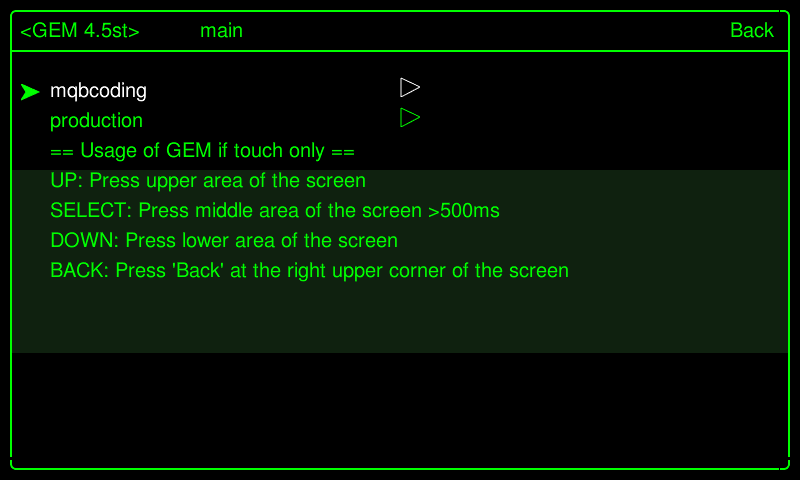
Установка нужного региона
1. Зайти в "mqbcoding", выбрать customization/advanced
2. Установить нужный патч, соответствующий региону, например, Install RussiaTMC Patch (Ekaterinburg, TMC25)
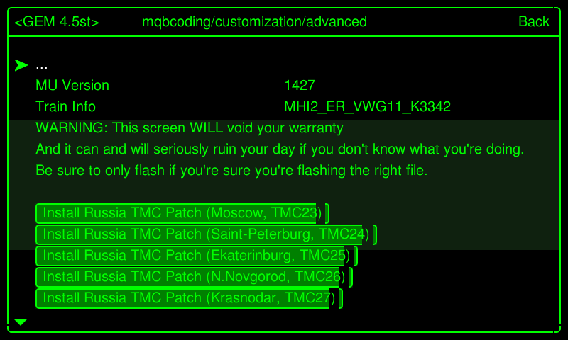
- Перезагрузить устройство
- Зайти в "mqbcoding", выбрать customization/adaptation/rccadaptations
- В PayTMC адаптациях задать значение 15
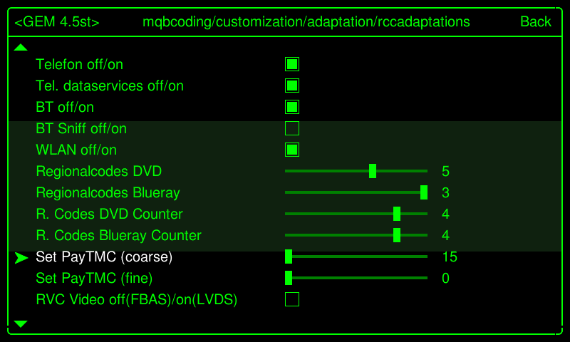
Перезагрузить с помощью Green Developer Menu, в противном случае адаптации не применятся
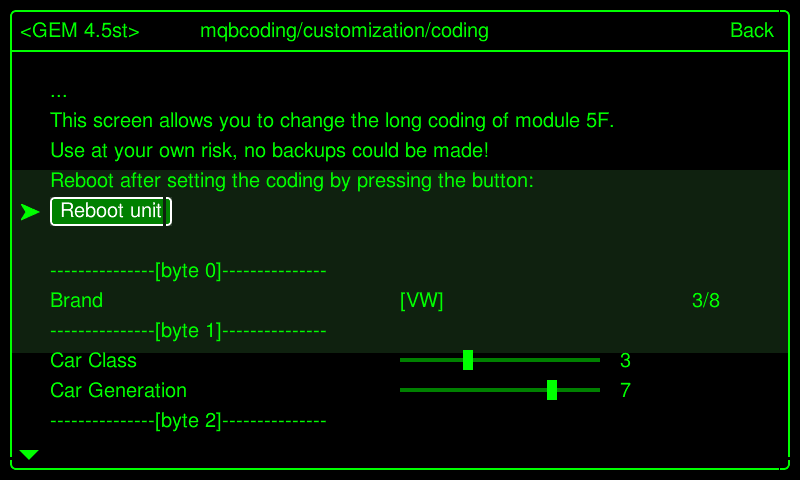
После перезагрузке магнитоле нужно будет немного времени, чтобы прочитать и подхватить информацию с нужной частоты.
Наслаждаемся отображением пробок!
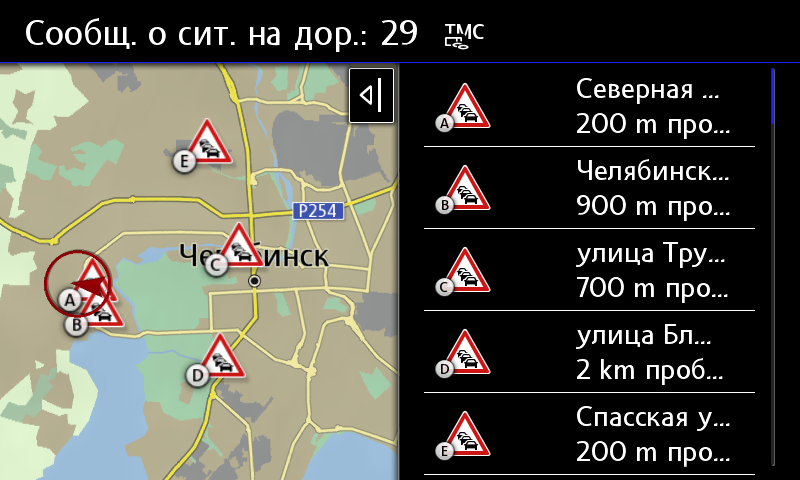
SWaP коды и параметрии для Composition Media и Discover Media¶
Warning
ВСЕ, ЧТО ВЫ БУДЕТЕ ДЕЛАТЬ — ВЫ БУДЕТЕ ДЕЛАТЬ ТОЛЬКО ПОД СВОЮ ОТВЕТСТВЕННОСТЬ! ЕСЛИ НЕТ УВЕРЕННОСТИ — НЕ НАЧИНАЙТЕ!
Голосовой помощник, MirrorLink, Bluetooth и Спорт-монитор для Delphi устройств¶
Что необходимо¶
- USB-Ethernet адаптер:
Предпочтителен: d-link dub e 100 ревизий b1(серебристый), с1, d1
или https://aliexpress.ru/item/32969701309.html?spm=a2g0s.9042311.0.0.3b9d33edZKppDb&sku_id=12000018080745527
работает без танцев с бубном, так сказать из посылки или другое устройство с чипом ASIX 88772 - Прошивка магнитолы
- SWaP магнитолы
Информация о ГУ¶
Как распознать модуль Delphi?
Модули Delphi - это всегда стандартные устройства, а не устройства высокого уровня.
Соответственно, Delphi Unit всегда является Discover Media, а не Discover Pro.
Все модули Delphi являются устройствами Discover Media, но не все устройства Discover Media являются модулями Delphi!
Discover Media также может быть устройством Technisat Preh - просто для справки.
Чтобы распознать устройство, не снимая его, необходимо удерживать кнопку «МЕНЮ» на радио в течение длительного периода времени, пока не откроется другое меню.

В этом меню в пункте «Обновление / версии программного обеспечения» можно увидеть версию программного обеспечения.

(Delphi) SW Train Version (MST2_ЕС_VW_P0891D) - формируются следующим образом:
MST2 = MIB2 стандартного устройство
ЕС = Европейский вариант (аналог этого США)
VW = марка автомобиля
0891 = Firmware 0891
D = Delphi Краткая версия модуля
Если в конце версии SW Train стоит буква D, значит, у вас есть модуль Delphi.
Если вы видите PQ или ZR после марки автомобиля или букву T в конце в версии SW Train, значит - у вас устройство Technisat Preh.
Прошивка устройства¶
Только прошивка 0891 позволяет соединиться с MIBII по Ethernet-USB (по нашей информации)
Для прошивки магнитолы понадобится:
- SD Card
- Прошивка Delphi устройств (Скачать)
- Активированное инженерное меню (Инструкция)
Обновление ПО MIBII
1. Отформатируйте SD-карту в FAT32
2. Скопируйте файлы обновления прошивки на SD-карту (в корне должно быть 3 папки и текстовый файл после распаковки архива)
3. Вставьте SD-карту в слот для SD-карты 1
4. Удалите все остальные SD-карты и USB-устройства!
5. Нажимайте на магнитоле кнопку MENU и дольше, пока не откроется другое (сервисное) меню
6. Выберите там тестовый режим

7. Перейдите в категорию «SWDL»
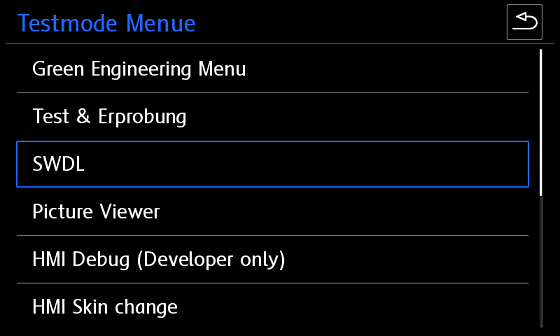
8. Активируйте загрузку программного обеспечения Загрузка вручную и нажмите «Начать загрузку»
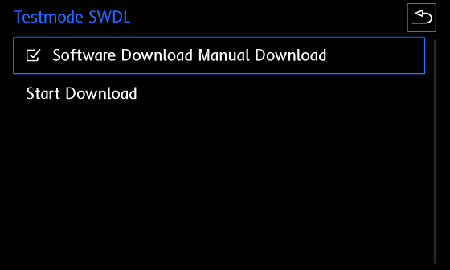
9. Выберите источник (SD-карта), выберите все и запустите обновление прошивки
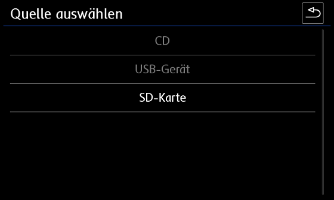
На что следует обратить внимание при обновлении прошивки?
Оставьте зажигание включенным.
Отключите ненужных потребителей (свет, вентиляция, ...)
Подключите зарядное устройство ( мощность зарядки не менее 15 А, лучше 20 А и больше)
В зависимости от устройства (RAM / CPU) обновление занимает от 20 до 60 минут
После обновления прошивки на панели будет мигать глонасс — это нормально, не бойтесь.
После обновления прошивки может появиться ошибка "Подтверждение изменения по установке". Необходимо будет подтвердить обновление прошивки кодом.
Инструкция и XOR калькулятор
Активация Telnet соединения¶
Чтобы установить соединение Telnet, необходимо активировать Ethernet в зеленом меню.
Для этого зажмите кнопку МЕНЮ на магнитоле до тех пор, пока не появится (сервисное) меню. Затем перейдите в тестовый режим

Теперь мы можем переключиться в Зеленое (Инженерное) меню
(по желанию вы также можете попасть туда, нажав на кнопку МЕНЮ очень долго)

Переключитесь в категорию «debuggung mlp».

Активируйте Ethernet и перезапустите устройство
(удерживайте кнопку питания не менее 10 секунд).
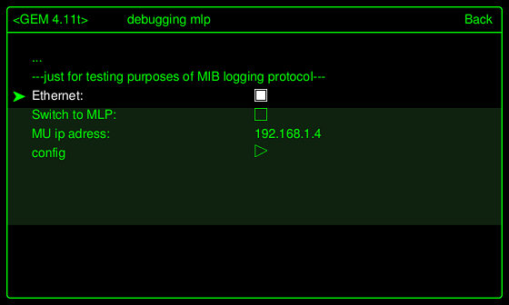
После перезапуска агрегата необходимо активировать «Switch to MLP».
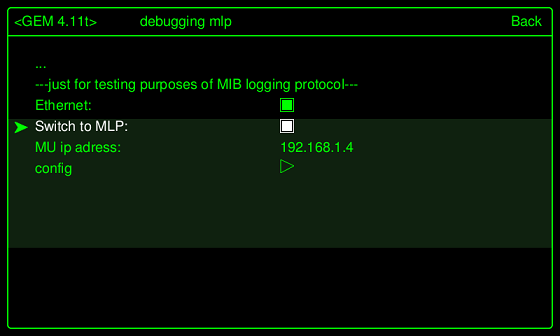
Теперь адаптер USB-LAN можно подключить к USB-порту в автомобиле и подключить к ноутбуку с помощью кабеля LAN.
Если светодиоды на адаптере загораются, подключение и настройка IPv4 выполнены успешно (Настройки адаптера Ethernet IP - 192.168.1.10).
Запускаем программу Putty. IP-адрес MU берется из зеленого меню в качестве IP-адреса.
Случалось, что IP-адрес MU не отображался на некоторых устройствах, но он всегда использовался 192.168.1.4 и в качестве порта - 23, а затем нажимали «Открыть».
Если все настроено правильно, вы можете сказать по логину QNX Neutrino, что он работает.
Для входа в Delphi Units Login:root. Пароль не нужен. Нажимайте энтер..

Как только появится приветствие, можно будет вводить команды.

Команды:
cp - копировать
rm - удалить
chmod - изменить права (например, chmod 777= полные права чтения / записи)
mkdir - создать каталог (папку)
mount - монтировать путь
umount - размонтировать путь монтирования
Атрибуты:
-f - принудительно (перезапись / принудительно)
-R - рекурсивный (например, папка с содержимым и копировать / удалять подпапки)
-t - Запрос монтирования / особый тип (например, за которым следует qnx6)
-u - обновление (повторное монтирование)
-V - индикатор выполнения
-w - права чтения / записи (при монтировании)
Для удобства 3 скрипта (для запуска их необходимо поместить на корень флешки)
1. Бэкап (MST2_backup.sh)
2. Патч FEC кодов (MST2_fec.sh)
3. Патч SWaP (MST2_patch.sh)
Резервная копия MIBII¶
Вставьте (пустую) SD-карту в слот 1 и выполните следующие команды через Putty.
-
Монтируем SD карту
cd / && mount -uw /sdc1/ -
Запускаем скрипт Backup (MST2_backup.sh)
cd / && /sdc1/MST2_backup.sh -
Должны увидеть:
# MST2_backup.sh ROOT access — OK Making backup dir on SD Card — OK mkdir: /sdc1/backup: File exists SWaP *.fec files backup — OK backup /ffs/etc/* — OK cp: Can't create FIFO file (/sdc1/backup/script.fifo) delphibin.ifs backup — OK InstallationManager backup — OK SWaP engine backup — OK cp: Dest (/sdc1/mst2_patch.sh) must be a dir to copy dirs or multiple files to it. profile backup — OK MHConfig.cfg backup — OK fs0 backup — OK Saving unit info to file — OK emmc serial numbler — SAVED FINISHED — You can now remove SD Card
Обновление FEC файла¶
После выполнения бекапа, на флешке в папке pg появится файл *.fec.
С помощью MIB2 Delphi FEC Generator XTR3M3 (M2DFGX16) патчим этот файл,
а именно отмечаем все пункты которые вам нужны и сохраняем отдельно пропатченный fec файл.
Важно
Если у вас с завода активированы коды App Connect, MirrorLink и т.д., и во время патча файла fec вы их не отметите, то после заливки в магнитолу их у Вас не будет.
Если у Вас магнитола без навигации, то отмечайте все пункты, кроме навигации
Доступные FCC
fsc = "00030000" # AMI
fsc2 = "00030001" # Gracenote
fsc3 = "00040100" # Navigation
fsc4 = "00050000" # Bluetooth
fsc5 = "00060100" # Vehicle Data Interface
fsc6 = "00060200" # Škoda/Audi Connect, VW CarNet
fsc7 = "00060300" # Mirror Link
fsc8 = "00060400" # Sport HMI
fsc9 = "00060500" # Sport Chrono
fsc10 = "00060600" # LogBook
fsc11 = "00060700" # Online Services
fsc12 = "00060800" # Apple CarPlay
fsc13 = "00060900" # Google Android Auto
fsc14 = "00070100" # SDS
fsc15 = "00070200" # SDS for Nav
fsc16 = "00070400" # Digital Voice Enhancement
Активация SWaP кодов¶
SWaP файлы. Данные коды содержат в себе все существующие SWaP коды для ГУ
| Тип | Ссылка |
|---|---|
| STD2 | (SWaP) |
| PQ STD2 | (SWaP) |
| NAV | (SWaP) |
| PLUS | (SWaP) |
Для загрузки SWaP кода необходимо взять нужный файл, а так же созданный на предыдущем шаге FEC файл и загрузить в корень флешки.
Вставьте SD-карту в слот 1 и выполните следующие команды через Putty:
- Монтируем SD карту
cd / && mount -uw /sdc1/ -
Запускаем скрипт (MST2_patch.sh)
cd / && /sdc1/MST2_patch.sh -
Должны увидеть:
Иногда скрипт не выполняется, и выдает ошибку. Тогда шаги из скрипта необходимо выполнить вручную:# mst2_patch.sh ROOT access — ok SWaP patch — ok cp: Copying /sdc1/SWaP to /home/mmc0t177_tmp/apps/bin/SWaP 100.00% (xxx/xxx kbytes, xxxx kb/s) FINISHED — You can now remove SD Card
cd / && mount -uw /sdc1/ umount -f /extbin mkdir /home/mmc0t177_tmp mount -t qnx6 /dev/mmc0t177 /home/mmc0t177_tmp cp -VRf /sdc1/SWaP /home/mmc0t177_tmp/apps/bin/ chmod 777 /home/mmc0t177_tmp/apps/bin/SWaP umount -f /home/mmc0t177_tmp rm -R /home/mmc0t177_tmp -
Перезагружаем магнитолу долгим нажатием на кнопку включения — ОБЯЗАТЕЛЬНО!!!!
-
Монтируем SD карту
cd / && mount -uw /sdc1/ -
Запускаем скрипт Патч FEC кодов (MST2_fec.sh)
cd / && /sdc1/MST2_fec.sh -
Должны увидеть:
# MST2_fec.sh ROOT access — ok *.FEC installation — ok mkdir: /home/mmc0t180_tmp: File exists FINISHED — You can now remove SD Card -
Перезагружаем магнитолу долгим нажатием на кнопку включения — ОБЯЗАТЕЛЬНО!!!!
Если по каким либо причинам не получилось, значит Вам не подошел SWaP файл, пробуйте другой SWaP
Может случиться так, что файлы FEC все еще находятся в буфере в устройстве и все еще доступны после перезагрузки.
Их, возможно, придется удалить несколько раз, пока они не станут недоступны в устройстве после перезагрузки.
rm -RVf /Persistence/SWaP/ppw/
rm -RVf /Persistence/SWaP/illegal/
После этого можно импортировать исправленный файл FEC.
cp -VRf /sdc1/*.fec /Persistence/SWaP/pg/
После ввода команд обязательна полная перезагрузка.
Warning
После всех действий обязательно проверьте работоспособность ГУ.
Проверьте сканером на наличие ошибок, и удалите их если появились.
Электронный усилитель голоса ICC¶
Для активации данного усилителя необходимо загрузить параметрию:
(Параметрия под ODIS)
После загрузки параметрии нужно ОБЯЗАТЕЛЬНО перезагрузить магнитолу долгим нажатием на кнопку включения!
Снятие Component Protection и SWaP коды для Discover Pro¶
Warning
ВСЕ, ЧТО ВЫ БУДЕТЕ ДЕЛАТЬ — ВЫ БУДЕТЕ ДЕЛАТЬ ТОЛЬКО ПОД СВОЮ ОТВЕТСТВЕННОСТЬ! ЕСЛИ НЕТ УВЕРЕННОСТИ — НЕ НАЧИНАЙТЕ!
Все действия осуществляются только с помощью утилиты M.I.B. bash, т.е теперь для активации все опций нужна только SD карта.
Список прошивок на которые подойдет данный патч:
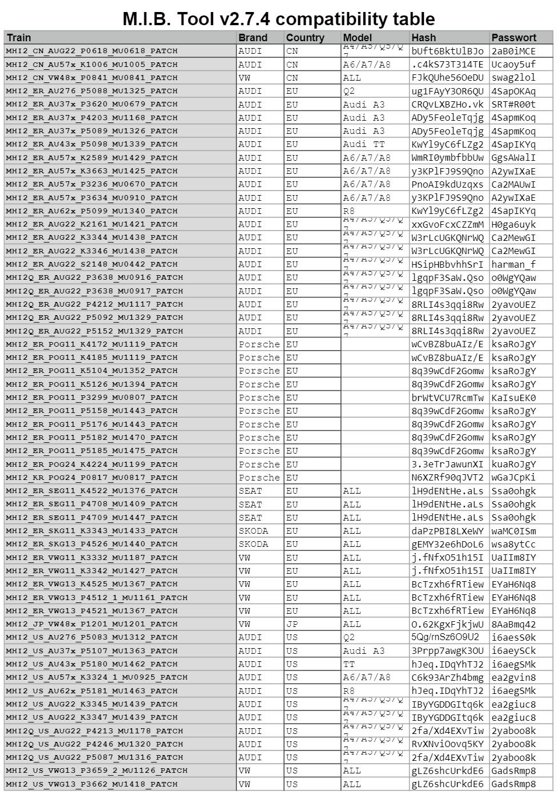
Список функциональных активаций:

Если у вас MIB2 high, но прошивка не совпадает со списком выше — сделайте обновление. До версии на которую патч имеется.
Процедура активации:
1. Копируете все файлы на SD карту
2. в папке patches оставляете только 1 папку с версией вашей текущей прошивки
3. Запускаете обновление ПО. Патч уже содержит активацию GEM. ГУ перезапустится несколько раз
4. После окончания установки заходим в GEM и выбираем >>M.I.B.-More_Incredible_Bash<<
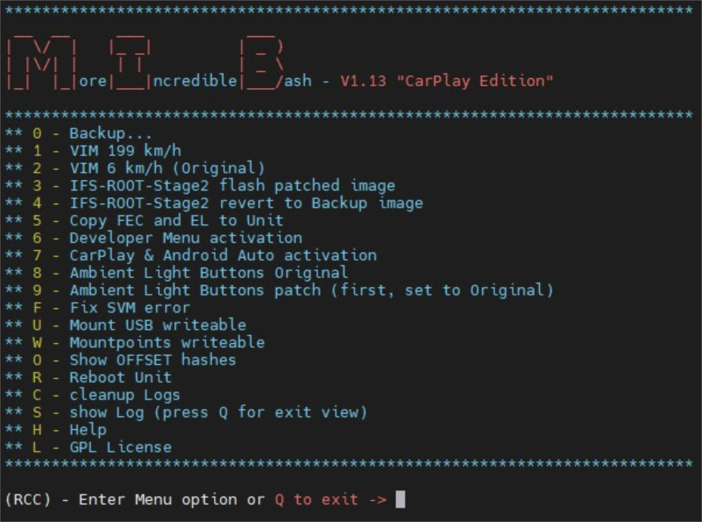
Пункт №3 содержит в себе все необходимые FEC коды, а так же снятие защиты компонентов.
Данный патч содержит в себе только СВАПы. Для некоторых опций потом нужно будет сделать правки в кодировках и адаптациях блока.
Например, для активации данного усилителя необходимо загрузить параметрию:
(Параметрия под ODIS)
Для активации андроид авто или карплей необходимо выполнить соответствующие кодировки.
Ended: Головное устройство
Шины ↵
Настройка профилей шин¶
Настройка системы контроля давления в шинах через Individual профиль¶
Tip
В старых версиях OBD11 был перепутан перевод (обычный - полный)
Настройки для обычной нагрузки
Блок 65 → Адаптация:
> НОМ. давление для передней оси, обычный
Старое значение: 255
Новое значение: 22 (если нужно 2.2 бара)
→ Применить
> НОМ. давление для задней оси, обычный
Старое значение: 255
Новое значение: 22 (если нужно 2.2 бара)
→ Применить
Настройки для полной нагрузки
> НОМ. давление Полная загрузка передней оси
Старое значение: 255
Новое значение: 26 (если нужно 2.6 бара)
→ Применить
> НОМ. давление Полная загрузка задней оси
Старое значение: 255
Новое значение: 26 (если нужно 2.6 бара)
→ Применить
Создание собственно профиля шин¶
Поддерживающиеся блоки:
3AA907273D; 3AA907273F; 3AA907273H; 5Q0907273; 5Q0907273B; 7P6907273H; 7P6907273L.
Для генерации необходимо выбрать нужный формат (какой утилитой будет проводиться загрузка) и правильный блок шин. Потом надо создать/наполнить таблицу давлений для него. В качестве названий может быть что угодно - размерность шин, названия Winter-Summer и т.д. Но все названия должны быть только на латинице!
Готовый файл заливается с помощью ODIS E или VCDS в блок 65:
Diagnostic function - Write Data Record
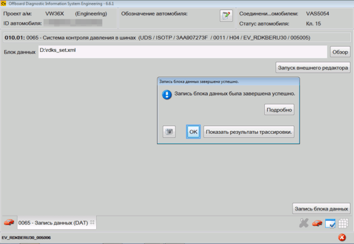
После загрузки данных меню настроек будет выглядеть так:

Warning
После записи машина на некоторое время станет новогодней ёлкой - будут ошибки и отказы по всем блокам.
Беспокоиться не надо - в течение 10 минут все само починится.
Косвенный контроль давления в шинах¶
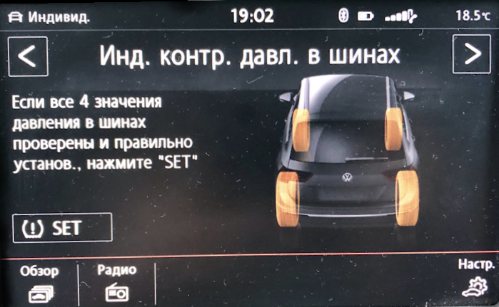
Активация в блоке ABS
Блок 03 → Кодирование:
> Байт 27: активируем биты 4,5 (1-й вариант) или биты 4,5,6 (2-й вариант - для парк-пилота)
> Байт 28 – Бит 7: Активировать
→ Применить (с перезагрузкой блока)
Активация отображения на приборной панели
Блок 17 → Кодирование:
> Байт 4 – Бит 0 (Indirect Tire Pressure Monitoring System(TPMS) installed / Индикатор контроля давления в шинах): Активировать
→ Применить (с перезагрузкой блока)
Активация в меню магнитолы
Блок 5F → Адаптация:
> Car_Function_Adaptations_Gen2
>> menu_display_rdk: Активировать
>> menu_display_rdk_over_threshold_high: Активировать
→ Применить
---
> Car_Function_List_BAP_Gen2
>> tire_pressure_system_0x07: Активировать
>> tire_pressure_system_0x07_msg_bus → CAN_Comfort (возможно Suspension_data_bus)
→ Применить
После кодирования необходимо включить зажигание, магнитолу и на экране контроля давления нажать виртуальную клавишу SET
Ended: Шины
Дооснащение¶
Камера ассистентов¶
Оборудование:
1. Камера ассистентов
2. Кожух
3. Безрамочное зеркало без FLA
4. Кожух для крепления зеркала
5. Проводка
Схема подключения:
1 пин камера А5 (R242) -→ 6 пин радара АСС (J428)
7 пин камера А5 (R242) -→ 5 пин радара АСС (J428)
6 пин — "+"
5 пин — "-"
2 пин — Can extended low - 8 пин в разъеме зеркала
8 пин — Can extended high - 3 пин в разъеме зеркала
4 пин — плюсовой провод обогревателя камеры
10 пин — минусовой провод обогревателя камеры
Схема:

Сенсорная панель климата¶
Блок 08 → Кодирование:
> Climate_style поменять с display на Anzeige Front und Heck
→ Применить (с перезагрузкой блока)
Блок 08 → Адаптация:
> Detection_time_tap
>> par_Detection_time_tap: 600 ms
> Detection_time_hold
>> par_Detection_time_hold: 600 ms
> Off_time_neighbor_key_during_sliding
>> par_Off_time_neighbor_key_during_sliding: 400 ms
> Sensitivity_touch
>> par_Sensitivity_touch: 0
> Steps_temp_slider
>> par_Steps_temp_slider: 8
> Step_size_temp_slider
>> par_Step_size_temp_slider: > 0.5°C
> 22_degree_jump_temp_slider
>> par_22_degree_jump_temp_slider: not_active
> Flick_function_temp_slider
>> par_Flick_function_temp_slider: not_active
> Profile_selection_touch
>> par_Profile_selection_touch: 0
> dimming_characteristic_new_1
>> X1: 0
>> Y1: 16
>> X2: 10
>> Y2: 16
>> X3: 50
>> Y3: 60
>> X4: 100
>> Y4: 125
>> X5: 150
>> Y5: 500
>> X6: 253
>> Y6: 1,000
> dimming_characteristic_new_2
>> X1: 0
>> Y1: 0
>> X2: 10
>> Y2: 100
>> X3: 25
>> Y3: 250
>> X4: 50
>> Y4: 500
>> X5: 75
>> Y5: 750
>> X6: 100
>> Y6: 1,000
> dimming_characteristic_new_3
>> X1: 0
>> Y1: 6
>> X2: 10
>> Y2: 6
>> X3: 50
>> Y3: 12
>> X4: 100
>> Y4: 25
>> X5: 150
>> Y5: 100
>> X6: 253
>> Y6: 300
> dimming_characteristic_new_4
>> X1: 0
>> Y1: 20
>> X2: 10
>> Y2: 20
>> X3: 50
>> Y3: 60
>> X4: 100
>> Y4: 120
>> X5: 150
>> Y5: 800
>> X6: 253
>> Y6: 1,000
> dimming_characteristic_new_5
>> X1: 0
>> Y1: 10
>> X2: 10
>> Y2: 10
>> X3: 50
>> Y3: 50
>> X4: 100
>> Y4: 100
>> X5: 150
>> Y5: 1,000
>> X6: 253
>> Y6: 1,000
> dimming_characteristic_new_6
>> X1: 0
>> Y1: 4
>> X2: 10
>> Y2: 4
>> X3: 50
>> Y3: 15
>> X4: 100
>> Y4: 30
>> X5: 150
>> Y5: 600
>> X6: 253
>> Y6: 1,000
> dimming_characteristic_new_7
>> X1: 0
>> Y1: 20
>> X2: 10
>> Y2: 20
>> X3: 50
>> Y3: 50
>> X4: 100
>> Y4: 100
>> X5: 150
>> Y5: 800
>> X6: 253
>> Y6: 1,000
> dimming_characteristic_new_8
>> X1: 0
>> Y1: 8
>> X2: 10
>> Y2: 8
>> X3: 50
>> Y3: 20
>> X4: 100
>> Y4: 25
>> X5: 150
>> Y5: 600
>> X6: 253
>> Y6: 1,000
> dimming_characteristic_new_9
>> X1: 0
>> Y1: 14
>> X2: 10
>> Y2: 14
>> X3: 50
>> Y3: 32
>> X4: 100
>> Y4: 41
>> X5: 150
>> Y5: 800
>> X6: 253
>> Y6: 1,000
> dimming_characteristic_new_10
>> X1: 0
>> Y1: 10
>> X2: 10
>> Y2: 10
>> X3: 50
>> Y3: 25
>> X4: 100
>> Y4: 50
>> X5: 150
>> Y5: 800
>> X6: 253
>> Y6: 1,000
> damping_dimming_characteristic_01
>> PWM_Daempfung_Aufdimmen: 0.2 s
>> PWM_Daempfung_Abdimmen: 0.1 s
> damping_dimming_characteristic_02
>> PWM_Daempfung_Aufdimmen: 0.2 s
>> PWM_Daempfung_Abdimmen: 0.1 s
> damping_dimming_characteristic_03
>> PWM_Daempfung_Aufdimmen: 0.2 s
>> PWM_Daempfung_Abdimmen: 0.1 s
> damping_dimming_characteristic_04
>> PWM_Daempfung_Aufdimmen: 0.2 s
>> PWM_Daempfung_Abdimmen: 0.1 s
> Sun_sensor_supplier_differentiation
>> par_Sun_sensor_supplier_differentiation: none
→ Применить
Датчик влажности¶
Датчик 3Q0907643 ставится вместо штатного датчика грязного воздуха
Блок 08 → Кодирование:
> Байт 9 – Бит 4-5 (10 - Датчик влажности наружнего воздуха установлен / Sensor_for_air_humidity_outside): Активировать
> Reduction of window misting outside at high humidity: close over characteristic
→ Применить (с перезагрузкой блока)
Блок 08 → Адаптация:
> Reduction of window misting outside at high humitity
>> param_Reduction_of_window_misting_outside_at_high_humitity: Matching coding
→ Применить
DYNAUDIO¶
Блок 19 → Адаптация:
Installation list: specified installations → Sound System, Not coded
GW_Enable_CAN_Timeout_DTC - Sound System → Enabled
→ Применить
Блок 5F → Кодирование:
> byte_4_Channel_1_HT → not_installed
> byte_4_Channel_1_TT → not_installed
> byte_4_Channel_2_HT → not_installed
> byte_4_Channel_2_TT → not_installed
> byte_4_Channel_3_HT → not_installed
> byte_4_Channel_3_TT → not_installed
> byte_4_Channel_4_HT → not_installed
> byte_4_Channel_4_TT → not_installed
> byte_5_Channel_5_HT → not_installed
> byte_5_Channel_5_TT → not_installed
> byte_5_Channel_6_HT → not_installed
> byte_5_Channel_6_TT → not_installed
> byte_5_Channel_7_HT → not_installed
> byte_5_Channel_7_TT → not_installed
> byte_5_Channel_8_HT → not_installed
> byte_5_Channel_8_TT → not_installed
> byte_6_Channel_9_HT → not_installed
> byte_6_Channel_9_TT → not_installed
> byte_6_Channel_10_HT → not_installed
> byte_6_Channel_10_TT → not_installed
> byte_6_Channel_11_HT → not_installed
> byte_6_Channel_11_TT → not_installed
> byte_6_Channel_12_HT → not_installed
> byte_6_Channel_12_TT → not_installed
> byte_7_Channel_13_HT → not_installed
> byte_7_Channel_13_TT → not_installed
> byte_7_Channel_14_HT → not_installed
> byte_7_Channel_14_TT → not_installed
> byte_7_Channel_15_HT → not_installed
> byte_7_Channel_15_TT → not_installed
> byte_7_Channel_16_HT → not_installed
> byte_7_Channel_16_TT → not_installed
> byte_11_Sound_System → Sound_System_external_MOST
→ Применить (с перезагрузкой блока)
Блок 5F → Адаптация:
> Sound System → yes
> Startup_screen_sticker_HMI: 2
> Car_Function_List_BAP_Gen2 - Amplifier_0x2D → not activated
> Car_Function_List_BAP_Gen2 - Amplifier_0x2D_msg_bus → Databus Infotainment
> Installation list: specified installations - Digital Sound System Control Module → Yes
→ Применить
логин-пароль 20103
[PR-KA1] [PR-KA2] Камера заднего вида¶
Подключение проводов
Плюс клемма 30 берется в разъеме Quadlock красный или красно желтый толстый
Масса берется в разъеме Quadlock коричневый толстый
Кан шина инфотеймент — Сигнал от камеры
К пину под номером 12 должна быть подключена "оплётка"/экран видео-кабеля от камеры — черный провод
К пину под номером 6 - центральная жила того же кабеля — белый провод
Это самые крайние пины для синего разъёма.
Оранжево-фиолетовый — к оранжево-фиолетовому Quadlock — серый разъем 6 контакт
Оранжево-коричневый — к оранжевому коричневому Quadlock — серый разъем 12 контакт
ОБЯЗАТЕЛЬНО ЗАКРЫВАЙТЕ БАГАЖНИК ПРИ ПРОВЕРКЕ!
Блок 19 → Список оборудования:
> 6C (КАМЕРА) → установлено
→ Применить
Блок 5F → Кодирование:
> Байт 19 – Бит 4 (byte_19_Rear_View_Low): Деактивировать
→ Применить
Блок 5F → Адаптация:
> Car_Function_List_BAP_Gen2
>> VPS_0x0B: Активировать
>> VPS_0x0B_msg_bus: Databus заменить на Infotainment
→ Применить
логин-пароль 20103
Настройка парковочного ассистента
Блок 76 → Кодирование:
> Байт 2 – Бит 4-5 (10 - Camera Type: Rear View Camera (RVC)): Активировать
→ Применить (с перезагрузкой блока)
Если калибровка камеры не сделана — будет висеть ошибка — отсутствуют базовые параметры.
Установка китайской камеры
К ГУ можно так же подключить и китайскую камеру без поддержки траекторий. Но в этом случае необходимо будет поправить ряд кодировок:
Блок 5F → Кодирование:
> Байт 19 – Бит 4 (byte_19_Rear_View_Low): Активировать
→ Применить
Блок 5F → Адаптация:
> Car_Function_List_BAP_Gen2 - VPS_0x0B: Деактивировать
→ Применить
Задние ручки kessy¶
Оборудование:
— ручки 510837205G 510837206G
— проводка от Тигуана в сборе от передних дверей
— разъём в ответную часть проводки
— пины в дверные разъёмы по 6 штук 12527545852 и 12527512135
— пины в блок kessy 6 штук N90764701
Схема подключения правой двери:
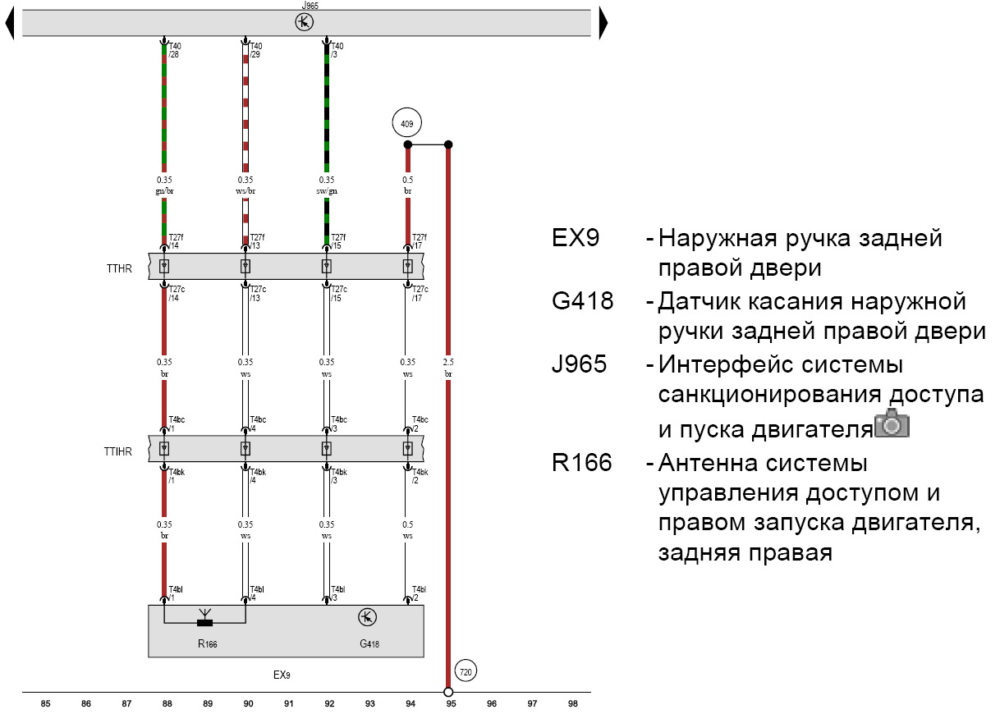
Схема подключения левой двери:
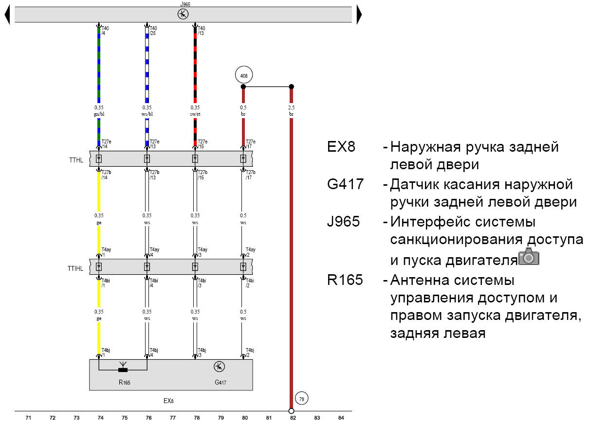
Принцип укладки проводки:
1. От ручек по 4 провода - 3 до блока kessy, 1 на массу.
2. Через резиновую муфту в обшивке необходимо протянуть 3 провода от ручек.
3. Далее провода идут через гофру до дверного разъема.
4. От разъема провода идут в блок kessy.
Шаги:
1. Разобрать двери (скинуть обшивку), демонтировать старые и установить новые ручки по инструкции из ELSA, вытянуть провод из "мокрой" части двери наружу, уложив его так, чтобы его не цепляло стекло при опускании.
2. Протянуть по 3 провода из готовой проводки от ручек до разъема двери, массу примотал к массе на блоках дверей, смотать все с заводской косой и запиновать разъемы между дверью и стойкой, для этого необходимо частично демонтировать проводку из двери.
3. Пинуем провода в разъемы задних дверей.
4. Пинуем ручки в разъемы стоек.
5. По порогу и по жгуту проводки подсветки ног прокладываем провода от стойки двери до блока Kessy и пинуем блок по инструкции.
Блок В7 → Кодирование:
> Байт 0 – Бит 2 (Дверная ручка kessy слева на двери сзади слева, Activation of Kessy door handle, left rear door): Активировать
> Байт 0 – Бит 3 (Дверная ручка kessy слева на двери сзади справа, Activation of Kessy door handle, right rear door): Активировать
> Байт 1 – Бит 2 (Пассивный выход для двери сзади слева отключен, Passive entry left rear door handle): Деактивировать
> Байт 1 – Бит 3 (Пассивный выход для двери сзади справа отключен, Passive entry right rear door handle): Деактивировать
→ Применить
Side Assist¶
Существуют 2 типа радаров. С 2020 года поставляются радары, с которых не надо снимать защиту компонентов и делать калибровку
Параметрии:
| ID оборудования | Параметрия (ODIS XML) |
|---|---|
| 2Q0907685B / 2Q0907686B | (Скачать) |
Блок 19 → Список оборудования:
> 3C (Система смены полосы движения) → установлено
> CF (Система смены полосы движения) → установлено
> Gateway_Component_List - Node_0x4E → coded
> Gateway_Component_List - Node_0x8A → coded
→ Применить
Блок 17 → Кодирование:
> Lane_change_assistant → yes
> Lane_change_assistant_BAP → yes
→ Применить (с перезагрузкой блока)
Блок 13 → Кодирование:
> Control_module_for_lane_assistance → installed
> Lane_change_support: Активировать
→ Применить (с перезагрузкой блока)
Блок 03 → Кодирование:
> Байт 29 – Бит 7: Активировать (1ХХХХХХХ)
→ Применить (с перезагрузкой блока)
Блок 5F → Кодирование:
> Car_Function_List_BAP_Gen2
>> SWA_0x1A: Активировать
>> SWA_0x1A_msg_bus → Дополнительная шина данных (CAN_Extended)
> Car_Function_Adaptations_Gen2
>> menu_display_lane_assistant: Активировать
>> menu_display_lane_assistant_over_threshold_high: Активировать
Кодирование системы кругового обзора (если есть)
Блок 6C → Кодирование:
> equipment_RTA → installed
→ Применить (с перезагрузкой блока)
Блок 76 → Кодирование:
> Rear_Cross_Traffic - Alert → mit RCTA
→ Применить (с перезагрузкой блока)
Блок A5 → Кодирование:
> SWA → Coded
→ Применить (с перезагрузкой блока)
Блок 3C → Кодирование:
> Pre_Sense → without_Pre_Sense
> Rear_Cross_Traffic_Alert → with_RCTA
> ECU for draw bar → no ECU for draw bar
> steering → left-hand drive
> Rear_Axle_Steering → without_Rear_Axle_Steering
> Lane_Departure_Warning_System → with_Lane_Departure_Warning_System
> Front_Sensors_Driver_Assistance_System → with_Front_Sensors_Driver_Assistance_System
> Diagnosis_RCTA → tone_via_PLA
→ Применить (с перезагрузкой блока)
Автосвет¶
Для этого необходим новый переключатель 5G0941431BD и датчик света и дождя 5Q0955547C
Установка переключателя
Блок 09 → Адаптация:
> Aussenlicht_uebergreifend
>> LDS_mit_AFL → Yes
→ Применить
Установка датчика света и дождя
Блок 09 → Адаптация:
> Lighting_Assist_Adaptation
>> Regen_Lichtsensor → LIN_Regen_Licht_Sensor
>> Feuchtesensor → Installed (если есть датчик влажности)
После этих кодировок датчик света и дождя появляется в кодировании 9 блока. Прописываем в него кодировку:
Блок 09 → Кодирование:
>> подблок RLНS:
> 3СА8DD — фары включаются не так поздно, где то при 1200lx
> 3CA8D7 — фары включаются совсем поздно, при 800lx
логин-пароль 31347
MQB EEPROM¶
В MQB платформе точно так же как в и PQ часть настроек можно производить напрямую в EEPROM памяти
Известные адреса памяти BCM¶
За это отвечают адаптации в BCM блоке (09):
Parameter Write Adaptation:
- parameter address: FExxxx # (1)
- parameter value: yyy # (2)
Parameter Read Adaptation:
- parameter address: FExxxx
- Адрес параметра
- Значение в HEX системе. Например,
05h = 5 = 0.5 секунды,0Ah = 10 = 1 секунда,14h = 20 = 2 секунды
| Адрес памяти | Старое значение | Новое значение | Описание |
|---|---|---|---|
| FE0207 | 40 | 20 | Время удержания кнопки для опускания стёкол |
| FE0208 | 40 | 20 | Время удержания кнопки время удержания для поднятия стёкол и складывания зеркал |
Ended: Платформа MQB
Платформа MLB-Evo ↵
Кодирование платформы MLB-Evo¶
Важная информация
При кодировании MLB-Evo платформы необходимо выполнить следующие условия для снятия защиты от записи в блоки:
- открыт капот
- включено зажигание
- включен ручной тормоз
Активация ассистентов¶
Активация Line Assist¶
Для активации данного ассистента не нужна параметрия
Блок A5 (камера ассистентов) → Кодирование:
> ALDW_lane_assist - установлено
→ Применить
логин-пароль 20103
Включаем в меню новые функции
Блок 5F (мультимедия) → Адаптация:
> Car_Function_List_BAP_Gen2
>> LDW_HCA_0x19: Активировать
>> LDW_HCA_0x19_msg_bus: Terminal 15
> Car_Function_Adaptations_Gen2
>> menu_display_Lane_Departure_Warning: Активировать
>> menu_display_Lane_Departure_Warning_over_threshold_high: Активировать
→ Применить
HCA - Указание блоку рулевого управления о наличии Line Assist
Блок 44 (усилитель рулевого) → Кодирование:
Ассистент движения по полосе, связ. с усилителем рул. управления
> Heading Control Assistant: Активировать
(Байт 03 – Бит 1 (heading_control_assist): Активировать)
→ Применить
Блок 09 (бортовая сеть) → Адаптация:
>> Heading Control config → heading_control
→ Применить
логин-пароль 20103
Включаем отображение Line Assist на приборной панели
Блок 17 (комбинация приборов/ActiveInfoDisplay) → Кодирование:
> Lane_assist: yes
→ Применить
Блок A5 (камера ассистентов) → Адаптация:
> Lane_departure_warning_on_state: Selection_over_menu_default_on
→ Применить
> Personalisation_for_lane_departure_warning
>> TT_activated_not_activated: last_setting
→ Применить
Активация ассистента дорожных знаков (автомобиль должен быть оснащен камерой)¶
Для активации данного ассистента может потребоваться параметрия
Автомобильная камера будет считывать дорожные знаки и отображать заданную скорость в кластере.
Блок 5F (мультимедия) → Адаптация:
> Vehicle function list BAP
>> traffic_sign_recognition_0x21: Активировать
> Vehicle menu operation
>> menu_display_road_sign_identification: Активировать
>> menu_display_road_sign_identification_over_threshold_high: Активировать
→ Применить
Блок A5 (камера ассистентов) → Кодирование:
> Байт 1 – Бит 0 (Traffic Sign Recognition (FTE) active): Активировать
→ Применить
логин-пароль 20103
Блок 17 (комбинация приборов/ActiveInfoDisplay) → Кодирование:
> Байт 5 – Бит 2: Активировать
→ Применить
Блок A5 (камера ассистентов) → Адаптация:
> Select: channel numbers indicate end of speed limit
Importance to actively invest Show Valid suffix
View Channel Valid suffix
Corresponding value adjust default: 00100111
→ Применить
логин-пароль 20103
Активация Emergency ассистента¶
Для активации данного ассистента может потребоваться параметрия
Блок A5 (камера ассистентов) → Адаптация:
> EA_emergency_assist → Variant_2
→ Применить
логин-пароль 20103
Блок 13 (Адаптивный круиз-контроль) → Кодирование:
> Emergency_steer_assist: Активировать
→ Применить
Блок 46 (Центральный модуль систем комфорта) → Кодирование:
> central_locking_system_emergency_assist: Активировать
→ Применить
Отображение ассистентов на проекции на лобовое стекло¶
Audi
Блок 82 → Кодирование:
> Road sign detection: not available → available (отображение дорожных знаков)
> Lane Departure Warning: not available → available (отображение Lane Assist)
→ Применить
Движение и управление¶
Отключение запрета на обгон справа при активном круиз-контроле¶
Блок 03 → Кодирование:
> Overtaking_right_prevention: Деактивировать
Уменьшение рывка при трогании с autohold'a¶
Блок 03 → Адаптация:
> Treshold_for_drive_away_assist
>> Data: normal → early
→ Применить
Настройка системы просушки дисков¶
Блок 03 → Адаптация:
> brake disk wiper
>> Param to DOP: normal → strong
→ Применить
Включение системы компенсации бокового увода при разгоне¶
Блок 03 → Адаптация:
> Straigt_line_control
>> Data: Активировать
→ Применить
Безопасность¶
Блокировка дверей (ЦЗ) по зажиганию¶
Audi
Блок 46 → Кодирование:
> central_locking_system_lock_unlock_at_engine_running: not_active: Активировать
→ Применить
Автоматическое открытие авто (только открытие, закрывать автоматически не будет)¶
Audi
Блок 46 → Кодирование:
> automatic_opening: not_active: Активировать
> automatic_closing: not_active: Активировать
> keyless_light_illumination: not_active: Активировать
→ Применить
Блок 46 → Адаптация:
> Personalized_settings_vehicle
>> Keyless_access_automatic_open: not_active: Активировать
→ Применить
Закрытие автомобиля при работающем двигателе¶
Блок 46 → Кодирование:
> Байт 9 – Бит 7: Активировать
→ Применить (с перезагрузкой блока)
Звуковое подтверждение при снятии постановки на охрану¶
При условии наличия штатной сигнализации
Блок 46 → Кодирование:
> Байт 4 – Бит 6: Активировать
→ Применить (с перезагрузкой блока)
Блок 46 → Адаптация:
> Sounder_settings
>> Beeptime_opening_central_locking → double_beep
→ Применить
в ГУ появится соответствующее меню
Открытие/закрытие заведенной машины с кнопки на двери¶
Блок 46 → Кодирование:
> central_locking_system_lock_unlock_then_engine_running: yes
> unlocking_hatchback_via_kessy_at_s_contact_active: yes
Системы комфорта¶
Комфортное складывание зеркал¶
Блок 46 Центральный модуль систем комфорта:
> mirror_retraction_at_comfort_close: Активировать
Режим комфортной посадки водителя¶
Блок 36 Блок Регулировка сиденья водителя → Кодирование:
> Байт 3 – Бит 6: Активировать
→ Применить (с перезагрузкой блока)
Необходимо активировать "Помощь при посадке" и "Сохранить настройку на радиоключ" в ГУ
Режим комфортной посадки пассажира¶
Блок 06 Блок Регулировка сиденья пассажира → Кодирование:
> Байт 3 – Бит 6: Активировать
→ Применить (с перезагрузкой блока)
В отличие от водительского, пассажирское сиденье работает при заведенном двигателе, достаточно просто открыть, закрыть дверь
Регулировка пассажирского сиденья клавишами водительского. Симметрия сидений.¶
Блок 36 Блок Регулировка сиденья водителя → Кодирование:
> Байт 2 – Бит 5: Активировать
> Байт 6 – Бит 1: Активировать
→ Применить (с перезагрузкой блока)
Блок 06 Блок Регулировка сиденья пассажира → Кодирование:
> Байт 2 – Бит 5: Активировать
> Байт 6 – Бит 1: Активировать
→ Применить (с перезагрузкой блока)
В ГУ появится соответствующее меню.
rear window defogger¶
Время и температура обогрева заднего стекла по умолчанию 10 минут и 35 градусов
Блок 46 → Адаптация:
> Rear window defogger
Постановка на ручник при выключении зажигания¶
Блок 03 → Адаптация:
> Automatic parking brake → акт.
→ Применить
Звук парктроника раньше на 15 см¶
Блок 09 → Адаптация:
> Расстояние до бордюрного камня (Distance to curb)
>> Старое значение - 15 сантиметров
>> Новое значение - 30 сантиметров
→ Применить
логин-пароль 31347
Отключение автоматического включения заднего дворника при включении задней передачи¶
Блок 09 → Адаптация:
> Канал 19
>> Старое значение - 0 (дворник выключен)
>> Новое значение - 1 (дворник включен)
→ Применить
логин-пароль 31347
Настройка Webasto не только на прогрев салона, но и двигателя¶
Блок 18 → Кодирование:
> Байт 0 – Бит 3: Активировать
→ Применить (с перезагрузкой блока)
Открытие (сдвиг, вместо приподнимания) люка при удержании кнопки на брелке¶
Audi
Блок CA → Адаптация:
> Control_unit_for_sun_roof_convenience_functions
>> Convenience_opening_target_attitude: Tilting_position → sliding
Управление климатической системой¶
Переназначение кнопки ECO¶
Вместо эко-режима — включение кондиционера на максимум
Блок 08 → Кодирование:
> ACmax/ECO: ECO → ACmax
→ Применить (с перезагрузкой блока)
Раздельное включение подогрева булочек и подогрева спины при включении подогрева сидений¶
Блок 08 → Кодирование:
> Activation_seat_heating_and_backrest_heating: Coupled → ...
→ Применить (с перезагрузкой блока)
Изменение длительности отображения настроек климата для задних пассажиров на MMI¶
Блок 08 → Адаптация:
> MMI display time during rear zone adjustment
>> MMI_display_time_during_rear_zone_adjustment: 10 s → ...
→ Применить
Настройка длительности работы предпускового подогревателя¶
Блок 08 → Адаптация:
> Auxiliary heating run on time:
>> Auxiliary_heating_run_on_time: 10 min
→ Применить
Световое оборудование¶
Изменение количества сигналов поворотника¶
Блок 46 → Адаптация:
> Turn signal control (Управление сигналами поворота)
>> Freeway flashing (Работа указателей поворота на автомагистрали, циклы мигания) → (по умолчанию 3)
→ Применить
Можно также изменить количество вспышек при постановке и снятии с охраны
Не отключать ближний свет при моргании дальним¶
Работает и при выключенных фарах, и при включенном ближнем
Блок 9 → Кодирование:
> lowbeam_at_flash: not_active: Активировать
→ Применить
логин-пароль 31347
Активация задних габаритов в режиме ДХО¶
Блок 9 → Кодирование:
> Байт 2 – Бит 3 (SL_AT_DRL): Активировать
→ Применить
логин-пароль 31347
Настройка (или отключение) вывода сообщений "Включите освещение" на приборную панель¶
Блок 9 → Кодирование:
> headlight_hint_0: lds_at_null
> headlight_hint_1: lds_at_parkinglight
→ Применить
логин-пароль 31347
Настройка функций адаптивного света в меню¶
Блок 9 → Кодирование:
> mmi_adaptive_light: not_active
→ Применить
логин-пароль 31347
Отключение ДХО в меню¶
Блок 9 → Кодирование:
> drl_mmi: Активировать
→ Применить
логин-пароль 31347
Отключение ДХО при поднятии ручника¶
Блок 9 → Кодирование:
> drl_break: Активировать
→ Применить
логин-пароль 31347
Анимация задних фонарей¶
Audi
Работает только на авто с топовой оптикой
Блок 46 → Кодирование:
> SBBR_variant: 0 → 1
→ Применить
Приборная панель¶
Свободное место в баке¶
Блок 17 → Кодирование:
> Байт 10 – Бит 4: Активировать
→ Применить (с перезагрузкой блока)
ODIS E: 006: 0017 → refuel_volume: yes
логин-пароль 20103
Отключение звукового и визуального предупреждения, если при заведенном автомобиле ключ оказался вне салона¶
Блок 17 → Кодирование:
> Leaving_warning → no
→ Применить (с перезагрузкой блока)
Добавление промежуточных шкал на спидометр¶
Audi
Блок 17 → Кодирование:
> Tachometer_erweiterte_Skalenteilung → yes
→ Применить (с перезагрузкой блока)
Отображение замера ускорения¶
Audi
Блок 17 → Адаптация:
> Displayable_content_configuration
>> Drag_indicator: no_display → readout
→ Применить
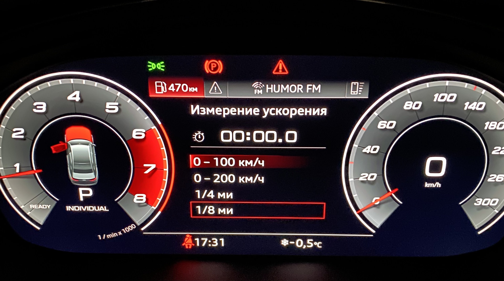
Настройка отображения текущей передачи (в обычном режиме, в S или в обоих)¶
Audi
Блок 02 → Кодирование:
> Block 3 - Functions: → выбираем необходимое
Блок 02 → Адаптация:
> Activate_gear_information_display
>> Activate_gear_information_display: → выбираем необходимое
Отображение на проекционном дисплее¶
Audi
Блок 82 → Кодирование:
> Navigation System: not available → available (Отображение указаний навигационной системы)
> Laptimer_activated: not available → available (Отображение запущенного таймера круга)
> clock: not available → available (Отображение текущего времени)
> Telephone: not available → available (Отображение входящего звонка)
> speedlimiter: not available → available (Отображение включенного лимитера)
> predictive_efficiency_assistant: not available → available (Отображение указаний эко-ассистента)
→ Применить
Тест стрелок¶
Блок 17 → Кодирование:
> Байт 01 – Бит 0 (Демонстрация/Staging): Активировать
→ Применить (с перезагрузкой блока)
логин-пароль 20103
Рекомендация переключения на более высокую передачу (при езде на "ручном" режиме)¶
Audi
Блок 17 → Адаптация:
> Upshift_indicator_in_the_centre_display: no_display меняем на display
→ Применить
логин-пароль 20103
Головное устройство¶
Деактивация AM диапазона в магнитоле¶
Результат: слева внизу вместо ненужного "переключателя" AM/FM появляется иконка настройки радиостанций вручную
Блок 5F → Кодирование:
> byte_14_AM_disable
выбираем «Вкл»
→ Применить (с перезагрузкой блока)
логин-пароль 20103
Беспроводной Car Play¶
Блок 5F → Адаптация:
> Конфигурация
>> Apple_DIO_Wireless: Активировать
>> Google_GAL_Wireless: Активировать
>> wlan_5ghz_switch: Активировать
→ Применить
логин-пароль 20103
Отключение автоматического запуска CarPlay или AndroidAuto при подключении смартфона¶
Audi
Блок 5F → Адаптация:
> function_configuration_media
>> app_start_automatically_on_customer_device: on → off
→ Применить
логин-пароль 20103
Просмотр фото с USB или SD¶
Audi
Блок 5F → Адаптация:
> function_configuration_media
>> picture_viewer: off → on
→ Применить
логин-пароль 20103
Активация MirrorLink (Для автомобилей, где активирован Audi Smartphone Interface)¶
Audi
Блок 5F → Адаптация:
> function_configuration_connectivity
>> Mirror_link: off → on
→ Применить
логин-пароль 20103
Активация видео в движении¶
Блок 5F → Адаптация:
> Speed
>> testmode_video_speed_off → 255.
→ Применить
логин-пароль 20103
Необходимо использовать development mode
Возможность звонков с сим-карты¶
Audi
Для автомобилей, оборудованных слотом под сим-карту возможность звонить с этой симки
Блок 5F → Адаптация:
> Vehicle_configuration
>> Phone_module_operation_mode: data_only → voice_and_data
>> Support_for_response_and_hold: off → on
>> Support_of_threeway_calling: off → on
>> sim_data_only_sms_support: on → off
>> Internal_SIM_card_usage: Never → Always
→ Применить
логин-пароль 20103
Возможность подключения bluetooth-наушников к мультимедиа системе¶
Audi
Блок 5F → Кодирование:
byte_16_Bluetooth_Headphones: off
→ Применить
Отключение блокировки части функций в MMI во время движения¶
Audi
Блок 5F → Адаптация:
> Vehicle_configuration
>> unblock_functions_while_piloted_driving: blocked
→ Применить
логин-пароль 20103
Отключение экрана выбора пользователя¶
Audi
Блок 5F → Адаптация:
> menu_IAA_PSO_over_threshold_high: Деактивировать
> menu_IAA_PSO_clamp_15_off: Деактивировать
> menu_IAA_PSO: Деактивировать
→ Применить
логин-пароль 20103
Звук приветствия водителя¶
Audi
Блок 5F → Адаптация:
> function_configuration_audio
>> welcome_sound: off → on
→ Применить и перезагрузить ГУ
Ended: Платформа MLB-Evo
Платформа PQ26 ↵
Кодирование платформы PQ26¶
Важная информация
- Кодировки проверялись в основной своей массе на Skoda Rapid 16 и 17 м.г.
- Если пункт помечен, как «необходимо проверить», значит более чем об одном успешном применении кодировки не известно.
- Кодировки для машин 19 м.г. и старше идут с пометкой Для 19 м.г.
- Если кодировка подходит только для машин 19 м.г., это указано в названии настройки.
Оффлайн версия
Данный файл был создан пользователем prog-san для сообщества «КОДИРОВКИ VAG» на DRIVE2.RU
Скачать PDF
Автомобили на этой платформе¶
A06 (PQ26)
Škoda Fabia Mk3 (NJ)
Škoda Rapid (NH) — 2016 м.г.
Volkswagen Polo Mk5 (6C)
Коды безопасности блоков¶
Блок 01 — 27971
Блок 03 — 40168+20103(40304), 15081???
Блок 08
Блок 09 — 31347 03147???
Блок 10 — 71679
Блок 13 — 14117
Блок 15
Блок 17 — 25327; 47115(для смены кривых подсветки); (31347??); 20103, 40168
(для старых)
Блок 18 - 80782
Блок 19 – 20103
Блок 20 - 89687
Блок 44 — 17580 (19249)
Блок 5F — 20103
Блок 75 — 20103
Блок A5 — 20103
Освещение ↵
УПРАВЛЕНИЕ ОСВЕЩЕНИЕМ¶
Отключение освещения номерного знака при открытии багажника¶
Блок 09 → Адаптация:
> Leuchte 25KZL HA60-Light_Control_HD_AB_25 - вместо «Always» выбираем значение «Only if closed»
→ Применить
логин-пароль 31347
Деактивация салонного освещения при открытии багажника¶
Блок 09 → Адаптация:
> Interior lighting-Innenlicht bei offenem Heckdeckel einschalten, “active поменять” на значение "not active"
→ Применить
логин-пароль 31347
Перемигивание указателей поворота с LED ДХО¶
Блок 09 → Адаптация:
> Leuchte4TFL LB43-Light_Function_G_4, Blinken links/rechts Hellphase
> Leuchte4TFL LB43-Dimming_GH_4, 0
> Leuchte4TFL LB43-Dimming_Direction_GH_4, minimize
> Leuchte5 TFL RB6-Light_Function_G_5, Blinken links/rechts Hellphase
> Leuchte5 TFL RB6-Dimming_GH_5, 0
> Leuchte5 TFL RB6-Dimming_Direction_GH_5, minimize
→ Применить
логин-пароль 31347
Гашение ДХО при поднятии ручника¶
Блок 09 → Адаптация:
> Daytime running lights-Tagfahrlicht Dauerfahrlicht bei Handbremse abschalten — active
Для 19 м.г.:
> Aussenlicht_Front-Tagfahrlicht_Dauerfahrlicht_bei_Handbremse_abschalten: Активировать
→ Применить
логин-пароль 31347
ДХО только в положении переключателя света AUTO¶
Блок 09 → Адаптация:
> Daytime running lights-Tagfahrlicht nur in Schalterstellung AUTO,active
Для 19 м.г.:
> Aussenlicht_Front — Tagfahrlicht nur in Schalterstellung AUTO,акт.
→ Применить
логин-пароль 31347
Функция CORNER (подсвечивание поворотов противотуманными фарами)¶
Блок 09 → Адаптация:
(Для авто без Coming Home/Leaving Home):
> Leuchte12NL LB40-Light_Function_B_12 — Abbiegelicht links
> Leuchte13NL RB3-Light_Function_B_13 — Abbiegelicht rechts
(Для авто с активированным Coming Home/Leaving Home):
> Leuchte12NL LB40-Light_Function_C_12 – Abbiegelicht links
> Leuchte12NL LB40-Dimming_CD_12 – 100
> Leuchte12NL LB40-Dimming_Direction_CD_12 – maximize
> Leuchte13NL RB3-Light_Function_C_13 – Abbiegelicht rechts
> Leuchte13NL RB3-Dimming_CD_13 – 100
> Leuchte13NL RB3-Dimming_Direction_CD_13 – maximize
Настройка скорости включения/отключения CORNER:
> static AFS light-Lower speed threshold, 0.0 km/h
> static AFS light-Upper speed threshold, 40.0 km/h (можно поставить 50 км/ч)
Включение обеих ПТФ при включении заднего хода (стандартно при наличии функции с завода)
> static AFS light-bei Rueckwaertsfahrt – both sides
→ Применить
логин-пароль 31347
Светодиодная подсветка номера (адаптация)¶
Блок 09 → Адаптация:
> Leuchte25KZL HA60-Type_Of_Load_25 — 2* 5W – меняем значение на «LED Kleinleistung ohne Open Load Diagnose» (LED)
> Leuchte25KZL HA60-Dimming_AB_25 – 100 – меняем на значение «127»
→ Применить
логин-пароль 31347
Активация правого заднего ПТФ¶
На Rapid недоступна. Нет канала, отвечающего отдельно за правую заднюю ПТФ. Провод к лампе отсутствует.
Можно запитать проводом от левого фонаря.
Включение задних габаритов вместе с ДХО (с подсветкой номера и приборки)¶
Блок 09 → Адаптация:
> Daytime running lights-Tagfahrlicht-Dauerfahrlicht aktiviert zusaetzlich Standlicht – active > сохранить
Для 19 м.г.:
> Aussenlicht_Front-Tagfahrlicht-Dauerfahrlicht aktiviert zusaetzlich Standlicht → акт.
→ Применить
логин-пароль 31347
Включение задних габаритов в режиме ДХО (без подсветки номера и приборки)¶
Блок 09 → Адаптация:
> Leuchte23SL HLC7-Light_Function_D_23 → выбираем - Daytime running lights → сохранить
> Leuchte24SL HRA69-Light_Function_D_24 → выбираем → Daytime running lights → сохранить
> Leuchte23SL HLC7-Dimming_CD_23: «75» → сохранить
> Leuchte24SL HRA69-Dimming_CD_24: «75» → сохранить
→ Применить
логин-пароль 31347
Стробоскопы: ПТФ — Дальний свет¶
При такой кодировке невозможно использовать дальний вместе с противотуманками.
Блок 09 → Адаптация:
> Driving light and parking light:
>> max_scheinwerfer_2limitieren: Активировать
Для 19 м.г.:
> Aussenlicht_Front:
>> max_scheinwerfer_2limitieren → in_Betrieb_lassen: Активировать
→ Применить
логин-пароль 31347
Стробоскоп: ПТФ — дальний свет (при моргании дальним)¶
Блок 09 → Адаптация:
> Leuchte12NL LB40-Light_Function_G_12: с not active меняем на Headlamp flasher
> Leuchte12NL LB40-Dimming_Direction_GH_12: с maximize меняем на minimize
> Leuchte13NL RB3-Light_Function_G_13: с not active меняем на Headlamp flasher
> Leuchte13NL RB3-Dimming_Direction_GH_13: с maximize меняем на minimize
→ Применить
логин-пароль 31347
Стробоскоп: Ближний – Дальний свет (при моргании дальним)¶
Блок 09 → Адаптация:
> Leuchte6ABL LB44-Light_Function_C_6, с “not active” меняем на “Headlamp flasher”
> Leuchte6ABL LB44-Dimming_Direction_CD_6, с “maximize” меняем на minimize
> Leuchte7ABL RB5-Light_Function_C_7, с “not active” меняем на “Headlamp flasher”
> Leuchte7ABL RB5-Dimming_Direction_CD_7, “с maximize” меняем на minimize
→ Применить
логин-пароль 31347
Стробоскоп: ДХО LED – Дальний свет¶
Блок 09 → Адаптация:
> Leuchte4TFL LB43-Light_Function_G_4 - Lichthupe (Headlamp flasher)*
> Leuchte4TFL LB43-Dimming_GH_4 → 0
> Leuchte4TFL LB43-Dimming_Direction_GH_4 - minimize
> Leuchte5 TFL RB6-Light_Function_G_5 - Lichthupe (Headlamp flasher)*
> Leuchte5 TFL RB6-Dimming_GH_5 - 0
> Leuchte5 TFL RB6-Dimming_Direction_GH_5 - minimize
→ Применить
логин-пароль 31347
Coming Home (провожание светом)¶
Блок 09 → Адаптация:
> Comfort illumination-Coming Home Verbaustatus – automatic (для авто с датчиком света) или manual (для авто без датчика света)
> Comfort illumination-Menuesteuerung Coming Home Werkseinstellung – active
> Comfort illumination-Menueeinstellung Cominghome – 10 s (продолжительность работы функции)
> Comfort illumination-Coming Home Leuchten – Low beam (через фары ближнего света) или Fog light (через противотуманные фары)
> Comfort illumination-Coming-home Einschaltereignis – Driver door(срабатывание от водительской двери) или Ignition (срабатывание от зажигания)
> Comfort illumination-Helligkeitsschwelle Infrarot-Messung –0
Если выбраны фары ближнего света:
> Leuchte6ABL LB44-Light_Function_B_6 – Coming Home Leaving Home
> Leuchte7ABL RB5-Light_Function_B_7 – Coming Home Leaving Home
Если выбраны противотуманные фары:
> Leuchte12NL LB40-Light_Function_B_12 — Coming Home Leaving Home
> Leuchte13NL RB3-Light_Function_B_13 — Coming Home Leaving Home
Приветствие светом — Leaving-Home (только при наличии датчика света)
> Comfort illumination-Leaving-Home Verbausstatus – Enabled
> Comfort illumination-lho_aktiviert – active
> Comfort illumination-lho_zeit – 10 s
Coming Home/ Leaving Home с фонарями заднего хода
> Leuchte28RFL C3-Light_Function_C_28 – Coming Home Leaving Home
> Leuchte28RFL C3-Dimming_CD_28 – 100
> Leuchte28RFL C3-Dimming_Direction_CD_28 – maximize
Для 19 м.г.:
> Aussenlicht_uebergreifend — Coming Home Verbaustatus – automatic (для авто с датчиком света) или manual (для авто без датчика света)
> Aussenlicht_uebergreifend — Menuesteuerung Coming Home Werkseinstellung – active
> Aussenlicht_uebergreifend — Menueeinstellung Cominghome – 10 s
> Aussenlicht_uebergreifend — Coming Home Leuchten – Low beam (фары ближнего света) или Fog light (противотуманные фары)
> Aussenlicht_uebergreifend — Coming-home Einschaltereignis – Driver door (для авто с датчиком света) или Ignition (для авто без датчика света)
> Aussenlicht_uebergreifend — Helligkeitsschwelle Infrarot — Messung – 72.0
Если выбраны фары ближнего света:
> Leuchte6ABL LB44 — Light_Function_B_6 – Coming Home Leaving Home
> Leuchte7ABL RB5 — Light_Function_B_7 – Coming Home Leaving Home
Если выбраны противотуманные фары:
> Leuchte6ABL LB44 — Light_Function_B_6 – изменить на not active
> Leuchte7ABL RB5 — Light_Function_B_7 – изменить на not active
> Leuchte12NL LB40-Light_Function_B_12 — Coming Home Leaving Home
> Leuchte13NL RB3-Light_Function_B_13 — Coming Home Leaving Home
Приветствие светом — Leaving-Home (только при наличии датчика света)
> Aussenlicht_uebergreifend — Leaving-Home Verbausstatus – Enabled (разрешено)
> Aussenlicht_uebergreifend — lho_aktiviert – active
> Aussenlicht_uebergreifend — lho_zeit – 10 s
→ Применить
логин-пароль 31347
Комфортный указатель поворота (19 м.г.)¶
Возможные названия для поиска: Au?enlicht_Blinker, Komfortblinken, Blinkzyklen.
Блок 09 → Адаптация:
> Aussenlicht_Blinker
>> Komfortblinken_Blinkzyklen – выбрать значение от 1 до 5 (с завода по умолчанию – 3)
→ Применить
логин-пароль 31347
НЕСТАНДАРТНЫЕ СВЕТОВЫЕ РЕШЕНИЯ¶
ДХО (LED) совместно с фарами ближнего света¶
Блок 09 → Адаптация:
> Leuchte4TFL LB43 - Light_Function_C_4 → Abblendlicht links
> Leuchte4TFL LB43 - Dimming_CD_4 → 127
> Leuchte5 TFL RB6 - Light_Function_C_5 → Abblendlicht rechts
> Leuchte5 TFL RB6 - Dimming_CD_5 → 127
→ Применить
логин-пароль 31347
Включение ДХО в режиме габаритных огней (переключатель света в положении габаритные огни, при включении света фар ДХО отключаются)¶
Блок 09 → Адаптация:
> Daytime running lights:
>> Standlicht aktiviert zusaetzlich Tagfahrlicht: Активировать
---
Для 19 м.г.:
> Aussenlicht_Front:
>> Standlicht aktiviert zusaetzlich Tagfahrlicht: Активировать
→ Применить
логин-пароль 31347
Притухание ДХО при включении указателей поворота на стороне работающего поворотника¶
Блок 09 → Адаптация:
> Leuchte4TFL LB43 - Light_Function_G_4 → Blinken links Rampe
> Leuchte4TFL LB43 - Dimming_GH_4 → 0 (или другое значение в %)
> Leuchte4TFL LB43 - Dimming_Direction_GH_4 → minimize
> Leuchte5 TFL RB6 - Light_Function_G_5 → Blinken rechts Rampe
> Leuchte5 TFL RB6 - Dimming_GH_5 → 0 (или другое значение в %)
> Leuchte5 TFL RB6 - Dimming_Direction_GH_5 → minimize
→ Применить
логин-пароль 31347
Мигание ДХО вместе с поворотниками (в одной фазе)¶
Блок 09 → Адаптация:
> Leuchte 4TFL LB43 - Lichtfunktion G 4 → Blinken links Dunkelpase
> Leuchte 4TFL LB43 - Dimmwert GH 4 → 0
> Leuchte 4TFL LB43 - Dimming Direction GH 4 → minimize
> Leuchte 5TFL RB6 - Lichtfunktion G 5 → Blinken rechts Dunkelpase
> Leuchte 5TFL RB6 - Dimmwert GH 5 → 0
> Leuchte 5TFL RB6 - Dimming Direction GH 5 → minimize
→ Применить
логин-пароль 31347
Притухание передних габаритов на стороне работающего указателя поворота¶
Блок 09 → Адаптация:
> Leuchte2SL VLB22 - Light_Function_E_2 → Blinken links Rampe
> Leuchte2SL VLB22 - Dimming_EF_2 → 0 (или другое значение в %)
> Leuchte2SL VLB22 - Dimming_Direction_EF_2 → minimize
> Leuchte3SL VRB36 - Light_Function_E_3 → Blinken rechts Rampe
> Leuchte3SL VRB36 - Dimming_EF_3 → 0 (или другое значение в %)
> Leuchte3SL VRB36 - Dimming_Direction_EF_3 → minimize
→ Применить
логин-пароль 31347
US-Standlicht Blinker (габаритные огни через указатели поворота вполнакала)¶
Блок 09 → Адаптация:
> Leuchte 0 BLK VL B35 - Light_Function_C_0 → Standlicht
> Leuchte 0 BLK VL B35 - Dimming_CD_0 → 35
> Leuchte 0 BLK VL B35 - Dimming_Direction_CD_0 → maximize
> Leuchte 0 BLK VL B35 - Light_Function_E_0 → Blinken links Dunkelpase
> Leuchte 0 BLK VL B35 - Dimming_EF_0 → 0
> Leuchte 0 BLK VL B35 - Dimming_Direction_EF_0 → minimize
> Leuchte1BLK VRB23 - Light_Function_C_1 → Standlicht
> Leuchte1BLK VRB23 - Dimming_CD_1 → 35
> Leuchte1BLK VRB23 - Dimming_Direction_CD_1 → maximize
> Leuchte1BLK VRB23 - Light_Function_E_1 → Blinken rechts Dunkelpase
> Leuchte1BLK VRB23 - Dimming_EF_1 → 0
> Leuchte1BLK VRB23 - Dimming_Direction_EF_1 → minimize
→ Применить
логин-пароль 31347
US-Standlicht nur bei Standlicht (габаритные огни через указатели поворота вполнакала только в положении переключателя света – габаритные огни)¶
Блок 09 → Адаптация:
> Leuchte 0 BLK VL B35 - Light_Function_A_0 → Standlicht Vorn
> Leuchte 0 BLK VL B35 - Dimming_AB_0 → 35
> Leuchte 0 BLK VL B35 - Light_Function_C_0 → Abblendlicht links
> Leuchte 0 BLK VL B35 - Light_Function_D_0 → Blinken links Dunkelpase
> Leuchte 0 BLK VL B35 - Dimming_CD_0 → 0
> Leuchte 0 BLK VL B35 - Dimming_Direction_CD_0 → minimize
> Leuchte 0 BLK VL B35 - Light_Function_E_0 → Blinken links Hellphase
> Leuchte 0 BLK VL B35 - Dimming_EF_0 → 100
> Leuchte 0 BLK VL B35 - Dimming_Direction_EF_0 → maximize
> Leuchte1BLK VRB23 - Light_Function_A_1 → Standlicht Vorn
> Leuchte1BLK VRB23 - Dimming_AB_1 → 35
> Leuchte1BLK VRB23 - Light_Function_C_1 → Abblendlicht rechts
> Leuchte1BLK VRB23 - Light_Function_D_1 → Blinken rechts Dunkelpase
> Leuchte1BLK VRB23 - Dimming_CD_1 → 0
> Leuchte1BLK VRB23 - Dimming_Direction_CD_1 → minimize
> Leuchte1BLK VRB23 - Light_Function_E_1 → Blinken rechts Hellphase
> Leuchte1BLK VRB23 - Dimming_EF_1 → 100
> Leuchte1BLK VRB23 - Dimming_Direction_EF_1 → maximize
→ Применить
логин-пароль 31347
Гашение передних габаритов при включении ближнего/дальнего света фар¶
Блок 09 → Адаптация:
> Leuchte2SL VLB22 - Light_Function_A_2 → Standlicht — меняем на Standlicht vorn
> Leuchte3SL VRB36 - Light_Function_A_3 → Standlicht — меняем на Standlicht vorn
→ Применить
логин-пароль 31347
Перемигивание передних габаритов в противофазе с указателями поворотов¶
Вариант А - во время перемигивания на одной стороне — на другой стороне габарит погашен
Блок 09 → Адаптация:
> Leuchte2SL VLB22 - Light_Function_E_2 → Blinken links Dunkelpase
> Leuchte2SL VLB22 - Dimming_EF_2 → 100
> Leuchte2SL VLB22 - Dimming_Direction_EF_2 → maximize
> Leuchte3SL VRB36 - Light_Function_E_3 → Blinken rechts Dunkelpase
> Leuchte3SL VRB36 - Dimming_EF_3 → 100
> Leuchte3SL VRB36 - Dimming_Direction_EF_3 → maximize
→ Применить
Блок 09 → Адаптация:
> Leuchte2SL VLB22 - Light_Function_E_2 → Blinken links Dunkelpase
> Leuchte2SL VLB22 - Light_Function_F_2 → Blinken rechts aktiv
> Leuchte2SL VLB22 - Dimming_EF_2 → 100
> Leuchte2SL VLB22 - Dimming_Direction_EF_2 → maximize
> Leuchte3SL VRB36 - Light_Function_E_3 → Blinken rechts Dunkelpase
> Leuchte3SL VRB36 - Light_Function_F_3 → Blinken links aktiv
> Leuchte3SL VRB36 - Dimming_EF_3 → 100
> Leuchte3SL VRB36 - Dimming_Direction_EF_3 → maximize
→ Применить
логин-пароль 31347
Увеличение яркости ламп заднего хода¶
Блок 09 → Адаптация:
> Leuchte28RFL C3 — Dimmer АВ 28 - 100% → меняем на 125%
→ Применить
логин-пароль 31347
Увеличение яркости ламп передних ПТФ¶
Блок 09 → Адаптация:
> Leuchte12NL LB40 - Dimmer АВ 12 - 100% → меняем на 125%
> Leuchte13NL RB3 - Dimmer АВ 12 - 100% → меняем на 125%
→ Применить
логин-пароль 31347
Увеличение яркости ламп ближнего и дальнего света¶
Необходимо понимать, что эти операции влекут за собой снижение срока службы ламп.
Примерный вариант снижения срока службы приведен в таблице ниже.

Блок 09 → Адаптация:
> Leuchte6ABL LB44 - Dimming_AB_6 → 100% - меняем на 120%
> Leuchte7ABL RB5 - Dimming_AB_7 → 100% - меняем на 120%
> Leuchte9FL RB7 - Dimming_AB_9 → 100% - меняем на 120%
> Leuchte8FL LB42 - Dimming_AB_8 → 100% - меняем на 120%
→ Применить
логин-пароль 31347
Перемигивание ламп заднего хода с поворотниками при включении задней скорости и аварийной сигнализации¶
Блок 09 → Адаптация:
> Leuchte28RFL C3 - Light_Function_C_28 → Blinken Links Hellphase
> Leuchte28RFL C3 - Light_Function_D_28 → Blinken Rechts Hellphase
> Leuchte28RFL C3 - Dimming_CD_28 → 0
> Leuchte28RFL C3 - Dimming_Direction_CD_28 → minimize
→ Применить
логин-пароль 31347
Включение стоп-сигнала со стороны открытой двери¶
Блок 09 → Адаптация:
> Leuchte20BR LA70 - Light_Function_C_20 → Tuerausstiegslichtv links (при откр.двери с левой стороны).
> Leuchte20BR LA70 - Dimming_CD20 → 100
> Leuchte20BR LA70 - Dimming_Direction_CD20 → maximize
> Leuchte21BR RC8 - Light_Function_C_21 → Tuerausstiegslichtv rechts (при откр.двери с правой стороны)
> Leuchte21BR RC8 - Dimming_CD21 → 100
> Leuchte21BR RC8 - Dimming_Direction_CD21 → maximize
→ Применить
логин-пароль 31347
Включение боковых указателей поворота при открытии багажника¶
Блок 09 → Адаптация:
> Leuchte16BLK SLC11 - Light_Function_C_16 → Rear lid open
> Leuchte16BLK SLC11 - Dimming_CD_16 → 50
> Leuchte17 BLK SR A72 - Light_Function_C_17 → Rear lid open
> Leuchte17 BLK SR A72 - Dimming_CD_17 → 50
→ Применить
логин-пароль 31347
ОБОЗНАЧЕНИЯ ЛАМП¶
Передние¶
- Leuchte7ABL RB5 - ближний свет справа
- Leuchte6ABL LB44 - ближний свет слева
- Leuchte12NL LB40 - левая противотуманка
- Leuchte13NL RB3 - правая противотуманка
- Leuchte4TFL LB43 - левый ДХО
- Leuchte5 TFL RB6 - правый ДХО
- Leuchte0 BLK VL B35 - левый передний поворотник
- Leuchte1BLK VRB23 правый передний поворотник
- Leuchte3SL VRB36 - передний правый габарит
- Leuchte2SL VLB22 - передний левый габарит * Leuchte9FL RB7 - дальний справа
- Leuchte8FL LB42 - дальний слева
- Leucht
Задние¶
- Leuchte20BR LA70 - левый задний стоп
- Leuchte21BR RC8 - правый задний стоп
- Leuchte22BR MC9 - дополнительный стоп
- Leuchte25KZL HA60 - подсветка номера
- Leuchte28RFL C3 - задний ход
- Leuchte26NSL A65 - ПТФ задняя левая
- Leuchte18BLK HLA71 - задний левый поворотник
- Leuchte19BLK HRC10 - задний правый поворотник
- Leuchte23SL HLC7 - левый задний габарит
- Leuchte24SL HRA69 - правый задний габарит
Боковые¶
- Leuchte16BLK SLC11 - левый боковой поворотник
- Leuchte17 BLK SR A72 - правый боковой поворотник
Внутренние¶
- Leuchte11WARNBLK TASTERC54 - световая сигнализация
- Leuchte15 SAFE LED C55 - светодиод охраны на двери
- Leuchte27 KL58XS C67 – Terminal 58xs dimmer
- Leuchte29 KL30G A69 - Klemme 30G (плафон освещения вещевого ящика)
- Leuchte30 INNENLICHT A68 – интерьерная лампа
- Leuchten14LOCKUNLOCKC61 – светодиод открытия/закрытия центрального замка
Назначение использования канала лампы¶
- Abbiegelicht links – подсветка левого поворота CORNER
- Abbiegelicht rechts – подсветка правого поворота CORNER
- Nebellicht links – левая противотуманка
- Nebellicht rechts – правая противотуманка
- Parking light – парковочные огни
- Parking light links – левые парковочный огни
- Parking light right – правые парковочные огни
- ComingHome LeavingHome – подсветка провожания домой и встречи
- Abblendlicht links - ближний свет левая фара
- Abblendlicht rechts - ближний свет правая фара
- Fernlicht links – при дальнем левом огне
- Fernlicht rechts – при дальнем правом огне
- Lichthupe generell – включается при моргании дальним
- Left high beam – левый дальний свет
- Right high beam – правый дальний свет
- Headlamp flasher – моргание дальним
- Tagfahrlicht – ДХО
- Daytime running lights – ДХО
- Blinken links Hellphase – при загорании левого поворотника
- Blinken links Dunkelphase – при притухании левого поворотника
- Blinken rechts Hellphase – при загорании правого поворотника
- Blinken rechts Dunkelphase - при притухании правого поворотника
- Blinken links aktiv (beide Phase) – постоянно при работе левого поворотника
- Blinken rechts aktiv (beide Phase) - постоянно при работе правого поворотника
- Warnblinktaster – световая сигнализация
- SafeLED – работа охранной сигнализации
- Brake light – стоп-сигналы
- Nebelschlusslicht – при включении заднего птф
- Rueckfahrlicht - свет фары заднего хода
- Klemme 30G - плафон освещения вещевого ящика
- Interior light – салонный свет
- LockUnlockLED – открытие/закрытие центрального замка
- Standlicht allgemein (Schlusslicht, Positionslicht, Begrenzungslicht) – в режиме габаритов
- Parklicht links (beidseitiges Parklicht aktiviert li & re) – в режиме парк. огня лев.(заж. выкл.)
- Parklicht rechts - горит в режиме парк. огня прав.(заж. выкл.)
- Heckdeckel offen – загорается при открытии багажника
- Heckdeckel geschlossen – загорается при закрытии багажника
- Dimmung klemme 58xs – регулируется яркость регулятором из салона
- Terminal 58xs dimmer
- Tuerausstiegslicht hinten rechts – зад.прав.дверь
- Tuerausstiegslicht vorn links – перед.лев.дверь
- Tuerausstiegslicht vorn rechts – перед.прав.дверь
- Tuerausstiegslichtv links – при откр.двери с левой стороны Tuerausstiegslichtv rechts – при откр.двери с правой стоhоны
Типы ламп¶
- Blink* Leuchten – поворотник
- LED Blink* Leuchten – светодиодный поворотник
- LED Kleinleistung ohne Open Load Diagnose –
- allgemeine Scheinwerfer – обычный прожектор (галогенка)
- allgemeineLEDmitOpenLoadDiagnose – обычный светодиод
- Brems* Leuchten
- LEDdritteBrems* Leuchte
- 3* 5W
- 2* 5W
- allgemeineGluehlampe27W - ДХО
- allgemeineGluehlampe12W – салонный свет
- allgemeineGluehlampe6W – лампа переднего габарита
- Low beam – фара
ОБОЗНАЧЕНИЯ ЛАМП¶
Передние¶
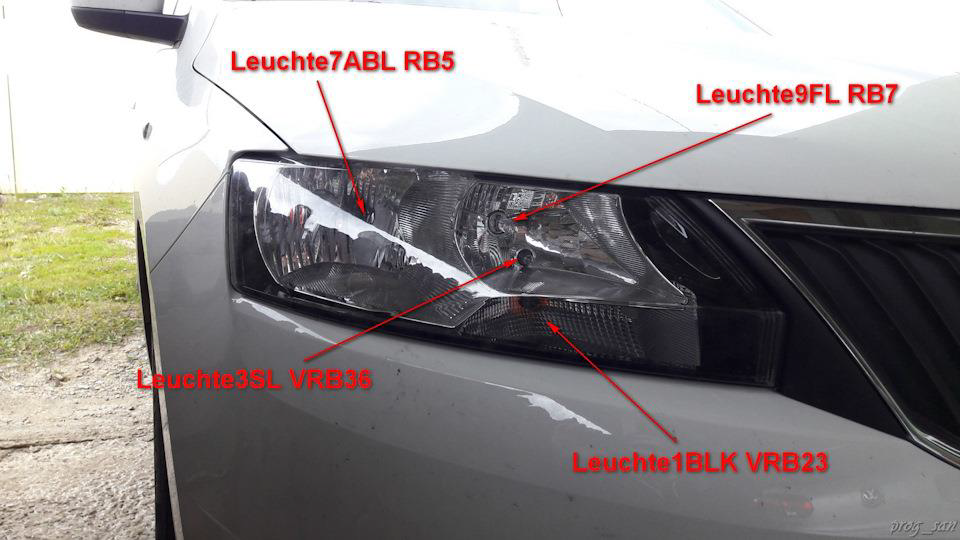
Leuchte9FL RB7 — дальний справа
Leuchte7ABL RB5 — ближний свет справа
Leuchte1BLK VRB23 — правый передний поворотник
Leuchte3SL VRB36 — передний правый габарит

Leuchte8FL LB42 — дальний слева
Leuchte6ABL LB44 — ближний свет слева
Leuchte0 BLK VL B35 — левый передний поворотник
Leuchte2SL VLB22 — передний левый габарит
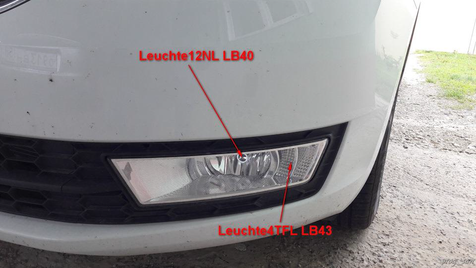
Leuchte12NL LB40 — левая противотуманка
Leuchte4TFL LB43 — левый ДХО
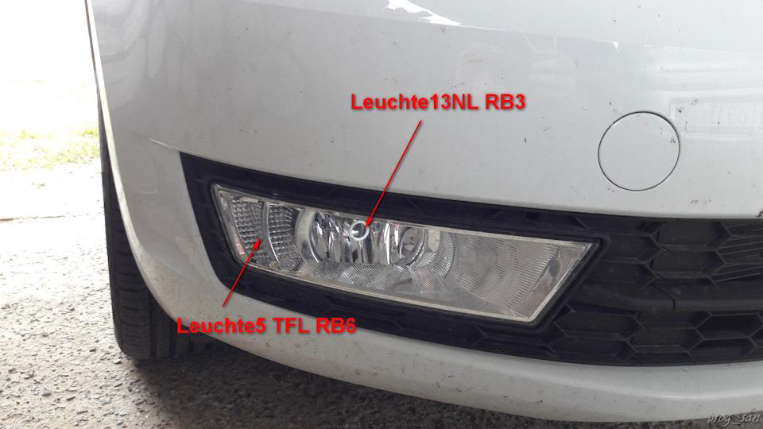
* Leuchte13NL RB3 — правая противотуманка
* Leuchte5 TFL RB6 — правый ДХО
Ззадние¶
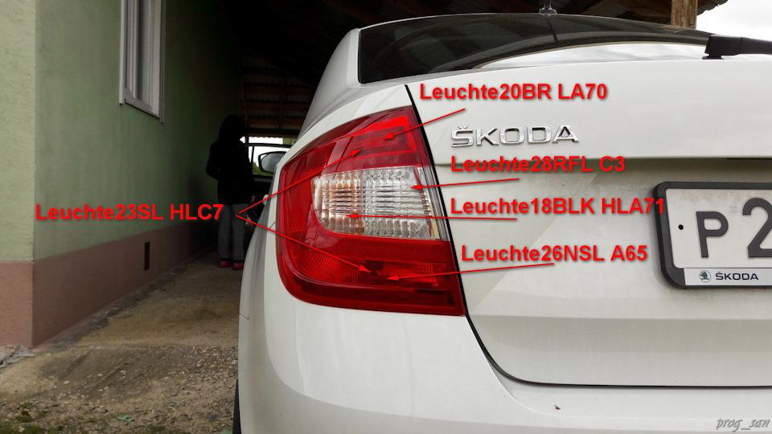
Leuchte20BR LA70 — левый задний стоп
Leuchte26NSL A65 — ПТФ задняя левая
Leuchte18BLK HLA71 — задний левый поворотник
Leuchte23SL HLC7 — левый задний габарит
Leuchte28RFL C3 — задний ход
Leuchte21BR RC8 — правый задний стоп
Leuchte19BLK HRC10 — задний правый поворотник
Leuchte24SL HRA69 — правый задний габарит
Leuchte28RFL C3 — задний ход
Leuchte22BR MC9 — дополнительный стоп
Leuchte25KZL HA60 — подсветка номера
Боковые¶

Leuchte16BLK SLC11 — левый боковой поворотник
Leuchte17 BLK SR A72 — правый боковой поворотник
Салон¶

Leuchte11WARNBLK TASTERC54 световая сигнализация
Leuchte15 SAFE LED C55 — светодиод охраны на двери
Leuchte27 KL58XS C67 – Terminal 58xs dimmer
Leuchte29 KL30G A69 — Klemme 30G (плафон освещения вещевого ящика)

Leuchte30 INNENLICHT A68 – интерьерная лампа
ЗАМЕНА ЛАМП НА СВЕТОДИОДЫ¶
ЗАДНИЕ ФОНАРИ¶
Светодиодные лампы заднего хода¶
Блок 09 → Адаптация:
> Leuchte28RFL C3 - Type_Of_Load_ 28 → LED Blinkleuchten
> Leuchte28RFL C3 - Dimming_AB_28 → 100
→ Применить
логин-пароль 31347
Светодиодные лампы стоп-сигналов¶
Блок 09 → Адаптация:
> Leuchte20BR LA70 - Type_Of_Load_20 → LED Bremsleuchten
> Leuchte20BR LA70 - Dimming_AB_20 → 100
> Leuchte21BR RC8 - Type_Of_Load_21 → LED Bremsleuchten
> Leuchte21BR RC8 - Dimming_AB_21 → 100
→ Применить
логин-пароль 31347
Светодиодные лампы в задние габариты¶
Блок 09 → Адаптация:
> Leuchte23SL HLC7 - Type_Of_Load_23 → Allgemeine LED mit Open Load Diagnose
> Leuchte23SL HLC7 - Dimming_AB_23 → 100
> Leuchte24SL HRA69 - Type_Of_Load_24 → Allgemeine LED mit Open Load Diagnose
> Leuchte24SL HRA69 - Dimming_AB_24 → 100
→ Применить
логин-пароль 31347
Светодиодные лампы в задние ПТФ¶
Блок 09 → Адаптация:
> Leuchte26NSL A65 - Type_Of_Load_26 → Allgemeine LED mit Open Load Diagnose
> Leuchte26NSL A65 - Dimming_AB_26 → 100
→ Применить
логин-пароль 31347
Светодиодные лампы в задние указатели поворота¶
Блок 09 → Адаптация:
> Leuchte18BLK HLA71 - Type_Of_Load_18 → LED Blinkleuchten
> Leuchte18BLK HLA71 - Dimming_AB_18 → 100
> Leuchte19BLK HRC10 - Type_Of_Load_19 → LED Blinkleuchten
> Leuchte19BLK HRC10 - Dimming_AB_19 → 100
→ Применить
логин-пароль 31347
ПЕРЕДНЯЯ ОПТИКА:¶
Светодиодные лампы в передние указатели поворота¶
Блок 09 → Адаптация:
> Leuchte0BLK VL B35 - Type_Of_Load_0 → LED Blinkleuchten
> Leuchte0BLK VL B35 - Dimming_AB_0 → 100
> Leuchte1BLK VRB23 - Type_Of_Load_1 → LED Blinkleuchten
> Leuchte1BLK VRB23 - Dimming_AB_1 → 100
→ Применить
логин-пароль 31347
Светодиодные лампы в передние габаритные огни¶
Блок 09 → Адаптация:
> Leuchte2SL VLB22 - Type_Of_Load_2 → Allgemeine LED mit Open Load Diagnose
> Leuchte2SL VLB22 - Dimming_AB_2 → 100
> Leuchte3SL VRB36 - Type_Of_Load_3 → Allgemeine LED mit Open Load Diagnose
> Leuchte3SL VRB36 - Dimming_AB_3 → 100
→ Применить
логин-пароль 31347
Ended: Освещение
СТЕКЛООЧИСТИТЕЛИ / ДАТЧИК ДОЖДЯ И СВЕТА¶
Сервисное положение стеклоочистителей в меню Swing¶
Блок 09 → Адаптация:
> Windshield wiper - Menuesteuerung Frontwischer: Активировать
→ Применить
логин-пароль 31347
Парковка дворников при выключенном зажигании¶
Решает проблему с остановкой дворников на пол пути посредине стекла при выключении зажигания.
Блок 09 → Адаптация:
> Windshield wiper:
>> Wischer stop bei KL15 aus: Деактивировать
→ Применить
логин-пароль 31347
Дополнительный взмах передних стеклоочистителей (дотирка капель)¶
Блок 09 → Адаптация:
> Rear Window Wiper - Traenenwischen Heck: Активировать
> Windshield wiper - Traenenwischen Front Status: Активировать
→ Применить
логин-пароль 31347
Изменение чувствительности датчика света¶
Блок 09 → Адаптация:
> Assistance light functions-Lichtsensorempfindlichkeit → normal (нормально) изменить на "non sensitive" (не чувствителен)
→ Применить
логин-пароль 31347
Отключение омывателя фар¶
Блок 09 → Адаптация:
> Windshield wiper-SRA Waschzeit → 2300 ms заменить на 0
→ Применить
логин-пароль 31347
Увеличение интервала и времени срабатывания омывателей фар¶
Параметр, отвечающий на какой раз омывания стекла сработают фароомыватели.
Если сменить стандартные “9” на 1 - то сработают каждый раз.
Блок 09 → Адаптация:
> Windshield wiper-Anzahl Betaetigungen Frontwaschanlage pro SRA Aktivierung → вводим «15»
→ Применить
Параметр, отвечающий за время удержания подрулевого рычажка омывания лобового стекла, чтобы сработали омыватели фар
Блок 09 → Адаптация:
> Windshield wiper — SRA Verzoegerungszeit → меняем стандартные 0 мс на, к примеру, 1500 мс (1,5 сек)
→ Применить
Сколько секунд будут работать фароомыватели
Блок 09 → Адаптация:
> Windshield wiper — SRA Waschzeit → стандартное значение 600 мс.
→ Применить
логин-пароль 31347
Отключение срабатывания заднего стеклоочистителя при включении заднего хода¶
Блок 09 → Адаптация:
> Rear Window Wiper-Komfortwischen Heck → not active
→ Применить
логин-пароль 31347
Автоматическое включение заднего дворника¶
Задний дворник начинает срабатывать при продолжительной непрерывной работе передних дворников на 2 скорости.
Блок 09 → Адаптация:
> Rear Window Wiper - Automatisches Heckwischen: Активировать
→ Применить
логин-пароль 31347
Положение размораживания дворников¶
Блок 09 → Адаптация:
> Windshield wiper - Frontwischer Abtauposition → Abtauposition temperaturunabhaengig Referenzwischen
→ Применить
логин-пароль 31347
КЛИМАТ / ОБОГРЕВ ЗЕРКАЛ И СТЕКОЛ¶
Увеличение времени обогрева заднего стекла¶
Вводимое значение измеряется в секундах, например: 1200 / 60 = 20 (минут) На автомобилях 2016 мг и старше значение 15 s означает стандартные 10 минут, 30 s означает 20 минут.
Блок 09 → Адаптация:
> Window heater - Heckscheibenheizung Zeitwert: 600 s (10 мин) – меняем на 1200 s (20 мин)
→ Применить
логин-пароль 31347
Запоминание последнего состояния рециркуляции климат-контроля¶
Блок 08 (5JA 907 044) → Длинное кодирование:
Байт 03 – Бит 1: Активировать
Запоминание последнего состояния рециркуляции печки без климата¶
Блок 08 (5JA 820 045 B) → Длинное кодирование:
Байт 04 – Бит 4: Активировать
Адаптация заслонок климат-контроля¶
Блок 08 → Базовые параметры 04:
Группа 1: прочитать
ПРИ ЭТОМ НИЧЕГО ДЕЛАТЬ С МАШИНОЙ НЕ НУЖНО.
После окончания адаптации высветится сообщение ENDANSCHLAEGE LERNEN.
Процесс адаптации заслонок завершен.
ДВЕРИ, СТЕКЛА, ЦЗ, БРЕЛОК ДУ И ШТАТНАЯ СИГНАЛИЗАЦИЯ¶
Отключение предупреждения о не пристёгнутом ремне безопасности¶
Блок 17 (5JA 920 7XX) → Длинное кодирование:
> Байт 00 – Бит 2-4: заменить на значение 00
→ Применить
Выключение (звука/сообщения) о включенном зажигании при открытии двери¶
Блок 17 (5JA 920 7XX) → Адаптация:
> Ignition active message - actuator — было “Driver door“, ставим “No display“
→ Применить
Включение (звука/сообщения) о включенном зажигании при открытии любой двери¶
Блок 17 (5JA 920 7XX) → Адаптация:
> Ignition active message - actuator — было “Driver door“, ставим “All Doors“
→ Применить
Автоматическая блокировка/разблокировка дверей для комплектаций Entry/Activ без Swing/Bolero:¶
Блок 09 → Адаптация:
> Access control - automatisches Verriegeln bei Geschwindigkeit: Активировать
> Access control - automatisches Entriegeln: Активировать
> Access control - Autolock Autounlock wirkt auf Heck —→ active
→ Применить
Блок 09 → Адаптация:
> ZV Autolock - Autolock_Autounlock_wirkt_auf_Heck → акт.
> ZV Autolock - automatisches_Entriegeln → акт.
> ZV Autolock - Automatisches_Verriegeln_bei_Geschwindigkeit → акт.
→ Применить
логин-пароль 31347
Автоматическое закрытие дверей при наборе скорости 15 км/ч и открытие их по извлечению ключа.¶
Возможные варианты
Clobal Entriegelung - все двери разом
Einzeltuerentriegelung – водительская дверь открывается отдельно
Seitenselektive Oeffnung – все двери на одной стороне
Individuell selective Oeffnung Kessy – отдельное открытие при использовании системы безключевого доступа
Блок 09 → Адаптация:
> Access control - automatisches Verriegeln bei Geschwindigkeit: Активировать
> Access control - automatisches Entriegeln: Активировать
> Access control - ZV Türentriegelung → было Clobal Entriegelung
→ Применить
логин-пароль 31347
Работа радиоканала брелока при запущенном двигателе¶
Блок 09 → Адаптация:
> Access control - Funk bei Klemme 15 ein: Активировать
→ Применить
Блок 09 → Адаптация:
> ZV allgemein - Funk bei Klemme 15 ein: Активировать
→ Применить
логин-пароль 31347
Работа сигнала при выключенном зажигании¶
Блок 09 → Адаптация:
> Auxiliary functions - Signalhorn ohne KL15: Активировать
→ Применить
логин-пароль 31347
Активация штатной сигнализации¶
Блок 09 → Длинное кодирование:
> Байт 12 – Бит 0: Активировать
→ Применить
Блок 09 → Адаптация:
> Access control - Akustischer Alarm Signalhorn: Активировать
→ Применить
Блок 09 → Адаптация:
> Access control - DWA Alarmverzoegerung → меняем с "immidiat_driver_door_contact_thatcham" на "delay_driver_door_lock_cylinder_skoda"
→ Применить
Для применения требуется перечитать настройки блока из памяти (поставить/снять машину на штатную охрану на 5-10 сек)
логин-пароль 31347
Включение звукового подтверждения открытия и закрытия штатным пультом (без штатной сигнализации)¶
+ пункт управления функцией в меню Swing2
Блок 09 → Длинное кодирование:
> Байт 5 – Бит 0: Активировать
> Байт 5 – Бит 2: Активировать
> Байт 5 – Бит 4: Активировать
→ Применить
Блок 09 → Адаптация:
> Acknowledgement signals — Akustische Rueckmeldung entriegeln: "Active" (звук при открытии)
> Acknowledgement signals — Akustische Rueckmeldung verriegeln: "Active" (звук при закрытии)
> Acknowledgement signals — Dauer der Akustischen Rueckmeldung vom Einfachhorn: kurz (kurz — короткий сигнал (по ощущениям только начинается сигнал и тут же обрывается); normal — нормальный, чуть длиннее чем короткий (звук как при обычном начатии на "бибикалку"))
> Acknowledgement signals - Optical feedback during locking → Decelerate
> Acknowledgement signals - Optische Rueckmeldung Komfortschliessen: Активировать
> Acknowledgement signals - Optische Rueckmeldung 3.Bremsleuchte → not active
> Acknowledgement signals — Menuesteuerung akustische Rueckmeldung: "Active" (пункт в Swing'е в разделе "отпирание/запирание…")
> Acknowledgement signals - Akustische Rueckmeldung global: Активировать
> Acknowledgement signals — Akustische Rueckmeldung Signalhorn: "Active" (звук)
→ Применить
логин-пароль 31347
Сигнализация вскрытия авто через штатный звуковой сигнал (19 м.г.)¶
Блок 09 → Адаптация:
> Anti-theft device - Akustischer_Alarm_Signalhorn → акт.
> Anti-theft device - anti_theft_alarm_system → акт.
> Anti-theft device - Alarmsignal → frequency modulated
> Anti-theft device - Sirenen_Alarmzahl → 10 Alarme
→ Применить
логин-пароль 31347
Работа стеклоподъемников при выключенном зажигании¶
Блок 09 → Адаптация:
> Access control 2 - Freigabenachlauf FH bei Kl 15 aus → not active меняем на active
→ Применить
Блок 09 → Адаптация:
> ZV Komfort (Fensterheber) - Freigabenachlauf FH bei Kl 15 aus → акт.
→ Применить
логин-пароль 31347
Настройка продолжительности работы стеклоподъемника водительской двери после выключения зажигания¶
Блок 09 → Адаптация:
> Access control 2-FH SAD Kl15Aus Freigabezeit → 600 s (10 мин после выключения зажигания)
→ Применить
Блок 09 → Адаптация:
> ZV Komfort (Fensterheber)-FH SAD Kl15Aus Freigabezeit → 600 s
→ Применить
логин-пароль 31347
Работа стеклоподъемников при открытой двери¶
Блок 09 → Адаптация:
> Access control 2-Freigabenachlauf FH bei Tueroeffnen → not active, ставим active
→ Применить
Блок 09 → Адаптация:
> ZV Komfort (Fensterheber)-Freigabenachlauf FH bei Tueroeffnen: Активировать
→ Применить
логин-пароль 31347
Комфортное управление стеклоподъемником двери водителя с штатного брелока¶
Блок 09 → Адаптация:
> Access control 2 - Comfort closing: Активировать
> Access control 2 - Comfort opening: Активировать
> Access control 2 - Fahrertuerbedienung Fensterheber oeffnen: Активировать
> Access control 2 - Fahrertuerbedienung Fensterheber schliessen: Активировать
> Access control 2 - Funk Komfort oeffnen: Активировать
> Access control 2 - Funk Komfort schliessen: Активировать
> Access control 2 - Komfortbedienung global: Активировать
> Access control 2 - Menuesteuerung Komfortbedienung einstellbar → adjustable
→ Применить
У кого простая магнитола blues достаточно активировать:
Блок 09 → Адаптация:
> Access control 2 - Comfort closing: Активировать
> Access control 2 - Comfort opening: Активировать
> Access control 2 - Funk Komfort oeffnen: Активировать
> Access control 2 - Funk Komfort schliessen: Активировать
> Access control 2 - Komfortbedienung global: Активировать
→ Применить
логин-пароль 31347
Автозакрытие стекла двери водителя при закрывании авто (19 м.г.)¶
Блок 09 → Адаптация:
> ZV Komfort (Fensterheber) - комфортное закрывание → акт.
> ZV Komfort (Fensterheber) - комфортное открывание → не акт.
> ZV Komfort (Fensterheber) - BAP_Komfortschliessen → акт.
> ZV Komfort (Fensterheber) - Fahrertuerbedienung Fensterheber oeffnen → акт.
> ZV Komfort (Fensterheber) - Fahrertuerbedienung Fensterheber schliessen → акт.
> ZV Komfort (Fensterheber) - Funk Komfort oeffnen → акт.
> ZV Komfort (Fensterheber) - Funk Komfort schliessen → акт.
> ZV Komfort (Fensterheber) - Komfortbedienung global → акт.
> ZV Komfort (Fensterheber) - Menuesteuerung Komfortbedienung einstellbar → adjustable
> ZV Komfort (Fensterheber) - Schliesszylinder_Komfort_oeffnen → акт.
> ZV Komfort (Fensterheber) - Schliesszylinder_Komfort_schliessen → акт.
→ Применить
логин-пароль 31347
Панель приборов ↵
ПАНЕЛЬ ПРИБОРОВ¶
Пункт «Место в бак延
Блок 17 (5JA 920 7XX) → Длинное кодирование:
> Байт 10 – Бит 4: Активировать
→ Применить
Тест стрелок¶
Блок 17 (5JA 920 7XX) → Длинное кодирование:
> Байт 01 – Бит 0: Активировать
→ Применить
Таймер круга¶
Блок 17 (5JA 920 7XX) → Длинное кодирование:
> Байт 01 – Бит 3: Активировать
→ Применить
Включение напоминания "Извлеките ключ"¶
Блок 17 (5JA 920 7XX) → Длинное кодирование:
> Байт 01 – Бит 4: Активировать
→ Применить
Предупреждение о включенных задних противотуманных фонарях при превышении порога скорости¶
Блок 09 → Адаптация:
> Driving light and parking light - Nebelschlusslicht Warngeschwindigkeit →
>> 0 — предупреждение отключено.
>> 1 … 255 — скоростной лимит срабатывания предупреждения (рекомендуется 60)
→ Применить
логин-пароль 31347 (для старых 20103)
Корректировка скорости на спидометре¶
Работает только до 03, показания спидометра особо не меняются, как врал на 5-10 км/ч так и врет.
Но пробег начинает ощутимо отклоняться от реального.
При значении 03 пробег увеличивается примерно на 300 метров на 10 км.
При заводской кодировке 00 увеличение составляет 200 метров на 40 км.
Блок 17 (5JA 920 7XX) → Длинное кодирование:
> 03 байт
>> 00, окружность шин: стандарт
>> 01, окружность шин: вариант1
…
>> 07, окружность шин: вариант7
→ Применить
Сброс напоминания о прохождении ТО¶
Блок 17 (5JA 920 7XX) → Адаптация:
> SIE - time from inspection → вместо пробега в днях задаем значение 0
> SIE - distance from inspection → вместо пробега в км задаем значение 0
→ Применить
> ESI - Resetting ESI → выбираем Reset
→ Применить
логин-пароль 25327 (для старых 20103)
Изменение интервала ТО (по пробегу и по времени)¶
Блок 17 (5JA 920 7XX) → Адаптация:
> ESI - maximum value km-driving distance/inspection → 30000 km - меняем на нужное, например 15000
> ESI - minimum value km-driving distance/inspection → 15000 km - меняем на нужное, например 7500
> ESI - maximum value of time between inspections → 730 d - меняем на нужное
> ESI - minimum value of time between inspections → 365 d - меняем на нужное
→ Применить
логин-пароль 25327 (для старых 20103)
Часы в режиме 12ч¶
Блок 17 (5JA 920 7XX) → Длинное кодирование:
> Байт 06 – Бит 7: Активировать (12ч) / Деактивировать (24ч)
→ Применить
Эко-советы¶
Блок 17 (5JA 920 7XX) → Длинное кодирование:
> Байт 01 – Бит 7: Активировать
→ Применить
Блок 19 → Длинное кодирование:
> Байт 13 – Бит 0: Активировать
→ Применить
Блок 19 → Адаптация:
> Показ программы эффективности - Совет → аэродинамическое сопротивление: закройте стёкла/люк.
> Показ программы эффективности - Совет → торм. двиг.: выж. сцепл. только при обор. меньше 1300.
> Показ программы эффективности - Совет → при пуске двигателя не нажимайте педаль акселератора.
> Показ программы эффективности - Совет → включайте рекомендованные передачи (только МКП).
> Показ программы эффективности - Совет → используйте систему Старт-стоп.
> Показ программы эффективности - Совет → включите систему Старт-стоп.
> Показ программы эффективности - Совет → климатическая установка: закройте стёкла/люк.
> Показ программы эффективности - Совет → используйте положение D.
> Показ программы эффективности - Совет → не нажимайте педаль акселератора при неподвижном а/м.
> Показ программы эффективности - Совет → крыша открыта: выключите клим. установку (клавиша АС)
→ Применить
После кодирования необходимо перейти в меню настроек отображаемой информации панели в магнитоле и включить пункт «Эко-советы».
Корректировка показаний расхода топлива¶
Пример расчета
Берем расход бортового компьютера, отображаемый на панели - 6,3 л на 100км.
Берем реальный расход по наблюдения - например, 6,8 л на 100км.
Далее выполняем расчет пропорций.
Берем показания бортового компьютера за 100%
6,3 - 100%
6,8 - Х
Х = 6,8 * 100 /6,3
Х = 107,9%, после округления 108%
В поле значения адаптации указываем это значение. В среднем, бортовой компьютер занижает показания на 0,4 литра.
По умолчанию – 100%, шаг 1%, минимум — 85%, максимум — 115%
Блок 17 (5JA 920 7XX) → Адаптация:
Display correction of consumptions and operating range: 100%
→ Применить
логин-пароль 25327 (для старых 20103)
Указатель уровня топлива - регулировка / калибровка¶
Заводская настройка: -12,8; диапазон значений: от -8,0 до 8,0
Отрицательные значения опускают топливную иглу, положительные значения поднимают ее. Это также влияет на расчет оставшегося объема.
Блок 17 (5JA 920 7XX) → Адаптация:
Offset for tank calibration values:
- Complete tank calibration: -12.8 l поменять на нужное
→ Применить
логин-пароль 25327 (для старых 20103)
Настройка источника синхронизации часов¶
- internal clock – внутренние часы
- GPS – получение с блока GPS. Время берется по Гринвичу (GMT+0)
- радиоконтроллер – время с блока 5F
- неактивный – не выполнять синхронизацию
Блок 17 (5JA 920 7XX) → Адаптация:
- Source for synchronization of time: internal clock
→ Применить
логин-пароль 25327 (для старых 20103)
Изменение температуры предупреждения о скользкой дороге («Снежинка»)¶
Работает по принципу петли гистерезиса: срабатывание - по нижнему уровню, отключение - по-верхнему.
Блок 17 (5JA 920 7XX) → Адаптация:
outside_temperature:
- outside_temperature: 4 # Температура вывода предупреждения
- p_ice_warning_exit_temperature: 6 # Температура отключения вывода предупреждения
- Source for synchronization of time: internal clock
→ Применить
логин-пароль 25327 (для старых 20103)
Включение подсветки приборной панели в режиме стояночных огней¶
Блок 17 (5JA 920 7XX) → Адаптация:
Illumination_algorithm:
- Scale_switching_algorithm: lds (было parking_light)
→ Применить
логин-пароль 25327 (для старых 20103)
Смена языка панели приборов¶
Блок 17 (5JA 920 7XX) → Адаптация:
- Language version: поменять на нужный
→ Применить
логин-пароль 25327 (для старых 20103)
Продолжительность отображения напоминания о сервисе¶
Блок 17 (5JA 920 7XX) → Адаптация:
time_parameter_display:
- hmi_t_NextServiceAnz_ms: 5s поменять на нужное значение
→ Применить
логин-пароль 25327 (для старых 20103)
Продолжительность отображения предупреждающих сообщений¶
Блок 17 (5JA 920 7XX) → Адаптация:
time_parameter_display:
- hmi_t_NextWarning_ms: 6s поменять на нужное значение
→ Применить
логин-пароль 25327 (для старых 20103)
КРИВЫЕ ПОДСВЕТКИ ПАНЕЛИ ПРИБОРОВ¶
Итак, все мы видели эти каналы в 17 блоке (далее рассказывать буду на примере 5JA-920-740-A, можно распространять на 5JA 920 7XX):
ENG105831-ENG101574-dimming_characteristic_curve_adjustment_clock_dial_day-X1,00 …
ENG105831-ENG99777-dimming_characteristic_curve_adjustment_clock_dial_day-Y1,00 …
ENG105832-ENG101574-dimming_characteristic_curve_adjustment_clock_dial_night-X1,00 …
ENG105832-ENG99777-dimming_characteristic_curve_adjustment_clock_dial_night-Y1,02 …
ENG105834-ENG101574-dimming_characteristic_curve_adjustment_gauge-X1,00 …
ENG105834-ENG99777-dimming_characteristic_curve_adjustment_gauge-Y1,03 …
ENG105835-ENG101574-dimming_characteristic_curve_adjustment_indicator_lights-X1,00 …
ENG105835-ENG99777-dimming_characteristic_curve_adjustment_indicator_lights-Y1,05 …
ENG119878-ENG101574-dimming_characteristic_curve_adjustment_internal_phototransistor-X1,00 00 …
ENG119878-ENG99777-dimming_characteristic_curve_adjustment_internal_phototransistor-Y1,00 00 …
ENG105836-ENG101574-dimming_characteristic_curve_adjustment_middle_display_main_field-X1,00 …
ENG105836-ENG99777-dimming_characteristic_curve_adjustment_middle_display_main_field-Y1,01 …
Их много, по 5-6 значений X и Y по каждой позиции. Пару настроек X и Y назовем кривая.
Получается имеется 6 кривых:
- dimming_characteristic_curve_adjustment_clock_dial_day — яркость подсветки шкал для дневного режима
- dimming_characteristic_curve_adjustment_clock_dial_night — яркость подсветки шкал для ночного режима
- dimming_characteristic_curve_adjustment_gauge — яркость подсветки стрелок приборов
- dimming_characteristic_curve_adjustment_indicator_lights — яркость дополнительных индикаторов панели приборов
- dimming_characteristic_curve_adjustment_internal_phototransistor — кривая нормировки показаний датчика света панели
- dimming_characteristic_curve_adjustment_middle_display_main_field — яркость дисплея в средней части панели приборов
Дневной режим от ночного отличается включенным ближнем светом. Горит ближний — режим ночной.
Попробуем адаптировать значения кривых яркости подсветки шкал для дневного\ночного режима и кривой нормировки показаний датчика света панели.
Значения каналов задаются в 16-ричной системе. HEX. Отложив значения X и Y на графике, получаем следующие картинки:
Яркость подсветки шкал
Кривая нормировки показаний датчика света панели
Работаем только с шестнадцатеричными числами. Перевод в десятичную систему делал для построения графиков.
Вариант модификации настроек яркости:
- dimming_characteristic_curve_adjustment_clock_dial_day,
- dimming_characteristic_curve_adjustment_clock_dial_night
Кривые задания яркости подсветки шкал для дневного и ночного режима. Работаем только с Y значениями. 0 — подсветка отключена. 253 — максимальная яркость. Для того, чтобы не срабатывало отключение подсветки шкал в сумерках — необходимо избавится от 0 значений в кривой дневной подсветки (выделены в таблице желтым). Значения в зеленых столбцах могут быть скорректированы по желанию. Для дневного режима убрано полное гашение шкал в сумерках. Для ночного режима предложена кривая с более тусклым свечением при высоких показания датчика.
dimming_characteristic_curve_adjustment_internal_phototransistor
Кривая нормируем показания датчика света к интервалу 0.253. 0 -темно, 253 — максимально светло. Можно сделать выход кривой на максимальное значение более резким. Работаем только с координатой X.
Как известно, приборка настроена так, чтобы уведомлять отключением подсветки шкал о забытом включенном ближнем в сумерках.
Многим такой алгоритм работы не по душе — решение:
ENG105831-ENG99777-dimming_characteristic_curve_adjustment_clock_dial_day-Y1,03
ENG105831-ENG100480-dimming_characteristic_curve_adjustment_clock_dial_day-Y2,05
ENG105831-ENG100773-dimming_characteristic_curve_adjustment_clock_dial_day-Y3,08
Изменением значений этих трех каналов — получите не отключаемую подсветку шкал приборов в сумерках. Изначально, эти каналы имеет 0 значения.
Не рекомендую менять направление изменения яркости, либо выкручивать значения на максимальные. Себе отключение подсветки в сумерках не настраивал — все устраивает.
Код доступа надо подбирать. Попробуйте 47115.
Ended: Панель приборов
ТОРМОЗА И ШИНЫ¶
Настройка ASR при старте (подавление вибраций при старте)¶
Для зимних условий предпочтительное значение Maximum — исключает пробуксовку при старте.
Блок 03 → Адаптация:
> Starting vibration reduction → выбираем нужное значение: Strong (сильно), Normal (нормально), Maximum (максимально)
→ Применить
логин-пароль 40168
Активация Hill Hold Control (Помощник при старте на подъеме)¶
Блок 03 → Длинное кодирование:
> Байт 16 – Бит 0: Активировать
→ Применить
Адаптация (настройка) Hill Hold Control¶
Блок 03 → Адаптация:
> Berganfahrassistent → выбираем нужное значение: early (рано), normal (нормально), в конце
→ Применить
логин-пароль 40168
Просушка тормозных дисков¶
Есть 3 уровня значения: schwach (1-слабый), stark (3-сильный), mittel (2-средний)
Блок 03 → Адаптация:
> Brake disk drying → выбрать Stufe 2 (mittel) (Уровень 2 (средний))
→ Применить
логин-пароль 40168
Настройка HBA (тормозной ассистент)¶
Предпочтительно значение – sport
Блок 03 → Адаптация:
> Hydraulic brake assistant → выбрать normal (нормально) (или выбрать нужное значение)
→ Применить
логин-пароль 40168
Настройка давления в тормозной системе¶
Блок 03 → Адаптация:
> Overboost in brake system → стандартно значение 6 — (выбрать нужное значение)
→ Применить
логин-пароль 40168
Добавление пунктов меню ESC-sport, ESC-off (для а/м с ESC)¶
Блок 03 → Длинное кодирование:
> Для ESC Sport + ASR выкл
Байт 16:
Бит 04: Деактивировать
Биты 03, 06: Активировать
> Для ESC On/Off
Байт 16:
Бит 04: Деактивировать
Бит 05 — активировать
> Для ESC On/Off + ASR выкл
Байт 16:
Бит 04: Деактивировать
Биты 03, 05: Активировать
> Для ESC On/Off + ESC Sport
Байт 16:
Бит 04: Деактивировать
Бит 06: Активировать
→ Применить
логин-пароль 40168
Активация XDS¶
Активация НЕВОЗМОЖНА
Блоки ESC/ABS производства фирмы TRW (Electronic Brake Control — EBC 460) не поддерживают этот функционал.
SW: 6R0 614 517 BQ, 6R0 614 517 CA или 6R0 614 517 CG
Порог срабатывания системы EDS¶
Блок 03 → Длинное кодирование:
> Байт 17 – Биты 0-3
01 – 1.6MPI/66 kW/90 л.с./155 nm
02 – 1.6MPI/81 kW/110 л.с./155 nm с МКПП
03 – 1.6MPI/81 kW/110 л.с./155 nm с АКПП
04 – 1.0TSI/70 kW/95 л.с./160 nm и 1.2TSI/66 kW/90 л.с./160 nm
05 – 1.2TSI/81 kW/110 л.с./175 nm и 1.0TSI/81 kW/110 л.с./200 nm
06 – 1.4TSI/92 kW/125 л.с./200 nm c DSG
07 – 1.4TDI/66 kW/90 л.с./230 nm с МКПП
08 – 1.4TDI/66 kW/90 л.с./230 nm с DSG
09 – 1.6TDI/85 kW/115 л.с./250 nm
→ Применить
логин-пароль 40168
Косвенный контроль давления в шинах TPMS¶
Система первого поколения
Блок 03 → Длинное кодирование:
> Байт 16 – Бит 1: Активировать
> Байт 16 – Бит 2: Активировать
> Байт 19 – Бит 7: Активировать
→ Применить
логин-пароль 40168
Блок 5F → Адаптация:
> Car_Function_List_BAP_Gen2 - tire_pressure_system_0x07 → изменить с «не активир.» на "«активир.»
> Car_Function_List_BAP_Gen2 - tire_pressure_system_0x07_msg_bus → изменить с «Шина данных Привод» на «Шина данных Комфорт»
> Car_Function_Adaptations_Gen2 - menu_display_rdk → изменить с «не активир.» на «активир»
→ Применить
логин-пароль 20103
Блок 17 (5JA-920-7XX) → Длинное кодирование:
> Байт 04 – Бит 0: Активировать
→ Применить
Блок 03 → Адаптация:
> индикатор контроля давления в шинах → выбрать «по умолчанию», «чувствителен» или «нечувствителен»
> система контроля давления в шинах, выбор шин → выбрать значение «обычные», «неизвестно» или «SST-шины»
→ Применить
логин-пароль 20103
Включение отображения конкретного колеса:
Блок 03 → Длинное кодирование:
> Байт 15 – Бит 3: Активировать (вместо 61 - 69)
→ Применить
логин-пароль 40168
ДИНАМИКА И УПРАВЛЕНИЕ¶
Перенастройка АКПП-6 (Aisin)¶
Блок 02 → Длинное кодирование:
> Байт 00 – Биты 00-23 – 000348 (стандарт) или вводим другое значение (000852)
→ Применить
Так же, можно не заходя в длинное кодирование, скопировать в поле "новая кодировка" текущую кодировку и заменить в ней первые 6 знаков "000348" на "000852".
Существуют блоки и с семи значной кодировкой, например: "0101000", соответственно меняем в ней первые 7 знаков с "0101000" на "0000008".
На что можно поменять в данной АКПП:
— 0000328 — заводская кодировка Skoda Rapid и некоторых моделей VW
— 0000072 — заводская кодировка Skoda Octavia A5FL
— 0000008 — кодировка Audi A3, Skoda Octavia A5, VW Touran (до 2005 MY)
— 0008201 — кодировка Audi TT
— 0008264 — кодировка Audi A3, VW Jetta
— 0008520 — кодировка VW Tiguan – альтернативная кодировка
2015-2016 блок 09G 927 749хх (шести значная кодировка):
— 000348 – Стоковая
с 2016 модельного года, блок 09G 927 749xx, и с 2017 встречается 09G 927 158 AL (уже 20-ти байтная кодировка).
Самая распространенная и единственная кодировка моделей Октавия, Рапид и Поло седан: – 010100000C000000000000000000000000000000.
Также возможны и другие варианты кодировки таких БУ:
— 010200000C000000000000000000000000000000 — для дв. 1.4TFSI и 1.8TFSI
— 010500000C000000000000000000000000000000 — для двигателей 1.6 CPDA.
Соответственно при 20-ти байтной кодировке, 010100000C0 … до конца нули, меняем первые 7-мь цифр — например на 00000080C … до конца нули (Audi A3) — сохранить!
Перекодировка педали газа (уменьшение отклика на нажатие)¶
Блок 01 → Длинное кодирование:
> Байт 00 – Биты 0-2 – выбираем значение 02 (Производитель: Audi) – выполнить. * для авто с круиз-контролем не рекомендуется — будут глюки круиза
→ Применить
Изменение настройки ЭУР RAPID (настройка профиля вождения)¶
Блок 44 → Длинное кодирование:
> Байт 00 – Бит 7: Активировать. Значение меняется с 00 на 80.
→ Применить
Блок 44 → Адаптация
> Characteristic curve of steering assistance → выбираем нужное значение (Driving profile selection button, Comfort, Automatic, Dynamic, Default)
→ Применить
* предпочтительно значение – Dynamic
> Driving Profile switchover (Переключение профиля вождения) → выбираем нужное значение (Incremental controlled over time (возрастающий с течением времени), direct…(непосредственно…)) → сохранить.
* предпочтительно значение – Direct
→ Применить
логин-пароль 17580
Активация функции TSC¶
Компенсация увода в сторону, компенсация разности крутящего момента на ведущих колесах при резком ускорении — только для 1.4TSI
Блок 44 → Длинное кодирование:
> Байт 00 – Бит 2-3: Активировать. Значение байта меняется с 00 на 04
→ Применить
логин-пароль 17580
Деактивация функции старт-стоп¶
Блок 19 → Адаптация:
> EM_start_stop_requirement_ambient_temperature
>> Minimum_temperature → -50.0 °C меняем значение на 50.
Или по напряжению:
>> Start Stop voltage limit → 7,6В меняем на 12,1В
→ Применить
логин-пароль 20103
МУЛЬТИМЕДИА¶
Изменение звучания Swing/Bolero (Arkamys)¶
Arkamys будет звучать правильно только если в магнитоле есть соответствующая параметрия. Заливается VCP или ODIS, файл этой параметрии недоступен.
Блок 5F → Длинное кодирование:
> Байт 11 – Бит 2 (пункты Skoda Surround и Virtual Subwoofer): Активировать
> Байт 08 – Бит 6 (VDA Low Frequency Input): Активировать
→ Применить
Изменение стартовой заставки Swing/Bolero¶
Блок 5F → Длинное кодирование:
> Байт 18: меняем значение 00 на предпочтительное
01-vRS
02-SCOUT
03-Laurin & Klement
04-GreenLine
07-MonteCarlo (на свинг 2 и 3)
08-SportLine (только на свинг 3))
→ Применить
При очередном первичном включении магнитолы (после снятия с сигналки) наблюдаем новую заставку.
Деактивация AM диапазона в ГУ Swing/Bolero¶
Блок 5F → Длинное кодирование:
> Байт 14 – Бит 1: Активировать
Изменение вида отображения автомобиля в меню «Состояние автомобиля»¶
Блок 5F → Длинное кодирование:
> Байт 01 – Биты 0~23:
– 035201, модель: Skoda Rapid
– 035203, модель: Skoda Rapid Spaceback
- 035331, модель: Skoda Rapid FL (NH3)
– 036200, модель: Skoda Fabia
– 036202, модель: Skoda Fabia Combi
– 037301, модель: Skoda Octavia лифтбек
– 038401, модель: Skoda Superb лифтбек
→ Применить
Изменение времени отображения заставки при включении магнитолы¶
Блок 5F → Адаптация:
> Time display for start screen → 2.0 s - выставляем нужное
→ Применить
20103
Активация динамиков задних дверей после самостоятельной доустановки (Swing/Bolero/Amundsen)¶
Блок 5F → Длинное кодирование:
> Байт 04 – Биты 0~31 → выбираем
- ВЕ000000 (4 канала / 6 пассивных динамиков)
Если в задние двери установлена 2-х компонентная акустика с твитерами, соответственно выбираем:
— FF000000 (4 канала / 8 пассивных динамиков).
→ Применить
Активация низкочастотного аналогового входа AUX-IN¶
Блок 5F → Длинное кодирование:
> Байт 8 – Бит 4: Активировать
→ Применить
Активация USB-входа¶
Блок 5F → Длинное кодирование:
Байт 19 – Биты 6~7 → выбираем значение
- 80 (USB функциональность) или
- С0 (USB и iPhone функциональность)
→ Применить
Изменение чувствительности микрофона¶
Блок 5F → Адаптация:
> Microphone sensitivity → 0 dB – выставить необходимое значение.
→ Применить
20103
Показания БК при выключенном зажигании¶
Блок 5F → Адаптация:
> Car_Function_Adaptations_Gen2-menu_display_board_computer_clamp_15_off → переключить с not activated, на activated
→ Применить
20103
Режим автошколы на Swing/Bolero¶
Блок 5F → Адаптация:
> Car_Function_Adaptations_Gen2-menu_display_driving_school → переключить с not activated на activated
> Car_Function_Adaptations_Gen2-menu_display_driving_school_over_threshold_high → переключить с not activated на activated
> Car_Function_List_CAN_Gen2-Driving_school → переключить с Not available на available
> Car_Function_List_CAN_Gen2-Driving_school_msg_bus → переключить с Not available на Comfort data bus
→ Применить
20103
Активация режима «Бездорожье» Swing 3¶
Блок 5F → Адаптация:
> Car_Function_Adaptations_Gen2 - menu_display_compass_clamp_15_off → активир.
> Car_Function_Adaptations_Gen2 - menu_display_compass_over_threshold_high → активир.
> Car_Function_Adaptations_Gen2 - menu_display_compass → активир.
→ Применить
20103
Активация Инженерного меню (Engineering Testmode) Swing 2¶
Только с использованием VAS5054 и ODIS-E
Запускаем программу ODIS-E
Выбираем проект (SK25X или SK26X) → пуск
Выбираем блок 5F → Diagnostic session (Сессия диагностики)
в открывшемся окошке выбираем:
Development mode (режим разработчика) → Execute (выполнить)
Далее: Adaptation/parameter (Адаптация) →
Developer mode (режим разработчика) → вводим значение Activated
Настройка параметров звука в Инженерном меню¶
Запуск инженерного меню производится продолжительным удержанием кнопки Setup до появления на экране меню: Engineering Testmode.
Выбираем: Software System - Audio Management →
в пункте Loudness ставим галочку
далее выбираем: Input Gain Offset и в пунктах ниже увеличиваем уровень на 13 дБ
* FM source — +12
* Media File Player — +9
* BT audio — +13
Выходим из Инженерного меню и в настройках звука при необходимости подстраиваем баланс и эквалайзер.
После завершения всех звуковых настроек Инженерное меню целесообразно деактивировать. Есть мнение, что в активированном состоянии оно разряжает аккумуляторную батарею.
Включение перехода с зимнего на летнее время¶
Блок 5F → Адаптация:
- Summertime: automatic, manual изменить на Europe
→ Применить
20103
Подключение второго телефона. Swing 3¶
Один телефон можно использовать для звонков, другой для прослушивания музыки.
Блок 5F → Адаптация:
- Dtmf_without_active_call: Активировать
- Support_second_phone: Активировать
- Support_for_response_and_hold: Активировать
→ Применить
20103
Блок 17 (5JA 920 7XX) → Длинное кодирование:
> Байт 11 – Бит 6: Активировать (telephone2_BAP)
→ Применить
ДООСНАЩЕНИЕ¶
[PR-PWH] Ассистент освещения, Датчик дождя, Coming/Leaving Home¶
Номера датчика
5Q0 955 547A — 2016MY
5Q0 955 547B — 2017MY
Датчики взаимозаменяемые. Т.е. на 2016MY подходит 547A и наоборот.
Блок 09 → Кодирование:
> Байт 06 – Биты 0-1 выбрать 02 Датчик света установлен [PR-8K3/8K9+8N6]
> Байт 06 – Бит 3: Активировать
> Байт 07 – Биты 0-1 выбрать 03 тип функции Coming/Leaving: Seat/Skoda/Volkswagen
> Байт 07 – Бит 5: включить
> Байт 13 – Бит 5: включить
→ Применить (с перезагрузкой блока)
логин-пароль 31347
Блок 09 → Кодирование:
> В списке устройств выбираем 5Q0 955 547B датчик света/дождя (RLHS)
> Байт 0 – Байты 1-2 – выбираем 185E или 984D (для машин с обогревом лобового стекла)
В итоге кодировка принимает значение — 00 18 5E
Для машин с обогревом лобового стекла — 00 98 4D
→ Применить (с перезагрузкой блока)
логин-пароль 31347
Блок 09 → Адаптация:
> Assistance light functions-Assistenzfahrlicht bei Regen – active
> Assistance light functions-AFL Zeitverzoegerung – 2 000 ms
> Assistance light functions-Lichtsensorempfindlichkeit – normal
> Assistance light functions-Assistance_lighting_sensitivity_ajustable — present
> Comfort illumination-Coming Home Verbaustatus – automatic
> Comfort illumination-Menuesteuerung Coming Home Werkseinstellung – active
> Comfort illumination-Menueeinstellung Cominghome – 10 s
> Comfort illumination-Coming Home Leuchten – Low beam
> Comfort illumination-Coming-home Einschaltereignis – Driver door
> Comfort illumination-Helligkeitsschwelle Infrarot-Messung – 72.0
> Comfort illumination-Leaving-Home Verbausstatus – Enabled
> Comfort illumination-lho_aktiviert – active
> Comfort illumination-lho_zeit – 10 s
> Comfort illumination-Helligkeitsschwelle Forward-Messung – 100
> Driving light and parking light-Menueeinstellung CHO LHO – Menuesteuerung Zeit aktivieren
> Windshield wiper-Regensensor aktivieren – activated
> Rear Window Wiper-Komfortwischen Heck – active
> Rear Window Wiper-Menuesteuerung Komfortwischen HW – active
→ Применить
логин-пароль 31347
Corner с поддержкой функций Coming Home/Leaving Home через ПТФ
Блок 09 → Адаптация:
> Leuchte12NL LB40-Light_Function_B_12 — было Abbiegelicht links, ставим nicht aktive – сохранить
> Leuchte13NL RB3-Light_Function_B_13 — было Abbiegelicht rechts, ставим nicht aktive – сохранить
> Leuchte12NL LB40-Light_Function_C_12 – Abbiegelicht links
> Leuchte12NL LB40-Dimming_CD_12 – 100
> Leuchte13NL RB3-Light_Function_C_13 – Abbiegelicht rechts
> Leuchte13NL RB3-Dimming_CD_13 – 100
→ Применить
логин-пароль 31347
Для 19 м.г.:
Блок 09 → Кодирование:
> Байт 0 – Байты 1-2 – выбираем 185E (984D)
или прописываем готовую кодировку: 00185Е (00984D)
→ Применить (с перезагрузкой блока)
логин-пароль 31347
Блок 09 → Адаптация:
> Функции вспомогательного освещения-Rain/light sensor → Rain/light sensor
> Функции вспомогательного освещения-Humidity sensor → установл.
> Функции вспомогательного освещения-Will Beam assistant: responsivity adjustable via BAP → имеется
> Aussenlicht_uebergreifend-Light rotary sw. with AFL → Да
> Windshield wiper-rain_sensor_function → установл.
> Функции вспомогательного освещения-Assistenzfahrlicht bei Regen – акт.
> Функции вспомогательного освещения-AFL Zeitverzoegerung – 0 ms
> Функции вспомогательного освещения-Lichtsensorempfindlichkeit – нормально
> Aussenlicht_uebergreifend-Coming Home Verbaustatus – автоматически
> Aussenlicht_uebergreifend-Menuesteuerung Coming Home Werkseinstellung – акт.
> Aussenlicht_uebergreifend-Menueeinstellung Cominghome – 10 s
> Aussenlicht_uebergreifend-Coming Home Leuchten – Ближний свет
> Aussenlicht_uebergreifend-Coming-home Einschaltereignis – Driver door
> Aussenlicht_uebergreifend-Helligkeitsschwelle Infrarot-Messung – 72.0
> Aussenlicht_uebergreifend-Leaving-Home Verbausstatus – разрешено
> Aussenlicht_uebergreifend-lho_aktiviert – акт.
> Aussenlicht_uebergreifend-lho_zeit – 10 s
> Aussenlicht_uebergreifend-Helligkeitsschwelle Forward-Messung – 100
> Aussenlicht_uebergreifend-Menueeinstellung CHO LHO – Menuesteuerung Zeit aktivieren
> Aussenlicht_uebergreifend-Lichtdrehschalter_mit_Nebellicht_bei_Assistenzfahrlicht – Да
> Windshield wiper — Regensensor aktivieren – акт.
→ Применить
логин-пароль 31347
[PR-8X0] Замена штатных галогенных фар на штатные ксеноновые¶
Блок 09 → Кодирование:
> Байт 06 – Биты 5-6 – меняем 00 на 20
→ Применить (с перезагрузкой блока)
Блок 09 → Адаптация:
> Leuchte6ABL LB44 - Type_Of_Load_6 – выбираем Xenon Abblendlicht
> Leuchte7ABL RB5 - Type_Of_Load_7 – выбираем Xenon Abblendlicht
→ Применить
логин-пароль 31347
[PR-PXE] Установка би-ксенона¶
Блок 09 → Кодирование:
> Lower_beam_lamp_typ - GDL
→ Применить (с перезагрузкой блока)
Блок 09 → Адаптация:
> Leuchte 0 BLK VL B35 — оно же левый передний поворотник
>> Dimming_AB_0 — 128
>> Light_Function_A_0 — Blinken links Hellphase
>> Type_Of_Load_0 — LED Blinkleuchten
> Leuchte 1 BLK VR B23 — оно же правый передний поворотник
>> Dimming_AB_1 — 128
>> Light_Function_A_1 — Blinken rechts Hellphase
>> Type_Of_Load_1 — LED Blinkleuchten
> Leuchte2SL VL B22 — оно же передний левый габарит
>> Dimming_AB_2 — 100
>> Dimming_CD_2 — 30
>> Dimming_Direction_CD_2 — maximize
>> Dimming_Direction_EF_2 — minimize
>> Dimming_EF_2 — 28
>> Light_Function_A_2 — Daytime running lights
>> Light_Function_C_2 — Parking light
>> Light_Function_D_2 — Parking light left
>> Light_Function_E_2 — Blinken links Hellphase
>> Type_Of_Load_2 — LED Tagfahrlichtmodul Signal
> Leuchte3SL VR B36 — оно же передний правый габарит
>> Dimming_AB_3 — 100
>> Dimming_CD_3 — 30
>> Dimming_Direction_CD_3 — maximize
>> Dimming_Direction_EF_3 — minimize
>> Dimming_EF_3 — 28
>> Light_Function_A_3 — Daytime running lights
>> Light_Function_C_3 — Parking light
>> Light_Function_D_3 — Parking light right
>> Light_Function_E_3 — Blinken rechts Hellphase
>> Type_Of_Load_3 — LED Tagfahrlichtmodul Signal
> Leuchte4TFL LB43 — оно же левый ДХО
>> Dimming_AB_4 — 127
>> Dimming_CD_4 — 127
>> Dimming_Direction_CD_4 — maximize
>> Dimming_Direction_EF_4 — minimize
>> Dimming_EF_4 — 0
>> Light_Function_A_4 — Daytime running lights
>> Light_Function_C_4 — Parking light
>> Light_Function_D_4 — Parking light left
>> Light_Function_E_4 — Blinken links aktiv
>> Type_Of_Load_4 — LED Tagfahrlichtmodul Versorgung
> Leuchte5 TFL RB6— оно же правый ДХО
>> Dimming_AB_5 — 127
>> Dimming_CD_5 — 127
>> Dimming_Direction_CD_5 — maximize
>> Dimming_Direction_EF_5 — minimize
>> Dimming_EF_5 — 0
>> Light_Function_A_5 — Daytime running lights
>> Light_Function_C_5 — Parking light
>> Light_Function_D_5 — Parking light right
>> Light_Function_E_5 — Blinken rechts aktiv
>> Type_Of_Load_5 — LED Tagfahrlichtmodul Versorgung
> Leuchte6ABL LB44 — оно же ближний левый
>> Dimming_AB_6 — 100
>> Dimming_CD_6 — 100
>> Dimming_Direction_CD_6 — maximize
>> Light_Function_A_6 — Abblendlicht links
>> Light_Function_B_6 — ComingHome LeavingHome
>> Light_Function_C_6 — Left high beam
>> Light_Function_D_6 — Headlamp flasher
>> Type_Of_Load_6 — Xenon Abblendlicht
> Leuchte7ABL RB5 — оно же правый ближний
>> Dimming_AB_7 — 100
>> Dimming_CD_7 — 100
>> Dimming_Direction_CD_7 — maximize
>> Light_Function_A_7 — Abblendlicht rechts
>> Light_Function_B_7 — ComingHome LeavingHome
>> Light_Function_C_7 — Right high beam
>> Light_Function_D_7 — Headlamp flasher
>> Type_Of_Load_7 — Xenon Abblendlicht
> Leuchte8FL LB42 — оно же дальний левый
>> Dimming_AB_8 — 100
>> Light_Function_A_8 — Left high beam
>> Light_Function_B_8 — Headlamp flasher
>> Type_Of_Load_8 — Shutter
> Leuchte9FL RB7 — оно же дальний правый
>> Dimming_AB_9 — 100
>> Light_Function_A_9 — Right high beam
>> Light_Function_B_9 — Headlamp flasher
>> Type_Of_Load_9 — Shutter
→ Применить
логин-пароль 31347
Для 19 м.г.:
Блок 09 → Адаптация:
> Aussenlicht_Front-Low beam: bulb type → HID
> Leuchte 0 BLK VL B35-Dimming_AB_0 → 127
> Leuchte 0 BLK VL B35-Light_Function_A_0 → Blinken links Hellphase
> Leuchte 0 BLK VL B35-Type_Of_Load_0 → LED Blinkleuchten
> Leuchte1BLK VRB23-Dimming_AB_1 → 127
> Leuchte1BLK VRB23-Light_Function_A_1 → Blinken rechts Hellphase
> Leuchte1BLK VRB23-Type_Of_Load_1 → LED Blinkleuchten
> Leuchte2SL VLB22-Dimming_AB_2 → 100
> Leuchte2SL VLB22-Dimming_CD_2 → 30
> Leuchte2SL VLB22-Dimming_Direction_CD_2 → maximize
> Leuchte2SL VLB22-Dimming_Direction_EF_2 → minimize
> Leuchte2SL VLB22-Dimming_EF_2 → 0
> Leuchte2SL VLB22-Light_Function_A_2 → Daytime running lights
> Leuchte2SL VLB22-Light_Function_B_2 → not active
> Leuchte2SL VLB22-Light_Function_C_2 → Parking light
> Leuchte2SL VLB22-Light_Function_D_2 → Parking light left
> Leuchte2SL VLB22-Light_Function_E_2 → Blinken links aktiv
> Leuchte2SL VLB22-Light_Function_F_2 → not active
> Leuchte2SL VLB22-Light_Function_G_2 → not active
> Leuchte2SL VLB22-Light_Function_H_2 → not active
> Leuchte2SL VLB22-Type_Of_Load_2 → LED Tagfahrlichtmodul Signal
> Leuchte3SL VRB36-Dimming_AB_3, 100
> Leuchte3SL VRB36-Dimming_CD_3, 30
> Leuchte3SL VRB36-Dimming_Direction_CD_3 → maximize
> Leuchte3SL VRB36-Dimming_Direction_EF_3 → minimize
> Leuchte3SL VRB36-Dimming_EF_3 → 0
> Leuchte3SL VRB36-Light_Function_A_3 → Daytime running lights
> Leuchte3SL VRB36-Light_Function_B_3 → not active
> Leuchte3SL VRB36-Light_Function_C_3 → Parking light
> Leuchte3SL VRB36-Light_Function_D_3 → Parking light right
> Leuchte3SL VRB36-Light_Function_E_3 → Blinken rechts aktiv
> Leuchte3SL VRB36-Light_Function_F_3 → not active
> Leuchte3SL VRB36-Light_Function_G_3 → not active
> Leuchte3SL VRB36-Light_Function_H_3 → not active
> Leuchte3SL VRB36-Type_Of_Load_3 → LED Tagfahrlichtmodul Signal
> Leuchte4TFL LB43-Dimming_AB_4 → 127
> Leuchte4TFL LB43-Dimming_CD_4 → 127
> Leuchte4TFL LB43-Dimming_Direction_CD_4 → maximize
> Leuchte4TFL LB43-Dimming_Direction_EF_4 → minimize
> Leuchte4TFL LB43-Dimming_EF_4 → 0
> Leuchte4TFL LB43-Light_Function_A_4 → Daytime running lights
> Leuchte4TFL LB43-Light_Function_C_4 → Parking light
> Leuchte4TFL LB43-Light_Function_D_4 → Parking light left
> Leuchte4TFL LB43-Light_Function_E_4 → Blinken links aktiv
> Leuchte4TFL LB43-Type_Of_Load_4 → LED Tagfahrlichtmodul Versorgung
> Leuchte5 TFL RB6-Dimming_AB_5 → 127
> Leuchte5 TFL RB6-Dimming_CD_5 → 127
> Leuchte5 TFL RB6-Dimming_Direction_CD_5 → maximize
> Leuchte5 TFL RB6-Dimming_Direction_EF_5 → minimize
> Leuchte5 TFL RB6-Dimming_EF_5 → 0
> Leuchte5 TFL RB6-Light_Function_A_5 → Daytime running lights
> Leuchte5 TFL RB6-Light_Function_C_5 → Parking light
> Leuchte5 TFL RB6-Light_Function_D_5 → Parking light right
> Leuchte5 TFL RB6-Light_Function_E_5 → Blinken rechts aktiv
> Leuchte5 TFL RB6-Type_Of_Load_5 → LED Tagfahrlichtmodul Versorgung
> Leuchte6ABL LB44-Dimming_AB_6 → 100
> Leuchte6ABL LB44-Dimming_CD_6 → 100
> Leuchte6ABL LB44-Dimming_Direction_CD_6 → maximize
> Leuchte6ABL LB44-Light_Function_A_6 → Abblendlicht links
> Leuchte6ABL LB44-Light_Function_B_6 → ComingHome LeavingHome
> Leuchte6ABL LB44-Light_Function_C_6 → Left high beam
> Leuchte6ABL LB44-Light_Function_D_6 → Headlamp flasher
> Leuchte6ABL LB44-Type_Of_Load_6 → Xenon Abblendlicht
> Leuchte7ABL RB5-Dimming_AB_7 → 100
> Leuchte7ABL RB5-Dimming_CD_7 → 100
> Leuchte7ABL RB5-Dimming_Direction_CD_7 → maximize
> Leuchte7ABL RB5-Light_Function_A_7 → Abblendlicht rechts
> Leuchte7ABL RB5-Light_Function_B_7 → ComingHome LeavingHome
> Leuchte7ABL RB5-Light_Function_C_7 → Right high beam
> Leuchte7ABL RB5-Light_Function_D_7 → Headlamp flasher
> Leuchte7ABL RB5-Type_Of_Load_7 → Xenon Abblendlicht
> Leuchte8FL LB42-Dimming_AB_8 → 127
> Leuchte8FL LB42-Light_Function_A_8 → Left high beam
> Leuchte8FL LB42-Light_Function_B_8 → Headlamp flasher
> Leuchte8FL LB42-Type_Of_Load_8 → Shutter (Camera lock)
> Leuchte9FL RB7-Dimming_AB_9 → 127
> Leuchte9FL RB7-Light_Function_A_9 → Right high beam
> Leuchte9FL RB7-Light_Function_B_9 → Headlamp flasher
> Leuchte9FL RB7-Type_Of_Load_9 → Shutter (Camera lock)
→ Применить
логин-пароль 31347
Замена задних фонарей на LED¶
Блок 09 → Адаптация:
> Leuchte23SL HLC7 - Type_Of_Load_23 → Allgemeine LED mit Open Load Diagnose
> Leuchte23SL HLC7 - Dimming_AB_23 → 100
> Leuchte24SL HRA69 - Type_Of_Load_24 → Allgemeine LED mit Open Load Diagnose
> Leuchte24SL HRA69 - Dimming_AB_24 → 100
логин-пароль 31347
Замена аккумуляторной батареи¶
Варианты аккумулятора
61Ah 300A(DIN) или 540(EN)
70Ah 340А(DIN) или 570(EN)
80Ah 380А(DIN) или 640(EN)
92Ah 520А(DIN) или 870(EN)
95Ah 450А(DIN) или 750(EN)
110Ah 520А(DIN) или 870(EN)
Блок 19 → Адаптация:
> Battery Adaption – Battery capacity – вписываем нужное значение
> Battery Adaption – Battery serial number - значение увеличением на 1.
→ Применить (с перезагрузкой блока)
[PR-QQ8] Фоновая светодиодная подсветка салона¶
Реализация по одной свободной цепи, через подключение к выходу T46b/45.
Номер пина — А 018 545 8626
Плафон подсветки отсека в центральной консоли - 7P6 919 390 A KT1
Корпус разъема - 8K0 973 754
Пины для разъема - N907 647 01
Плафон подсветки ног - 8J0947409А
Разъем на плафон подсветки ног - 4B0 971 832
Блок 09 → Кодирование:
> Байт 17 – Бит 0: Активировать
> Байт 17 – Бит 4: Активировать
→ Применить (с перезагрузкой блока)
Блок 09 → Адаптация:
> Leuchte10SHUTTER LRB45 - Dimming_AB_10 - 100
> Leuchte10SHUTTER LRB45 - Fehlerort_mittleres_Byte_DTC-DFCC_10 - 03
> Leuchte10SHUTTER LRB45 - Light_Function_A_10 - Ambientelicht 1
> Leuchte10SHUTTER LRB45 - Type_Of_Load_10 - LED Kleinleistung ohne Open Load Diagnose.
→ Применить
Блок 09 → Адаптация:
> Ambient lighting - Defaultwert Ambienteprofil Vorn - 80%
→ Применить
логин-пароль 31347
[PR-8T6] Ограничитель скорости¶
Реализация доступна при активном круиз-контроле [PR-8T2].
Артикул необходимого подрулевого переключателя для 2016 м.г. - 6C0953513FIGI
для 2017 м.г. - 6C6953513DIGI
Артикул педали с поддержкой функции [PR-8T6] — 6C1723503B.
Блок 01 → Кодирование:
> Байт 6 – Бит 2: Активировать
→ Применить
Блок 09 → Кодирование:
> Байт 18 – Бит 7: Активировать
→ Применить
[PR-KA1] Подключение камеры заднего вида¶
Камера заднего вида 5JA827566. Установка доступна на Swing (5JA035871D), Bolero (5Q0035840B).
Подключение камеры согласно следующей схеме:
T4/1pin — +12V;
T4/2pin — масса;
T4/3pin — не задействован;
T4/4pin — к сигналу включения задней скорости (сине-черный провод).
Видеокабель подключается к магнитоле к разъемам CVBS+ и CVBS-.
Блок 5F → Кодирование:
> Байт 19 – Бит 4: включить
→ Применить
Блок 10 → Кодирование:
> Байт 02 – Бит 0: включить
> Байт 02 – Бит 4: включить
→ Применить
[PR-XXX +4LB, 4LC] Многофункциональное рулевое колесо¶
4LB Элемент управления для магнитолы
4LC Элемент управления для магнитолы и телефона
Варианты рулей (для информации):
565064241B CXA. Многофункц. рул. колесо (кожа) черный/черный.
Блок 19 → Кодирование:
> Байт 1 – Бит 0: Активировать
→ Применить (с перезагрузкой блока)
Блок 09 → Кодирование:
> Байт 20 – Бит 1: Активировать
→ Применить
логин-пароль 31347
Блок 5F → Адаптация:
> Car_Function_List_CAN_Gen2 - MFL — available
> Car_Function_List_BAP_Gen2 - MFA_0x0F — activated
→ Применить
логин-пароль 20103
[PR-6E7] Установка USB розеток в центральный подлокотник¶
- USB розетки. Номер: 5Q0 035 726L
- Панель для розеток: 5JA 863 618 9B9
- Левый кожух подлокотника: 5JA 864 279 B 9B9
- Правый кожух подлокотника: 5JA 864 280 B 9B9
- Разъем: 8K0 973 754B
- Пины для разъема: N 907 647 01 – 2 шт.
- Провода около 3 м.
Подключение в районе блока предохранителей.
Минус – к болту. Плюс - к свободному предохранителю (можно к постоянно подключенному, можно к работающему при включенном зажигании).
Активация эстетической подсветки салона после самостоятельной доустановки (19 м.г.)¶
Блок 09 → Адаптация:
> Эстетическая подсветка-Ambience_borders_front → установл.
> Leuchte32AMBL 2C64-Dimming_AB_32 → 100
> Leuchte32AMBL 2C64-Fehlerort_mittleres_Byte_DTC-DFCC_32 → 03
> Leuchte32AMBL 2C64-Light_Control_HD_AB_32 → Always
> Leuchte32AMBL 2C64-Light_Function_A_32 → Ambientelicht 1
> Leuchte32AMBL 2C64-Type_Of_Load_32 → LED Kleinleistung ohne Open Load Diagnose
→ Применить
логин-пароль 31347
[PR-8G1] Ассистент дальнего света FLA¶
До 2017 м.г. (Необходимо проверить!)
Блок 19 → Список оборудования:
> 0 (Ассистент управления дальним светом): Активировать
→ Применить (с перезагрузкой блока)
Блок 09 → Кодирование:
> Байт 02 – Биты 0~2 – 01, освещение: галогеновые фары с ассистентом дальнего света [PR-8ID+8G1]
→ Применить
логин-пароль 31347
Блок 20 (8X0-857-511.lbl) → Кодирование:
> Байт 00 – Биты 0-4 – 01 тип фар: галогеновые 02 тип фар: би-ксеноновые
> Байт 01 – Биты 0-1 – 01 управление: левостороннее управление
> Байт 02 – Биты 0-7 – 8f вертикальное смещение Skoda Octavia (5E)
> Байт 03 – Биты 0-7 – 6b коррекция (красный) би-ксенон Skoda Octavia (5E)
> Байт 04 – Биты 0-7 – 76 коррекция (красный) галоген Skoda Octavia (5E)
> Байт 05 – Биты 0-7 – 76 коррекция (красный) задние фонари Skoda Octavia (5E)
> Байт 06 – Биты 0-7 – 5D коррекция (голубой) би-ксенон Skoda Octavia (5E)
> Байт 07 – Биты 0-7 – 52 коррекция (голубой) галоген Skoda Octavia (5E)
> Байт 08 – Биты 0-7 – 52 коррекция (красный) задние фонари Skoda Octavia (5E)
> Байт 09 – Биты 0-7 – 20 коррекция (UCR) би-ксенон Skoda Octavia (5E)
> Байт 10 – Биты 0-7 – 34 коррекция (UCR) галоген Skoda Octavia (5E)
> Байт 11 – Биты 0-7 – 3E коррекция (UCR) задние фонари Skoda Octavia (5E)
> Байт 12 – Биты 0-7 – 00 Function Switch Memory Off
→ Применить
Блок 09 → Адаптация:
> Assistance light functions - Menuesteuerung Fernlichtassistent, adjustable
> Assistance light functions - Menuesteuerung Fernlichtassistent Werkseinstellung, adjustable
→ Применить
логин-пароль 31347
Для 19 м.г.:
Блок 19 → Список оборудования:
> 0 (Ассистент управления дальним светом): Активировать
→ Применить (с перезагрузкой блока)
Блок 20 → Кодирование:
> Байт 0 – значение 01 или 02 (галоген/ксенон)
> Байт 1 – значение 01 или 02 (галоген/ксенон)
> Байт 3 – значение 0F
→ Применить
Блок 09 → Адаптация:
> Fernlicht_assistent-Expanded high beam control, Halogen изменить на Halogen, FLA
> Fernlicht_assistent-Fernlichtassistent_Reset → акт.
> Fernlicht_assistent-Menuesteuerung_Fernlichtassistent → имеется
> Fernlicht_assistent-Menuesteuerung_Fernlichtassistent_Werkseinstellung → имеется
логин-пароль 31347
СЛОВАРЬ НЕМЕЦКИХ ТЕРМИНОВ¶
- abschalten — выключить
- Anzahl — число, количество
- Ausschaltgrenze — предел выключения
- Bedienfolge — последовательность операций
- Begrenzungslicht — габаритный фонарь
- beidseitiges — односторонний
- Betaetigungen - запуск, включение, приведение в действие
- Bremslicht — стоп-сигнал
- dauer — продолжительность
- Dauerfahrlicht — ДХО
- Defaultwert - значение по умолчанию
- Einschaltgrenze — предел включения
- Einschaltereignis — событие срабатывания
- Fahrt — поездка, езда
- Fahrertuerbedienung — контроллер водительской двери
- Fensterheber — стеклоподъемник
- Freigabenachlauf — разблокировка
- Freigabezeit — период разблокировки
- Fernlichtassistent — помощник управления дальним светом
- Freischaltung — активация
- Frontwischer - передний стеклоочиститель
- Funk — радио
- Fussraum - для ног
- grenze — предел
- Handbremse — ручник
- Heck — задняя часть кузова
- Heckwischer - стеклоочиститель заднего стекла
- Helligkeitsschwelle — порог яркости
- Hinweis — индикатор
- Innenbeleuchtung - внутреннее освещение
- Innenlichtinszenierung - атмосферная подсветка интерьера
- kontrollleuchte — индикатор
- Komfortbedienung — функции комфорта
- Lichthupe — вспышка
- Lichtwarnungsverhalten — поведение предупреждения о забытом включенном свете
- Menuesteuerung — управление с помощью меню
- Nachwischen - протирать
- Nebelschlusslicht — задние противотуманные фонари
- Notlaufprogramm - аварийная программа
- Regenschliessen — закрытие при дожде
- Richtung — направление
- Rueckmeldung — обратная связь
- Schalterstellung — позиционный переключатель
- Scheinwerfer — фары
- Scheinwerferreinigungsanlage (SRA)- система очистки фар
- Schlusslicht — задний фонарь
- Spiegelanklappen — складывание зеркал
- Spiegelabsenkung — опускание зеркала
- Standlicht — (габариты) бортовые огни
- Tag — день
- Tagfahrlicht — ДХО
- Tagfahrlichtkontrollleuchte — индикатор работы ДХО
- Traenenwischen - дотирка капель
- Vorn — впереди
- Warngeschwindigkeit — скорость предупреждения
- Warnung — предупреждение
- Werkseinstellung — заводская настройка
- Распространяется на правах «как есть». Вы принимаете на себя весь риск, связанный с использованием
- данного файла.
- PQ26 Rapid NH 16+. Версия v 1.01 19-10-2019 63
- Zeitverzoegerungs — задержка времени
- Zuendung — зажигание
- zusaetzlich — дополнительно
Ended: Платформа PQ26
Платформа PQ35 ↵
Кодирование платформы PQ35¶
Важная информация
- Кодировки проверялись на SKODA OCTAVIA A5FL
- Кодировки для Tiguan 1st generation имеют ряд отличий и вынесены отдельный раздел
Оффлайн версия с диагностической информацией
Оффлайн версия содержит в себе раздел, просвещенный диагностике неисправностей
Данный файл был создан пользователем RiHard для сообщества «КОДИРОВКИ VAG» на DRIVE2.RU
Скачать PDF
Оффлайн версия для Tiguan 1st generation
Данный файл был создан пользователем savafso для сообщества «КОДИРОВКИ VAG» на DRIVE2.RU
Скачать PDF
Инструкция¶
В: Что нужно для применения данных кодировок?
О: Автомобиль, шнур VAG-COM, программа VCDS (она же Вася Диагност), работающие мозги и прямые руки (либо друг со всем этим).
В: Как работать со шнуром / программой и прочие азы
О: Про основы работы с VAG-COM и в VCDS, о включении скрытых битов и где хранятся логи производимых изменений, можно почитать в сообществе на Drive2 (ссылка в самом конце).
В: Описанные здесь кодировки подойдут для других автомобилей VAG?
О: Возможно. Блоки на автомобилях VAG-семейства используются зачастую одинаковые, однако физически установленное оборудование может отличаться.
Пробовать можно на свой страх и риск. Наиболее близкие автомобили на платформах PQ35 и PQ46.
В: Почему здесь указаны не все кодировки для Octavia A5FL?
О: Есть ровно два варианта:
1 - какая-то кодировка на момент создания файла была неизвестна (сообщите, пожалуйста, о ней);
2 – здесь указаны только кодировки, не требующие установки дополнительного оборудования. Как правило, в инструкции по установке дополнительного оборудования содержится кодировка для его подключения и настройки.
В: В интернете эти кодировки имеют другое название, почему?
О: Потому что названия в первоисточниках зачастую давались впопыхах на радостях от открытия. Здесь же я постарался назвать вещи (кодировки, системы, функции) своими, правильными, именами. Если что не так, все мы люди – поправьте.
В: У меня англоязычная версия программы и не понятно, в какой блок заходить, какой пункт выбирать.
О: Переводчик Вам в помощь. А вообще у каждого блока и пункта указаны номера, которые в различных версиях программы остаются одинаковыми.
В: Могу ли я использовать данный файл в коммерческих целях?
О: У всех своя карма, каждый решает сам. Вся информация, указанная в этом файле, была получена бесплатно и также бесплатно этот файл распространяется. Однако продавать данный файл категорически запрещено!
Ответственность¶
Все что Вы делаете, Вы делаете на свой страх и риск! При обнаружении вмешательства в электронику, ОД имеют право отказать в гарантийном ремонте электрооборудования автомобиля.
Вся косвенная диагностика является именно косвенной, дающей примерные ориентиры на поиск неисправностей и не дает 100% гарантии или результата.
Будьте предельно осторожны!
ДИНАМИКА¶
Перенастройка педали акселератора¶
Немного устраняет «затуп» педали акселератора, делает ее более внятной. Данная кодировка является своеобразной lite-версией кодирования педали акселератора.
Особенности
Доступно только для 1.8 TSI и 2.0 TSI двигателей. Делается на заглушенном двигателе. Сразу после кодирования необходимо выполнить адаптацию дроссельной заслонки.
Блок 1 → Кодирование → Длинное кодирование:
> Байт 0 – Бит 0-2 → меняем с 02 (Skoda) на 01 (Audi)
Примечание
Вместе с этой настройкой лучше сразу перенастроить XDS, BAS и TSC на максимум.
Некоторые ставят настройки от Volkswagen – говорят, становится не такая дерганная по сравнению с Audi.
Адаптация дроссельной заслонки¶
Со временем из-за грязи диапазон положения «открыто - закрыто» немного меняется, для его восстановления и проводится адаптация, так сказать блок заново обучается, где есть реально закрытое положение заслонки, а где открытое.
Особенности
Настройка выполняется на заглушенном двигателе при включенном зажигании.
Для машин с электронной дроссельной заслонкой (подавляющее большинство новых машин) нужно выбирать группу «060», для тех, у кого механическая дроссельная заслонка – группа «098».
Блок 1 → Базовые параметры:
> вводим в окно «Группа» нужное значение
> нажимаем вверху справа переключатель «Вкл./Выкл.» → ждем статуса «Адаптация в норме»
Примечание
Если ни одна из групп не отзывается, значит, Ваш двигатель не поддерживает данную адаптацию.
Перенастройка АКПП¶
Классическую 6-ступенчатую АКПП (Aisin 09G) можно перенастроить на свой вкус и цвет. Соотношение динамика/расход при этом прямопропорциональны.
Особенности
Базовые настройки:
«0000008» - A3 (<2005), Octavia (<2005), Beetle (1C/1Y/9C), Touran (<2005);
«0000072» - Octavia (2006>), Golf (1K), Golf Plus (5M), Passat (35/3C), Polo (9N), Touran (2006>);
«0008201» - TT (8N);
«0000328» - Golf (5K), Golf Plus (52), Tiguan (5N) Rest of World (RoW);
«0000840» - Tiguan (5N) North American Region (NAR);
«0008520» - Tiguan (2013>)
Экспериментальные настройки:
«0000020» - No Assistance Edition;
«0008524» - Full Assistance Edition.
Также можно на свой страх и риск поэкспериментировать с включением/выключением отдельных ассистентов (1 – вкл., 0 – выкл.).
Приведенные ниже данные не являются официальными.
Подбор кодировки производится таким образом: составляется нужное значение из 16 битов в двоичной системе и переводится в шестнадцатеричную (инженерный калькулятор в помощь).
| 15 | 14 | 13 | 12 | 11 | 10 | 9 | 8 | 7 | 6 | 5 | 4 | 3 | 2 | 1 | 0 |
|---|---|---|---|---|---|---|---|---|---|---|---|---|---|---|---|
| 0 | 0 | A | 0 | 0 | 0 | B | C | 0 | D | 0 | E | F | G | 0 | H |
13 бит (A) - поддержка подрулевых лепестков;
9 бит (B) - отключение отображения номера передачи на приборной панели;
8 бит (C) - торможение двигателем при спуске;
6 бит (D) - плавная блокировка муфты гидротрнсформатора;
4 бит (E) - отключение удержания автомобиля на подъеме (HHC);
3 бит (F) - адаптация под стиль вождения (DSP);
2 бит (G) - отключение торможения двигателем на скорости ниже 65 км/ч;
0 бит (H) - работа подрулевых лепестков только в ручном режиме (в D и S не активны)
Блок 2 → Кодирование:
> 1 поле → выставляем нужное значение → выполнить
Примечание
Так как АКПП конструктивно очень сложный механизм, то неправильная настройка может привести к самым разнообразным отклонениям в работе, в том числе к поломке.
Будьте предельно осторожны!
Перед перенастройкой запишите свою заводскую настройку, а после перенастройки рекомендуется выполнить сброс адаптаций АКПП.
Перенастройка ГТЦ¶
Эффективность торможения увеличивается за счет применения настроек давления в главном тормозном цилиндре (ГТЦ) от Audi S3, Skoda Octavia RS, VW Golf GTI, Seat Leon Cupra.
Особенности
Данная методика подходит только для автомобилей с ESP (блок MK60).
Блок 3 → Кодирование → Длинное кодирование:
Байт 0 – Бит 0: Деактивировать
Байт 0 – Бит 2: Активировать
Байт 8 – Бит 7: Деактивировать
Байт 8 – Бит 5: Активировать
Примечание
Желательно не только перенастроить давление в ГТЦ, но и все же поменять сами тормозные диски и суппорта. При этом стоит также произвести перенастройку.
Перенастройка при смене тормозных дисков¶
При установке тормозных дисков, отличающихся по размерам от штатных, необходимо выполнить перенастройку тормозной системы.
Особенности
Данная методика подходит только для автомобилей с ESP (блок MK60).
Выполняется по алгоритму:
Блок 3 → Кодирование → Длинное кодирование:
> Байт 2: выставляем значение
> Байт 10: выставляем значение
| Диаметры дисков, мм (передние/задние) |
Значение 2 Байта | Значение 10 Байта |
|---|---|---|
| 280 / 253 | 20 | 04 |
| 288 / 253 | 40 | 02 |
| 288 / 272 | 40 | 02 |
| 312 / 253 | 60 | 06 |
| 312 / 272 | C0 | 03 |
| 345 / 310 | 80 | 01 |
Перенастройка при изменении клиренса¶
При установке подвески, изменяющей клиренса, необходимо выполнить перенастройку тормозной системы.
Особенности
Данная методика подходит только для автомобилей с ESP (блок MK60).
Выполняется по алгоритму:
Блок 3 → Кодирование → Длинное кодирование:
> Байт 4: выставляем значение
> Байт 12: выставляем значение
| Наименование | Параметры подвески (обозначение / клиренс) |
Значение 4 Байта | Значение 12 Байта |
|---|---|---|---|
| Евро | 1JA / 145 | 09 | 90 |
| ППД | 1JB / 169 | 0A | 50 |
| Спорт | 1JC / 130 | 89 | 91 |
Электронная блокировка дифференциала (XDS)¶
XDS (Electronic Differential Lock) служит для улучшения динамики при прохождении поворотов с помощью расширенной блокировки дифференциала (также часто именуется комфортной ездой).
Особенности
Есть 3 уровня XDS: 0 – средний, 1 – низкий, 2 – высокий (возникает ограничение стартовой динамики).
Блок 3 → Кодирование → Длинное кодирование:
> Байт 17 – Бит 3: Активировать
Блок 3 → Адаптация:
> 36 канал XDS → тест → вводим нужное значение уровня → сохранить
Настройка усилителя торможения (BAS)¶
BAS (Brake Assist System) помогает водителю в критической ситуации реализовать максимальное усилие на педали тормоза в первые мгновения экстренной остановки.
Особенности
Есть 3 уровня BAS: 0 – средний, 1 – низкий, 2 – высокий.
Блок 3 → Адаптация:
> 09 канал Brake Assist → тест → вводим нужное значение уровня → сохранить
Система компенсации вращающего момента (TSC)¶
При резком ускорении переднеприводных авто с 1.8 TSI и 2.0 TSI немного сносит вправо. TSC (Torque Steer Compensation) убирает этот снос.
Блок 44 → Адаптация:
> 05 канал TSC → тест → вводим «1» → сохранить
Примечание
Можно также выставить значение «2», вроде бы увеличивается угол подруливания. При ускорении с 60-80км/ч на руль передаётся лёгкая вибрация - это особенность данного ассистента.
Настройка помощи в рулевом управлении (DSR)¶
Driving Steering Recommendation (DSR) помогает при рулении в трудных условиях, например при сильной коллейности дороги, создавая легкое усилие в нужном для подруливания направлении.
Особенности
Есть 3 уровня DSR: 0 – высокий, 1 – средний, 2 – низкий
Блок 3 → Адаптация:
> 54 канал DSR → тест → вводим нужное значение уровня → сохранить
Примечание
На TSI двигателях лучше выставить значение «0». У кого 3 блок не поддерживает, можно аналогично настроить через 3 канал 44 блока.
Активация ассистента адаптивного рулевого управления (DCC)¶
Adaptive / Dynamic Chassis Control (DCC) позволяет усилителю рулевого управления и регулируемой подвеске (если такая имеется) адаптироваться под дорожные условия.
Особенности
Поддерживается не всеми блоками, работоспособность проверена на версиях ПО не ниже 3305.
Блок 44 → Адаптация:
> 8 канал DCC → тест → вводим «1» → сохранить
Ассистент удержания на спуске или подъеме (HHC)¶
HHC (Hill Hold Control) удерживает автомобиль на спуске или подъеме и предотвращает его самопроизвольное скатывание, пока водитель не нажмет педаль газа.
Особенности
Есть 3 уровня HHC: 0 – стандартный, 1 – быстрый (низкие обороты), 2 – долгий (высокие обороты).
Блок 3 → Кодирование → Длинное кодирование:
> Байт 16 – Бит 0: Активировать
Блок 3 → Адаптация:
> 58 канал HHC → тест → вводим нужное значение уровня → сохранить
Примечание
Если после активации у Вас не пропадает ошибка по ABS, значит Ваш блок не поддерживает HHC.
Система очищения тормозных дисков (BDW)¶
BDW (Brake Disc Wiper) позволяет оставлять тормозные диски сухими и чистыми в дождливую погоду.
Срабатывает система при включении стеклоочистителей (вручную или автоматически) в течение более 5 секунд. По умолчанию должна быть включена, но проверить все же стоит.
Блок 3 → Адаптация:
> 55 канал BDW → тест → вводим «1» → сохранить
Примечание
По умолчанию должна быть включена на всех автомобилях, но проверить все же стоит.
Система стабилизации торможения при повороте (CBC)¶
CBC (Corner Brake Control) управляет при торможении тормозными давлениями таким образом, чтобы создать корректирующий разворачивающий «противомомент», тем самым корректирует проявление «рыскания» при торможении в повороте.
Блок 3 → Кодирование → Длинное кодирование:
> Байт 15 – Бит 4: Активировать
Примечание
Активируется далеко не на всех автомобилях.
Отключаемая ESC¶
На автомобилях выпущенных после 2008 года ESC (Electronic Stability Control) невозможно отключить кнопкой (отключается только ASR). Эта же функция позволяет при удержании кнопки ASR в течение 5 секунд временно отключить ESC до последующего включения кнопкой или перезапуска двигателя.
Особенности
Подходит для блоков, чей номер в предпоследнем символе содержит «B» (XXX XXX XXX BX) кроме блоков с окончанием номеров на «BD», «BE».
Делается на заглушенном двигателе.
- Для блоков <=BL с 19 Байтами (первый «0» последний «18»).
Есть 2 варианта работы отключения:
A) – отключается сначала ASR, через несколько секунд удержания кнопки отключается ESC;
B) – сразу отключается ESC.
Блок 3 → Кодирование → Длинное кодирование:
- Байт 06 – Бит 7: Активировать
- Байт 14 – Бит 0: Активировать
A) - Байт 16 – Бит 3: Деактивировать
B) - Байт 16 – Бит 3: Активировать
Примечание
На TDI двигателях 14 Байт изменять не нужно.
- Для блоков =>BM с 20 Байтами (первый «0» последний «19»)
Есть 2 варианта работы отключения: C) – обычное полное отключение ESC;
D) – режим ESCSport, при котором появляется возможность пустить авто в занос, но в критический момент ESC все равно сработает.
Блок 3 → Кодирование → Длинное кодирование:
- Байт 19 – Бит 4: Активировать
C) - Байт 19 – Бит 5: Активировать
- Байт 19 – Бит 6: Активировать
- Байт 19 – Бит 7: Деактивировать
D) - Байт 19 – Бит 5: Деактивировать
- Байт 19 – Бит 6: Деактивировать
- Байт 19 – Бит 7: Активировать
Настройка оборотов холостого хода на 1.6 MPI¶
Если обороты скачут, то данная настройка поможет их выровнять.
Особенности
Настройка выполняется на заглушенном двигателе при включенном зажигании.
Допустимый диапазон: от 128 (соответствует 640 об/мин, на приборной панели ≈ 700 об/мин) до 148 (соответствует 832 об/мин, на приборной панели ≈ 850 об/мин).
Проверка выполняется на запущенном двигателе. Настройка сбрасывается после разряда или скидывании клемм АКБ.
Блок 1 → Адаптация:
> 01 канал → вводим нужное значение → сохранить
Блок 1 → 08 - Измеряемые группы:
> в окно «Группа» вводим значение «050» и нажимаем «Прочитать».
> Значение оборотов холостого хода находится во 2-м окне.
Адаптация датчика угла поворота руля¶
Данная адаптация позволяет установить нулевое положение угла поворота рулевого колеса, посредством адаптации датчика G85.
Особенности
Адаптация выполняется при заведенном двигателе, руль изначально нужно выставить ровно. Для автомобилей без ESC, методика выполняется в 44-м блоке, для авто с ESC – в 3-м блоке.
3 (или 44) блок → Закрытая область → Базовые параметры
> в окно «Группа» вводим значение «060» и нажимаем «Прочитать»
> один оборот руля вправо → выставить руль прямо → один оборот руля влево → выставить руль прямо
> нажимаем переключатель «Вкл./Выкл.» → слушаем писк приборной панели
> нажимаем «Прочитать» → ждем статуса «В норме»
логин-пароль 40168
СВЕТ¶
Включение ДХО¶
Активирует ДХО (дневной ходовой свет) различными способами.
Особенности
Есть 4 варианта:
A – ДХО через дополнительную секцию в ПТФ (непосредственно сами ДХО);
B – ДХО через габаритные огни;
C – ДХО через ближний свет;
D – ДХО через ПТФ (есть 2 варианта значения: 64 – включить, E4 – включить, возможность отключения через MaxiDot).
Блок 9 → Кодирование → Длинное кодирование:
A) Байт 15 – Бит 6: Активировать
Байт 15 – 7 бит: Активировать
B) Байт 24 – Бит 7: Активировать
C) Байт 11 – Бит 2: Активировать
D) Байт 14 – Бит 1: Активировать
Байт 15 – Бит 7: Активировать
Примечание
Если MaxiDot нет, то в вариантах A и D 7 бит в 15 Байте можно не включать.
Работа ДХО в положении «O»¶
В положении переключателя света «Auto» происходит переключение с ДХО на ближний свет в зависимости от освещенности. При включении данной функции, ДХО работает только в положении «Auto», при выключении функции ДХО будет светить также при положении «O».
Блок 9 → Кодирование → Длинное кодирование:
> Байт 26 – Бит 3: Деактивировать (или Активировать)
Габаритные огни через ДХО¶
ДХО продолжают светить даже после перевода переключателя в режим «габаритные огни» или «ближний свет». Спасает тех, кто заклеил передние габаритные огни «ресничками».
Блок 9 → Кодирование → Длинное кодирование:
> Байт 25 – Бит 1: Активировать
Отключение ДХО при постановке на ручной тормоз¶
Пока автомобиль стоит на ручном тормозе ДХО выключены, как только «ручник» снят, ДХО включаются.
Блок 9 → Кодирование → Длинное кодирование:
> Байт 11 – Бит 0: Активировать
Отключение ДХО при включении аварийной сигнализации¶
Пока на автомобиле включена «аварийка», ДХО отключаются.
Блок 9 → Кодирование → Длинное кодирование:
> Байт 15 – Бит 3: Активировать
Эффект стробоскопа через ДХО¶
При включении дальнего света временно отключается ДХО. Если «мигать» дальним, то получаются неплохие стробоскопы.
Блок 9 → Кодирование → Длинное кодирование:
> Байт 12 – Бит 1: Активировать
Примечание
Если в качестве ДХО подключить ближний свет, то получатся «суперстробоскопы» (не рекомендуется на ксеноне).
Эффект стробоскопа через ПТФ¶
При включении дальнего света временно отключается ПТФ. Если «мигать» дальним, то получаются неплохие стробоскопы.
Блок 9 → Кодирование → Длинное кодирование:
> Байт 14 – Бит 2: Активировать
Салонное освещение при открытии двери багажника¶
По умолчанию, при открытии двери багажника, в салоне загорается свет (при условии установленного переключателя салонного освещения в положение «свет при открытых дверях»).
Кому это не нужно, можно отключить.
Блок 9 → Кодирование → Длинное кодирование:
> Байт 20 – Бит 1: Деактивировать
Функция Corner¶
Функция Corner осуществляет подсветку поворотов с помощью ПТФ. Работает только на скорости до 40 км/ч и совместно с ближним светом.
Особенности
Есть 2 варианта:
A – включение в зависимости от положения датчика руля;
B – включение в зависимости от положения датчика руля и включенных повторителей поворотов.
Блок 9 → Кодирование → Длинное кодирование:
> Байт 14 – Бит 0: Активировать → 7 бит: Активировать
A) Байт 17 – Бит 0: Деактивировать
B) Байт 17 – Бит 0: Активировать
Примечание
Если снять выключить 0 бит в 14 Байте, то перестанет работать не только Corner, но и ПТФ.
Отключение Corner при движении задним ходом¶
Функция Corner по умолчанию работает и во время движения задним ходом. Если это не нужно, то можно отключить.
Блок 9 → Кодирование → Длинное кодирование:
> Байт 26 – Бит 6: Деактивировать
Функция Comming Home¶
Функция Coming Home оставляет включенными фары ближнего света (или ПТФ) и габаритные огни не некоторое время после закрытия машины, как бы освещая Вам дорогу до дома.
2 варианта работы
A – через ближний свет;
B – через ПТФ.
2 варианта срабатывания
C – после открытия водительской двери;
D – после выключения зажигания.
2 варианта управления
E – автоматический (активируется по датчику света);
F – ручной (необходимо после выключения зажигания «моргнуть» дальним светом).
Блок 9 → Кодирование → Длинное кодирование:
A) Байт 17 – Бит 5: Активировать
B) Байт 17 – Бит 3: Активировать
C) Байт 12 – Бит 0: Активировать
D) Байт 12 – Бит 0: Деактивировать
E) Байт 12 – Бит 2: Деактивировать
F) Байт 12 – Бит 2: Активировать
Блок 9 → Адаптация:
> 23 канал «Coming Home» → тест → вводим значение времени работы (в секундах, от 10 до 60)
→ сохранить
Функция Leaving Home¶
Функция Leaving Home включает фары ближнего света и габаритные огни не некоторое время после открытия машины со штатного брелка, как бы освещая Вам дорогу до автомобиля. Также полезно во время поисков машины в темное время суток на забитой парковке.
Блок 9 → Кодирование → Длинное кодирование:
> Байт 17 – Бит 6: Активировать
Блок 9 → Адаптация:
> 24 канал «Leaving Home» → тест → вводим значение времени работы (в секундах, от 10 до 60)
→ сохранить
Комфортный указатель поворота¶
Комфортный указатель поворота (он же режим автобана) включает повторители поворотов на определенное количество морганий при легком прикосновении к подрулевому рычагу управления поворотниками, не фиксируя этот самый рычаг в положении «включен».
Особенности
На блоках 087 J и 087 Q меняется, только если сбросить MaxiDot в заводские настройки.
Блок 9 → Адаптация:
> 31 канал «моргание указателями поворота (циклов)» → тест → вводим значение количества морганий (от 1 до 5) → сохранить
Примечание
По умолчанию стоит значение «3».
Визуальное подтверждение закрытия автомобиля¶
Моргание поворотниками при открытии-закрытии автомобиля штатной сигнализацией.
Особенности
Есть 2 значения: 0 – выключено, 1 – включено.
Блок 9 → Адаптация:
> 17 канал → тест → вводим нужное значение → сохранить
Экстренная аварийная сигнализация¶
Срабатывает при резком (аварийном) торможении в виде частого моргания стоп-сигналами или указателями поворотов (аварийной сигнализацией).
2 варианта работы
A – через стоп-сигналы;
B – через указатели поворотов.
Блок 9 → Кодирование → Длинное кодирование:
A) Байт 16 – Бит 1: Активировать
B) Байт 16 – Бит 2: Активировать
Примечание
При активации обоих вариантов, экстренная аварийная сигнализация вообще работать не будет.
Режим Highway¶
Данная функция при длительном движении на скорости свыше 140 км/ч, автоматически включает ближний свет и габаритные огни, так называемый европейский режим Highway (или Autobahn).
При движении на скорости ниже 140 км/ч более 2 минут, режим автоматически отключается.
Блок 9 → Кодирование:
> 2 блок RLS → Длинное кодирование:
Байт 0 – Бит 0: Активировать
Включение ближнего света при сильном дожде¶
При работе передних стеклоочистителей в авторежиме более 15 секунд, либо при их включении в постоянный режим, автоматически загорается ближний свет.
По умолчанию данная функция включена. Данная кодировка ее отключает.
Блок 9 → Кодирование:
> 2 блок RLS → Длинное кодирование:
Байт 0 – Бит 1: Деактивировать
Регулировка яркости фар и задних фонарей¶
Блок 9 → Кодирование → Длинное кодирование:
> Байт 19 – Бит 0-3: выбираем из списка
> Байт 19 – Бит 4-7: выбираем из списка
Примечание
0-3 бит регулирует яркость фар, 4-7 бит регулирует яркость задних фонарей
Регулировка яркости ДХО¶
Яркость регулируется одновременно у всех ДХО (если у кого что-то дополнительно настроено в роли ДХО).
Блок 9 → Кодирование → Длинное кодирование:
> Байт 24: выставить значение (в процентах)
Примечание
По умолчанию стоит 92%.
Яркость LED в режиме габаритных огней¶
На Octavia A5FL RS делает LED огни более яркими в режиме габаритного свечения.
На Octavia A5FL при этом совместно с габаритными огнями будут гореть ДХО.
Особенности
Если активирован эффект стробоскопа через ДХО, то получается как бы еще один вид «стробоскопов».
Блок 9 → Кодирование → Длинное кодирование:
> Байт 25 – Бит 1: Активировать
Отключение опроса ламп подсветки номерного знака¶
Если в плафоны подсветки заднего номерного знака установлены LED огни, то будет выходить ошибка. Для ликвидации вывода ошибки опрос ламп и отключается.
Блок 9 → Кодирование → Длинное кодирование:
> Байт 17 – Бит 7: Активировать
Отключение опроса ламп подсветки пространства для ног¶
Если в плафоны освещения пространства для ног установлены LED огни, то будет выходить ошибка. Для ликвидации вывода ошибки опрос ламп и отключается.
Блок 9 → Кодирование → Длинное кодирование:
> Байт 25 – Бит 3: Активировать
Ближний свет в режиме «ксенон»¶
При установке ксеноновых ламп для снятия эффекта непроизвольных стробоскопов можно включить данный режим. Однако, как показывает практика, от выгорания канала в блоке BCM это абсолютно не спасает – вопрос времени и качества блоков розжига.
Блок 9 → Кодирование → Длинное кодирование:
> Байт 14 – Бит 4: Активировать
МУЛЬТИМЕДИА¶
Улучшение звучания штатной магнитолы¶
Более качественная настройка предустановленного эквалайзера. По качеству близко к звучанию Superb с 12 динамиками.
Блок 56 → Кодирование → Длинное кодирование:
> Байт 5 – Бит 0-7 → выбираем 04: Seat Altea XL (5P), Skoda Superb (3Т)
Изменение времени автономной работы штатной магнитолы¶
При вынутом ключе из замка зажигания, магнитола работает по умолчанию 30 минут. Это время можно увеличить.
За состояние аккумулятора можно не беспокоиться – контроль нагрузки на аккумулятор отключит потребителей (в том числе и магнитолу) при критическом заряде.
Значение автоматического отключения вводится в минутах.
Для деактивации данной функции нужно ввести значение «255».
Блок 56 → Адаптация:
> 3 канал → вводим нужное значение → выполнить
Русификация панели приборов и штатной магнитолы Swing¶
Изменение языка панели приборов, в том числе изменяет язык штатной магнитолы Swing (RCD-310), только если магнитола выпущена не ранее второй половины 2011 года.
Блок 17 → Адаптация:
> канал «IDE00343» → выбираем нужный язык → сохранить
Показания скорости на Swing¶
Так называемая «функция автошколы» позволяет выводить на дисплей магнитолы показание текущей скорости. Показания выводятся только при включении на самой магнитоле.
Блок 56 → Адаптация:
> 2 канал → тест → вводим значение «1» → сохранить
Примечание
Включение: двигатель заведен, магнитола выключена - нажать правую «крутилку» и включить магнитолу. Выключение: двигатель заведен, магнитола выключена – нажать «Eject» и включить магнитолу.
Сервисное меню Swing / Bolero / Columbus¶
Из сервисного меню магнитолы можно почерпнуть множество информации и совершить некоторые настройки.
Блок 56 → Адаптация:
> 50 канал → тест → вводим значение «1» → сохранить
Изменение региона DVD Columbus¶
Не совсем понятно зачем, но у штатной магнитолы Columbus можно поменять DVD регион.
Блок 56 → Адаптация:
> 130 канал → выбираем нужный регион → сохранить
Примечание
Значение «0» открывает все регионы.
Изменение цветовой схемы Columbus¶
Стандартная цветовая схема шкодовской RNS-510 Columbus зеленая. Но ее можно изменить на серо-красную от VW.
Особенности
В выпадающем списке такого значения нет и поэтому биты, нужно включать через окно двоичного кода.
После сохранения кодировки необходимо перезагрузить магнитолу с помощью одновременного удержания (около 10 секунд) кнопок «Eject», «микрофон» и «Setup».
Блок 56 → Кодирование → Длинное кодирование:
> Байт 7 – Бит 4: Активировать
> Байт 7 – Бит 5: Активировать
Установка заставки приветствия Bolero в новом стиле¶
Старая заставка приветствия меняется на вариант с новым логотипом образца 2011 года
Блок 56 → Кодирование → Длинное кодирование:
> Байт 0 – Бит 4: Активировать
Примечание
Работает не на всех прошивках.
Установка заставки приветствия Amundsen в новом стиле¶
Старая заставка приветствия меняется на вариант с новым логотипом образца 2011 года
Блок 56 → Кодирование → Длинное кодирование:
> Байт 8 – Бит 0: Активировать
Примечание
Работает на моделях 3T0 035 193 B и новее.
Установка заставки приветствия Columbus в новом стиле¶
Старая заставка приветствия меняется на вариант с новым логотипом образца 2011 года
Блок 56 → Кодирование → Длинное кодирование:
> Байт 8 – Бит 4: Активировать
Bluetooth-Audio¶
При наличии Bluetooth модуля штатные магнитолы по умолчанию позволяют проигрывать музыку через Bluetooth-Audio, т.е. с телефона. Если эта функция раздражает своей навязчивостью, тогда ее можно отключить.
Блок 77 → Кодирование → Длинное кодирование:
> Байт 4 – Бит 0: Активировать
Звук оповещения о подключении телефона к модулю Bluetooth¶
По умолчанию, при подключении / отключении телефона к Bluetooth модулю, звук на магнитоле временно отключается и раздается «тыдын».
Отключение этой функции позволяет убрать звук подключения и не отключать звук магнитолы при подключении телефона.
Автоматическое выключение звука магнитолы при поступлении звонка и разговоре при этом остается.
Блок 77 → Адаптация:
> канал «IDE02504» → выставить значение «OFF» → выполнить
Переключение клавиши PTT в режим «Mute»¶
При установленном модуле Bluetooth, клавиша PTT (нажатие на регулятор громкости) активирует голосовое управление телефоном.
Если голосовое управление телефоном не нужно, то с легкостью эту клавишу PTT можно перевести в режим работы «Mute».
Особенности
Пригодится только владельцам автомобилей со штатным Bluetooth модулем.
Блок 16 → Кодирование → Длинное кодирование:
> Байт 1 – Бит 3: Деактивировать
Уменьшение громкости магнитолы при включении парктроника¶
При избыточной громкости магнитолы во время включения парктроника может быть снижена громкость воспроизводимой музыки для контрастного звучания сигнала самого парктроника.
Особенности
На самой магнитоле в настройках также должна быть активирована данная функция.
Блок 10 → Адаптация:
> канал «IDE01169»: Активировать
КОМФОРТ¶
Косвенный контроль давления в шинах II поколения¶
Косвенный контроль давления в шинах II поколения показывает изменение давления в конкретном колесе на MaxiDot.
Определение происходит на основании частоты вращения каждого колеса при условии изменения не менее 0,5 атм.
Особенности
Не требует установки дополнительного оборудования.
Активация возможна только на автомобилях с MaxiDot, приборной панелью моделью не ниже 843 Q, ESC и наличием 18 или 19 Байта в 3 блоке.
Блок 19 → список оборудования:
> 4C – Контроль давления в шинах II: Активировать
---
Блок 17 → Кодирование → Длинное кодирование:
Байт 2 – Бит 0: Активировать
---
Блок 3 → Кодирование → Длинное кодирование:
Байт 17 – Бит 2: Активировать
Блок 3 → Кодирование → Длинное кодирование:
Байт 16 – Бит 1: Активировать
Блок 3 → Кодирование → Длинное кодирование:
Байт 16 – Бит 2: Активировать
Блок 3 → Кодирование → Длинное кодирование:
Байт 19 – Бит 0: Активировать
Блок 3 → Кодирование → Длинное кодирование:
Байт 19 – Бит 1: Активировать
Примечание
После активации нужно зайти в 3 блок и очистить список ошибок.
Круиз-контроль на MaxiDot¶
Данная функция позволяет выводить установленное значение круиз-контроля (только когда он активен) на MaxiDot вместо значения общего пробега.
Особенности
Актуально только для Skoda Octavia A5FL 1.4 TSI.
Блок 17 → Адаптация:
> канал «IDE03721» → выставить значение «active» → выполнить
Автоматический задний стеклоочиститель на MaxiDot¶
В меню MaxiDot «Комфорт и освещение» появляется возможность включать-выключать автоматический режим заднего стеклоочистителя, который заключается в срабатывании заднего стеклоочистителя 1 раз в минуту при условии, что передние работают в непрерывном режиме более 1 минуты.
Блок 9 → Кодирование → Длинное кодирование:
> Байт 25 – Бит 0: Активировать
Отключение переменного положения передних стеклоочистителей¶
Для уменьшения износа резинок стеклоочистителей предусмотрено переменное положение покоя.
Блок 9 → Кодирование → 1 блок Wischer → Длинное кодирование:
> Байт 1 – Бит 2: Деактивировать
Отключение зоны парковки передних стеклоочистителей¶
На время длительной стоянки (после выключения зажигания) стеклоочистители опускаются в специальное место, чуть ниже рабочей зоны.
Блок 9 → Кодирование → 1 блок Wischer → Длинное кодирование:
> Байт 2 – Бит 5: Деактивировать
Дополнительный взмах передних стеклоочистителей¶
Данная функция позволяет автоматически дотирать капельки через несколько секунд после использования стеклоомывателя.
Осторожно, в слякоть может растирать уже грязь!
Блок 9 → Кодирование → 1 блок Wischer → Длинное кодирование:
> Байт 1 – Бит 3: Активировать
Дополнительный взмах заднего стеклоочистителя¶
Часто после подачи воды на заднее стекло стандартного взмаха стеклоочистителя не хватает и, буквально через 10 секунд, капельки предательски скатываются на сухое стекло.
Данная функция позволяет автоматически дотирать капельки через несколько секунд после использования стеклоомывателя.
Блок 9 → Кодирование → Длинное кодирование:
> Байт 21 – Бит 4: Активировать
Работа заднего стеклоочистителя при включении задней передачи¶
По умолчанию, при активной работе стеклоочистителей под управлением датчика дождя, при включении задней передачи, задний стеклоочиститель срабатывает.
Если это не нужно (например, когда он зимой примерз), эту функцию можно отключить.
Блок 9 → Кодирование → Длинное кодирование:
> Байт 21 – Бит 6: Деактивировать
Отключение заднего стеклоочистителя¶
Если кому задний стеклоочиститель мешает, то его можно совсем отключить.
Блок 9 → Кодирование → Длинное кодирование:
> Байт 21 – Бит 0: Деактивировать
Изменение частоты срабатывания фароомывателей¶
Стандартная частота (каждый 5-й раз) кому-то может показаться очень частой и расточительной, поэтому можно изменить количество промежуточных включений стеклоомывателя.
Если выставлено значение «3», то срабатывать фароомыватель будет каждый 4-й раз, если значение «7» - то фароомыватель будет срабатывать каждый 8-й раз.
Блок 9 → Адаптация:
> 26 канал → тест → вводим нужное значение → сохранить
Отключение фароомывателей¶
Если кто считает фароомыватели бесполезными расточителям «жижки», то их можно отключить.
Блок 9 → Кодирование → Длинное кодирование:
> Байт 20 – Бит 5: Деактивировать
Настройка датчика света¶
Методом «тыка» можно оптимально настроить чувствительность датчика света.
Блок 9 → Кодирование → 2 блок RLS → Длинное кодирование:
> Байт 1 – Бит 0-7 → выбираем нужное значение
Настройка датчика дождя¶
Многие жалуются на нелогичную работу датчика дождя. Так вот, методом «тыка» можно настроить его чувствительность.
Блок 9 → Кодирование → 2 блок RLS → Длинное кодирование:
> Байт 2 – Бит 0-7 → выбираем нужное значение
Отключение датчика света¶
Если качество работы датчика света совсем не устраивает, и подстроить его не получается, то его можно просто отключить.
Отключится датчик света в таком варианте без отключения датчика дождя, но кодировать 2 блок RLS станет невозможно.
Блок 9 → Кодирование → Длинное кодирование:
> Байт 21 – Бит 5: Деактивировать
Отключение датчика дождя¶
Если качество работы датчика дождя совсем не устраивает, и подстроить его не получается, то его можно просто отключить.
Блок 9 → Кодирование → 2 блок RLS → Длинное кодирование:
> Байт 0 – Бит 5: Активировать
Примечание
Для полноценного отключения необходимо перезагрузить кодировки, т.е. заглушить авто, вынуть ключ и заново завести.
Показания остатка места в баке на дисплее¶
Остаток места в баке – приблизительное значение литров, которые можно залить в бак. Шаг шкалы – 5 литров.
При полностью заправленном баке отображается «---».
Показания очень приблизительные и могут варьироваться ± 10 литров от реального состояния.
Особенности
Актуально только для автомобилей 2012 модельного года.
Блок 17 → Адаптация:
> канал «IDE04848» → выставить значение «display» / «ok» → выполнить
Синхронная регулировка зеркал¶
Если нет MaxiDot, то синхронная или раздельная регулировка зеркал настраивается только так.
Если нужна раздельная регулировка зеркал, то эту функцию можно отключить.
Блок 9 → Кодирование → Длинное кодирование:
> Байт 8 – Бит 6: Деактивировать
Электроскладывание зеркал¶
Если вдруг кому-то нужно отключить функцию электроскладывания зеркал, то значение «4096» нужно отнимать от текущего значения, соответственно, если нужно функцию включить, то значение «4096» прибавляется к текущему.
Особенности
Электроскладывание зеркал таким методом отключается в принципе, т.е. не работает ни ссигнализации, ни с брелка, ни с джойстика управления зеркалами.
Блок 42 → Кодирование → 1 поле → выставляем нужное значение → выполнить
Блок 52 → Кодирование → 1 поле → выставляем нужное значение → выполнить
Опускание правого зеркала заднего вида при движении задним ходом¶
При включении задней передачи, правое зеркало заднего вида опускается в нижнее положение, для лучшего обзора зоны парковки в районе заднего правого колеса.
Возвращается зеркало в исходное положение при выключении зажигания или движении вперед на скорости свыше 20 км/ч.
Особенности
Только для зеркал с электроприводом и наличием длинного кодирования в 52 блоке.
Блок 9 → Кодирование:
Байт 4 – Бит 3: Активировать
Блок 52 → Кодирование:
Байт 4 – Бит 2: Активировать
Настройка времени обогрева зеркал и заднего стекла¶
В северных регионах стандартных 10 минут обогрева может не хватить, тогда время обогрева можно увеличить (ну или уменьшить, если кому надо).
Особенности
Нужное значение рассчитывается по формуле: значение = время (в секундах) / 40.
То есть, если нужно выставить время обогрева равное 20 минутам, то 1200 / 40 = 30, вводим значение «30».
Вводить нужно только целые значения!
Блок 9 → Адаптация:
> 25 канал → тест → вводим нужное значение → сохранить
Примечание
По умолчанию стоит значение «15». Если нет необходимости, то не стоит злоупотреблять временем обогрева, т.к. стекла и предохранители могут не осилить долгого времени работы обогрева.
Деактивация отключения обогрева зеркал и заднего стекла¶
Возможно, кому-то автоматическое отключение обогрева зеркал и заднего стекла не нужно.
Блок 9 → Адаптация:
> 25 канал → тест → вводим «254» → сохранить
Память рециркуляции¶
Функция позволяет зафиксировать состояние рециркуляции салонного обдува. Очень полезно зимой на автомобилях с автозапуском.
Особенности
Включается только на версиях ПО не ниже 0709. Также может быть ограничение функционала постарым версиям VCDS.
Блок 8 → Кодирование → Длинное кодирование:
> Байт 2 – Бит 0: Активировать
Память подогрева передних сидений¶
Функция позволяет зафиксировать состояние подогрева передних сидений. Очень полезно зимой на автомобилях с автозапуском.
Особенности
Память подогрева пассажирского сидения включается только на автомобилях 2013 модельного года (точно работает на блоках 3T0 907 044 BS), гарантировано на версиях программы не ниже 12.12.
По версиям ПО блоков может быть ограничение по активации пассажирского сиденья.
Есть три варианта: «not active» — не активно, «active» — активно, «active for 10 minutes» — подогрев работает только в течение 10 минут.
Блок 8 → Адаптация:
> канал «IDE01067» → выбираем нужное значение → выполнить
> канал «IDE07948» → выбираем нужное значение → выполнить
Примечание
Первая кодировка активирует память водительского сидения, вторая - память пассажирского.
Адаптивный подогрев передних сидений¶
Функция автоматически снижает уровень обогрева передних сидений по достижении определенного уровня прогрева, т.е. при выставленном максимуме, через какое-то время автоматически уменьшается интенсивность обогрева, дабы не «поджарить булочки».
Блок 8 → Адаптация:
> канал «IDE07947» → выбираем «active» → выполнить
Автоматическая блокировка дверей¶
При достижении скорости 15 км/ч, с помощью данной функции двери будут автоматически заблокированы.
Блок 9 → Кодирование → Длинное кодирование:
> Байт 0 – Бит 2: Активировать
Автоматическая разблокировка дверей¶
Данная функция автоматически разблокирует двери, если вынуть ключ из замка зажигания.
Блок 9 → Кодирование → Длинное кодирование:
> Байт 0 – Бит 1: Активировать
Селективное открытие дверей¶
Селективное открытие дверей позволяет одним нажатием на кнопку разблокировки дверей открыть только водительскую дверь, вторым нажатием – все остальные.
Блок 9 → Кодирование → Длинное кодирование:
> Байт 0 – Бит 3: Активировать
Управление брелком ключа при включенном зажигании¶
По умолчанию управление блокировкой дверей и стеклоподъемниками при включенном зажигании с брелка ключа не возможно.
Данная функция позволяет управлять функциями комфорта с брелка ключа даже когда двигатель запущен.
Блок 9 → Кодирование → Длинное кодирование:
> Байт 4 – Бит 2: Активировать
Управление электростеклоподъемниками через кнопку на центральной консоли¶
По умолчанию при удержании кнопки открытия / закрытия дверей на центральной консоли происходит опускание / подъем боковых стекол.
Для каких-либо целей эту функцию можно отключить.
Блок 9 → Кодирование → Длинное кодирование:
> Байт 3 – Бит 7: Деактивировать
Работа электростеклоподъемников после открытия дверей¶
По умолчанию при вынутом ключе из замка зажигания и при первом открытии дверей из салона можно управлять электростеклоподъемниками (и люком), как только двери закрыть, то управление отключается.
Отключение данной функции позволяет разблокировать работу электростеклоподъемников при открытии дверей.
Блок 9 → Кодирование → Длинное кодирование:
> Байт 4 – Бит 4: Активировать
Работа электростеклоподъемников после выключения зажигания¶
По умолчанию при выключении зажигания из салона можно управлять электростеклоподъемниками (и люком).
Отключение данной функции позволяет заблокировать работу электростеклоподъемников при выключении зажигания.
Блок 9 → Кодирование → Длинное кодирование:
> Байт 4 – Бит 7: Деактивировать
Автоматическое закрытие стекол во время дождя¶
Если автомобиль остался стоять с опущенными стеклами и пошел дождь, то данная функция при помощи датчика дождя автоматически закроет стекла, чтобы дождь не намочил салон.
Блок 9 → Кодирование → Длинное кодирование:
> Байт 4 – Бит 6: Активировать
Оповещение о не пристегнутом ремне водителя¶
По умолчанию на некоторых автомобилях (в зависимости от комплектации) включен контроль ремня водителя. Если кто любит кататься без ремня безопасности, эту функцию можно отключить.
Блок 17 → Кодирование → Длинное кодирование:
> Байт 1 – Бит 1: Деактивировать
Изменение звука оповещения о не пристегнутом ремне водителя¶
По умолчанию на некоторых автомобилях (в зависимости от комплектации) включен контроль ремня водителя.
Если кто любит кататься без ремня безопасности, эту функцию можно отключить.
Особенности
Значение 4 – стандарт, 1 – непрерывный сигнал в течение полутора минут
Блок 17 → Адаптация:
> канал «IDE00344» → выбираем нужное значение → выполнить
Работа клаксона на заглушенном автомобиле¶
По умолчанию клаксон работает только при включенном зажигании или запущенном двигателе.
Этой кодировкой можно включить работу клаксона даже на заглушенном автомобиле при вынутом ключе.
Блок 16 → Кодирование → Длинное кодирование:
> Байт 2 – Бит 2: Деактивировать
Примечание
Даже если кодировка удачно запишется, еще не факт, что функция будет работать, т.к. подходит только для единичных экземпляров авто.
Корректировка показаний спидометра¶
В соответствии с нормами безопасности показания спидометра слегка завышены относительно реальной скорости.
Для разных автомобилей предусмотрены различные уровни завышения показаний.
Особенности
Число импульсов от Skoda Octavia (01) завышает показание при 100 км/ч ≈ на 8 км/ч, от Skoda Fabia (02) - ≈ на 15 км/ч.
Самое точное показание достигается при установке числа импульсов от VW Golf (07), но это значение может прописаться не на всех блоках.
Блок 17 → Кодирование → Длинное кодирование:
> Байт 0 – Бит 0-3 → меняем нужное значение
Корректировка показаний уровня топлива¶
Датчик уровня топлива в баке имеет некую погрешность, из-за чего неточность в показаниях может достигать ± 10 литров.
Методом «тыка» можно подобрать значение, при котором погрешность будет минимальной.
Блок 17 → Адаптация:
> канал «IDE00493» → Подбираем нужное значение → выполнить
Корректировка показаний расхода топлива и запаса хода¶
Корректировка в мозгах вычислений расхода топлива и соответствующего запаса хода в %.
Блок 17 → Адаптация:
> канал «IDE00499» → Подбираем нужное значение → выполнить
Адаптация климат-контроля¶
Данная адаптация по очереди открывает-закрывает все заслонки и шевелит всеми внутренностями климат-контроля, проверяет состояние всех кнопок и контрольных ламп и совершает прочие манипуляция, позволяющие расшевелить замерзший или застоявшийся климат-контроль.
Вся процедура занимает менее 1 минуты.
Блок 8 → 04 – Базовые параметры →
> канал «IDE01546» → прочитать → ждем статуса «Успешно завершено»
Отключение сигнала включения парктроника¶
При включении задней передачи, а ровно включении парктроника, раздается продолжительный сигнал. Это можно отключить, если кому надо.
Блок 10 → Адаптация:
> канал «IDE01165»: Деактивировать
Регулирование громкости парктроника¶
Громкость сигнала парктроника, транслируемого через задний динамик, можно отрегулировать.
Блок 10 → Адаптация:
> канал «MAS01426» → выставляем нужную ступень
Отключение запирания лючка бензобака¶
Лючок бензобака при постановке на охрану блокируется металлическим штоком, который в зимний период может замерзнуть и отказаться открывать этот самый лючок.
Блок 9 → Кодирование → Длинное кодирование:
> Байт 7 – Бит 5: Активировать
ПРОЧИЕ ФУНКЦИИ¶
Тест стрелок тахометра и спидометра¶
При включении зажигания стрелки тахометра и спидометра совершают ход от минимального до максимального положения. Функционал никакой, зато смотрится эффектно!
Блок 17 → Адаптация:
> канал «IDE01087» → тест → выбираем «active» → выполнить
Изменение звука сирены сигнализации¶
Можно придать индивидуальность звучанию сирены штатной сигнализации.
4 варианта звучания
0 – модулированное десятикратное,
1 – прерывистое десятикратное,
2 – модулированное однократное,
3 – прерывистое однократное.
Блок 9 → Адаптация:
> 13 канал → тест → вводим нужное значение → сохранить
Примечание
Модулированное звучание - на слух как «виу - виу - виу», прерывистое - как «пик - пик – пик».
Снятие с охраны штатной сигнализации через дверной замок¶
Если эта функция активна, то снять автомобиль со штатной сигнализации можно с помощью дверного замка, т.е. радиоэлектроника в этом процессе не участвует и достаточно всего лишь полотна ключа.
Быть может кому-то это и нужно, но функцию все же лучше отключить, иначе злоумышленник сможет открыть авто обычным механическим взломом.
Блок 9 → Кодирование → Длинное кодирование:
> Байт 6 – Бит 2: Деактивировать
Изменение межсервисного интервала¶
По разного рода причинам может понадобиться изменить дистанцию и время межсервисного интервала.
Блок 17 → Адаптация:
> канал «IDE01153» → вводим нужное значение в километрах → сохранить
> канал «IDE001154» → вводим нужное значение в днях → сохранить
Сброс межсервисного интервала¶
Те, у кого нет MaxiDot, сброс межсервисного интервала могут сделать через VAG-COM – соответственно обнуляем километры и дни до очередного ТО.
Блок 17 → Адаптация:
> канал «IDE00510» → вводим «0» → сохранить
> канал «IDE00511» → вводим «0» → сохранить
Примечание
А также можно сбросить кнопкой «Сброс» в главном меню программы, но это уже не так романтично!
Отключение подушек безопасности¶
Необходимость отключения какой-либо подушки безопасности может быть продиктована самыми разными обстоятельствами, такими как перешивка салона, фактическое отсутствие подушки, религия и т.д.
Как бы то ни было, каждую подушку можно отключить отдельно, как следствие, ошибка по этой подушке тоже уйдет.
Трижды подумайте, прежде чем отключать подушку безопасности без веской на то причины!
Особенности
01 канал – фронтальная подушка с правой стороны (пассажирская) – над бардачком;
02 канал – фронтальная подушка с левой стороны (водительская) – в руле;
03 канал – боковая подушка с правой стороны (пассажирская) – в боковине спинки сиденья;
04 канал – боковая подушка с левой стороны (водительская) – в боковине спинки сиденья;
07 канал – «шторка» с правой стороны (пассажирская) – в передней стойке;
08 канал – «шторка» с левой стороны (водительская) – в передней стойке.
Блок 15 → Адаптация:
> № канала → вводим «1» → сохранить
Примечание
Я категорически против отключения подушек безопасности в целях маскировки их отсутствия в автомобиле, дабы одурачить нового покупателя.
Если подушка отключается именно в этих целях, то Бог Вам судья, ну а я бы плюнул в лицо!
Отключение натяжителей ремней безопасности¶
Адекватная необходимость отключения натяжителя ремня безопасности мне представляется смутно, тем не менее, это можно сделать. Трижды подумайте, прежде чем отключать натяжитель ремня безопасности без веской на то причины!
Особенности
05 канал – натяжитель ремня переднего пассажира; 06 канал – натяжитель ремня водителя.
Блок 15 → Адаптация:
> № канала → вводим «1» → сохранить
Примечание
Я категорически против отключения натяжителей ремней безопасности в целях маскировки их отсутствия в автомобиле, дабы одурачить нового покупателя.
Если такое отключение производится именно в этих целях, то Бог Вам судья, ну а я бы плюнул в лицо!
Кодирование Tiguan 1st Gen ↵
ДИНАМИКА¶
Отключение стабилизации прицепа¶
Многие замечают эффект от отключения стабилизации прицепа в виде небольшого снижения расхода топлива, увеличения наката, уменьшения эффекта торможения двигателем.
Блок 3 → Адаптация:
> 56 канал → вводим «0» → сохранить
Включение электронной блокировки дифференциала (XDS)¶
XDS (Electronic Differential Lock) служит для улучшения динамики при прохождении поворотов с помощью расширенной блокировки дифференциала (также именуется комфортной ездой).
Блок 3 → Адаптация:
> 67 канал → вводим «1» → сохранить Значения всего два: «0» – отключено, «1» – активно.
Ассистент удержания на спуске или подъеме (HHA)¶
HHA (Hill Hold Assistant) удерживает автомобиль на спуске или подъеме и предотвращает его самопроизвольное скатывание, пока водитель не нажмет педаль газа.
Уровни HHA: 0 – стандартный, 1 – быстрый (с низких оборотов), 2 – долгий (с высоких оборотов).
Блок 3 → Кодирование → Длинное кодирование:
> Байт 16 – Бит 0: Активировать
→ Применить
---
Блок 3 → Адаптация:
58 канал → вводим нужное значение уровня
→ сохранить
Настройка экстренного торможения (BAS)¶
BAS (Brake Assist System) помогает водителю в критической ситуации реализовать максимальное усилие на педали тормоза в первые мгновения экстренного торможения.
Уровни BAS: 0 – средний, 1 – низкий, 2 – высокий (по умолчанию «средний»)
Блок 3 → Адаптация:
> 09 канал → вводим нужное значение уровня → сохранить
Система очищения тормозных дисков (BDW)¶
BDW (Brake Disc Wiper) – это функция сушки и очистки тормозных дисков.
Функция периодически выполняет неполное и короткое по времени поджатие, по сути лишь касание тормозных колодок к тормозным дискам (с давлением до 2 бар), тем самым снимая с них образовавшуюся от мокрого дорожного покрытия водяную плёнку, а также периодически очищает тормозные диски от образовавшегося на них налёта грязи и жира.
Функция вступает в работу при скорости авто не менее 70 км/ч, а также когда дворники включены и продолжают работать не менее 5 секунд.
При однократном включении дворников – функция срабатывает один раз. Для водителя данная функция в работе ни как не заметна.
Блок 3 → Адаптация:
> 55 канал → вводим нужное значение → тест → сохранить
Система компенсации вращающего момента (TSC)¶
При резком ускорении переднеприводных авто немного сносит вправо. TSC (Torque Steer Compensation) убирает этот снос.
Блок 44 → закрытая область → вводим «26485» → Адаптация:
> 05 канал → вводим «1» → сохранить
Настройка помощи в рулевом управлении (DSR)¶
Driving Steering Recommendation (DSR) помогает при рулении в трудных условиях, например при сильной келейности дороги.
Блок 44 → закрытая область → вводим «51514» → Адаптация:
> 03 канал → вводим «1» → сохранить
КОМФОРТ¶
Изменение частоты срабатывания фароомывателей¶
Стандартная частота (каждый 5-й раз) кому-то может показаться очень частой и расточительной, поэтому можно изменить количество промежуточных включений стеклоомывателя.
Если выставлено значение «9» – то фароомыватель будет срабатывать каждый 10-й раз.
Блок 9 → Адаптация:
> 26 канал → вводим нужное значение → сохранить
Блок 9 → Кодирование → Длинное кодирование:
> Байт 20 – Бит 5: Деактивировать
Автоматическое закрытие стёкол во время дождя¶
Если автомобиль остался стоять с опущенными стёклами и пошёл дождь, то данная функция при помощи датчика дождя автоматически закроет стекла, чтобы дождь не намочил салон.
Блок 9 → Кодирование → Длинное кодирование:
> Байт 4 – Бит 5-6: Активировать
Блок 9 → Кодирование → Длинное кодирование → блок rls:
> Байт 00 – Бит 2: Активировать
Время работы обогрева заднего стекла и зеркал¶
В северных регионах стандартных 10 минут обогрева может не хватить, тогда время обогрева можно увеличить (ну или уменьшить, если кому надо).
Блок 9 → Адаптация:
> 25 канал → вводим нужное значение → сохранить Нужное значение
Отключение сообщения «нажмите на педаль сцепления»¶
Для владельцев авто с МКПП на приборке не будет отображаться сообщение «Нажмите на педаль сцепления».
Блок 9 → Кодирование → Длинное кодирование:
> Байт 20 – Бит 4: Деактивировать
Снятие с охраны штатной сигнализации через дверной замок¶
Если эта функция активна, то снять автомобиль со штатной сигнализации можно с помощью дверного замка, т.е. радиоэлектроника в этом процессе не участвует и достаточно всего лишь полотна ключа. Быть может кому-то это и нужно, но функцию всё же лучше отключить, иначе злоумышленник сможет открыть авто обычным механическим взломом.
Блок 9 → Кодирование → Длинное кодирование:
> Байт 6 – Бит 2: Деактивировать
Отключение дёрганья дворников¶
При работе в автоматическом режиме в нижнем положении дворники вечно допрыгивают вниз.
Блок 9 → Кодирование → Подблок WWS → Длинное кодирование:
> Байт 1 – Бит 2: Деактивировать
Настройка датчика дождя¶
Многие жалуются на нелогичную работу датчика дождя и можно настроить его чувствительность.
Блок 9 → Кодирование → Подблок RLS → Длинное кодирование:
> Байт 2 – Бит 0-7 → выбираем нужное значение, либо указываем вручную.
Управление ЦЗ вторым радио ключом при включенном зажигании¶
По умолчанию управление ЦЗ и функциями комфорта при включенном зажигании со второго радио ключа не возможно.
Данная функция позволяет это делать, когда включено зажигание или запущен двигатель.
Блок 9 → Кодирование → Длинное кодирование:
> Байт 4 – Бит 2: Деактивировать
Звуковое подтверждение открытия/закрытия ЦЗ¶
Однократный гудок сирены при закрытии ЦЗ и двукратный при открытии.
Включение:
Блок 9 → Кодирование → Длинное кодирование:
> Байт 6 – Бит 3: Активировать
Блок 9 → Кодирование → Длинное кодирование:
> Байт 5 – Бит 1: Активировать
Блок 9 → Кодирование → Длинное кодирование:
> Байт 5 – Бит 4: Активировать
Складывание зеркал при постановке на охрану (начиная с версии ВАСЯ Диагност 15.6.2 / VCDS 15.7)¶
Изначально там стоит 90 (складывание выключено)
- 90 – складывание выключено (по умолчанию);
- 95 – складывание при постановке на сигнализацию, раскладывание при включении зажигания;
- 99 – складываются и раскладываются при постановке и снятии с сигнализации.
Блок 42 → закрытая область → вводим «04354» → Адаптация:
> (9)-System_Parameter_0-System Parameter Byte8 → вводим нужное значение → сохранить
Память подогрева сидения водителя и пассажира¶
Функция позволяет зафиксировать состояние подогрева передних сидений. Очень полезно зимой на автомобилях с автозапуском.
Есть три варианта: «not active» – не активно, «active» – активно, «active for 10 minutes» – подогрев работает только в течение 10 минут.
Блок 8 → Адаптация:
> канал «Retention of driver’s seat heater level» → выбираем нужное значение → выполнить
> канал «Retention of passenger’s seat heater level» → выбираем нужное значение → выполнить
Адаптивный подогрев передних сидений¶
Функция автоматически снижает уровень обогрева передних сидений по достижении определённого уровня прогрева, т.е. при выставленном максимуме, через 10 мин автоматически уменьшается интенсивность обогрева, дабы не «поджарить булочки».
Блок 8 → Адаптация:
> канал «Seat heater performance reduction» → выбираем «active» → выполнить
ОСВЕЩЕНИЕ¶
Чувствительность датчика света¶
Можно оптимально настроить чувствительность датчика света.
Блок 9 → Кодирование → Подблок RLS → Длинное кодирование:
> Байт 1 – Бит 0-7 → выбираем нужное значение, либо указываем вручную.
Рекомендуемый диапазон: …0707, 0808, 0909, 0A10, 0B11, 0C12, 0D13, 0E14, 0F15, 1016, 1117, 1218, 1319, 1420, 1521, 1622, 1723…
Включение аварийной сигнализации при экстренном торможении¶
Срабатывает при резком (аварийном) торможении в виде частого моргания стоп-сигналами или указателями поворотов (аварийной сигнализацией).
Есть 2 варианта работы: A – через стоп-сигналы, B – через указатели поворотов
Блок 9 → Кодирование → Длинное кодирование:
(A) Байт 16 – Бит 1: Деактивировать
(B) Байт 16 – Бит 2: Активировать
При одновременной активации обоих вариантов, экстренная аварийная сигнализация работать не будет!
Подсветка пространства ног при открытии двери¶
Если через MFA+ настроена невысокая яркость подсветки ног, то при открытии двери подсветка становится ярче.
Блок 9 → Адаптация:
> 27 канал → вводим значение от 0 до 200 (0 – 100%) → сохранить
Режим Highway¶
Данная функция при длительном движении на скорости свыше 140 км/ч, автоматически включает ближний свет и габаритные огни, так называемый европейский режим Highway.
При движении на скорости ниже 140 км/ч более 2 минут, режим автоматически отключается.
Блок 9 → Кодирование → Подблок RLS → Длинное кодирование:
> Байт 0 – Бит 0: Активировать
Выключение ДХО при включенном ручном тормозе¶
Пока автомобиль стоит на ручном тормозе – ДХО выключены, как только «ручник» снят – ДХО включаются.
Блок 9 → Кодирование → Длинное кодирование:
> Байт 11 – Бит 0: Активировать
Комфортный указатель поворота¶
Комфортный указатель поворота (он же режим автобана) включает повторители поворотов на определённое количество морганий при лёгком прикосновении к подрулевому рычагу управления поворотниками, не фиксируя этот самый рычаг в положении «включен».
Блок 9 → Адаптация:
> 31 канал → вводим значение количества морганий (от 1 до 5) → сохранить
Работа стоп-сигналов на не заведённом авто¶
Блок 9 → Кодирование → Длинное кодирование:
> Байт 16 – Бит 6: Активировать
Отключение ПТФ при моргании дальним светом¶
При включении дальнего света временно отключаются ПТФ. Если «мигать» дальним, то получаются неплохие стробоскопы.
Блок 9 → Кодирование → Длинное кодирование:
> Байт 14 – Бит 2: Активировать
Салонное освещение при открытии двери багажника¶
По умолчанию, при открытии двери багажника, в салоне загорается свет (при условии установленного переключателя салонного освещения в положение «свет при открытых дверях»).
При открытии двери багажника лампочка подсветки багажного отделения включается.
Блок 9 → Кодирование → Длинное кодирование:
> Байт 20 – Бит 1: Деактивировать
Активация стоп-сигналов на крышке багажника¶
Данная кодировка проверена на рестайле и дорестайле ТОЛЬКО с галогенными фарами (NO XENON!).
Блок 9 → Кодирование → Длинное кодирование:
> Байт 18: меняем значение AA на 2F (только не C0!)
Ведомые функции → Skoda V19.47 → Octavia 2004 → 2011 (B) → Седан → CDAB 1,8 л TFSI / 112 кВт → Центральный коммутационный блок → J519 – Конфигурация освещения, параметрирование → адрес 3088 → меняем значение 21 на 29.
Активация ДХО через ПТФ с регулировкой яркости¶
Только для тех, у кого нет штатного ксенона и светодиодных модулей в фаре Для активации ПТФ вместе с ДС:
Блок 9 → Кодирование → Длинное кодирование:
> Байт 14 – Бит 1: Активировать
Блок 9 → Кодирование → Длинное кодирование:
> Байт 15 – Бит 6: Деактивировать
Блок 9 → Кодирование → Длинное кодирование:
> Байт 24 – Бит 0-6 → 60
Функция Coming Home¶
Функция Coming Home оставляет включенными фары ближнего света (или ПТФ) и габаритные огни не некоторое время после закрытия машины, как бы освещая Вам дорогу до дома.
2 варианта работы
A – через ближний свет;
B – через ПТФ.
2 варианта срабатывания
C – после открытия водительской двери;
D – после выключения зажигания.
2 варианта управления
E – автоматический (активируется по датчику света);
F – ручной (необходимо после выключения зажигания «моргнуть» дальним светом).
Блок 9 → Кодирование → Длинное кодирование:
A) Байт 17 – Бит 5: Активировать
B) Байт 17 – Бит 3: Активировать
C) Байт 12 – Бит 0: Активировать
D) Байт 12 – Бит 0: Активировать
E) Байт 12 – Бит 2: Активировать
F) Байт 12 – Бит 2: Активировать
Блок 9 → Адаптация:
> 23 канал → вводим значение времени работы (в секундах, от 10 до 60 с шагом 10) → сохранить
Функция Leaving Home¶
Функция Leaving Home включает фары ближнего света и габаритные огни не некоторое время после открытия машины со штатного брелка, как бы освещая Вам дорогу до автомобиля.
Также полезно во время поисков машины в тёмное время суток на забитой парковке.
Блок 9 → Кодирование → Длинное кодирование:
> Байт 17 – Бит 6: Активировать
Блок 9 → Адаптация:
> 24 канал → вводим значение времени работы (в секундах, от 10 до 60 с шагом 10) → сохранить
Подсветка поворотов с помощью ПТФ (Corner)¶
Функция Corner работает только на скорости до 40 км/ч и совместно с ближним светом.
Есть 2 варианта: A – включение в зависимости от положения датчика руля; B – включение в зависимости от положения датчика руля и включенных повторителей поворотов.
Блок 9 → Кодирование → Длинное кодирование:
> Байт 14 – Бит 0: Активировать
> Байт 14 – Бит 7: Активировать
A) Байт 17 – Бит 0: Деактивировать
B) Байт 17 – Бит 0: Активировать
Приборная панель¶
Тест стрелок при включении зажигания¶
При включении зажигания стрелки тахометра и спидометра совершают ход от минимального до максимального положения.
Функционал никакой, зато смотрится эффектно!
Блок 17 → Адаптация:
> канал «indicator_celebration» → выбираем «active» → выполнить
Показ свободного месте в бензобаке в литрах¶
Остаток места в баке – приблизительное значение литров, которые можно залить в бак. Шаг шкалы – 5 литров.
При полностью заправленном баке отображается «---». Показания приблизительные и могут варьироваться ±10 л.
Блок 17 → Адаптация:
> канал «Volume to be replenished» → выставить значение «yes» → выполнить
Отключение звукового сигнала и индикации о не пристегнутом ремне¶
По умолчанию на некоторых автомобилях включен контроль ремня водителя и переднего пассажира.
Если кто любит кататься без ремня безопасности, эту функцию можно отключить.
Блок 17 → Кодирование → Длинное кодирование:
> Байт 1 – Бит 1: Деактивировать
Корректировка показаний спидометра¶
В соответствии с нормами безопасности показания спидометра слегка завышены относительно реальной скорости.
Для разных автомобилей предусмотрены различные уровни завышения показаний.
Число импульсов от Skoda Octavia (01) завышает показание при 100 км/ч ≈ на 8 км/ч, от Skoda Fabia (02) ≈ на 15 км/ч.
Самое точное показание на колёсах размерности 215/65 R16 при установке числа импульсов от VW Golf (07).
Блок 17 → Кодирование → Длинное кодирование:
> Байт 0 – Бит 0-3 → 07 Distance Impulse Number 7
Корректировка показаний уровня топлива¶
Датчик уровня топлива в баке имеет погрешность, из-за чего неточность в показаниях может достигать ±10 л.
Блок 17 → Адаптация:
> канал "Display correction of fuel gauge" → Подбираем значение (от -10 до 10) → выполнить
Чтобы скорректировать показания, нужно точно знать, сколько бензина в баке или дождаться загорания лампочки.
Ёмкость бака – 64 л, цена деления – 4 л. Контрольная лампа низкого уровня топлива загорается при остатке 7 л в баке.
МУЛЬТИМЕДИА¶
Изменение настройки звуковой схемы у магнитолы RCD-310¶
Более качественная настройка предустановленного эквалайзера. По качеству близко к звучанию Skoda Superb.
Блок 56 → Кодирование → Длинное кодирование:
> Байт 5 – Бит 0-7 → выбираем 04: Skoda Superb (3Т)
Изменение времени автономной работы штатной магнитолы¶
При вынутом ключе из замка зажигания, магнитола работает по умолчанию 60 минут. Это время можно увеличить.
За состояние аккумулятора можно не беспокоиться – контроль нагрузки на аккумулятор отключит потребителей (в том числе и магнитолу) при критическом заряде.
Значение автоматического отключения вводится в минутах. Значение 60 можно изменить на цифру не более 99, что соответствует 99 минутам.
Блок 56 → Адаптация:
> 3 канал → вводим нужное значение → выполнить
Показания скорости и поворотов на Swing (RCD-310)¶
Так называемая функция «автошколы» позволяет выводить на дисплей магнитолы показания текущей скорости и включении указателей поворотов.
Блок 56 → Адаптация:
> 2 канал → вводим значение «1» → сохранить
Сервисное меню Swing / Bolero / Columbus¶
Из сервисного меню магнитолы можно почерпнуть множество информации и совершить некоторые настройки.
Блок 56 → Адаптация:
> 50 канал → вводим значение «1» → сохранить
Ended: Кодирование Tiguan 1st Gen
Ended: Платформа PQ35
Нумерация байтов и битов всегда начинается с 0. В битах можно вручную проставлять "1" для включения определенного бита в двоичном коде.
Порядок в битах идет с конца, например,
00000001 - включен бит "0"
00000010 - включен бит "1"
XOR Калькулятор¶
Данный калькулятор используется для подтверждения прошивки ГУ на автомобилях VW.
После смены прошивки в блоке A5 может появиться ошибка 1555 / B201A - Подтверждение изменения по установке.
Для подтверждения изменений прошивки необходимо: 1. Считать код из адаптации:
Блок 5F → Адаптация:
- Подтверждение изменения установки (Confirmation of installation change)
Блок 5F → Адаптация:
- Подтверждение изменения установки (Confirmation of installation change): сгенерированный код
→ Применить